Overview
This course is designed for anyone with basic knowledge of R who is looking to enhance their skills and take their programming abilities to the next level. Each session in the course will be hands-on, providing you with practical examples to work through and apply the concepts you've learned, and lots of support to answer questions and overcome any challenges
0.1 Learning outcomes
- A grounding in R
- Project based workflows
- Tidyverse for data wrangling
- Writing functions and running iterations
- Advanced tidyverse tricks
- GGplot for data visuals
- Making tables with gt
- Making reports with Rmarkdown
- Using Github
0.2 Packages
## Core Packages:
- tidyverse 2.0.0
- palmerpenguins
- here
- janitor
- skimr
## Data Exploration:
- GGally
- skimr
- dataxray
## Optimizing Functions:
- microbenchmark
- testthat
## Reproducible Reports:
- rmarkdown
- tinytex
## Working with Tables:
- gt
- gtExtras
## Add-ons for Working with ggplot:
- ggbeeswarm
- gghighlight
- ggh4x
- ggpubr
- png
- ggdensity
- ggdist
- ggbump
- ggtext
- ggalt
- ggridges
- geomtextpath
- colorBlindness
- patchwork
## Working with Shiny:
- shiny
- bslib
## Working with Github:
- gitcreds
- usethis
(PART*) Get Started in R
1 Introduction to R and RStudio
R is the name of the programming language we will learn on this course.
RStudio is a convenient interface which we will be using throughout the course in order to learn how to organise data, produce accurate data analyses & data visualisations.
R is a programming language that you will write code in, and RStudio is an Integrated Development Environment (IDE) which makes working with R easier. Think of it as knowing English and using a plain text editor like NotePad to write a book versus using a word processor like Microsoft Word. You could do it, but it wouldn't look as good and it would be much harder without things like spell-checking and formatting. In a similar way, you can use R without R Studio but we wouldn't recommend it. The key thing to remember is that although you will do all of your work using RStudio for this course, you are actually using two pieces of software which means that from time-to-time, both of them may have separate updates.
R and RStudio can be downloaded for free onto your personal computers(see Appendices), but for convenience we will use a classroom space on Posit cloud.
Posit cloud is a cloud-based service where we can log into remotely hosted servers that host our data analysis projects.
The advantage of using Posit cloud is that all the extra packages and functions you need for this course will already be installed. You can log-in to your workspace from any computer as long as you have an internet connection and remember you username and password. I can also "visit" your projects and help out when you get stuck, if they are hosted on Posit cloud.
Eventually we will may also add extra tools like GitHub and RMarkdown for data reproducibility, literate and collaborative programming.
By the end of this course I hope you will have the tools to confidently analyze real data, make informative and beautiful data visuals, and be able to analyze lots of different types of data.
1.1 Using Posit cloud
All of our sessions will run on cloud-based software. All you have to do is make a free account, and join our Workspace.
Once you are signed up - you will see that there are two spaces:
Your workspace - for personal use (20hrs/month)
Our shared classroom - educational licence (no limit)
Make sure you are working in the classroom workspace - so that I can distribute project work and 'visit' your projects if needed.
Posit cloud works in exactly the same way as RStudio, but means you don't have to download any software. You can access the hosted cloud server and your projects through any browser connection (Chrome works best), from any computer.
Here is a good reference guide to Posit cloud
1.2 Getting to know RStudio
R Studio has a console that you can try out code in (appearing as the bottom left window), there is a script editor (top left), a window showing functions and objects you have created in the "Environment" tab (top right window in the figure), and a window that shows plots, files packages, and help documentation (bottom right).

(#fig:img-rstudio)RStudio interface
You will learn more about how to use the features included in R Studio throughout this course, however, I highly recommend watching RStudio Essentials 1 at some point.
The video lasts ~30 minutes and gives a tour of the main parts of R Studio.
1.2.1 Consoles vs. scripts
The script window is the place to enter and run code so that it is easily edited and saved for future use. Usually the Script Window is shown at the top left in RStudio. If this window is not shown, it will be visible if you open a previously saved R script, or if you create a new R Script. You create new R Script by clicking on File > New File > R Script in the RStudio menu bar.
To execute your code in the R script, you can either highlight the code and click on Run, or you can highlight the code and press CTRL + Enter on your keyboard.
The console: you can enter code directly in the Console Window and click Enter. The commands that you run will be shown in the History Window on the top right of RStudio. Though it is much more difficult to keep track of your work this way.
1.2.2 Environment
The Environment tab (top right) allows you to see what objects are in the workspace. If you create variables or data frames, you have a visual listing of everything in the current workspace. When you start a new project this should be completely empty.
1.2.3 Plots, files, packages, help
Plots - The Plots panel, shows all your plots. There are buttons for opening the plot in a separate window and exporting the plot as a pdf or jpeg (though you can also do this with code.)
Files - The files panel gives you access to the file directory on your hard drive.
Packages - Shows a list of all the R packages installed on your harddrive and indicates whether or not they are currently loaded. Packages that are loaded in the current session are checked while those that are installed but not yet loaded are unchecked. We will discuss packages more later.
Help - Help menu for R functions. You can either type the name of a function in the search window, or use the code to search for a function with the name

(#fig:labelled)RStudio interface labelled


1.3 Get Help!
There are a lot of sources of information about using R out there. Here are a few helpful places to get help when you have an issue, or just to learn more
The R help system itself - type
help()and put the name of the package or function you are querying inside the bracketsVignettes - type
browseVignettes()into the console and hit Enter, a list of available vignettes for all the packages we have will be displayedCheat Sheets - available at RStudio.com. Most common packages have an associate cheat sheet covering the basics of how to use them. Download/bookmark ones we will use commonly such as ggplot2, data transformation with dplyr, Data tidying with tidyr & Data import.
Google - I use Google constantly, because I continually forget how to do even basic tasks. If I want to remind myself how to round a number, I might type something like R round number - if I am using a particular package I should include that in the search term as well
Ask for help - If you are stuck, getting an error message, can't think what to do next, then ask someone. It could be me, it could be a classmate. When you do this it is very important that you show the code, include the error message. "This doesn't work" is not helpful. "Here is my code, this is the data I am using, I want it to do X, and here's the problem I get."
It may be daunting to send your code to someone for help.
It is natural and common to feel apprehensive, or to think that your code is really bad. I still feel the same! But we learn when we share our mistakes, and eventually you will find it funny when you look back on your early mistakes, or laugh about the mistakes you still occasionally make!
2 R basics
Go to Posit cloud and enter the Project labelled Day One - this will clone the project and provide you with your own project workspace.
Follow the instructions below to get used to the R command line, and how R works as a language.
2.1 Your first R command
In the RStudio pane, navigate to the console (bottom left) and type or copy the below it should appear at the >
Hit Enter on your keyboard.
- What answer did you get?
The first line shows the request you made to R, the next line is R's response
You didn't type the > symbol: that's just the R command prompt and isn't part of the actual command.
When a complete expression is entered at the prompt, it is evaluated and the result of the evaluated expression is returned. The result may be auto-printed.
Usually, with interactive work, we do not explicitly print objects with the print function; it is much easier to auto-print them by typing the name of the object and hitting return/enter. However, when writing scripts, functions, or more extended programs, there is sometimes a need to explicitly print objects.
When an R vector is printed, you will notice that an index for the vector is printed in square brackets [] on the side. For example, see this integer sequence
## [1] 1 2 3 4 5 6 7 8 9 10 11 12 13 14 15 16 17 18 19 20 21 22 23 24 25
## [26] 26 27 28 29 30The numbers in the square brackets are not part of the vector itself; they are merely part of the printed output.
Note that the : operator is used to create integer sequences
2.1.1 Operators
There are a few different types of operators to consider in R
2.1.1.1 Assignment Operator
| Operator | Description |
|---|---|
| <- | used to assign values to variables |
2.1.1.2 Arithmetic Operators
| Operator | Description |
|---|---|
| + | addition |
| - | subtraction |
| * | multiplication |
| / | division |
| ^ | exponentiation |
2.1.1.3 Relational Operators
| Operator | Description |
|---|---|
| < | less than |
| <= | less than or equal to |
| > | greater than |
| >= | greater than or equal to |
| == | exactly equal to |
| != | not equal to |
2.1.1.4 Logical Operators
| Operator | Description |
|---|---|
| ! | not |
| & | AND |
| ⎮ | OR |
2.1.1.5 Membership Operators
| Operator | Description |
|---|---|
| %in% | used to check if an element is in a vector or list |
2.1.2 Typos
Before we go on to talk about other types of calculations that we can do with R, there’s a few other things I want to point out. The first thing is that, while R is good software, it’s still software. It’s pretty stupid, and because it’s stupid it can’t handle typos. It takes it on faith that you meant to type exactly what you did type.
Suppose you forget to hit the shift key when trying to type +, and as a result your command ended up being 10 = 20 rather than 10 + 20. Try it for yourself and replicate this error message:
Error in 10 = 20 : invalid (do_set) left-hand side to assignment
What's going on: R tries to interpret 10 = 20 as a command, but it doesn't make sense, so it gives you an error message.
When a person sees this, they might realize it's a typo because the + and = keys are right next to each other on the keyboard. But R doesn't have that insight, so it just gets confused.
What's even trickier is that some typos won't create errors because they accidentally form valid R commands. For example, if I meant to type 10 + 20 but mistakenly pressed a neighboring key, I'd end up with 10 - 20. Now, R can't read your mind to know you wanted to add, not subtract, so something different happens:
## [1] -10In this case, R produces the right answer, but to the the wrong question.
2.1.3 More simple arithmetic
One of the best ways to get familiar with R is to experiment with it. The good news is that it's quite hard to mess things up, so don't stress too much. Just type whatever you like into the console and see what happens.
Now, if your console's last line looks like this:
> 10+
+ And there's a blinking cursor next to that plus sign, it means R is patiently waiting for you to complete your command. It believes you're still typing, so it hasn't tried to run anything yet. This plus sign is a bit different from the usual prompt (the > symbol). It's there to nudge you that R is ready to "add" what you're typing now to what you typed before. For example, type 20 and hit enter, and then R will complete the command like this:
> 10 +
+ 20
[1] 30Alternatively hit the escape key, and R will forget what you were trying to do and return to a blank line.
2.1.4 Try some simple maths
Raise a number to the power of another
Multiplying a number \(x\) by itself \(n\) times is called "raising \(x\) to the \(n\)-th power". Mathematically, this is written as \(x^n\). Some values of \(n\) have special names: in particular \(x^2\) is called \(x\)-squared, and \(x^3\) is called \(x\)-cubed. So, the 4th power of 5 is calculated like this:
\[5^4 = 5 \times 5 \times 5 \times 5 \]
2.1.5 Perform some combos
R follows the standard order of operations (BODMAS/BIDMAS), which means it first calculates within brackets, then deals with exponents, followed by division and multiplication, and finally addition and subtraction.
Let's look at two examples to see how the order of operations affects the results:
Similarly if we want to raise a number to a fraction, we need to surround the fraction with parentheses ()
The first one calculates 16 raised to the power of 1, then divided this answer by two. The second one raises 16 to the power of a half. A big difference in the output.
While the cursor is in the console, you can press the up arrow to see all your previous commands.
You can run them again, or edit them. Later on we will look at scripts, as an essential way to re-use, store and edit commands.
2.2 "TRUE or FALSE" data
Time to make a sidebar onto another kind of data. Many concepts in programming rely on the idea of a logical value. A logical value is an assertion about whether something is true or false. This is implemented in R in a pretty straightforward way. There are two logical values, namely TRUE and FALSE. Despite the simplicity, logical values are very useful things. Let's see how they work.
2.2.1 Assessing mathematical truths
Time to explore a different kind of data. In programming, many concepts rely on logical values. A logical value is a statement about whether something is true or false. In R, this is pretty straightforward. There are two logical values: TRUE and FALSE. Despite their simplicity, these logical values are incredibly useful. Let's dive into how they work.
In R, basic mathematics is solid, and there's no room for manipulation. When you ask R to calculate 2 + 2, it always provides the same answer,
## [1] 4up to this point, R has been performing calculations without explicitly asserting whether \(2 + 2 = 4\) is a true statement. If I want R to make an explicit judgment, I can use a command like this:
TRUE
What I've done here is use the equality operator, ==, to force R to make a "true or false" judgement.
This is a very different operator to the assignment operator
= you saw previously.
A common typo that people make when trying to write logical commands
in R (or other languages, since the “= versus
==” distinction is important in most programming languages)
is to accidentally type = when you really mean
==.
Okay, let's see what R thinks of 2 +2 ==5:
## [1] FALSENow, let's see what happens when I attempt to make R believe that two plus two equals five by using an assignment statement like 2 + 2 = 5 or 2 + 2 <- 5. Here's the outcome:
Error in 2 + 2 = 5 : target of assignment expands to non-language objectIndeed, R isn't too fond of this idea. It quickly realizes that 2 + 2 is not a variable (that's what the "non-language object" part is saying), and it refuses to let you "reassign" it. While R can be quite flexible and allows you to do some remarkable things to redefine parts of itself, there are fundamental truths it simply won't budge on. It won't tamper with the laws of addition, and it won't redefine the number 2.
That's probably for the best.
2.3 Storing outputs
When dealing with more complex questions, it's often helpful to store our answers and use them in later steps. Fortunately, this is quite easy to do in R. We can assign the results to a name with the assignment operator:
This literally means please assign the value of 1+2 to the name a. We use the assignment operator <- to make this assignment.
Note the shortcut key for <- is Alt + - (Windows) or Option + - (Mac)
By performing this action, you'll achieve two things:
You will notice in the top right-hand pane within the Environment tab that there is now an object labeled a with a value of 3.

(#fig:img-environment)object a is now visible withe a value of 3 in the Environment Pane
You can check what the variable a contains by typing it into your Console and pressing Enter.
Keep in mind that you won't see the result of your operations until you type the object into the R console and press Enter.
You can now call this object at any time during your R session and perform calculations with it.
What happens if we assign a value to a named object that already exists in our R environment??? for example
The value of a is now 10.
You should see that the previous assignment is lost, gone forever and has been replaced by the new value.
We can assign lots of things to objects, and use them in calculations to build more objects.
Remember: If you now change the value of b, the value of c does not change.
Objects are totally independent from each other once they are made.
Overwriting objects with new values means the old value is lost.
- What is the value of
c?
[1] 15
When c was created it was a product of a and b having values of 10 and 15 respectively.
If we re-ran the command c <- a + b after changing the value of b then we would get a value of 17.
Look at the environment tab again - you should see it's starting to fill up now!
RStudio will by default save the objects in its memory when you close a session.
These will then be there the next time you logon. It might seem nice to be able to close things down and pick up where you left off, but its actually quite dangerous. It’s messy, and can cause lots of problems when we work with scripts later, so don’t do this!
To stop RStudio from saving objects by default go to Tools > Project Options option and change “Save workspace to .RData on exit” to “No” or “Never”.
Instead we are going to learn how to use scripts to quickly re-run analyses we have been working on.
2.3.1 Choosing names
Use informative variable names. As a general rule, using meaningful names like
orangeandappleis preferred over arbitrary ones likevariable1andvariable2. Otherwise it's very hard to remember what the contents of different variables actually are.Use short variable names. Typing is a pain and no-one likes doing it. So we much prefer to use a name like
appleover a name likepink_lady_apple.Use one of the conventional naming styles for multi-word variable names. R only lets you use certain things as legal names. Legal names must start with a letter not a number, which can then be followed by a sequence of letters, numbers, ., or _. R does not like using spaces. Upper and lower case names are allowed, but R is case sensitive so
Appleandappleare different.My favourite naming convention is
snake_caseshort, lower case only, spaces between words are separated with a _. It's easy to read and easy to remember.

(#fig:unnamed-chunk-39)courtesy of Allison Horst
2.4 R objects
In R, there are five fundamental or "atomic" classes of objects:
Character: These represent text or character strings.
Numeric (num) or Double (dbl): These are used for real numbers (e.g., decimal numbers).
Integer: Used for whole numbers.
Complex: For complex numbers.
Logical: Represented as True or False, these are used for logical values.
The most basic type of R object is a vector. You can create empty vectors using the vector() function. The primary rule regarding vectors in R is that a vector can only contain objects of the same class.
However, as with any good rule, there's an exception, which is the "list." Lists are represented as vectors but can hold objects of different classes, which is why they're often used.
2.4.1 Numbers
In R, both "dbl" and "num" refer to numeric data types, but there is a subtle difference between them:
dbl ("double"): This refers to double-precision floating-point numbers, which are capable of storing real numbers with high precision. Double-precision numbers have more decimal places of accuracy and can represent a wider range of values without loss of precision. When you perform arithmetic operations, R typically returns results as "dbl" values by default.
num ("numeric"): "Num" is a more general term that includes not only double-precision floating-point numbers but also integer values. In R, integers are a subtype of numeric data. Numeric data can include both integers and double-precision floating-point numbers, depending on the specific data and how it is represented.
So, "dbl" specifically denotes double-precision floating-point numbers, while "num" encompasses a broader range of numeric data, including both integers and double-precision numbers. In most cases, you can use "num" to work with numeric data in a more general sense, while "dbl" focuses on the higher-precision representation of real numbers.
2.5 Attributes
R objects can come with attributes, which are essentially metadata for the object. These metadata are handy because they help describe the object. For instance, in a data frame, column names serve as attributes, clarifying the data contained in each column. Here are a few examples of R object attributes:
names()anddimnames()dimensions (e.g., for matrices and arrays)
dim()class()(e.g., integer, numeric)length()Other user-defined attributes or metadata
You can access the attributes of an object, if it has any, by using the attributes() function. If an R object doesn't have any attributes, the attributes() function will return NULL.
2.6 Vectors
We have been working with R objects containing a single element of data (the technical term is scalar), but we will more commonly work with vectors. A vector is a sequence of elements, all of the same data type. These could be logical, numerical, character etc.
numeric_vector <- c(1,2,3)
character_vector <- c("fruits", "vegetables", "seeds")
logical_vector <- c(TRUE, TRUE, FALSE)
integer_vector <- 1:102.6.1 Coercion
In R, when different classes of objects are mixed together in a vector, coercion occurs to ensure that every element in the vector belongs to the same class. Coercion is the process of converting objects to a common class to make the combination reasonable. Let's see the effects of implicit coercion in the provided examples:
y <- c(2.3, "a") # Here, we're mixing a numeric value (1.7) with a character value ("a"). To make them compatible, R coerces both elements into character values. So, y becomes a character vector.
y <- c(TRUE, 2) # In this case, we're combining a logical value (TRUE) with a numeric value (2). R coerces the logical value into 1, so y becomes a numeric vector.
y <- c("a", TRUE) # We're mixing a character value ("a") with a logical value (TRUE). In this scenario, R coerces the logical value into a character value, resulting in y becoming a character vector.So, the outcome depends on how R can reasonably represent all the objects in the vector. It aims to create a vector of the most inclusive class to accommodate the mixed objects. Keep in mind that this coercion can lead to unexpected results, so it's essential to be aware of the implicit type conversion when mixing different data types in R.
Objects can also be explicitly coerced from one class to another using the as.* functions, if available.
Sometimes, R can’t figure out how to coerce an object and this can result in NAs being produced
2.6.2 Subsetting vectors
With numerical indexing, you enter a vector of integers corresponding to the values in the vector you want to access in the form a[index], where a is the vector, and index is a vector of index values. For example, let’s use numerical indexing to get values from our character_vector
character_vector[2]
# [1] "vegetables"
character_vector[1:2]
# [1] "fruits" "vegetables"
character_vector[c(1,3)]
# [1] "fruits" "seeds" We can also use logical indexing
2.6.3 Operations on vectors
We can run the same basic operations on vectors as we did on scalars
## [1] 2 6 12A very super-wickedly, important, concept: R likes to operate on vectors of the same length, so if it encounters two vectors of different lengths in a binary operation, it merely replicates (recycles) the smaller vector until it is the same length as the longest vector, then it does the operation.
[1] 1 4 3
Warning: longer object length is not a multiple of shorter object length[1] 1 4 3
2.7 Matrices
Matrices can be thought of as vectors with an added dimension attribute. This dimension attribute is a two-element integer vector specifying the number of rows and columns, which defines the shape and structure of the matrix.
Data frames are also two-dimensional but can store columns of different data types - matrices are simpler as they consist of elements of the same data type.
Matrices are constructed "columns-first" so entries start in the "upper left" and and run down columns.
## [,1] [,2] [,3]
## [1,] 1 3 5
## [2,] 2 4 6## $dim
## [1] 2 3We can create matrices in several ways:
Adding a
dim()to existing vectorsColumn/row-binding vectors with
cbind()andrbind()
## [,1] [,2] [,3]
## [1,] 1 3 5
## [2,] 2 4 6## a b c
## [1,] 1 3 5
## [2,] 2 4 6You will see how in this last operation column names were added to the matrix, we can add, change or remove column and rownames on a matrix with colnames() and rownames()
## a b c
## y 1 3 5
## z 2 4 62.8 Lists
Lists are a versatile and fundamental data type in R. They set themselves apart from regular vectors by allowing you to store elements of different classes within the same list. This flexibility is what makes lists so powerful for various data structures and data manipulation tasks.
You can create lists explicitly using the list() function, which can take an arbitrary number of arguments. Lists, when combined with functions like the "apply" family, enable you to perform complex and versatile data manipulations and analyses in R. Lists are often used to represent heterogeneous data structures, such as datasets where different columns can have different data types and structures.
## [[1]]
## [1] 1
##
## [[2]]
## [1] "apple"
##
## [[3]]
## [1] TRUEWe can also create empty lists of set lengths with the vector() function, this can be useful for preallocating memory for iterations - as we will see later
## [[1]]
## NULL
##
## [[2]]
## NULL
##
## [[3]]
## NULLLists can also have names
2.9 Dataframes
Data frames are essential for storing tabular data in R and find extensive use in various statistical modeling and data analysis applications. They offer a structured way to manage and work with data in R, and packages like dplyr, developed by Hadley Wickham, provide optimized functions for efficient data manipulation with data frames.
Here are some key characteristics and advantages of data frames:
Tabular Structure: Data frames are a type of list, where each element in the list represents a column. The number of rows in each column is the same, and this tabular structure makes them suitable for working with datasets.
Mixed Data Types: Unlike matrices, data frames can contain columns with different classes of objects. This flexibility allows you to handle real-world datasets that often include variables of different data types.
Column and Row Names: Data frames include column names, which describe the variables or predictors. Additionally, they have a special attribute called "row.names" that provides information about each row in the data frame.
Creation and Conversion: Data frames can be created in various ways, such as reading data from files using functions like read.table() and read.csv(). You can also create data frames explicitly with data.frame().
Working with Data: Data frames are especially useful when working with datasets that require data cleaning, transformation, or merging. They provide a high level of data organization, and many R packages are designed to work seamlessly with data frames.
dplyr: The
dplyrpackage is optimized for efficient data manipulation with data frames. It offers a set of functions to perform data operations quickly and intuitively.
Data frames are a fundamental structure for managing tabular data in R. They excel in handling datasets with mixed data types and are essential for various data analysis and modeling tasks.
To create a dataframe from vectors we use the data.frame() function
survey <- data.frame("index" = c(1, 2, 3, 4, 5),
"sex" = c("m", "m", "m", "f", "f"),
"age" = c(99, 46, 23, 54, 23))There is one key argument to data.frame() and similar functions called stringsAsFactors. By default, the data.frame() function will automatically convert any string columns to a specific type of object called a factor in R. A factor is a nominal variable that has a well-specified possible set of values that it can take on. For example, one can create a factor sex that can only take on the values "male" and "female".
Since R ver 4.0 release, stringsAsFactors is set FALSE by default!
However, as I’m sure you’ll discover, having R automatically convert your string data to factors can lead to lots of strange results. For example: if you have a factor of sex data, but then you want to add a new value called other, R will yell at you and return an error. I hate, hate, HATE when this happens. While there are very, very rare cases when I find factors useful, I almost always don’t want or need them. For this reason, I avoid them at all costs.
To tell R to not convert your string columns to factors, you need to include the argument stringsAsFactors = FALSE when using functions such as data.frame()
## 'data.frame': 5 obs. of 3 variables:
## $ index: num 1 2 3 4 5
## $ sex : chr "m" "m" "m" "f" ...
## $ age : num 99 46 23 54 23To access a specific column in a dataframe by name, you use the $ operator in the form df$name where df is the name of the dataframe, and name is the name of the column you are interested in. This operation will then return the column you want as a vector.
## [1] "m" "m" "m" "f" "f"Because the $ operator returns a vector, you can easily calculate descriptive statistics on columns of a dataframe by applying your favorite vector function (like mean()).
## [1] 49We can also use the $ to add new vectors to a dataframe
| index | sex | age | follow_up |
|---|---|---|---|
| 1 | m | 99 | TRUE |
| 2 | m | 46 | FALSE |
| 3 | m | 23 | TRUE |
| 4 | f | 54 | FALSE |
| 5 | f | 23 | FALSE |
Changing column names is easy with a combination of names() and indexing
| ID | sex | age | follow_up |
|---|---|---|---|
| 1 | m | 99 | TRUE |
| 2 | m | 46 | FALSE |
| 3 | m | 23 | TRUE |
| 4 | f | 54 | FALSE |
| 5 | f | 23 | FALSE |
2.9.1 Slice dataframes
Matrices and dataframes can be sliced with [,]
# Return row 1
df[1, ]
# Return column 5 as vector
df[, 5]
# Return column as data.frame
df[5]
# Rows 1:5 and column 2
df[1:5, 2]
# Single element
df[[1,2]]
Or slice with subset
| ID | sex | age | follow_up | |
|---|---|---|---|---|
| 2 | 2 | m | 46 | FALSE |
| 3 | 3 | m | 23 | TRUE |
2.9.2 Tibbles
“Tibbles” are a new modern data frame. It keeps many important features of the original data frame
A tibble never changes the input type.
A tibble can have columns that are lists.
A tibble can have non-standard variable names.
- can start with a number or contain spaces. -to use this refer to these in a backtick.
Tibbles only print the first 10 rows and all the columns that fit on a screen. - Each column displays its data type
The way we make tibbles is very similar to making dataframes
2.9.3 Brackets with tibbles
The behaviour of single [] indexing with tibbles is slightly different.
In a dataframe [,1] extracts a single column as a vector, but with a tibble this conversion does not occur. Instead it returns as a tibble with a single column, not a vector.
To extract a vector we must use:
https://cran.r-project.org/web/packages/tibble/vignettes/tibble.html
2.10 Matrix, dataframe, tibble functions
Important functions for understanding matrices and dataframes.
| Function | Description |
|---|---|
head(x), tail(x) |
Print the first few rows (or last few rows). |
View(x) |
Open the entire object in a new window. |
nrow(x), ncol(x), dim(x) |
Count the number of rows and columns. |
rownames(), colnames(), names() |
Show the row (or column) names. |
str(x), summary(x) |
Show the structure of the dataframe (i.e., dimensions and classes) and summary statistics. |
2.11 Functions
Functions are the tools of R. Each one helps us to do a different task.
Take for example the function that we use to round a number to a certain number of digits - this function is called round
Here's an example:
We start the command with the function name round. The name is followed by parentheses (). Within these we place the arguments for the function, each of which is separated by a comma.
The arguments:
x =2.4326782647 (the number we would like to round)digits =2 (the number of decimal places we would like to round to)
Arguments are the inputs we give to a function. These arguments are in the form name = value the name specifies the argument, and the value is what we are providing to define the input. That is the first argument x is the number we would like to round, it has a value of 2.4326782647. The second argument digits is how we would like the number to be rounded and we specify 2. There is no limit to how many arguments a function could have.
Copy and paste the following code into the console.
The help documentation for round()should appear in the bottom right help panel. In the usage section, we see that round()takes the following form:
In the arguments section, there are explanations for each of the arguments. xis the number or vector where we wish to round values. digits is the number of decimal places to be used. In the description we can see that if no value is supplied for digits it will default to 0 or whole number rounding.
Read the 'Details' section to find out what happens when rounding when the last digit is a 5.
Let's try an example and just change the required argument digits
Copy and paste the following code into the console.
## [1] 2Now we can change the additional arguments to produce a different set of numbers.
## [1] 2.43This time R has still rounded the number, but it has done so to a set number of 'decimal places'.
Always remember to use the help documentation to help you understand what arguments a function requires.
2.11.1 Storing the output of functions
What if we need the answer from a function in a later calculation. The answer is to use the assignment operator again <-.
In this example we assign values to two R objects that we can then call inside our R function as though we were putting numbers in directly.
Copy and paste the following code into the console.
number_of_digits <- 3
my_number <- 2.4326782647
rounded_number <- round(x = my_number,
digits = number_of_digits)What value is assigned to the R object rounded_number ?
[1] 2.433
2.11.2 More fun with functions
Copy and paste this:
Looks like we don't even have to give the names of arguments for a function to still work. This works because the function round expects us to give the number value first, and the argument for rounding digits second. But this assumes we know the expected ordering within a function, this might be the case for functions we use a lot. If you give arguments their proper names then you can actually introduce them in any order you want.
Try this:
But this gives a different answer
Remember naming arguments overrides the position defaults
How do we know the argument orders and defaults? Well we get to know how a lot of functions work through practice, but we can also use help() .
2.12 Packages
When you install R you will have access to a range of functions including options for data wrangling and statistical analysis. The functions that are included in the default installation are typically referred to as Base R and there is a useful cheat sheet that shows many Base R functions here
However, the power of R is that it is extendable and open source - anyone can create a new package that extends the functions of R.
An R package is a container for various things including functions and data. These make it easy to do very complicated protocols by using custom-built functions. Later we will see how we can write our own simple functions. Packages are a lot like new apps extending the functionality of what your phone can do.
2.12.1 Loading packages
To use the functions from a package in our script they must be loaded before we call on the functions or data they contain. So the most sensible place to put library calls for packages is at the very top of our script.
2.12.2 Calling Functions from Packages
After loading a package, you can call its functions using either function() or the full package_name::function_name() syntax. This allows you to specify the package explicitly when using a particular function.
Calling a function explicitly via its package can be useful for
- Avoiding Conflicts:
Sometimes, multiple packages may have functions with the same name. By explicitly specifying the package with package_name::, you avoid naming conflicts and ensure that R uses the function from the intended package.
- Clarity:
It can make your code more transparent and easier to understand, especially in cases where the function's origin is not immediately obvious. This is helpful for both yourself and others who read your code.
Though it is still good practice to comment at the top of your script that this package is required even if you don't include library(package)
- Debugging:
When troubleshooting issues or debugging code, specifying the package source of a function can help pinpoint problems and ensure that the correct function is being used.
2.13 Error
Things will go wrong eventually, they always do...
R is very pedantic, even the smallest typo can result in failure and typos are impossilbe to avoid. So we will make mistakes. One type of mistake we will make is an error. The code fails to run. The most common causes for an error are:
typos
missing commas
missing brackets
There's nothing wrong with making lots of errors. The trick is not to panic or get frustrated, but to read the error message and our script carefully and start to debug (more on this later)...
... and sometimes we need to walk away and come back later!
Try typing the command help() into the R console, it
should open a new tab on the bottom right.
Put a function or package into the brackets to get help with a specific topic

(#fig:unnamed-chunk-82)courtesy of Allison Horst
2.14 Activity
2.14.1 Complete this Quiz
When you get the correct answer, the answer box will turn green. Sometimes this doesn't work on Internet Explorer or Edge so be sure to use Chrome or Firefox.
Question 1. What is the output from 5^4
Question 2. What answer will you get when you type 2+2 = 4 into the R console?
If we wanted R to make a judgement we must use == not = otherwise we will get an Error message
Question 3. What symbol do I use if I want to assign a value or output of a function to an R object
Question 4. What is the value of a if I ran the following commands?
Question 5. Which of these variable naming conventions is not written correctly?
Question 6. What should I type into the R console if I want help with the round() function?
Question 7. Which of these statements about function arguments is not true
Question 8. Evaluate this statement "An R Package can contain code functions, data, or both."
(PART*) Organising workflows
3 Project-oriented workflows
In RStudio, a project is a way to organize your work within the IDE. It's a fundamental concept designed to enhance your workflow by providing a structured and efficient means of managing your R-related tasks and files. Here's why R projects are useful:
1. Organized File Structure: R projects encourage you to maintain a well-organized file structure for your work. Instead of having scattered R scripts, data files, and figures, you create a dedicated folder for each project. This folder typically contains all project-related materials, including data, code, figures, notes, and any other relevant files.
2. Working Directory Management: When you open an R project in RStudio, it automatically sets the working directory to the project's folder. This ensures that all file paths are relative to the project's location. This working directory intentionality eliminates the need for setting working directories manually or using absolute paths in your code.
3. Portability and Collaboration: R projects make your work more portable and collaborative. Since all paths are relative to the project folder, the project can be easily shared with others. It ensures that the code works consistently across different computers and for other users, promoting collaboration and reproducibility.
4. RStudio Integration: RStudio integrates project management seamlessly. You can designate a folder as an R project, and RStudio leaves a .Rproj file in that folder to store project-specific settings. When you double-click on this file, it opens a fresh instance of RStudio with the project's working directory and file browser pointed at the project folder.
5. Efficient Workflow: RStudio provides various menu options and keyboard shortcuts for managing projects. This includes the ability to open existing projects, switch between projects, and even launch multiple instances of RStudio for different projects.
In essence, R projects help you maintain a clean and organized workspace, improve collaboration, and ensure that your work remains reproducible and transferable across different environments and over time. It's a best practice for data scientists and analysts working with R, as it fosters the disciplined use of relative file paths and working directories, which is crucial for the reliability and scalability of your R projects.
3.1 Setting up a new project
You should start a new R project when you begin working on a distinct task, research project, or analysis. This ensures that your work is well-organized, and it's especially beneficial when you need to collaborate, share, or revisit the project later.
To create and open an R project in RStudio:
Go to "File" in the RStudio menu.
Select "New Project..."
Choose a project type or create a new directory for the project.
Click "Create Project."
The new project will be created with a .Rproj file. You can open it by double-clicking on this file or by using the "File" menu in RStudio.
This will set up a dedicated workspace for your project, ensuring that the working directory and file paths are appropriately managed.
3.2 Avoiding setwd() and Promoting Safe File Paths:
To maintain a clean and efficient workflow in R, it's advisable to avoid using setwd() at the beginning of each script. This practice promotes the use of safe file paths and is particularly important for projects with multiple collaborators or when working across different computers.
3.2.1 Absolute vs. Relative Paths:
While absolute file paths provide an explicit way to locate resources, they have significant drawbacks, such as incompatibility and reduced reproducibility. Relative file paths, on the other hand, are relative to the current working directory, making them shorter, more portable, and more reproducible.
An Absolute file path is a path that contains the entire path to a file or directory starting from your Home directory and ending at the file or directory you wish to access e.g.
/home/your-username/project/data/penguins_raw.csvIf you share files, another user won’t have the same directory structure as you, so they will need to recreate the file paths
If you alter your directory structure, you’ll need to rewrite the paths
An absolute file path will likely be longer than a relative path, more of the backslashes will need to be edited, so there is more scope for error.
A Relative filepath is the path that is relative to the working directory location on your computer.
When you use RStudio Projects, wherever the .Rproj file is located is set to the working directory. This means that if the .Rproj file is located in your project folder then the relative path to your data is:
data/penguins_raw.csvThis filepath is shorter and it means you could share your project with someone else and the script would run without any editing.
3.2.2 Organizing Projects:
A key aspect of this workflow is organizing each logical project into a separate folder on your computer. This ensures that files and scripts are well-structured, making it easier to manage your work.
3.2.3 The here Package:
To further enhance this organization and ensure that file paths are independent of specific working directories, the here package comes into play. The here() function provided by this package builds file paths relative to the top-level directory of your project.
my_project.RProj/
|- data/
| |- raw/
| |- penguins_raw.csv
| |- processed/
|- scripts/
| |- analysis.R
|- results/
In the above project example you have raw data files in the data/raw directory, scripts in the scripts directory, and you want to save processed data in the data/processed directory.
To access this data using a relative filepath we need:
To access this data with here we provide the directories and desired file, and here() builds the required filepath starting at the top level of our project each time
3.2.3.1 here and Rmarkdown
One quirk of working in a .Rmd Rmarkdown file is that when you "knit" all code is compiled with the working directory as the folder that .Rmd file lives in, but if you are working in a script .R or in a live session then the default working directory is the top level of the project file. This frustrating and confusing process can lead to errors when attempting to compile documents.
BUT if you use the here package then this default behaviour is overridden. The working directory when knitting will be the top-level .Rproj location again!
3.3 Blank slates
When working on data analysis and coding projects in R, it's crucial to ensure that your analysis remains clean, reproducible, and free from hidden dependencies.
Hidden dependencies are elements in your R session that might not be immediately apparent but can significantly impact the reliability and predictability of your work.
For example many data analysis scripts start with the command rm(list = ls()). While this command clears user-created objects from the workspace, it leaves hidden dependencies as it does not reset the R session, and can cause issues such as:
Hidden Dependencies: Users might unintentionally rely on packages or settings applied in the current session.
Incomplete Reset: Package attachments made with
library()persist, and customized options remain set.Working Directory: The working directory is not affected, potentially causing path-related problems in future scripts.
3.3.1 Restart R sessions
Restarting R sessions and using scripts as your history is a best practice for maintaining a clean, reproducible, and efficient workflow. It addresses the limitations of rm(list = ls()) by ensuring a complete reset and minimizing hidden dependencies, enhancing code organization, and ensuring your analysis remains robust and predictable across sessions and when shared with others.

4 Basic Import/Export
When loading data into R, the choice of method matters, especially for tabular data like CSV files. There are three common approaches:
base R's
read.csv()the
data.tablepackage withfread()
the readr package with functions like read_csv()
The performance gains of data.table and readr become significant as data size grows, especially for datasets with many rows. For files larger than 100 MB, fread() and read_csv() are about five times faster than read.csv(). However, the choice should consider memory usage, as very large datasets may impact it.
Keep in mind that data.table and readr are separate packages, requiring installation and loading.
readr functions
| Function | Description |
|---|---|
read_csv() |
CSV file format |
read_tsv() |
TSV (Tab-Separated Values) file format |
read_delim() |
User-specified delimited files |
read_fwf() |
Fixed-width files |
read_table() |
Whitespace-separated files |
read_log() |
Web log files |
4.1 Export
Each of these packages and functions has the inverse "write" function to produce files in a variety of formats from R objects.
4.2 R data files
R has binary file formats for easy saving and loading of data, .Rdata and RDS:
.Rdata file is a binary file format in R used to save the entire workspace, which includes objects, functions, data frames, and more. It captures the current R session's state, allowing you to save and load the entire workspace, including all objects, in a single file.
# Create some sample data
my_data <- data.frame(
ID = 1:3,
Name = c("Alice", "Bob", "Charlie"),
Score = c(95, 87, 92)
)
# Save the entire workspace to an .Rdata file
save.image(file = "my_workspace.Rdata")
# Clear the current workspace
rm(list = ls())
# Load the entire workspace from the .Rdata file
load("my_workspace.Rdata")
# Access the loaded data
print(my_data).RDS file, or R Data Serialization file, is a binary file format in R used to save individual R objects. Unlike .Rdata, it is not meant to save the entire workspace but specific objects or data structures.
# Create some sample data
my_data <- data.frame(
ID = 1:3,
Name = c("Alice", "Bob", "Charlie"),
Score = c(95, 87, 92)
)
# Save the data frame to an .RDS file
saveRDS(my_data, file = "my_data.RDS")
# Clear the current workspace
rm(list = ls())
# Load the data frame from the .RDS file
loaded_data <- readRDS("my_data.RDS")
# Access the loaded data
print(loaded_data)Using these file formats can have several advantages:
Preservation of Data Types and Structure: .RDS files preserve the original data types and structure of R objects, including lists, data frames, functions and more.
Efficiency and Speed: Reading and writing data in the .RDS format is more efficient and faster than working with text-based formats like CSV.
Control Over Specific Objects: .RDS files allow you to save and load specific R objects or datasets, providing control and flexibility.
4.2.1 Objects that take a long time
If there are parts of your analysis that are time-consuming to execute, it's an indication that it's a suitable time to adopt a modular approach. This approach involves dividing your analysis into distinct phases, with each phase having its dedicated script and resulting outputs.
You can address this by isolating computationally intensive steps in separate scripts and saving the critical object to a file using saveRDS. Subsequently, you can create scripts for downstream tasks that reload the essential object with readRDS. Breaking down your analysis into logical steps with clear inputs and outputs is generally a sound practice.
5 Scripts
To ensure clarity and understanding, begin your script with a brief description of its purpose. This description will serve as a reference point for anyone who accesses your script. Even if you make updates later on, having this initial description will help maintain clarity and context, preventing confusion when revisiting the code in the future.
5.1 Organised scripts
Load all necessary packages at the beginning of your script. It's common to start with basic packages and then add more specialized libraries as your analysis progresses. However, it's crucial to load all required packages at the beginning of your script. This practice ensures that when you or someone else needs to run the script again, all necessary libraries are readily available, preventing issues in the middle of execution due to unrecognized functions. Small coding details matter.
Name your code sections and use them for quick navigation. As your code grows, it may become extensive and challenging to manage. To keep it organized, divide your code into sections, each with a specific name, which can be folded or unfolded for easy navigation. You can also use the 'drop-up' menu at the bottom of the script screen to move between sections.
To create a new code section, insert "####" or "----" at the end of a comment that marks the beginning of a new section.

I understand, we all have good intentions, but we often neglect the task of thoroughly commenting our code. I've made that promise to myself many times, but even now, I struggle to do it consistently. Why, you ask? Here are a few reasons:
- I often tell myself that the analysis itself is more crucial.
- I believe I understand my own code.
- I usually don't have immediate collaborators who need to use my code.
However, these arguments are somewhat shortsighted. The reality is that:
- The most valuable and relevant analysis loses its value if neither you nor others can understand it. (More on this below)
- While you may know what you're doing at the moment, it won't feel the same way in a month or two when you've moved on to another project, and someone innocently asks you about how you defined a critical variable. Our memory is unreliable. It's important not to rely on it for every piece of code you produce.
- Even if you don't have active collaborators at the time of your analysis, someone will eventually need to use your code. You won't be in the same position forever. You're creating a legacy that, someday, someone will rely on, no matter how distant that day may seem right now.
So, what makes code good and reproducible?
- Thoughtful and clear comments.
- Code that is logical and efficient.
- Code that has been appropriately timed and tested.
5.2 Use style guides
Consider using a style guide, such as the tidyverse style guide, is a beneficial practice for several reasons:
Consistency: A style guide enforces consistent code formatting and naming conventions throughout your project. This consistency improves code readability and makes it easier for you and others to understand the code. When you have multiple people working on a project, a shared style guide ensures that everyone's code looks similar, reducing confusion and errors.
Readability: Following a style guide leads to more readable code. Code is often read more frequently than it is written, so making it easy to understand is crucial. The tidyverse style guide, for example, emphasizes clear and self-explanatory code, improving comprehension for both current and future users. Good coding style is like correct punctuation: you can manage without it, butitsuremakesthingseasiertoread
Collaboration: When working with a team, adhering to a common style guide makes it easier to collaborate. It reduces the friction associated with different team members using varying coding styles and preferences. This streamlines code reviews and simplifies the process of maintaining and extending the codebase.
Error Reduction: A style guide can help identify and prevent common coding errors. It promotes best practices and can include guidelines for avoiding pitfalls and potential issues. This reduces the likelihood of bugs and enhances the overall quality of the code.
5.3 Separate your scripts
Separating your analysis into distinct scripts for different steps is a sound practice in data analysis. Each script can focus on a specific task or step, making your work more organized and understandable.
You can use the source function in R to run previous dependencies, ensuring that you can reproduce your work easily. Additionally, for computationally intensive processes or when dealing with large datasets, you can save and load intermediate results in RDS format. This approach not only conserves memory but also saves time when re-running your analysis.
project_folder/
│
├── data/
│ ├── data.csv
│ ├── processed_data.rds
│
├── scripts/
│ ├── data_preparation.R
│ ├── data_analysis.R
│ ├── visualization.R
│ ├── helper_functions.R
│
├── output/
│ ├── result.csv
│
├── README.md
│
├── project.Rproj
5.4 Activity
Using the Tidyverse style guide for help, how could you improve the layout and readability of this script?
# Install and load necessary packages
library(dplyr)
library(ggplot2)
library(palmerpenguins)
penguins_clean <- janitor::clean_names(penguins_raw)
## Data is selected by species, island, culmen length and depth and flipper, then NAs are dropped and a new column is made of length/depth and the mean is summaries for flipper length and length/depth ratio
penguins_clean |> select(species, island, culmen_length_mm, culmen_depth_mm, flipper_length_mm) |> drop_na(culmen_length_mm, culmen_depth_mm, flipper_length_mm) |> mutate(culmen_ratio = culmen_length_mm / culmen_depth_mm) |> group_by(species, island) |> summarise(mean_flipper_length = mean(flipper_length_mm), mean_culmen_ratio = mean(culmen_ratio)) |> arrange(species, island) -> penguins_culmen_ratio
## View summary table
print(penguins_culmen_ratio)
### Data visualization
penguins_clean |>
ggplot(aes(x = culmen_length_mm, y = culmen_depth_mm, color = species)) +
geom_point() +
labs(x = "Culmen Length (mm)", y = "Culmen Depth (mm)") +
theme_minimal()# Packages ----
# Install and load necessary packages
library(tidyverse)
library(janitor)
# Loads the penguins dataset
library(palmerpenguins)
# Clean the data ----
penguins_raw <- janitor::clean_names(penguins_raw)
# Analysis----
# Data exploration and manipulation to make culmen ratio
penguins_culmen_ratio <- penguins_raw |>
select(species, island, culmen_length_mm, culmen_depth_mm, flipper_length_mm) |>
drop_na(culmen_length_mm, culmen_depth_mm, flipper_length_mm) |>
mutate(culmen_ratio = culmen_length_mm / culmen_depth_mm) |>
group_by(species, island) |>
summarise(mean_flipper_length = mean(flipper_length_mm),
mean_culmen_ratio = mean(culmen_ratio)) |>
arrange(species, island)
# View summary table
print(penguins_culmen_ratio)
# Plots----
# Data visualization using ggplot2
penguins_clean |>
ggplot(aes(x = culmen_length_mm, y = culmen_depth_mm, color = species)) +
geom_point() +
labs(x = "Culmen Length (mm)", y = "Culmen Depth (mm)") +
theme_minimal()6 Naming things
So as we are reading things into and out of our environment we come to filenames.
So, what makes a good file name? Well, there are a few key principles to keep in mind:
1. Machine Readable: Your file names should be machine-readable, meaning they work well with regular expressions and globbing. This allows you to search for files using keywords, with the help of regex and the stringr package. To achieve this, avoid spaces, punctuation, accented characters, and case sensitivity. This makes searching for files and filtering lists based on names easier in the future.
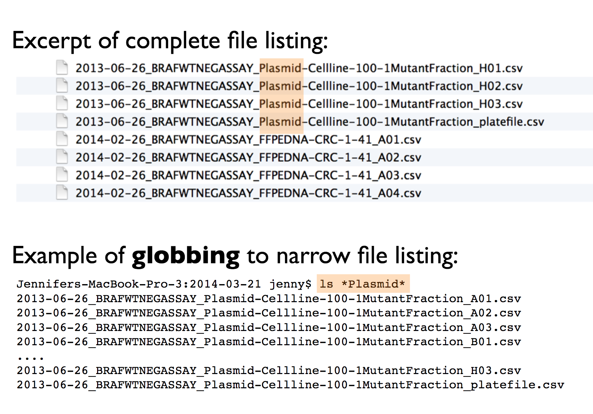
2. Easy to Compute On: File names should be structured consistently, with each part of the name serving a distinct purpose and separated by delimiters. This structure makes it easy to extract information from file names, such as splitting them into meaningful components.
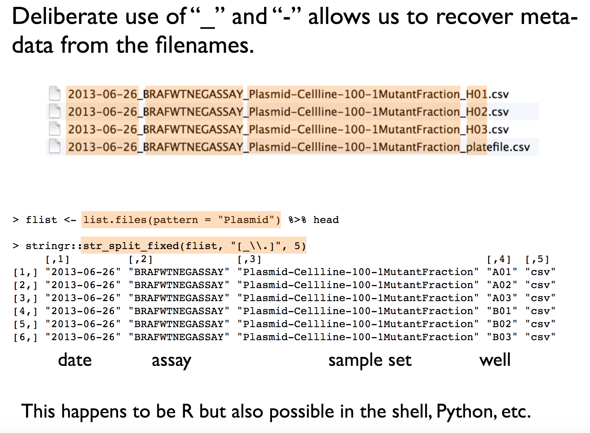
3. Human Readable: A good file name should be human-readable. It should provide a clear indication of what the file contains, just by looking at its name. It's important that even someone unfamiliar with your work can easily understand the file's content.
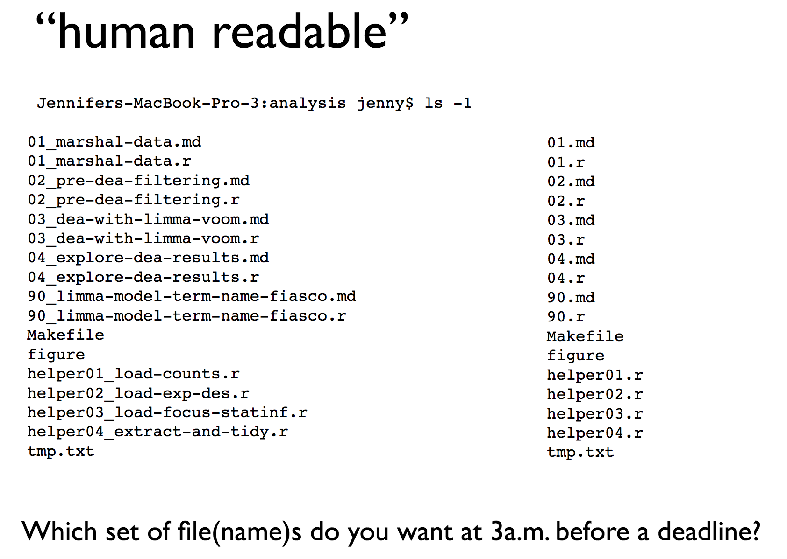
4. Compatible with Default Ordering: Your computer will automatically sort your files, whether you like it or not. To ensure files are sorted sensibly, consider the following:
Put something numeric at the beginning of the file name. If the order of sourcing files matters, state when the file was created. If not, indicate the logical order of the files.
Use the YYYY-MM-DD format for dates (it's an ISO 8601 standard). This format helps maintain chronological order, even for Americans.
Left-pad numbers with zeroes to avoid incorrect sorting (e.g., 01 not 1).
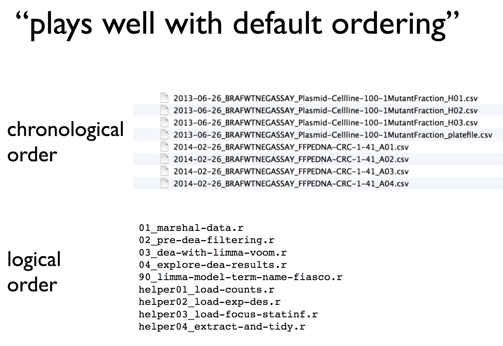 Taking these simple but effective steps can significantly enhance your workflow and help your colleagues as well. Remember, good file names are a small change that can make a big difference in your productivity.
These examples from a great set of slides by R expert Jenny Bryan
7 Penguin project
In this workshop we will work through setting up a project and loading data. Once we have a curated and cleaned the dataset we can work on generating insights from the data.
As a biologist you should be used to asking questions and gathering data. It is also important that you learn all aspects of the research process. This includes responsible data management (understanding data files & spreadsheet organisation, keeping data safe) and data analysis.
In this chapter we will look at the structure of data files, and how to read these with R. We will also continue to develop reproducible scripts. This means that we are writing scripts that are well organised and easy to read, and also making sure that our scripts are complete and capable of reproducing an analysis from start to finish.
Transparency and reproducibility are key values in scientific research, when you analyse data in a reproducible way it means that others can understand and check your work. It also means that the most important person can benefit from your work, YOU! When you return to an analysis after even a short break, you will be thanking your earlier self if you have worked in a clear and reproducible way, as you can pick up right where you left off.
7.1 Meet the Penguins
This data, taken from the palmerpenguins (Horst et al. (2022)) package was originally published by Gorman et al. (2014). In our course we will work with real data that has been shared by other researchers.
The palmer penguins data contains size measurements, clutch observations, and blood isotope ratios for three penguin species observed on three islands in the Palmer Archipelago, Antarctica over a study period of three years.

These data were collected from 2007 - 2009 by Dr. Kristen Gorman with the Palmer Station Long Term Ecological Research Program, part of the US Long Term Ecological Research Network. The data were imported directly from the Environmental Data Initiative (EDI) Data Portal, and are available for use by CC0 license (“No Rights Reserved”) in accordance with the Palmer Station Data Policy. We gratefully acknowledge Palmer Station LTER and the US LTER Network. Special thanks to Marty Downs (Director, LTER Network Office) for help regarding the data license & use. Here is our intrepid package co-author, Dr. Gorman, in action collecting some penguin data:

Here is a map of the study site

7.2 Activity 1: Organising our workspace
Before we can begin working with the data, we need to do some set-up.
Go to RStudio Cloud and open the
PenguinsR projectCreate the following folders using the + New Folder button in the Files tab
- data
- outputs
- scripts
R is case-sensitive so type everything EXACTLY as printed here
dir.create("data",
showWarnings = FALSE)
dir.create("outputs",
showWarnings = FALSE)
dir.create("scripts",
showWarnings = FALSE)
# or this can be run using apply
lapply(c("data", "outputs", "scripts"), function(dir_name) {
dir.create(dir_name, showWarnings = FALSE)
})Having these separate subfolders within our project helps keep things tidy, means it's harder to lose things, and lets you easily tell R exactly where to go to retrieve data.
The next step of our workflow is to have a well organised project space. RStudio Cloud does a lot of the hard work for you, each new data project can be set up with its own Project space.
We will define a project as a series of linked questions that uses one (or sometimes several) datasets. For example a coursework assignment for a particular module would be its own project, a series of linked experiments or particular research project might be its own project.
A Project will contain several files, possibly organised into sub-folders containing data, R scripts and final outputs. You might want to keep any information (wider reading) you have gathered that is relevant to your project.

(#fig:unnamed-chunk-7)An example of a typical R project set-up
Within this project you will notice there is already one file .Rproj. This is an R project file, this is a very useful feature, it interacts with R to tell it you are working in a very specific place on the computer (in this case the cloud server we have dialed into). It means R will automatically treat the location of your project file as the 'working directory' and makes importing and exporting easier1.
It is very important to NEVER to move the .Rproj file, this may prevent your workspace from opening properly.
7.3 Activity 2: Access our data
Now that we have a project workspace, we are ready to import some data.
Use the link below to open a page in your browser with the data open
Right-click Save As to download in csv format to your computer (Make a note of where the file is being downloaded to e.g. Downloads)

(#fig:unnamed-chunk-10)Top image: Penguins data viewed in Excel, Bottom image: Penguins data in native csv format
In raw format, each line of a CSV is separated by commas for different values. When you open this in a spreadsheet program like Excel it automatically converts those comma-separated values into tables and columns.
7.4 Activity 3: Upload our data
The data is now in your Downloads folder on your computer
We need to upload the data to our remote cloud-server (RStudio Cloud), select the upload files to server button in the Files tab
Put your file into the data folder - if you make a mistake select the tickbox for your file, go to the cogs button and choose the option Move.

(#fig:unnamed-chunk-11)Highlighted the buttons to upload files, and more options
7.5 Activity 4: Make a script
Let's now create a new R script file in which we will write instructions and store comments for manipulating data, developing tables and figures. Use the File > New Script menu item and select an R Script.
Add the following:
#___________________________----
# SET UP ----
## An analysis of the bill dimensions of male and female Adelie, Gentoo and Chinstrap penguins ----
### Data first published in Gorman, KB, TD Williams, and WR Fraser. 2014. “Ecological Sexual Dimorphism and Environmental Variability Within a Community of Antarctic Penguins (Genus Pygoscelis).” PLos One 9 (3): e90081. https://doi.org/10.1371/journal.pone.0090081. ----
#__________________________----Then load the following add-on package to the R script, just underneath these comments. Tidyverse isn't actually one package, but a bundle of many different packages that play well together - for example it includes ggplot2 which we used in the last session, so we don't have to call that separately
Add the following to your script:
# PACKAGES ----
library(tidyverse) # tidy data packages
library(janitor) # cleans variable names
#__________________________----Save this file inside the scripts folder and call it 01_import_penguins_data.R
Click on the document outline button (top right of script pane). This will show you how the use of the visual outline
Allows us to build a series of headers and subheaders, this is very useful when using longer scripts.
7.6 Activity 5: Read in data
Now we can read in the data. To do this we will use the function readr::read_csv() that allows us to read in .csv files. There are also functions that allow you to read in .xlsx files and other formats, however in this course we will only use .csv files.
First, we will create an object called
penguins_datathat contains the data in thepenguins_raw.csvfile.Add the following to your script, and check the document outline:
Note the differences between read.csv() and
read_csv. We covered this in differences between tibbles
and dataframes - here most obviously is a difference in column
names.
7.7 Activity: Check your script
#___________________________----
# SET UP ----
## An analysis of the bill dimensions of male and female Adelie, Gentoo and Chinstrap penguins ----
### Data first published in Gorman, KB, TD Williams, and WR Fraser. 2014. “Ecological Sexual Dimorphism and Environmental Variability Within a Community of Antarctic Penguins (Genus Pygoscelis).” PLos One 9 (3): e90081. https://doi.org/10.1371/journal.pone.0090081. ----
#__________________________----
# PACKAGES ----
library(tidyverse) # tidy data packages
library(janitor) # cleans variable names
library(lubridate) # make sure dates are processed properly
#__________________________----
# IMPORT DATA ----
penguins_raw <- read_csv ("data/penguins_raw.csv")
head(penguins_raw) # check the data has loaded, prints first 10 rows of dataframe
#__________________________----7.8 Activity: Test yourself
Question 1. In order to make your R project reproducible what filepath should you use?
Question 2. Which of these would be acceptable to include in a raw datafile?
Question 3. What should always be the first set of functions in our script? ?()
Question 4. When reading in data to R we should use
Question 5. What format is the penguins_raw data in?
Each column is a unique variable and each row is a unique observation so this data is in a long (tidy) format
Question 6. The working directory for your projects is by default set to the location of?
Question 7. Using the filepath "data/penguins_raw.csv" is an example of
Question 8. What operator do I need to use if I wish to assign the output of the read_csv function to an R object (rather than just print the dataframe into the console)?
8 Data wrangling with dplyr
In this chapter you will learn how to use tidyverse functions to data clean and wrangle:
8.1 Activity 1: Change column names
We are going to learn how to organise data using the tidy format2. This is because we are using the tidyverse packages Wickham (2023). This is an opinionated, but highly effective method for generating reproducible analyses with a wide-range of data manipulation tools. Tidy data is an easy format for computers to read. It is also the required data structure for our statistical tests that we will work with later.
Here 'tidy' refers to a specific structure that lets us manipulate and visualise data with ease. In a tidy dataset each variable is in one column and each row contains one observation. Each cell of the table/spreadsheet contains the values. One observation you might make about tidy data is it is quite long - it generates a lot of rows of data - you might remember then that tidy data can be referred to as long-format data (as opposed to wide data).

So we know our data is in R, and we know the columns and names have been imported. But we still don't know whether all of our values imported correctly, or whether it captured all the rows.
8.1.0.1 Add this to your script
When we run colnames() we get the identities of each column in our dataframe
Study name: an identifier for the year in which sets of observations were made
Region: the area in which the observation was recorded
Island: the specific island where the observation was recorded
Stage: Denotes reproductive stage of the penguin
Individual ID: the unique ID of the individual
Clutch completion: if the study nest observed with a full clutch e.g. 2 eggs
Date egg: the date at which the study nest observed with 1 egg
Culmen length: length of the dorsal ridge of the bird's bill (mm)
Culmen depth: depth of the dorsal ridge of the bird's bill (mm)
Flipper Length: length of bird's flipper (mm)
Body Mass: Bird's mass in (g)
Sex: Denotes the sex of the bird
Delta 15N : the ratio of stable Nitrogen isotopes 15N:14N from blood sample
Delta 13C: the ratio of stable Carbon isotopes 13C:12C from blood sample
8.1.0.2 Clean column names
Often we might want to change the names of our variables. They might be non-intuitive, or too long. Our data has a couple of issues:
Some of the names contain spaces
Some of the names have capitalised letters
Some of the names contain brackets
This dataframe does not like these so let's correct these quickly. R is case-sensitive and also doesn't like spaces or brackets in variable names
# CLEAN DATA ----
# clean all variable names to snake_case using the clean_names function from the janitor package
# note we are using assign <- to overwrite the old version of penguins with a version that has updated names
# this changes the data in our R workspace but NOT the original csv file
penguins_clean <- janitor::clean_names(penguins_raw) # clean the column names
colnames(penguins_clean) # quickly check the new variable names## [1] "study_name" "sample_number" "species"
## [4] "region" "island" "stage"
## [7] "individual_id" "clutch_completion" "date_egg"
## [10] "culmen_length_mm" "culmen_depth_mm" "flipper_length_mm"
## [13] "body_mass_g" "sex" "delta_15_n_o_oo"
## [16] "delta_13_c_o_oo" "comments"8.1.0.3 Rename columns (manually)
The clean_names function quickly converts all variable names into snake case. The N and C blood isotope ratio names are still quite long though, so let's clean those with dplyr::rename() where "new_name" = "old_name".
8.2 Check data
8.2.0.1 glimpse: check data format
When we run glimpse() we get several lines of output. The number of observations "rows", the number of variables "columns". Check this against the csv file you have - they should be the same. In the next lines we see variable names and the type of data.
We can see a dataset with 345 rows (including the headers) and 17 variables It also provides information on the type of data in each column
<chr>- means character or text data<dbl>- means numerical data
8.2.0.2 Rename text values
Sometimes we may want to rename the values in our variables in order to make a shorthand that is easier to follow. This is changing the values in our columns, not the column names.
# use mutate and case_when for a statement that conditionally changes the names of the values in a variable
penguins <- penguins |>
mutate(species = case_when(species == "Adelie Penguin (Pygoscelis adeliae)" ~ "Adelie",
species == "Gentoo penguin (Pygoscelis papua)" ~ "Gentoo",
species == "Chinstrap penguin (Pygoscelis antarctica)" ~ "Chinstrap"))Have you checked that the above code block worked? Inspect your new tibble and check the variables have been renamed as you wanted.
8.3 dplyr verbs
In this section we will be introduced to some of the most commonly used data wrangling functions, these come from the dplyr package (part of the tidyverse). These are functions you are likely to become very familiar with.
| verb | action |
|---|---|
| select() | take a subset of columns |
| filter() | take a subset of rows |
| arrange() | reorder the rows |
| summarise() | reduce raw data to user defined summaries |
| group_by() | group the rows by a specified column |
| mutate() | create a new variable |
8.3.1 Select
If we wanted to create a dataset that only includes certain variables, we can use the select() function from the dplyr package.
For example I might wish to create a simplified dataset that only contains species, sex, flipper_length_mm and body_mass_g.
Run the below code to select only those columns
Alternatively you could tell R the columns you don't want e.g.
Note that select() does not change the original penguins tibble. It spits out the new tibble directly into your console.
If you don't save this new tibble, it won't be stored. If you want to keep it, then you must create a new object.
When you run this new code, you will not see anything in your console, but you will see a new object appear in your Environment pane.
8.3.2 Filter
Having previously used select() to select certain variables, we will now use filter() to select only certain rows or observations. For example only Adelie penguins.
We can do this with the equivalence operator ==
We can use several different operators to assess the way in which we should filter our data that work the same in tidyverse or base R.
| Operator | Name |
|---|---|
| A < B | less than |
| A <= B | less than or equal to |
| A > B | greater than |
| A >= B | greater than or equal to |
| A == B | equivalence |
| A != B | not equal |
| A %in% B | in |
If you wanted to select all the Penguin species except Adelies, you use 'not equals'.
This is the same as
You can include multiple expressions within filter() and it will pull out only those rows that evaluate to TRUE for all of your conditions.
For example the below code will pull out only those observations of Adelie penguins where flipper length was measured as greater than 190mm.
8.3.3 Arrange
The function arrange() sorts the rows in the table according to the columns supplied. For example
The data is now arranged in alphabetical order by sex. So all of the observations of female penguins are listed before males.
You can also reverse this with desc()
You can also sort by more than one column, what do you think the code below does?
8.3.4 Mutate
Sometimes we need to create a new variable that doesn't exist in our dataset. For example we might want to figure out what the flipper length is when factoring in body mass.
To create new variables we use the function mutate().
Note that as before, if you want to save your new column you must save it as an object. Here we are mutating a new column and attaching it to the new_penguins data oject.
8.4 Pipes

Pipes look like this: |> Pipes allow you to send the output from one function straight into another function. Specifically, they send the result of the function before |> to be the first argument of the function after |>. As usual, it's easier to show, rather than tell so let's look at an example.
# this example uses brackets to nest and order functions
arrange(.data = filter(.data = select(.data = penguins, species, sex, flipper_length_mm), sex == "MALE"), desc(flipper_length_mm))# this example uses sequential R objects to make the code more readable
object_1 <- select(.data = penguins, species, sex, flipper_length_mm)
object_2 <- filter(.data = object_1, sex == "MALE")
arrange(object_2, desc(flipper_length_mm))# this example is human readable without intermediate objects
penguins |>
select(species, sex, flipper_length_mm) |>
filter(sex == "MALE") |>
arrange(desc(flipper_length_mm))The reason that this function is called a pipe is because it 'pipes' the data through to the next function. When you wrote the code previously, the first argument of each function was the dataset you wanted to work on. When you use pipes it will automatically take the data from the previous line of code so you don't need to specify it again.
Take the penguins data AND THEN Select only the species, sex and flipper length columns AND THEN Filter to keep only those observations labelled as sex equals male AND THEN Arrange the data from HIGHEST to LOWEST flipper lengths.
From R version 4 onwards there is now a “native pipe”
|>
This doesn’t require the tidyverse magrittr package and
the “old pipe” %>% or any other packages to load and
use.
You may be familiar with the magrittr pipe or see it in other tutorials, and website usages. The native pipe works equivalntly in most situations but if you want to read about some of the operational differences, this site does a good job of explaining .
8.5 A few more handy functions
8.5.1 Check for duplication
It is very easy when inputting data to make mistakes, copy something in twice for example, or if someone did a lot of copy-pasting to assemble a spreadsheet (yikes!). We can check this pretty quickly
# check for duplicate rows in the data
penguins |>
duplicated() |> # produces a list of TRUE/FALSE statements for duplicated or not
sum() # sums all the TRUE statements[1] 0Great!
If I did have duplications I could investigate further
8.5.2 Summarise
We can also explore our data for very obvious typos by checking for implausibly small or large values, this is a simple use of the summarise function.
# use summarise to make calculations
penguins |>
summarise(min=min(body_mass_g, na.rm=TRUE),
max=max(body_mass_g, na.rm=TRUE))The minimum weight for our penguins is 2.7kg, and the max is 6.3kg - not outrageous. If the min had come out at 27g we might have been suspicious. We will use summarise again to calculate other metrics in the future.
Our first data insight, the difference the smallest adult penguin in our dataset is nearly half the size of the largest penguin.
8.5.3 Group By
Many data analysis tasks can be approached using the “split-apply-combine” paradigm: split the data into groups, apply some analysis to each group, and then combine the results. dplyr makes this very easy with the group_by() function. In the summarise example above we were able to find the max-min body mass values for the penguins in our dataset. But what if we wanted to break that down by a grouping such as species of penguin. This is where group_by() comes in.
Now we know a little more about our data, the max weight of our Gentoo penguins is much larger than the other two species. In fact, the minimum weight of a Gentoo penguin is not far off the max weight of the other two species.
8.5.4 Distinct
We can also look for typos by asking R to produce all of the distinct values in a variable. This is more useful for categorical data, where we expect there to be only a few distinct categories
Here if someone had mistyped e.g. 'FMALE' it would be obvious. We could do the same thing (and probably should have before we changed the names) for species.
8.6 Summary
This provides a quick breakdown of the max and min for all numeric variables, as well as a list of how many missing observations there are for each one. As we can see there appear to be two missing observations for measurements in body mass, bill lengths, flipper lengths and several more for blood measures. We don't know for sure without inspecting our data further, but it is likely that the two birds are missing multiple measurements, and that several more were measured but didn't have their blood drawn.
We will leave the NA's alone for now, but it's useful to know how many we have.
We've now got a clean & tidy dataset, with a handful of first insights into the data.
8.7 More summary tools
Very often we want to make calculations aobut groups of observations, such as the mean or median. We are often interested in comparing responses among groups. For example, we previously found the number of distinct penguins in our entire dataset.
Add these new lines of code to your script as you try them. Comment out # and add short descriptions of what you are achieving with them
Now consider when the groups are subsets of observations, as when we find out the number of penguins in each species and sex.
As we progress, not only are we learning how to use our data wrangling tools. We are also gaining insights into our data.
Question How many female Adelie penguins are in our dataset?
Question How many Gentoo penguins did not have their sex recorded?
We are using summarise and group_by a lot! They are very powerful functions:
group_byadds grouping information into a data object, so that subsequent calculations happen on a group-specific basis.summariseis a data aggregation function thart calculates summaries of one or more variables, and it will do this separately for any groups defined bygroup_by
8.7.1 summarise()
summarise() has a whole list of useful functions for producing descriptive statistics
| verb | action |
|---|---|
| mean(), median() | Center data |
| sd(), IQR() | Spread of data |
| min(), max(), quantile() | Range of data |
| first(), last(), nth() | Position |
| n(), n_distinct() | Count |
minandmaxto calculate minimum and maximum values of a numeric vectormeanandmedianto calculate averages of a numeric vectorsdandvarcalculate standard deviation and variance of a numeric vector
Using summarise we can calculate the mean flipper and bill lengths of our penguins:
penguins |>
summarise(
mean_flipper_length = mean(flipper_length_mm, na.rm=TRUE),
mean_culmen_length = mean(culmen_length_mm, na.rm=TRUE))
Note - we provide informative names for ourselves on the left side of
the =
When performing calculations in summarise it is important to set
na.rm = TRUE, this removes missing values from the
calculation
What happens when you try to produce calculations that include
NA? e.g NA + 4 or NA * 5
We can use several functions in summarise. Which means we can string several calculations together in a single step, and generate more insights into our data.
penguins |>
summarise(n=n(), # number of rows of data
num_penguins = n_distinct(individual_id), # number of unique individuals
mean_flipper_length = mean(flipper_length_mm, na.rm=TRUE), # mean flipper length
prop_female = sum(sex == "FEMALE", na.rm=TRUE) / n()) # proportion of observations that are coded as female8.7.1.1 Summarize across columns
across has two arguments, .cols and .fns.
The
.colsargument lets you select the columns you wish to apply functions toThe
.fnsargument applies the required function to all of the selected columns.
# Across ----
# The mean of ALL numeric columns in the data, where(is.numeric == TRUE) hunts for numeric columns
penguins |>
summarise(across(.cols = where(is.numeric),
.fns = ~ mean(., na.rm=TRUE)))The above example calculates the means of any & all numeric variables in the dataset.
The below example is a slightly complicated way of running the n_distinct for summarise. The .cols() looks for any column that contains the word "penguin" and then runs the n_distinct()command on these
8.7.2 group_by revisited
The group_by function provides the ability to separate our summary functions according to any subgroups we wish to make. The real magic happens when we pair this with summarise and mutate.
In this example, by grouping on the individual penguin ids, then summarising by n - we can see how many times each penguin was monitored in the course of this study.
Remember the actions of group_by are “invisible”.
Subsequent functions are applied in a “grouped by” manner - but the
dataframe itself looks unchanged.
8.7.2.1 More than one grouping variable
What if we need to calculate by more than one variable at a time? No problem we can submit several arguments:
We can then calculate the mean flipper length of penguins in each of the six combinations
Now the first row of our summary table shows us the mean flipper length (in mm) for female Adelie penguins. There are eight rows in total, six unique combinations and two rows where the sex of the penguins was not recorded(NA)
8.7.2.2 using group_by with mutate
So far we have only used group_by with the summarise function, but this doesn't always have to be the case.
When mutate is used with group_by, the calculations occur by 'group'. Here's an example:
# Using mutate and group_by ----
centered_penguins <- penguins |>
group_by(sex, species) |>
mutate(flipper_centered = flipper_length_mm-mean(flipper_length_mm, na.rm=TRUE))
centered_penguins |>
select(flipper_centered)
# Each row now returns a value for EACH penguin of how much greater/lesser than the group average (sex and species) its flipper is. Here we are calculating a group centered mean, this new variable contains the difference between each observation and the mean of whichever group that observation is in.
8.7.2.3 remove group_by
On occasion we may need to remove the grouping information from a dataset. This is often required when we string pipes together, when we need to work using a grouping structure, then revert back to the whole dataset again
Look at our grouped dataframe, and we can see the information on groups is at the top of the data:
# A tibble: 344 x 10
# Groups: sex, species [8]
species island culmen_length_mm culmen_depth_mm flipper_length_~ body_mass_g
<chr> <chr> <dbl> <dbl> <dbl> <dbl>
1 Adelie Torge~ 39.1 18.7 181 3750
2 Adelie Torge~ 39.5 17.4 186 3800
3 Adelie Torge~ 40.3 18 195 3250# Run this command will remove the groups - but this is only saved if assigned BACK to an object
centered_penguins <- centered_penguins |>
ungroup()
centered_penguinsLook at this output - you can see the information on groups has now been removed from the data.
8.8 Working with character strings
Datasets often contain words, and we call these words "(character) strings".
Often these aren't quite how we want them to be, but we can manipulate these as much as we like. Functions in the package stringr, are fantastic. And the number of different types of manipulations are endless!
8.8.1 More stringr
penguins |>
mutate(species=str_remove_all(species, "e"))
# remove every character "e" from selected variablesWe can also trim leading or trailing empty spaces with str_trim. These are often problematic and difficult to spot e.g.
We can easily imagine a scenario where data is manually input, and trailing or leading spaces are left in. These are difficult to spot by eye - but problematic because as far as R is concerned these are different values. We can use the function distinct to return the names of all the different levels it can find in this dataframe.
If we pipe the data throught the str_trim function to remove any gaps, then pipe this on to distinct again - by removing the whitespace, R now recognises just one level to this data.
A quick example of how to extract partial strings according to a pattern is to use str_detect. Combined with filter it is possible to subset a dataframe by searching for all the strings that match provided information, such as all the penguin IDs that start with "N1"
8.8.2 separate
Sometimes a string might contain two pieces of information in one. This does not confirm to our tidy data principles. But we can easily separate the information with separate() from the tidyr package.
First we produce some made-up data
| label |
|---|
| a-1 |
| a-2 |
| a-3 |
df |>
separate(label, # name of variable
c("treatment", "replicate"), # new column names
sep="-") # the character to mark where the separation occurs| treatment | replicate |
|---|---|
| a | 1 |
| a | 2 |
| a | 3 |
We started with one variable called label and then split it into two variables, treatment and replicate, with the split made where - occurs.
The opposite of this function is unite()
8.9 Working with dates
Working with dates can be tricky, treating date as strictly numeric is problematic, it won't account for number of days in months or number of months in a year.
Additionally there's a lot of different ways to write the same date:
13-10-2019
10-13-2019
13-10-19
13th Oct 2019
2019-10-13
This variability makes it difficult to tell our software how to read the information, luckily we can use the functions in the lubridate package.
If you get a warning that some dates could not be parsed, then you might find the date has been inconsistently entered into the dataset.
Pay attention to warning and error messages
Depending on how we interpret the date ordering in a file, we can use ymd(), ydm(), mdy(), dmy()
- Question What is the appropriate function from the above to use on the
date_eggvariable?
Here we use the mutate function from dplyr to create a new variable called date_egg_proper based on the output of converting the characters in date_egg to date format. The original variable is left intact, if we had specified the "new" variable was also called date_egg then it would have overwritten the original variable.
Once we have established our date data, we are able to perform calculations. Such as the date range across which our data was collected.
8.9.0.1 Calculations with dates
How many times was each penguin measured, and across what total time period?
penguins |>
group_by(individual_id) |>
summarise(first_observation=min(date_egg_proper),
last_observation=max(date_egg_proper),
study_duration = last_observation-first_observation,
n=n())Cool we can also convert intervals such as days into weeks, months or years with dweeks(1), dmonths(1), dyears(1).
As with all cool functions, you should check out the RStudio cheat sheet for more information. Date type data is common in datasets, and learning to work with it is a useful skill.
penguins |>
group_by(individual_id) |>
summarise(first_observation=min(date_egg_proper),
last_observation=max(date_egg_proper),
study_duration_years = (last_observation-first_observation)/lubridate::dyears(1),
n=n()) |>
arrange(desc(study_duration_years))Or extract the year from the date - let's do this now and update our dataframe
8.10 Factors
In R, factors are a class of data that allow for ordered categories with a fixed set of acceptable values.
Typically, you would convert a column from character or numeric class to a factor if you want to set an intrinsic order to the values (“levels”) so they can be displayed non-alphabetically in plots and tables, or for use in linear model analyses (more on this later).
Another common use of factors is to standardise the legends of plots so they do not fluctuate if certain values are temporarily absent from the data.
penguins <- penguins |>
mutate(flipper_range = case_when(flipper_length_mm <= 190 ~ "small",
flipper_length_mm >190 & flipper_length_mm < 213 ~ "medium",
flipper_length_mm >= 213 ~ "large"))If we make a barplot, the order of the values on the x axis will typically be in alphabetical order for any character data

To convert a character or numeric column to class factor, you can use any function from the forcats package. They will convert to class factor and then also perform or allow certain ordering of the levels - for example using forcats::fct_relevel() lets you manually specify the level order.
The function as_factor() simply converts the class without any further capabilities.
The base R function factor() converts a column to factor and allows you to manually specify the order of the levels, as a character vector to its levels = argument.
Below we use mutate() and fct_relevel() to convert the column flipper_range from class character to class factor.
## [1] "large" "medium" "small"Now when we call a plot, we can see that the x axis categories match the intrinsic order we have specified with our factor levels.

Factors will also be important when we build linear models a bit
later. The reference or intercept for a categorical predictor variable
when it is read as a <chr> is set by R as the first
one when ordered alphabetically. This may not always be the most
appropriate choice, and by changing this to an ordered
<fct> we can manually set the intercept.
8.11 Finished
Make sure you have saved your script 💾 and given it the filename "01_import_penguins_data.R" in the "scripts" folder.
You have been playing with a lot of dplyr functions, think - what functions do I actually need to make sure I have a tidy and clean dataset with appropriate column names and formatted data?
We want : snake_case names, shorter isotope names, simpler species values and properly formatted date data with a new column for year.
#___________________________----
# SET UP ----
## An analysis of the bill dimensions of male and female Adelie, Gentoo and Chinstrap penguins ----
### Data first published in Gorman, KB, TD Williams, and WR Fraser. 2014. “Ecological Sexual Dimorphism and Environmental Variability Within a Community of Antarctic Penguins (Genus Pygoscelis).” PLos One 9 (3): e90081. https://doi.org/10.1371/journal.pone.0090081. ----
#__________________________----
# PACKAGES ----
library(tidyverse) # tidy data packages
library(janitor) # cleans variable names
#__________________________----
# IMPORT DATA ----
penguins_raw <- read_csv ("data/penguins_raw.csv")
attributes(penguins_raw) # reads as tibble
head(penguins_raw) # check the data has loaded, prints first 10 rows of dataframe
#__________________________----
# CLEAN DATA ----
# clean all variable names to snake_case using the clean_names function from the janitor package
# note we are using assign <- to overwrite the old version of penguins with a version that has updated names
# this changes the data in our R workspace but NOT the original csv file
penguins_clean <- janitor::clean_names(penguins_raw) # clean the column names
colnames(penguins_clean) # quickly check the new variable names
# shorten the variable names for N and C isotope blood samples
penguins <- rename(penguins_clean,
"delta_15n"="delta_15_n_o_oo", # use rename from the dplyr package
"delta_13c"="delta_13_c_o_oo")
# use mutate and case_when for a statement that conditionally changes the names of the values in a variable
penguins <- penguins |>
mutate(species = case_when(species == "Adelie Penguin (Pygoscelis adeliae)" ~ "Adelie",
species == "Gentoo penguin (Pygoscelis papua)" ~ "Gentoo",
species == "Chinstrap penguin (Pygoscelis antarctica)" ~ "Chinstrap"))
# use lubridate to format date and extract the year
penguins <- penguins |>
mutate(date_egg_proper = lubridate::dmy(date_egg))
penguins <- penguins |>
mutate(year = as.integer(lubridate::year(date_egg_proper)))
# Export tidy dataframe for use in future sessions
saveRDS(penguins, file = "outputs/2024_11_01_penguin_clean.RDS")Some parts of our script are redundant for the purposes of generating a clean dataframe, we need the
penguinsdata in a tidy/rectangular format, checked for missing values, duplicated data and with clean column names.If we have that we can generate a .RDS file to save this dataframe for use in data insights scripts
- Does your workspace look like the below?

(#fig:unnamed-chunk-101)My neat project layout

(#fig:unnamed-chunk-102)My scripts and file subdirectory
8.12 Activity: Test yourself
Question 1. In order to subset a data by rows I should use the function
Question 2. In order to subset a data by columns I should use the function
Question 3. In order to make a new column I should use the function
Question 4. Which operator should I use to send the output from line of code into the next line?
Question 5. What will be the outcome of the following line of code?
Unless the output of a series of functions is "assigned" to an object using <- it will not be saved, the results will be immediately printed. This code would have to be modified to the below in order to create a new filtered object penguins_filtered
Question 6. What is the main point of a data "pipe"?
Question 7. The naming convention outputted by the function `janitor::clean_names() is
Question 8. Which package provides useful functions for manipulating character strings?
Question 9. Which package provides useful functions for manipulating dates?
Question 10. If we do not specify a character variable as a factor, then ordering will default to what?
9 Data reshaping
While neither wide or long data is more correct than the other, we will work with long data as it is clearer how many distinct types of variables there are in our data and the tools we will be using from the tidyverse are designed to work with long data.
9.1 Using pivot functions
There are functions found as part of the tidyverse that can help us to reshape data.
tidyr::pivot_wider()- from long to wide formattidyr::pivot_longer()- from wide to long format
country <- c("x", "y", "z")
yr1960 <- c(10, 20, 30)
yr1970 <- c(13, 23, 33)
yr2010 <- c(15, 25, 35)
country_data <- tibble(country, yr1960, yr1970, yr2010)
country_data| country | yr1960 | yr1970 | yr2010 |
|---|---|---|---|
| x | 10 | 13 | 15 |
| y | 20 | 23 | 25 |
| z | 30 | 33 | 35 |
pivot_longer(data = country_data,
cols = yr1960:yr2010,
names_to = "year",
names_prefix = "yr",
values_to = "metric")
(#fig:img-pivot)Reshaping data with pivot
To save these changes to your data format, you must assign this to an object, and you have two options
Use the same name as the original R object, this will overwrite the original with the new format
Use a new name for the reformatted data both R objects will exist in your Environment
Neither is more correct than the other but be aware of what you are doing.
9.1.1 Overwrite the original object
9.2 Join functions
Frequently, analysis of data will require merging these separately managed tables back together. There are multiple ways to join the observations in two tables, based on how the rows of one table are merged with the rows of the other.
When conceptualizing merges, one can think of two tables, one on the left and one on the right. The most common (and often useful) join is when you merge the subset of rows that have matches in both the left table and the right table: this is called an INNER JOIN. Other types of join are possible as well.
A LEFT JOIN takes all of the rows from the left table, and merges on the data from matching rows in the right table. Keys that don’t match from the left table are still provided with a missing value (NA) from the right table.
A RIGHT JOIN is the same, except that all of the rows from the right table are included with matching data from the left, or a missing value.
Finally, a FULL JOIN includes all data from all rows in both tables, and includes missing values wherever necessary.

9.2.1 Left join
# Create tibbles df_primary and df_secondary
df_primary <- tibble(
ID = c("A", "B", "C", "D", "F"),
y = c(5, 5, 8, 0, 9)
)
df_secondary <- tibble(
ID = c("A", "B", "C", "D", "E"),
z = c(30, 21, 22, 25, 29)
)| ID | y | z |
|---|---|---|
| A | 5 | 30 |
| B | 5 | 21 |
| C | 8 | 22 |
| D | 0 | 25 |
| F | 9 | NA |
9.2.2 Right join
| ID | y | z |
|---|---|---|
| A | 5 | 30 |
| B | 5 | 21 |
| C | 8 | 22 |
| D | 0 | 25 |
| E | NA | 29 |
10 Basic ggplot
10.1 Intro to grammar
The ggplot2 package is widely used and valued for its simple, consistent approach to making data visuals.
The 'grammar of graphics' relates to the different components of a plot that function like different parts of linguistic grammar. For example, all plots require axes, so the x and y axes form one part of the ‘language’ of a plot. Similarly, all plots have data represented between the axes, often as points, lines or bars. The visual way that the data is represented forms another component of the grammar of graphics. Furthermore, the colour, shape or size of points and lines can be used to encode additional information in the plot. This information is usually clarified in a key, or legend, which can also be considered part of this ‘grammar’.
The philosophy of ggplot is much better explained by the package author, Hadley Wickham (Wickham et al. (2023)). For now, we just need to be aware that ggplots are constructed by specifying the different components that we want to display, based on underlying information in a data frame.

(#fig:ambitious-figure)An example of what we can produce in ggplot
10.2 Building a plot
To start building the plot We are going to use the penguin data we have been working with previously. First we must specify the data frame that contains the relevant data for our plot. We can do this in two ways:
- Here we are ‘sending the penguins data set into the ggplot function’:
- Here we are specifying the dataframe within the
ggplot()function
The output is identical

Running this command will produce an empty grey panel. This is because we need to specify how different columns of the data frame should be represented in the plot.
10.2.1 Aesthetics - aes()
We can call in different columns of data from any dataset based on their column names. Column names are given as ‘aesthetic’ elements to the ggplot function, and are wrapped in the aes() function.
Because we want a scatter plot, each point will have an x and a y coordinate. We want the x axis to represent flipper length ( x = flipper_length_mm ), and the y axis to represent the body mass ( y = body_mass_g ).
We give these specifications separated by a comma. Quotes are not required when giving variables within aes().
Those interested in why quotes aren’t required can read about non-standard evaluation.

So far we have the grid lines for our x and y axis. ggplot() knows the variables required for the plot, and thus the scale, but has no information about how to display the data points.
10.3 Geometric representations - geom()
Given we want a scatter plot, we need to specify that the geometric representation of the data will be in point form, using geom_point(). There are many geometric object types.

(#fig:img-objects-enviro)geom shapes
Here we are adding a layer (hence the + sign) of points to the plot. We can think of this as similar to e.g. Adobe Photoshop which uses layers of images that can be reordered and modified individually. Because we add to plots layer by layer the order of your geoms may be important for your final aesthetic design.
For ggplot, each layer will be added over the plot according to its position in the code. Below I first show the full breakdown of the components in a layer. Each layer requires information on
- data
- aesthetics
- geometric type
- any summary of the data
- position
## Add a geom ----
penguins %>%
ggplot(aes(x=flipper_length_mm,
y = body_mass_g))+
layer( # layer inherits data and aesthetic arguments from previous
geom="point", # draw point objects
stat="identity", # each individual data point gets a geom (no summaries)
position=position_identity()) # data points are not moved in any way e.g. we could specify jitter or dodge if we want to avoid busy overlapping dataThis is quite a complicate way to write new layers - and it is more usual to see a simpler more compact approach
penguins %>%
ggplot(aes(x=flipper_length_mm,
y = body_mass_g))+
geom_point() # geom_point function will always draw points, and unless specified otherwise the arguments for position and stat are both "identity".
Now we have the scatter plot! Each row (except for two rows of missing data) in the penguins data set now has an x coordinate, a y coordinate, and a designated geometric representation (point).
From this we can see that smaller penguins tend to have smaller flipper lengths.
10.3.1 %>% and +
ggplot2, an early component of the tidyverse package, was written before the pipe was introduced. The + sign in ggplot2 functions in a similar way to the pipe in other functions in the tidyverse: by allowing code to be written from left to right.
10.3.2 Colour
The colors of lines and points can be set directly using colour="red", replacing “red” with a color name. The colors of filled objects, like bars, can be set using fill="red".

However the current plot could be more informative if colour was used to convey information about the species of each penguin.
In order to achieve this we need to use aes() again, and make the colour conditional upon a variable.
Here, the aes() function containing the relevant column name, is given within the geom_point() function.
A common mistake is to get confused about when to use (or not use)
aes()
If specifying a fixed aesthetic e.g. red for everything it DOES NOT
go inside aes() instead specify e.g. colour = “red” or
shape =21.
If you wish to modify an aethetic according to a variable in your
data THEN it DOES go inside aes()
e.g. aes(colour = species)

You may (or may not) have noticed that the grammar of ggplot (and tidyverse in general) accepts British/Americanization for spelling!!!
With data visualisations we can start to gain insights into our data very quickly, we can see that the Gentoo penguins tend to be both larger and have longer flippers
Add carriage returns (new lines) after each %>% or + symbols.
In most cases, R is blind to white space and new lines, so this is simply to make our code more readable, and allow us to add readable comments.
10.3.3 More layers
We can see the relationship between body size and flipper length. But what if we want to model this relationship with a trend line? We can add another ‘layer’ to this plot, using a different geometric representation of the data. In this case a trend line, which is in fact a summary of the data rather than a representation of each point.
The geom_smooth() function draws a trend line through the data. The default behaviour is to draw a local regression line (curve) through the points, however these can be hard to interpret. We want to add a straight line based on a linear model (‘lm’) of the relationship between x and y.
This is our first encounter with linear models in this course, but we will learn a lot more about them later on.
## Add a second geom ----
penguins %>%
ggplot(aes(x=flipper_length_mm,
y = body_mass_g))+
geom_point(aes(colour=species))+
geom_smooth(method="lm", #add another layer of data representation.
se=FALSE,
aes(colour=species)) # note layers inherit information from the top ggplot() function but not previous layers - if we want separate lines per species we need to either specify this again *or* move the color aesthetic to the top layer. 
In the example above we may notice that we are assigning colour to the same variable (species) in both geometric layers. This means we have the option to simplify our code. Aesthetics set in the "top layer" of ggplot() are inherited by all subsequent layers.
penguins %>%
ggplot(aes(x=flipper_length_mm,
y = body_mass_g,
colour=species))+ ### now colour is set here it will be inherited by ALL layers
geom_point()+
geom_smooth(method="lm", #add another layer of data representation.
se=FALSE)
Note - that the trend line is blocking out certain points, because it is the ‘top layer’ of the plot. The geom layers that appear early in the command are drawn first, and can be obscured by the geom layers that come after them.
What happens if you switch the order of the geom_point() and geom_smooth() functions above? What do you notice about the trend line?
10.4 More plots
10.4.1 Jitter
The geom_jitter() command adds some random scatter to the points which can reduce over-plotting. Compare these two plots:

## geom point
ggplot(data = penguins, aes(x = species, y = culmen_length_mm)) +
geom_point(aes(color = species),
alpha = 0.7,
show.legend = FALSE)
## More geoms ----
ggplot(data = penguins, aes(x = species, y = culmen_length_mm)) +
geom_jitter(aes(color = species),
width = 0.1, # specifies the width, change this to change the range of scatter
alpha = 0.7, # specifies the amount of transparency in the points
show.legend = FALSE) # don't leave a legend in a plot, if it doesn't add value10.4.2 Boxplots
Box plots, or ‘box & whisker plots’ are another essential tool for data analysis. Box plots summarize the distribution of a set of values by displaying the minimum and maximum values, the median (i.e. middle-ranked value), and the range of the middle 50% of values (inter-quartile range). The whisker line extending above and below the IQR box define Q3 + (1.5 x IQR), and Q1 - (1.5 x IQR) respectively. You can watch a short video to learn more about box plots here.

To create a box plot from our data we use (no prizes here) geom_boxplot()
ggplot(data = penguins, aes(x = species, y = culmen_length_mm)) +
geom_boxplot(aes(fill = species),
alpha = 0.7,
width = 0.5, # change width of boxplot
show.legend = FALSE)
Note that when specifying colour variables using aes()
some geometric shapes support an internal colour “fill” and an external
colour “colour”. Try changing the aes fill for colour in the code above,
and note what happens.
The points indicate outlier values [i.e., those greater than Q3 + (1.5 x IQR)].
We can overlay a boxplot on the scatter plot for the entire dataset, to fully communicate both the raw and summary data. Here we reduce the width of the jitter points slightly.
ggplot(data = penguins, aes(x = species, y = culmen_length_mm)) +
geom_boxplot(aes(fill = species), # note fill is "inside" colour and colour is "edges" - try it for yourself
alpha = 0.2, # fainter boxes so the points "pop"
width = 0.5, # change width of boxplot
outlier.shape=NA)+
geom_jitter(aes(colour = species),
width=0.2)+
theme(legend.position = "none")
In the above example I switched from using show.legend=FALSE inside the geom layer to using theme(legend.position=“none”). Why? This is an example of reducing redundant code. I would have to specify show.legend=FALSE for every geom layer in my plot, but the theme function applies to every layer. Save code, save time, reduce errors!

10.4.3 Violin plots
Violin plots display the distribution of a dataset and can be created by calling geom_violin(). They are so-called because the shape they make sometimes looks something like a violin. They are essentially sideways, mirrored density plots. Note that the below code is identical to the code used to draw the boxplots above, except for the call to geom_violin() rather than geom_boxplot().
penguins |>
drop_na(sex) |>
ggplot(aes(x = species, y = culmen_length_mm)) +
geom_violin(aes(fill = sex),
width = 0.5)
10.4.4 Bar plots

If your dataset already has the counts that you want to plot, you can set stat="identity" inside of geom_bar() to use that number instead of counting rows.
We could go for a stacked bar approach
penguins |>
ggplot(aes(x="",
fill=species))+
# specify fill = species to ensure colours are defined by species
geom_bar(position="fill")+
labs(x="",
y="")
This graph is OK but not great, the height of each section of the bar represents the relative proportions of each species in the dataset, but this type of chart becomes increasingly difficult to read as more categories are included. Colours become increasingly samey,and it is difficult to read where on the y-axis a category starts and stops, you then have to do some subtraction to work out the values.
10.4.5 Density and histogram
The base statistic for geom_histogram() is count, and by default geom_histogram() divides the x-axis into 30 "bins" and counts how many observations are in each bin and so the y-axis does not need to be specified. When you run the code to produce the histogram, you will get the message "stat_bin() using bins = 30. Pick better value with binwidth". You can change this by either setting the number of bins (e.g., bins = 20) or the width of each bin (e.g., binwidth = 5) as an argument.

The layer system makes it easy to create new types of plots by adapting existing recipes. For example, rather than creating a histogram, we can create a smoothed density plot by calling geom_density() rather than geom_histogram(). The rest of the code remains identical.

(PART*) Data Insights
11 Data Insights part one
In these last chapters we are concentrating on generating insights into our data using visualisations and descriptive statistics. The easiest way to do this is to use questions as tools to guide your investigation. When you ask a question, the question focuses your attention on a specific part of your dataset and helps you decide which graphs, models, or transformations to make.
For this exercise we will propose that our task is to generate insights into the body mass of our penguins, in order to answer the question
- How is body mass associated with bill length and depth in penguins?
In order to answer this question properly we should first understand our different variables and how they might relate to each other.
- Distribution of data types
- Central tendency
- Relationship between variables
- Confounding variables
This inevitably leads to more and a variety of questions. Each new question that you ask will expose you to a new aspect of your data.
11.0.1 Data wrangling
Importantly you should have already generated an understanding of the variables contained within your dataset during the data wrangling steps. Including:
The number of variables
The data format of each variable
Checked for missing data
Checked for typos, duplications or other data errors
Cleaned column or factor names
It is very important to not lose site of the questions you are asking
You should also play close attention to the data, and remind yourself frequently how many variables do you have and what are their names?
How many rows/observations do you have?
Pay close attention to the outputs, errors and warnings from the R console.
11.1 Load data
Make a script
Let's now create a new R script file in which we will write instructions and store comments for manipulating data, developing tables and figures. Use the File > New Script menu item and select an R Script.
Add the following:
#___________________________----
# EDA ----
## Exploratory data analysis of the bill dimensions of male and female Adelie, Gentoo and Chinstrap penguins ----
#__________________________----
penguins <- readRDS("outputs/2024_11_01_penguin_clean.RDS")Save this file inside the scripts folder and call it 02_eda_penguins.R
11.2 Quick view of variables
Let's take a look at some of our variables, these functions will give a quick snapshot overview.
We can see that bill length contains numbers, and that many of these are fractions, but only down to 0.1mm. By comparison body mass all appear to be discrete number variables. Does this make body mass an integer? The underlying quantity (bodyweight) is clearly continuous, it is clearly possible for a penguin to weigh 3330.7g but it might look like an integer because of the way it was measured. This illustrates the importance of understanding the the type of variable you are working with - just looking at the values isn't enough.
On the other hand, how we choose to measure and record data can change the way it is presented in a dataset. If the researchers had decided to simply record small, medium and large classes of bodyweight, then we would be dealing with ordinal categorical variables (factors). These distinctions can become less clear if we start to deal with multiple classes of ordinal categories - for example if the researchers were measuring body mass to the nearest 10g. It might be reasonable to treat these as integers...
11.3 Categorical variables
11.3.1 Frequency
| species | n |
|---|---|
| Adelie | 152 |
| Chinstrap | 68 |
| Gentoo | 124 |
It might be useful for us to make some quick data summaries here, like relative frequency
prob_obs_species <- penguins |>
group_by(species) |>
summarise(n = n()) |>
mutate(prob_obs = n/sum(n))
prob_obs_species| species | n | prob_obs |
|---|---|---|
| Adelie | 152 | 0.4418605 |
| Chinstrap | 68 | 0.1976744 |
| Gentoo | 124 | 0.3604651 |
So about 44% of our sample is made up of observations from Adelie penguins. When it comes to making summaries about categorical data, that's about the best we can do, we can make observations about the most common categorical observations, and the relative proportions.

This chart is ok - but can we make anything better?
We could go for a stacked bar approach
penguins |>
ggplot(aes(x="",
fill=species))+
# specify fill = species to ensure colours are defined by species
geom_bar(position="fill")+
# specify fill forces geom_bar to calculate percentages
scale_y_continuous(labels=scales::percent)+
#use scales package to turn y axis into percentages easily
labs(x="",
y="")+
theme_minimal()
This graph is OK but not great, the height of each section of the bar represents the relative proportions of each species in the dataset, but this type of chart becomes increasingly difficult to read as more categories are included. Colours become increasingly samey,and it is difficult to read where on the y-axis a category starts and stops, you then have to do some subtraction to work out the values.
The best graph is then probably the first one we made - with a few minor tweak we can rapidly improve this.
penguins |>
mutate(species=factor(species, levels=c("Adelie",
"Gentoo",
"Chinstrap"))) |>
# set as factor and provide levels
ggplot()+
geom_bar(aes(x=species),
fill="steelblue",
width=0.8)+
labs(x="Species",
y = "Number of observations")+
geom_text(data=prob_obs_species,
aes(y=(n+10),
x=species,
label=scales::percent(prob_obs)))+
coord_flip()+
theme_minimal()
This is an example of a figure we might use in a report or paper. Having cleaned up the theme, added some simple colour, made sure our labels are clear and descriptive, ordered our categories in ascending frequency order, and included some simple text of percentages to aid readability.
11.3.2 Two categorical variables
Understanding how frequency is broken down by species and sex might be useful information to have.
| species | sex | n | prob_obs |
|---|---|---|---|
| Adelie | FEMALE | 73 | 0.4802632 |
| Adelie | MALE | 73 | 0.4802632 |
| Adelie | NA | 6 | 0.0394737 |
| Chinstrap | FEMALE | 34 | 0.5000000 |
| Chinstrap | MALE | 34 | 0.5000000 |
| Gentoo | FEMALE | 58 | 0.4677419 |
| Gentoo | MALE | 61 | 0.4919355 |
| Gentoo | NA | 5 | 0.0403226 |
11.4 Continuous variables
11.4.1 Visualising distributions
Variation is the tendency of the values of a variable to change from measurement to measurement. You can see variation easily in real life; if you measure any continuous variable twice, you will get two different results. This is true even if you measure quantities that are constant, like the speed of light. Each of your measurements will include a small amount of error that varies from measurement to measurement. Every variable has its own pattern of variation, which can reveal interesting information. The best way to understand that pattern is to visualise the distribution of the variable’s values.
This is the script to plot a frequency distribution, we only specify an x variable, because we intend to plot a histogram, and the y variable is always the count of observations. Here we ask the data to be presented in 10 equally sized bins of data. In this case chopping the x axis range into 10 equal parts and counting the number of observations that fall within each one.

Change the value specified to the bins argument and observe how the figure changes. It is usually a very good idea to try more than one set of bins in order to have better insights into the data
To get the most out of your data, combine data you collected from the summary() function and the histogram here
Which values are the most common?
Which values are rare? Why? Does that match your expectations?
Can you see any unusual patterns?
How many observations are missing body mass information?
11.4.1.1 Atypical values
If you found atypical values at this point, you could decide to exclude them from the dataset (using filter()). BUT you should only do this at this stage if you have a very strong reason for believing this is a mistake in the data entry, rather than a true outlier.
11.4.2 Central tendency
Central tendency is a descriptive summary of a dataset through a single value that reflects the center of the data distribution. The three most widely used measures of central tendency are mean, median and mode.
The mean is defined as the sum of all values of the variable divided by the total number of values. The median is the middle value. If N is odd and if N is even, it is the average of the two middle values. The mode is the most frequently occurring observation in a data set, but is arguable least useful for understanding biological datasets.
We can find both the mean and median easily with the summarise function. The mean is usually the best measure of central tendency when the distribution is symmetrical, and the mode is the best measure when the distribution is asymmetrical/skewed.
penguin_body_mass_summary <- penguins |>
summarise(mean_body_mass=mean(body_mass_g, na.rm=T),
sd = sd(body_mass_g, na.rm = T),
min = min(body_mass_g, na.rm = T),
max=max(body_mass_g, na.rm = T),
median_body_mass=median(body_mass_g, na.rm=T),
iqr = IQR(body_mass_g, na.rm = T))
penguin_body_mass_summary| mean_body_mass | sd | min | max | median_body_mass | iqr |
|---|---|---|---|---|---|
| 4201.754 | 801.9545 | 2700 | 6300 | 4050 | 1200 |
penguins |>
ggplot()+
geom_histogram(aes(x=body_mass_g),
alpha=0.8,
bins = 10,
fill="steelblue",
colour="darkgrey")+
geom_vline(data=penguin_body_mass_summary,
aes(xintercept=mean_body_mass),
colour="red",
linetype="dashed")+
geom_vline(data=penguin_body_mass_summary,
aes(xintercept=median_body_mass),
colour="black",
linetype="dashed")+
geom_text(data=penguin_body_mass_summary,
aes(x = mean_body_mass),
y = 90, label = "mean", hjust = 2)+
geom_text(data=penguin_body_mass_summary,
aes(x = median_body_mass),
y = 90, label = "median", hjust = -1, colour = "red")+
labs(x = "Body mass (g)",
y = "Count")+
coord_cartesian( ylim = c(0,90), expand = TRUE)
(#fig:unnamed-chunk-17)Red dashed line represents the mean, Black dashed line is the median value
11.4.3 Normal distribution
From our histogram we can likely already tell whether we have normally distributed data.
Normal distribution, also known as the “Gaussian distribution”, is a probability distribution that is symmetric about the mean, showing that data near the mean are more frequent in occurrence than data far from the mean. In graphical form, the normal distribution appears as a “bell curve”.
But we can simulate and add a normal distribution with the same mean and sd:
If our data follows a normal distribution, then we can predict the spread of our data, and the likelihood of observing a datapoint of any given value with only the mean and standard deviation.
Here we can simulate what a normally distributed dataset would look like with our sample size, mean and standard deviation.
x_values <- seq(2700,6300, 100)
norm_mass <- dnorm(x_values,
mean = 4201.754,
sd = 801.9545) |>
as_tibble()
density <- tibble(x_values, norm_mass)
penguins |>
ggplot()+
geom_histogram(aes(x=body_mass_g, y = ..density..),
alpha=0.8,
bins = 10,
fill="steelblue",
colour="darkgrey")+
geom_line(data = norm_mass, aes(x =x_values, y = value))+
labs(x = "Body mass (g)",
y = "Count")
We can also use the stat_function to add any distribution curve to a plot
penguins |>
ggplot()+
geom_histogram(aes(x=body_mass_g, y = ..density..),
alpha=0.8,
bins = 10,
fill="steelblue",
colour="darkgrey")+
stat_function(fun = function(x){
dnorm(x,
mean = 4201.754,
sd = 801.9545)
})
## $x
## [1] "Body mass (g)"
##
## $y
## [1] "Count"
##
## attr(,"class")
## [1] "labels"11.4.3.1 QQ-plot
A QQ plot is a classic way of checking whether a sample distribution is the same as another (or theoretical distribution). They look a bit odd at first, but they are actually fairly easy to understand, and very useful! The qqplot distributes your data on the y-axis, and a theoretical normal distribution on the x-axis. If the residuals follow a normal distribution, they should meet to produce a perfect diagonal line across the plot.
Watch this video to see QQ plots explained

(#fig:unnamed-chunk-21)Examples of qqplots with different deviations from a normal distribution
In our example we can see that most of our residuals can be explained by a normal distribution, except at the low end of our data.
So the fit is not perfect, but it is also not terrible!

How do we know how much deviation from an idealised distribution is ok?

## [1] 170 186The qqPlot() function from the R package car provides 95% confidence interval margins to help you determine how severely your quantiles deviate from your idealised distribution.
With the information from the qqPlot which section of the distribution deviates most clearly from a normal distribution
11.4.4 Variation
Dispersion (how spread out the data is) is an important component towards understanding any numeric variable. While measures of central tendency are used to estimate the central value of a dataset, measures of dispersion are important for describing the spread of data.
Two data sets can have an equal mean (that is, measure of central tendency) but vastly different variability.
Important measures for dispersion are range, interquartile range, variance and standard deviation.
The range is defined as the difference between the highest and lowest values in a dataset. The disadvantage of defining range as a measure of dispersion is that it does not take into account all values for calculation.
The interquartile range is defined as the difference between the third quartile denoted by 𝑸_𝟑 and the lower quartile denoted by 𝑸_𝟏 . 75% of observations lie below the third quartile and 25% of observations lie below the first quartile.
Variance is defined as the sum of squares of deviations from the mean, divided by the total number of observations. The standard deviation is the positive square root of the variance. The standard deviation is preferred instead of variance as it has the same units as the original values.
11.4.4.1 Interquartile range
We used the IQR function in summarise() to find the interquartile range of the body mass variable.
The IQR is also useful when applied to the summary plots 'box and whisker plots'. We can also calculate the values of the IQR margins, and add labels with scales Wickham & Seidel (2022).
penguins |>
summarise(q_body_mass = quantile(body_mass_g, c(0.25, 0.5, 0.75), na.rm=TRUE),
quantile = scales::percent(c(0.25, 0.5, 0.75))) # scales package allows easy converting from data values to perceptual properties| q_body_mass | quantile |
|---|---|
| 3550 | 25% |
| 4050 | 50% |
| 4750 | 75% |
We can see for ourselves the IQR is obtained by subtracting the body mass at tht 75% quantile from the 25% quantile (4750-3550 = 1200).
11.4.5 Visualising dispersion

(#fig:unnamed-chunk-26)Visualising dispersion with different figures
colour_fill <- "darkorange"
colour_line <- "steelblue"
lims <- c(0,7000)
body_weight_plot <- function(){
penguins |>
ggplot(aes(x="",
y= body_mass_g))+
labs(x= " ",
y = "Mass (g)")+
scale_y_continuous(limits = lims)+
theme_minimal()
}
plot_1 <- body_weight_plot()+
geom_jitter(fill = colour_fill,
colour = colour_line,
width = 0.2,
shape = 21)
plot_2 <- body_weight_plot()+
geom_boxplot(fill = colour_fill,
colour = colour_line,
width = 0.4)
plot_3 <- penguin_body_mass_summary |>
ggplot(aes(x = " ",
y = mean_body_mass))+
geom_bar(stat = "identity",
fill = colour_fill,
colour = colour_line,
width = 0.2)+
geom_errorbar(data = penguin_body_mass_summary,
aes(ymin = mean_body_mass - sd,
ymax = mean_body_mass + sd),
colour = colour_line,
width = 0.1)+
labs(x = " ",
y = "Body mass (g)")+
scale_y_continuous(limits = lims)+
theme_minimal()
plot_1 + plot_2 + plot_3 
We now have several compact representations of the body_mass_g including a histogram, boxplot and summary calculations. You can and should generate the same summaries for your other numeric variables. These tables and graphs provide the detail you need to understand the central tendency and dispersion of numeric variables.
11.4.6 drop_na
Missing values NA can really mess up our calculations. There are a few different ways we can deal with missing data:
drop_na()on everything before we start. This runs the risk that we lose a lot of data as every row, with an NA in any column will be removeddrop_na()on a particular variable. This is fine, but we should approach this cautiously - if we do this in a way where we write this data into a new object e.g.penguins <- penguins |> drop_na(body_mass_g)then we have removed this data forever - perhaps we only want to drop those rows for a specific calculation - again they might contain useful information in other variables.drop_na()for a specific task - this is a more cautious approach but we need to be aware of another phenomena. Is the data missing at random? You might need to investigate where your missing values are in a dataset. Data that is truly missing at random can be removed from a dataset without introducing bias. However, if bad weather conditions meant that researchers could not get to a particular island to measure one set of penguins that data is missing not at random this should be treated with caution. If that island contained one particular species of penguin, it might mean we have complete data for only two out of three penguin species. There is nothing you can do about incomplete data other than be aware that data not missing at random could influence your distributions.
11.5 Categorical and continuous variables
It’s common to want to explore the distribution of a continuous variable broken down by a categorical variable.

(#fig:unnamed-chunk-28)Species and sex are both likely to affect body mass
So it is reasonable to think that perhaps either species or sex might affect the morphology of beaks directly - or that these might affect body mass (so that if there is a direct relationship between mass and beak length, there will also be an indirect relationship with sex or species).
The best and simplest place to start exploring these possible relationships is by producing simple figures.
Let's start by looking at the distribution of body mass by species.
11.6 Activity 1: Produce a plot which allows you to look at the distribution of penguin body mass observations by species

11.7 GGridges
The package ggridges (Wilke (2022)) provides some excellent extra geoms to supplement ggplot. One if its most useful features is to to allow different groups to be mapped to the y axis, so that histograms are more easily viewed.

Q. Does each species have a data distribution that appears to be normally distributed?
Gentoo
Chinstrap
Adelie


penguins |>
drop_na() |>
ggplot(aes(x = body_mass_g, y = species)) +
geom_density_ridges(aes(fill = sex),
colour = colour_line,
alpha = 0.8,
bandwidth = 175)
11.8 Activity 2: Test yourself
Question 1. Write down some insights you have made about the data and relationships you have observed. Compare these to the ones below. Do you agree with these? Did you miss any? What observations did you make that are not in the list below.
This is revealing some really interesting insights into the shape and distribution of body sizes in our penguin populations now.
For example:
Gentoo penguins appear to show strong sexual dimorphism with almost all males being larger than females (little overlap on density curves).
Gentoo males and females are on average larger than the other two penguin species
Gentoo females have two distinct peaks of body mass.
Chinstrap penguins also show evidence of sexual dimorphism, though with greater overlap.
Adelie penguins have larger males than females on average, but a wide spread of male body mass, (possibly two groups?)
Note how we are able to understand our data better, by spending time making data visuals. While descriptive data statistics (mean, median) and measures of variance (range, IQR, sd) are important. They are not substitutes for spending time thinking about data and making exploratory analyses.
Question 2. Using summarise we can quickly calculate \(s\) but can you replicate this by hand with dplyr functions? - do this for total \(s\) (not by category).
Residuals
Squared residuals
Sum of squares
Variance = SS/df
\(s=\sqrt{Variance}\)
12 Data insights part two
In the previous chapter we looked at individual variables, and understanding the different types of data. We made numeric and graphical summaries of the distributions of features within each variable. This week we will continue to work in the same space, and extend our understanding to include relationships between variables.
Understanding the relationship between two or more variables is often the basis of most of our scientific questions. These might include comparing variables of the same type (numeric against numeric) or different types (numeric against categorical). In this chapter we will see how we can use descriptive statistics and visuals to explore associations
12.1 Associations between numerical variables
12.1.1 Correlations
A common measure of association between two numerical variables is the correlation coefficient. The correlation metric is a numerical measure of the strength of an association
There are several measures of correlation including:
Pearson's correlation coefficient : good for describing linear associations
Spearman's rank correlation coefficient: a rank ordered correlation - good for when the assumptions for Pearson's correlation is not met.
Pearson's correlation coefficient r is designed to measure the strength of a linear (straight line) association. Pearson's takes a value between -1 and 1.
A value of 0 means there is no linear association between the variables
A value of 1 means there is a perfect positive association between the variables
A value of -1 means there is a perfect negative association between the variables
A perfect association is one where we can predict the value of one variable with complete accuracy, just by knowing the value of the other variable.
We can use the cor function in R to calculate Pearson's correlation coefficient.
##
## Pearson's product-moment correlation
##
## data: penguins$culmen_length_mm and penguins$culmen_depth_mm
## t = -4.4591, df = 340, p-value = 1.12e-05
## alternative hypothesis: true correlation is not equal to 0
## 95 percent confidence interval:
## -0.3328072 -0.1323004
## sample estimates:
## cor
## -0.2350529{r}
library(rstatix)
penguins |>
cor_test(culmen_length_mm, culmen_depth_mm)This tells us two features of the association. It's sign and magnitude. The coefficient is negative, so as bill length increases, bill depth decreases. The value -0.22 indicates that only about 22% of the variation in bill length can be explained by changes in bill depth (and vice-versa), suggesting that the variables are not closely related.

(#fig:unnamed-chunk-36)Different relationships between two numeric variables. Each number represents the Pearson's correlation coefficient of each association
Because Pearson's coefficient is designed to summarise the strength of a linear relationship, this can be misleading if the relationship is not linear e.g. curved or humped. This is why it's always a good idea to plot the relationship first (see above).
Even when the relationship is linear, it doesn't tell us anything about the steepness of the association (see above). It only tells us how often a change in one variable can predict the change in the other not the value of that change.
This can be difficult to understand at first, so carefully consider the figure above.
The first row above shows differing levels of the strength of association. If we drew a perfect straight line between two variables, how closely do the data points fit around this line.
The second row shows a series of perfect linear relationships. We can accurately predict the value of one variable just by knowing the value of the other variable, but the steepness of the relationship in each example is very different. This is important because it means a perfect association can still have a small effect.
The third row shows a series of associations where there is clearly a relationship between the two variables, but it is also not linear so would be inappropriate for a Pearson's correlation.
12.1.2 Non-linear correlations
So what should we do if the relationship between our variables is non-linear? Instead of using Pearson's correlation coefficient we can calculate something called a rank correlation.
Instead of working with the raw values of our two variables we can use rank ordering instead. The idea is pretty simple if we start with the lowest vaule in a variable and order it as '1', then assign labels '2', '3' etc. as we ascend in rank order. We can see a way that this could be applied manually with the function dense_rank from dplyr below:
penguins |> select(culmen_length_mm,
culmen_depth_mm) |>
drop_na() |>
mutate(rank_length=dense_rank((culmen_length_mm)),
rank_depth=dense_rank((culmen_depth_mm))) |>
head()| culmen_length_mm | culmen_depth_mm | rank_length | rank_depth |
|---|---|---|---|
| 39.1 | 18.7 | 43 | 57 |
| 39.5 | 17.4 | 46 | 44 |
| 40.3 | 18.0 | 52 | 50 |
| 36.7 | 19.3 | 23 | 63 |
| 39.3 | 20.6 | 45 | 75 |
| 38.9 | 17.8 | 41 | 48 |
Measures of rank correlation then are just a comparison of the rank orders between two variables, with a value between -1 and 1 just like Pearsons's. We already know from our Pearson's correlation coefficient, that we expect this relationship to be negative. So it should come as no surprise that the highest rank order values for bill_length_mm appear to be associated with lower rank order values for bill_depth_mm.
To calculate Spearman's \(\rho\) 'rho' is pretty easy, you can use the cor functions again, but this time specify a hidden argument to method="spearman".
| var1 | var2 | cor | statistic | p | method |
|---|---|---|---|---|---|
| culmen_length_mm | culmen_depth_mm | -0.22 | 8145268 | 3.51e-05 | Spearman |
What we can see in this example is that Pearson's r and Spearman's \(\rho\) are basically identical.
12.1.3 Graphical summaries between numeric variables
Correlation coefficients are a quick and simple way to attach a metric to the level of association between two variables. They are limited however in that a single number can never capture the every aspect of their relationship. This is why we visualise our data.
We have already covered scatter plots and ggplot2() extensively in previous chapters, so here we will just cover some of the different ways in which you could present the nature of a relationship
length_depth_scatterplot <- ggplot(penguins, aes(x= culmen_length_mm,
y= culmen_depth_mm)) +
geom_point()
length_depth_scatterplot
(#fig:unnamed-chunk-39)A scatter plot of bill depth against bill length in mm
Note - Remember there are a number of different options available when constructing a plot including changing alpha to produce transparency if plots are lying on top of each other, colours (and shapes) to separate subgroups and ways to present third numerical variables such as setting aes(size=body_mass_g).
library(patchwork) # package calls should be placed at the TOP of your script
bill_depth_marginal <- penguins |>
ggplot()+
geom_density(aes(x=culmen_depth_mm), fill="darkgrey")+
theme_void()+
coord_flip() # this graph needs to be rotated
bill_length_marginal <- penguins |>
ggplot()+
geom_density(aes(x=culmen_length_mm), fill="darkgrey")+
theme_void()
layout <- "
AA#
BBC
BBC"
# layout is easiest to organise using a text distribution, where ABC equal the three plots in order, and the grid is how much space they take up. We could easily make the main plot bigger and marginals smaller with
# layout <- "
# AAA#
# BBBC
# BBBC"
# BBBC
bill_length_marginal+length_depth_scatterplot+bill_depth_marginal+ # order of plots is important
plot_layout(design=layout) # uses the layout argument defined above to arrange the size and position of plots
(#fig:unnamed-chunk-40)Using patchwork we can easily arrange extra plots to fit as marginals - these could be boxplots, histograms or density plots
These efforts allow us to capture details about the spread and distribution of both variables and how they relate to each other. This figure provides us with insights into
The central tendency of each variable
The spread of data in each variable
The correlation between the two variables
12.2 Associations between categorical variables
Exploring associations between different categorical variables is not quite as simple as the previous numeric-numeric examples. Generally speaking we are interested in whether different combinations of categories are uniformally distributed or show evidence of clustering leading to over- or under-represented combinations.
The simplest way to investigate this is to use group_by and summarise as we have used previously.
island_species_summary <- penguins |>
group_by(island, species) |>
summarise(n=n(),
n_distinct=n_distinct(individual_id)) |>
ungroup() |> # needed to remove group calculations
mutate(freq=n/sum(n)) # then calculates percentage of each group across WHOLE dataset
island_species_summary| island | species | n | n_distinct | freq |
|---|---|---|---|---|
| Biscoe | Adelie | 44 | 44 | 0.1279070 |
| Biscoe | Gentoo | 124 | 94 | 0.3604651 |
| Dream | Adelie | 56 | 56 | 0.1627907 |
| Dream | Chinstrap | 68 | 58 | 0.1976744 |
| Torgersen | Adelie | 52 | 52 | 0.1511628 |
Note - remember that group_by() applies functions which comes after it in a group-specific pattern.
What does the above tell us, that 168 observations were made on the Island of Biscoe, with three times as many Gentoo penguin observations made as Adelie penguins (remeber this is observations made, not individual penguins). When we account for penguin ID we see there are around twice as many Gentoo penguins recorded. We can see there are no Chinstrap penguins recorded on Biscoe. Conversely we can see that Gentoo penguins are only observed on Biscoe. The island of Dream has two populations of Adelie and Chinstrap penguins of roughly equal size, while the island of Torgensen appears to have a population comprised only of Adelie penguins.
We could also use a bar chart in ggplot to represent this count data.

This is fine, but it looks a bit odd, because the bars expand to fill the available space on the category axis. Luckily there is an advanced version of the postion_dodge argument.
penguins|>
ggplot(aes(x=island, fill=species))+
geom_bar(position=position_dodge2(preserve="single"))+
#keeps bars to appropriate widths
coord_flip() >Note the default for bar charts would have been a stacked option, but we have already seen how that can produce graphs that are difficult to read.
>Note the default for bar charts would have been a stacked option, but we have already seen how that can produce graphs that are difficult to read.
An alternative approach would be to look at the 'relative proportions' of each population in our overall dataset. Using the same methods as we used previously when looking at single variables. Let's add in a few aesthetic tweaks to improve the look.
penguins |>
ggplot(aes(x=island, fill=species))+
geom_bar(position=position_dodge2(preserve="single"))+
#keeps bars to appropriate widths
labs(x="Island",
y = "Number of observations")+
geom_text(data=island_species_summary, # use the data from the summarise object
aes(x=island,
y= n+10, # offset text to be slightly to the right of bar
group=species, # need species group to separate text
label=scales::percent(freq) # automatically add %
),
position=position_dodge2(width=0.8))+ # set width of dodge
scale_fill_manual(values=c("cyan",
"darkorange",
"purple"
))+
coord_flip()+
theme_minimal()+
theme(legend.position="bottom") # put legend at the bottom of the graph
(#fig:unnamed-chunk-44)A dodged barplot showing the numbers and relative proportions of data observations recorded by penguin species and location
12.3 Associations between Categorical-numerical variables
Associations between categorical and numerical variables can be explored through various statistical methods and data visualization techniques. One common approach is to use summary statistics or box plots to examine how numerical values (e.g., body mass) differ across different categories (e.g., sex or species). This allows us to identify trends or disparities in the data.
penguins |>
ggplot(aes(x=species,
y=body_mass_g))+
geom_boxplot()+
labs(y="Body mass (g)",
x= "Species")
Histograms can also be used to explore associations between categorical and numerical variables, with overlapping histograms comparing distributions within categories and faceted histograms providing a structured view of how different categories impact numerical data distributions. These visualizations reveal patterns and variations, aiding in data analysis and hypothesis testing.
penguins |>
ggplot(aes(x=body_mass_g,
fill=species))+
geom_histogram(alpha=0.6,
bins=30,
position="identity")+
facet_wrap(~species,
ncol=1)
12.4 Activity
Start thinking about more complex interactions. We wish to investigate the relationship between body mass and beak length. What other variables should we consider?

It is reasonable to think that perhaps either species or sex might affect the morphology of beaks directly - or that these might affect body mass (so that if there is a direct relationship between mass and beak length, there will also be an indirect relationship with sex or species).
Failure to account for complex interactions can lead to misleading insights about your data.
r unhide()
Once you have some parameters for investigation - investigate them visually and then check against some worked answers below:
Remember when we first correlated bill length and bill depth against each other we found an overall negative correlation of -0.22. However, this is because of a confounding variable we had not accounted for - species.

What we have demonstrated is an example of Simpson's Paradox. This is another example of why carefully studying your data - and carefully considering those variables which are likely to affect each other are studied or controlled for. It is an entirely reasonable hypothesis that different penguin species might have different bill shapes that might make an overall trend misleading. We can easily check the effect of a categoricial variable on our two numeric variables by assigning the aesthetic colour.
colours <- c("cyan",
"darkorange",
"purple")
length_depth_scatterplot_2 <- ggplot(penguins, aes(x= culmen_length_mm,
y= culmen_depth_mm,
colour=species)) +
geom_point()+
geom_smooth(method="lm",
se=FALSE)+
scale_colour_manual(values=colours)+
theme_classic()+
theme(legend.position="none")+
labs(x="Bill length (mm)",
y="Bill depth (mm)")
length_depth_scatterplot
bill_depth_marginal_2 <- penguins |>
ggplot()+
geom_density(aes(x=culmen_depth_mm,
fill=species),
alpha=0.5)+
scale_fill_manual(values=colours)+
theme_void()+
coord_flip() # this graph needs to be rotated
bill_length_marginal_2 <- penguins |>
ggplot()+
geom_density(aes(x=culmen_length_mm,
fill=species),
alpha=0.5)+
scale_fill_manual(values=colours)+
theme_void()+
theme(legend.position="none")
layout2 <- "
AAA#
BBBC
BBBC
BBBC"
bill_length_marginal_2+length_depth_scatterplot_2+bill_depth_marginal_2+ # order of plots is important
plot_layout(design=layout2) # uses the layout argument defined above to arrange the size and position of plots
We now clearly see a striking reversal of our previous trend, that in fact within each species of penguin there is an overall positive association between bill length and depth.
This should prompt us to re-evaluate our correlation metrics:
| species | var1 | var2 | cor | statistic | p | conf.low | conf.high | method |
|---|---|---|---|---|---|---|---|---|
| Adelie | culmen_length_mm | culmen_depth_mm | 0.39 | 5.193285 | 7e-07 | 0.2472226 | 0.5187796 | Pearson |
| Chinstrap | culmen_length_mm | culmen_depth_mm | 0.65 | 7.014647 | 0e+00 | 0.4917326 | 0.7717134 | Pearson |
| Gentoo | culmen_length_mm | culmen_depth_mm | 0.64 | 9.244703 | 0e+00 | 0.5262952 | 0.7365271 | Pearson |
We now see that the correlation values for all three species is >0.22 - indicating these associations are much closer than previously estimated.
12.5 Summing up
This is our last data handling workshop. We have built up towards being able to discover and examine relationships and differences among variables in our data. You now have the skills to handle many different types of data, tidy it, and produce visuals to generate insight and communicate this to others.
A note of caution is required - it is very easy to spot and identify patterns.
When you do spot a trend, difference or relationship, it is important to recognise that you may not have enough evidence to assign a reason behind this observation. As scientists it is important to develope hypotheses based on knowledge and understanding, this can help (sometimes) with avoiding spurious associations.
Sometimes we may see a pattern in our data, but it has likely occurred due to random chance, rather than as a result of an underlying process. This is where formal statistical analysis, to quantitatively assess the evidence, assess probability and study effect sizes can be incredibly powerful. We will delve into these exciting topics next term.
That's it! Thank you for taking the time to get this far. Be kind to yourself if you found it difficult. You have done incredibly well.
(PART*) Functional Programming
13 Writing Functions
13.1 Structuring a function
R makes it easy to create user defined functions by using function(). Here is how it works:
# this is an example function
my_function_name <- function(my_args) {
# document your function here
# what the function does
# function inputs and outputs
some_calculated_output <- (argument1 + argument2 )
return(some_calculated_output)
}Give your function an object name and assign the function to it, e.g.
my_function_name <- function().Within the parentheses you specify inputs and arguments just like how pre-written functions work, e.g.
function(my_args).Next, put all the code you want your function to execute inside curly brackets like this:
function(my_args) {code to run}Use
return()to specify what you want to your function to output once it is done running the code.
13.1.1 Activity: Understand the function
Here is a very simple function. Can you guess what it does?
There is now a shortcut to writing functions in R (x)
that removes the need to call function() or use curly
braces{}.
In this tutorial I will use the older method for now, but briefly demonstrate the simpler syntax
## [1] 11What value did you get when running the function above?
Now try applying your function to this vector:
You should see it worked on each element inside the vector. This emphasises that R is a vector based language (it will by default apply functions on all elements in an object).
13.2 Function environments
When a function is evaluated, it creates it's own environment. All of the arguments that are passed to the function, along with any variables created in the function are stored in this new environment.
The function's environment's parent will be the global environment, so we can see all of the variables created in the global environment. Variables that are created in the function's environment aren't visible from the global environment though.
If we reassign a variable in a function it will take a copy of that variable rather than mutating the value in the global environment. If we want to update x in the global environment we need to use the <<- operator.
# x has a value of 1 in the global environment
x <- 1
fn <- function(y) {
# the value of x is copied from the global environment
# but any changes remain only within the function environment
x <- x * 2
z <- x + y
return(z)
}
fn(2)
x## [1] 4
## [1] 1create a function called fahr_to_kelvin that converts temperature values from degrees Fahrenheit to Kelvin.
temp_in_kelvin <- (temp_fahr - 32) * (5 / 9)) + 273.15
The return() function can return only a single object. If we want to return multiple values in R, we can use a list (or other objects) and return it.
A general rule of thumb. If you end up repeating a line of code more than three times in a script - you should write a function to do the work instead. And write clear comments on its use!
Why?
It reduces the numbers of lines of code in your script, it reduces the amount of repetition in the code, if you need to make changes you can change the function without having to hunt through all of your code.
A really good way to organise your functions is to organise them into a separate script to the rest of your analysis. Write functions in a separate script and use source(“scripts/functions.R”)
13.2.1 Argument defaults
This is an example of a very simple function that just prints the string "Hello World" whenever you type the function say_hello()
## [1] "Hello World"13.2.2 Activity: Understanding arguments
What happens when you try to put something in the brackets when using this function?
e.g. say_hello("Phil")Now lets try a similar function, but we include an argument:
## [1] "Good morning Phil"So that was an example where we included an argument for our function. But now it requires a value be provided in order to work.
13.2.2.1 Argument defaults
However, you are probably used to the idea that many functions have "default" values for arguments, and we can easily set these.
## [1] "Good morning you"There is now a default value supplied to the argument, but this should still be able to changed when running the function. Try it!
13.3 Wrapper functions
Wrapper functions in R are a powerful tool for simplifying and customizing the use of existing functions. These functions act as intermediaries between the user and the underlying function, allowing you to add additional functionality, handle errors, or make the function more user-friendly. They are especially useful when you want to streamline repetitive tasks, create more intuitive interfaces, or modify the behavior of built-in functions without altering their source code. In this brief introduction, we'll explore the concept of wrapper functions, their benefits, and how to create and use them effectively in R.
13.3.1 Default values
ou can create a wrapper function that calls an existing function with default argument values to simplify its usage. For instance, if you frequently use the mean function with a specific argument, you can create a wrapper like this:
Now, you can use my_mean(x) to calculate the mean while always ignoring NA values.
What happens when you try to use your new function my_mean and set na.rm = F?
If we want to be able to allow users to specify their own values for na.rm = T then we need to modify the wrapper function
With this modification, users can provide their own value for the na.rm argument when calling my_mean. For example:
my_mean(c(1, 2, NA, 4))# By default, NA values are removed
my_mean(c(1, 2, NA, 4), na.rm = FALSE) # NA values are not removed## [1] 2.333333
## [1] NAThis modification makes the na.rm argument in the my_mean function flexible and allows users to override the default behavior when needed.
13.3.2 Using "..."
You can allow the user to access the original arguments of mean() by using the ... (ellipsis) argument in your wrapper function.
In R the ellipse, ..., is used by functions for one of two things.
to capture an unknown number of arguments
or to pass arguments through to some underlying function, as in ?print().
The ... argument allows you to pass additional arguments directly to the underlying function. Here's how you can modify the my_mean function to maintain the flexibility of the mean() function's arguments:
Now we can pass arguments directly to mean, and we have a version that by default removes NA from our dataframe (but can be overidden if necessary)
## [1] 2.333333And we can pass any additional arguments found in mean to our new function e.g. trim
## [1] 2Not all functions are designed to accept arbitrary or unspecified additional arguments via …. In the case of the lm() function for example, it does not have a formal … argument that allows arbitrary additional arguments to be passed.
If a function doesn’t support …, attempting to pass extra arguments using … will result in an error, such as the “used in an incorrect context, no … to look in” error that you encountered.
13.4 Documenting functions
It is important to document your functions to:
Remind your future self what the function does
Show your future self and your colleagues how to use the function
Help anyone else looking at your code understand what you think the function does
A common way to add documentation in software is to add comments to your function that specify
What does this function do?
What are the arguments (inputs) to the function, and what are these supposed to be (e.g., what class are they? Character, numeric, logical?)
What does the function return, and what kind of object is it?
Like this:
# Function: fahr_to_kelvin_celsius
# Description: Converts a temperature in degrees Fahrenheit to degrees Celsius and Kelvin.
#
# Input:
# fahr: Numeric value representing temperature in degrees Fahrenheit.
#
# Output:
# A list containing two elements:
# - celsius: Numeric value representing temperature in degrees Celsius.
# - kelvin: Numeric value representing temperature in Kelvin.
#
# Example Output:
# If you call fahr_to_kelvin_celsius(32), the result would be:
# celsius: 0
# kelvin: 273.15
fahr_to_kelvin_celsius <- function(fahr) {
# Calculate the temperature in degrees Celsius
celsius <- ((fahr - 32) * (5 / 9))
# Calculate the temperature in Kelvin
kelvin <- celsius + + 273.15
# Create a list to store the results
temps <- list(celsius, kelvin)
names(temps) <- c("celsius", "kelvin")
# Return the list of temperatures
return(temps)
}
Formal documentation for R functions that you see when you access the
help in R is written in separate .Rd using a markup language similar to
LaTeX. You see the result of this documentation when you look at the
help file for a given function, e.g. ?read.csv. The
roxygen2 package allows R coders to write documentation
alongside the function code and then process it into the appropriate .Rd
files. You should consider switching this more formal method of writing
documentation when you start working on more complicated R projects. Or
if you aspire to write packages in R! R
packages 2nd Edition
13.4.1 Exercise
my_lm <- function(formula, data) {
model <- lm(formula, data = data)
summary_model <- summary(model)
cat("Coefficients:\n")
print(summary_model$coefficients)
par(mfrow = c(2, 2)) # Arrange plots in a 2x2 grid
plot(model, which = 1) # Residuals vs. Fitted
plot(model, which = 2) # Normal Q-Q plot
plot(model, which = 3) # Scale-Location plot
plot(model, which = 4) # Residuals vs. Leverage
# Return the fitted model
return(model)
}13.5 Checking functions
13.5.1 print
One simple and easy way to keep on top of your functions, and understand what they are doing is to use lots of print statements.
# This edited function will now remind the user what the input value was
fahr_to_kelvin_celsius <- function(fahr) {
# Calculate the temperature in degrees Celsius
celsius <- (fahr - 32) * (5 / 9)
# Calculate the temperature in Kelvin
kelvin <- celsius + 273.15
# Create a list to store the results
temps <- list(celsius = celsius, kelvin = kelvin)
# Return the list of temperatures along with a message
print(paste("The temperature in Fahrenheit was", fahr))
return(temps)
}13.5.2 testthat
Pure Functions: A pure function is a concept in programming that describes a function with the following characteristics:
It always produces the same output for the same input. It has no side effects, meaning it doesn't modify external state or variables. It relies only on its input parameters to generate output. In R, pure functions are essential for creating clean and predictable code. They are often used in functional programming to perform operations on data without causing unexpected side effects.
When our function is pure, we can run expectation tests using the testthat package:
13.5.3 debugging
For more complex functions, we may need to go digging! Here there are three basic commands:
debug()browser()undebug()
With debug(function_name) the next time you run function_name() an interactive session will open in Rstudio.
While you are in debug mode you can call the individual objects in your function, and run the commands line by line:

Once we are done with debugging it is important to turn the debug mode off - close the interactive page and run undebug(function_name) so that the debugging panel doesn't reopen the next time you launch your function.
make_sum <- function(a,b){
c <- a+b
return(c)
}
debug(make_sum)
make_sum(a = 5, b =2)
undebug(make_sum)While in debugging mode, you can use various commands to inspect and control the debugging process. Here are some common debugging commands:
n or next: Step to the next line of the function.
c or continue: Continue execution until the function returns.
Q or quit: Quit debugging and return to the R console.
where: Show the call stack to see where you are in the function.
print(var_name): Print the value of a variable.

13.6 Exercises
This function is designed to calculate the triangular numbers

Let's build it and check that it works:
testthat() to make sure this function works for multiple inputs
14 Flow control
Imagine you want a variable to be equal to a certain value if a condition is met. This is a typical problem that requires the if and else construct. For instance:
## [1] 10Another way to achieve this is by using the ifelse() function:
## [1] 10if and else might seem interchangeable with ifelse(), but they’re not. ifelse() is vectorized. Let’s try the following:
## [1] "no" "yes" "yes"Trying to attempt the same with if and else will result in an error as only the first element can be evaluated
Error in if (c(1, 2, 4) > c(3, 1, 0)) print("yes") else print("no") :
the condition has length > 1
The work around for this would to be use a loop, so that each element along the vector can be evaluated in turn. We will revisit loops shortly.
vector1 <- c(1, 2, 4)
vector2 <- c(3, 1, 0)
result <- character(length(vector1)) # Create an empty character vector to store the results
for (i in 1:length(vector1)) {
if (vector1[i] > vector2[i]) {
result[i] <- "yes"
} else {
result[i] <- "no"
}
}
print(result)## [1] "no" "yes" "yes"14.0.1 case_when
case_when is a powerful tidyverse function in R that serves as an extension of if_else, providing a flexible way to create conditional transformations on multiple values within a dataset. While if_else is primarily used for a single condition, case_when is designed to handle multiple conditions and allows you to assign specific values or perform operations based on these conditions.
Here's a simple introduction to case_when as an extension of if_else:
Imagine you have a dataset with a column called "temperature," and you want to create a new column called "weather" based on different temperature ranges. With if_else, you might write something like this:
temperature <- c(10, 25, 5, 30, 15)
ifelse(temperature < 10, "Cold",
ifelse(temperature >= 10 & temperature < 25, "Moderate", "Hot"))## [1] "Moderate" "Hot" "Cold" "Hot" "Moderate"case_when(
temperature < 10 ~ "Cold",
temperature >= 10 & temperature < 25 ~ "Moderate",
temperature >= 25 ~ "Hot"
)## [1] "Moderate" "Hot" "Cold" "Hot" "Moderate"14.1 Conditional functions
Let's make a function that reports p-values in APA format (with "p = [rounded value]" when p >= .001 and "p < .001" when p < .001).
You can add a default value to any argument. If that argument is skipped, then the function uses the default argument.
First we could make a function that rounds any value to three digits.
report_p <- function(p, digits = 3) {
roundp <- round(p, digits)
reported <- paste("p =", roundp)
return(reported)
}But we would like this to have a conditional response as well: so we need an if else statement.
report_p <- function(p, digits = 3) {
reported <- if(p < 0.001){
"p < 0.001"} else{
paste("p =", round(p, digits))}
return(reported)
}However we soon hit our first problem, this function works well when provided a single numeric value, but when applied to a vector or a dataframe we encounter an error:
Error in if (p < 0.001) { : the condition has length > 1In R, conditional statements are not vector operations. They deal only with a single value. If you pass in, for example, a vector, the if statement will only check the very first element and issue a warning. The solution to this is the ifelse() or the tidyverse equivalent if_else() function
https://stackoverflow.com/questions/50646133/dplyr-if-else-vs-base-r-ifelse
14.2 Warnings and errors
What happens when omit an argument for p, set the value to 1.5 or a character “a”?
Sometimes the function will not run, in the first example because we did not provide an argument default.
For p = 1.5 it probably shouldn't run (p = 1.5 makes no sense), but it does!
For p = "a" there is a warning but perhaps not a very intuitive one.
We can make our own custom/specific warnings, try this and run it with the arguments above again!
14.3 Activities
Exercise 1: Write a Simple Function We'll create a function that calculates the GC content of a DNA sequence, and the result melting temperature of the sequence and returns both in a list.
GC content is the percentage of the DNA molecule's nitrogenous bases that are either guanine (G) or cytosine (C).
This is a common metric used in molecular biology and genetics to analyze DNA sequences. Each GC base addes 4 degrees to melting temp while each AT base adds 2 degrees.
Hint
stringrand associated functions will be very helpful here
str_count can let you selectively add letters in a vector
str_length can let you count the characters in a vector
Exercise 2: Document the Function
Add documentation to the factorial function with comments. Include a description, inputs, outputs and examples.
Exercise 3: Test the Function
Create a test script that uses test_that to check if the function returns the correct GC percentage and melting temps
Exercise 4: Handle Errors
You can optionally modify the gc_content function to handle errors such as when the input contains non-DNA characters, or warnings if the the length exceeds 30nt?
15 Simple iteration
We’ve seen how to write a function and how they can be used to create concise re-usable operations that can be applied multiple times in a script without having to copy and paste, but where functions really come into their own is when combined with iteration. Iteration is the process of running the same operation on a group of objects, further minimising code replication.
Functional programming in R requires a good understanding of the types of data structure available in R. So make sure you remember the distinctions between vectors, lists, matrices and dataframes.
In the section below we will start with simple functions that allow you to replicate arguments
15.1 rep()
The function rep() lets you repeat the first argument a set number of times.
## [1] 1 2 3 4 5 1 2 3 4 5 1 2 3 4 5 1 2 3 4 5 1 2 3 4 5
## [1] "Adelie" "Gentoo" "Chinstrap" "Adelie" "Gentoo" "Chinstrap"The default for the amount of repetition is times = it will print the entire vector start to finish THEN repeat.
If the second argument is a vector with the same number of elements as the first vector, then it will repeat to the specified values for each
## [1] "Adelie" "Adelie" "Gentoo" "Chinstrap" "Chinstrap" "Chinstrap"Or if you use the argument each then it will rep all of the first element first followed by the second etc.
## [1] "Adelie" "Adelie" "Adelie" "Gentoo" "Gentoo" "Gentoo"
## [7] "Chinstrap" "Chinstrap" "Chinstrap"What do you think will happen if you set both times to 3 and each to 2?
15.2 seq()
The function seq() is useful for generating a sequence of numbers with some pattern.
Use seq() to create a vector of the integers 0 to 10.
## [1] 1 2 3 4 5This is initially very similar to just making a vector with
## [1] 1 2 3 4 5But with seq we have extra functions. You can set the by argument to count by numbers other than 1 (the default). Use seq() to create a vector of the numbers 0 to 100 by 10s.
## [1] 0 10 20 30 40 50 60 70 80 90 100We also have the argument length.out, which is useful when you want to know how to many steps to divide something into
## [1] 0.000000 9.090909 18.181818 27.272727 36.363636 45.454545
## [7] 54.545455 63.636364 72.727273 81.818182 90.909091 100.00000015.3 replicate()
Replicate is our first example of a function whose purpose is to iterate other functions
For example the rnorm function generates numbers from a normal distribution.
Nesting this inside the replicate() function will repeat this command a specified number of times
## [,1] [,2] [,3]
## [1,] 0.15777458 1.4633883 0.3409807
## [2,] 1.32342825 -0.4650372 2.3607988
## [3,] 1.66379826 0.9914023 0.1729935
## [4,] 1.77568409 -0.7147539 1.3281941
## [5,] -0.03470096 1.6855677 1.1956467https://www.r-bloggers.com/2023/07/the-replicate-function-in-r/
Note the default behaviour for replicate is simplify = TRUE, where it will return the most compact data structure it can. When you set simplfy = FALSE it will return a list.
16 Loops
Loops are one of the staples of all programming languages, not just R, and can be a powerful tool; though we will see later there are a suite of alternative to loops in R.
For loops make it possible to repeat a set of instructions i times. For example, try the following:
## [1] "hello"
## [1] "hello"
## [1] "hello"
## [1] "hello"
## [1] "hello"Or
## [1] 2
## [1] 3
## [1] 4This is a dynamic piece of code where an index 'i' is iteratively replaced by each value in the vector 1:5.
Let's break it down. Since the first value in our sequence (1:3) is 1, the loop begins by substituting 'i' with 1 and executing everything within the curly braces {1+1}. Loops conventionally use 'i' as the counter, which is short for iteration. However, you are free to use any variable name you prefer:
so the first loop is essentially:
i <- 1 + 1
print(i)
Once this first iteration is complete, it loops back to the beginning and replaces i with the next value in our 1:3 sequence (2 in this case):
i <- 2 + 1
print(i)
This process is then repeated until the loop reaches the final value in the sequence
for (i in 1:3) { # the SEQUENCE is defined (numbers 1 to 5) and loop is opened with "{"
print(i + 1) # The OPERATIONS (add 1 to each sequence number and print)
} # The loop is closed with "}"
16.1 Functions in for loops
Whilst above we have been using simple addition in the body of the loop, you can also combine loops with functions.
# Define a function to calculate the square of a number
square <- function(x) {
return(x * x)
}
# Use a for loop to calculate and print the squares of numbers from 1 to 5
for (num in 1:5) { # Here I have replace i with num
result <- square(num)
cat("The square of", num, "is", result, "\n")
}## The square of 1 is 1
## The square of 2 is 4
## The square of 3 is 9
## The square of 4 is 16
## The square of 5 is 2516.2 For loops in dataframes
Let's create a somewhat more intricate function. Initially, we generate a new tibble by creating four vectors, each consisting of 10 randomly generated numbers. These numbers are designed to be approximately centered around a mean of 0 with a standard deviation of 1. Afterward, we combine these vectors to form the final tibble.
set.seed(1234)
# a simple tibble
df <- tibble(
a = rnorm(10),
b = rnorm(10),
c = rnorm(10),
d = rnorm(10),
e = rnorm(10),
f = rnorm(10),
g = rnorm(10),
h = rnorm(10),
)
df| a | b | c | d | e | f | g | h |
|---|---|---|---|---|---|---|---|
| -1.2070657 | -0.4771927 | 0.1340882 | 1.1022975 | 1.4494963 | -1.8060313 | 0.6565885 | 0.0068928 |
| 0.2774292 | -0.9983864 | -0.4906859 | -0.4755931 | -1.0686427 | -0.5820759 | 2.5489911 | -0.4554687 |
| 1.0844412 | -0.7762539 | -0.4405479 | -0.7094400 | -0.8553646 | -1.1088896 | -0.0347604 | -0.3665239 |
| -2.3456977 | 0.0644588 | 0.4595894 | -0.5012581 | -0.2806230 | -1.0149620 | -0.6696336 | 0.6482866 |
| 0.4291247 | 0.9594941 | -0.6937202 | -1.6290935 | -0.9943401 | -0.1623095 | -0.0076048 | 2.0702709 |
| 0.5060559 | -0.1102855 | -1.4482049 | -1.1676193 | -0.9685143 | 0.5630558 | 1.7770844 | -0.1533984 |
| -0.5747400 | -0.5110095 | 0.5747557 | -2.1800396 | -1.1073182 | 1.6478175 | -1.1386077 | -1.3907009 |
| -0.5466319 | -0.9111954 | -1.0236557 | -1.3409932 | -1.2519859 | -0.7733534 | 1.3678272 | -0.7235818 |
| -0.5644520 | -0.8371717 | -0.0151383 | -0.2942939 | -0.5238281 | 1.6059096 | 1.3295648 | 0.2582618 |
| -0.8900378 | 2.4158352 | -0.9359486 | -0.4658975 | -0.4968500 | -1.1578085 | 0.3364728 | -0.3170591 |
Each vector is randomly generated so the actual averages will be slightly different, we can test that here:
## [1] -0.3831574
## [1] -0.1181707
## [1] -0.3879468
## [1] -0.7661931So the above code works, but it is repetitive, applying the same function again and again.
Below we have a simple for loop:
#1. Having a predefined empty vector to receive the values is good practice, we will see why a bit later
output <- vector("double", ncol(df)) # this will have four empty elements the same as the number of columns for the dataframe. The vector is set to receive numeric dataNow we run our loop:
for (i in 1:ncol(df)) { # 2. sequence - determines what to loop over
output[[i]] <- mean(df[[i]]) # 3. body - each time the loop runs it allocates a value to output,
}
output## [1] -0.38315741 -0.11817071 -0.38794682 -0.76619306 -0.60979706 -0.27886474
## [7] 0.61659223 -0.04230209Each time the mean is calculate for one column in df this is then stored as an element in the previously empty output vector.
for() loops are very useful for quickly iterating over a list, but because R prefers to store everything as a new object with each loop iteration, loops can become quite slow if they are complex, or running many processes and many iterations.
16.3 Speed
We can wrap our function calls and iterations inside a few different functions to capture runspeed.
- Use
system.time
- Use
microbenchmark- this add on package runs a default of 100 evaluations, and comes with a handy ggplot1 integration for autoplotting.
16.3.1 Initialise objects
Pre-allocating the output with the appropriate length before the loop avoids reallocation of memory inside the loop, which can be inefficient for large data. For example:
output2 <- NULL
microbenchmark::microbenchmark(
for (i in 1:ncol(df)){
output2 <- c(output2, mean(df[[i]])) # each new calculation is concatenated onto the end of the growing vector
}
)
output2 # note because we did not predefine our vector length it continues to grow! Depending on your own computer processing power you may get different results - but here
| Built inside loop | pre-initialised vector | |
|---|---|---|
| min | 2.38ms | 2.29ms |
| max | 19.19ms | 12.64ms |
| mean | 3.4ms | 2.55 ms |
| median | 2.71ms | 2.42ms |
16.3.2 simple datatypes
df_list <- as.list(df)
microbenchmark::microbenchmark( # check average processing time
for (i in length(df_list)) {
output[[i]] <- mean(df_list[[i]])
}
)Depending on your own computer processing power you may get different results - but here
| List | Tibble | |
|---|---|---|
| min | 1.92ms | 2.38ms |
| max | 12.6ms | 19.19ms |
| mean | 2.53ms | 2.55 ms |
| median | 2.41ms | 2.42ms |
16.3.3 Visualise speed
The microbenchmark package has some other useful features including the ability to run multiple functions for comparison simultaneously and with integration with ggplot2 we can plot these results
output_vector <- vector("double", ncol(df))
output_list <- vector(mode = "list", length = ncol(df))
new_output_vector <- NULL
new_output_vector2 <- NULL
mbm <- microbenchmark::microbenchmark(
df_input_vector_output = for (i in 1:ncol(df)) {
output_vector[[i]] <- mean(df[[i]])
},
list_input_vector_output = for (i in length(df_list)) {
output_vector[[i]] <- mean(df_list[[i]])
},
df_input_build_vector = for (i in 1:ncol(df)){
new_output_vector <- c(new_output_vector, mean(df[[i]])) # each new calculation is concatenated onto the end of the growing vector
},
list_input_build_vector = for (i in 1:length(df_list)){
new_output_vector2 <- c(new_output_vector2, mean(df[[i]])) # each new calculation is concatenated onto the end of the growing vector
}
)
mbmUnit: milliseconds
expr min lq mean median uq max neval
df_input_vector_output 2.295303 2.401428 2.617219 2.447673 2.556309 12.36447 100
list_input_vector_output 1.877293 1.946628 2.135324 1.997003 2.071233 12.31188 100
df_input_build_vector 2.351764 2.411968 2.604022 2.455673 2.531924 13.46052 100
list_input_build_vector 2.204953 2.297524 2.691931 2.351203 2.419803 12.77457 100

16.3.4 Do as little as possible inside a loop
R is an interpreted language every thing you write inside a loop runs multiple times. The best thing you can do is to be parsimonious while writing code inside a loop. There are a number of steps that you can do to speed up a loop a bit more.
Calculate results before the loop
Initialize objects before the loop
Iterate on as few numbers as possible
Write as few functions inside a loop as possible
The main tip is to Get out of loop as quickly as possible.
See also https://bookdown.org/csgillespie/efficientR/programming.html#top-5-tips-for-efficient-programming
16.4 Exercise
This section for the workshop provides a real world example using iterations to create graphs of population trends from the Living Planet Index for a number of vertebrate species from 1970 to 2014.
The data can be collected here:
- Can you make four plots using lists and for loops? For this exercise can you make a list of four
species based on the column
Common.Name, House sparrow, Great tit, Corn bunting and Meadow pipit then loop down this to make four plots?
17 Apply
We can recreate the output from our loops in the previous chapter with the apply function in R.
The apply functions can be an alternative to writing for loops. The general idea is to apply (or map) a function to each element of an object. For example, you can apply a function to each row or column of a matrix.
Each function takes at least two arguments: an object and another function. The function is passed as an argument.
Every apply function has the dots, ..., argument that is used to pass on arguments to the function that is given as an argument.
Using apply functions when possible, can lead to shorter, more succinct R code. In this section, we will cover the three main functions, apply(), lapply(), and sapply().
lapply(): Loop over a list and evaluate a function on each elementsapply(): Same as lapply but try to simplify the resultapply(): Apply a function over the margins of an array
It is (I think) important to not that the apply family is still looping - but the actual looping is done internally in C code for efficiency reasons. Apply functions are loops under the hood and they are meant for convenience not for speed.
17.1 lapply
The lapply() function does the following simple series of operations:
it loops over a list, vector or dataframe, iterating over each element in turn
it applies a function to each element of the list (a function that you specify)
it always returns a list (the l is for “list”).
> lapply
function (X, FUN, ...)
{
FUN <- match.fun(FUN)
if (!is.vector(X) || is.object(X))
X <- as.list(X)
.Internal(lapply(X, FUN))
}
<bytecode: 0x7f79498e5528>
<environment: namespace:base>
We can see the operation of an lapply() function here:
Notice that here we are passing the mean() function as an argument to the lapply() function. Functions in R can be used this way and can be passed back and forth as arguments just like any other object. When you pass a function to another function, you do not need to include the open and closed parentheses.
empty_list <- vector(mode = "list", length = length(df_list))
microbenchmark::microbenchmark(
forloop = for (i in length(df_list)) {
empty_list[[i]] <- mean(df_list[[i]])
},
apply = lapply(df_list, mean)
)Unit: microseconds
expr min lq mean median uq max neval
forloop 1908.053 1981.7625 2341.55928 2038.9475 2119.488 11949.11 100
apply 23.531 24.8655 29.73571 27.9205 30.050 119.41 100
As well as being slightly faster than the for() loop, arguably, lapply is also easier to read.
17.1.1 Run lapply with additional arguments
The first argument of lapply() gives the list object to be iterated over.
The second argument defines an anonymous function.
17.1.1.1 Functions with lapply
In this example we define the list to run a function over numbers, then write our function as normal. Defined like this it is what we call an anonymous function, it has no name and cannot be used outside of this lapply function.
# Create a list of numbers
numbers <- list(1, 2, 3, 4, 5)
# Use lapply to add 10 to each number in the list
result <- lapply(numbers, function(x){
return(x + 10)
})
# Print the result
print(result)## [[1]]
## [1] 11
##
## [[2]]
## [1] 12
##
## [[3]]
## [1] 13
##
## [[4]]
## [1] 14
##
## [[5]]
## [1] 1517.1.1.2 Using existing functions in lapply
In this example we write a named function. Notice how we don't have to use curly brackets or an anonymous function, instead, we just passed meanadd_valueas the second argument oflapply()`. I also supply any necessary arguments required by the function by specifying it afterwards.
# Create a list of numbers
numbers <- list(1, 2, 3, 4, 5)
# Define a custom function that adds a given value to each number
add_value <- function(x, value) {
return(x + value)
}
# Use lapply to add 10 to each number in the list
result <- lapply(numbers, add_value, value = 10)
# Print the result
print(result)## [[1]]
## [1] 11
##
## [[2]]
## [1] 12
##
## [[3]]
## [1] 13
##
## [[4]]
## [1] 14
##
## [[5]]
## [1] 1517.2 sapply
The sapply() function behaves similarly to lapply(); the only real difference is in the return value. sapply() will try to simplify the result of lapply() if possible. Essentially, sapply() calls lapply() on its input and then applies the following algorithm:
If the result is a list where every element is length 1, then a vector is returned
If the result is a list where every element is a vector of the same length (> 1), a matrix is returned.
If it can’t figure things out, a list is returned.
## a b c d e f
## -0.38315741 -0.11817071 -0.38794682 -0.76619306 -0.60979706 -0.27886474
## g h
## 0.61659223 -0.04230209Notice that here sapply() returns a vector as each element had length of 1.
17.3 apply
The apply() function is used to a evaluate a function (often an anonymous one) over an array. It is most often used to apply a function to the rows or columns of a matrix or dataframe, in fact this function cannot be used on a list. Using apply() is often not really faster than writing a loop, but it works in one line and is highly compact.
MARGIN = 1 means apply function over rows
MARGIN = 2 means apply function over columns
## [1] -0.017615796 -0.155554062 -0.400917401 -0.454979941 -0.003522308
## [6] -0.125228280 -0.584980350 -0.650446262 0.119856528 -0.188911702If the result is a list where every element is length 1, then a vector is returned
If the result is a list where every element is a vector of the same length (> 1), a matrix is returned.
17.3.1 summary of apply functions
| Function | Arguments | Objective | Input | Output |
|---|---|---|---|---|
| apply | apply(X, MARGIN, FUN) | Apply a function to the rows, columns or both | Dataframe or matrix | vector, list or matrix |
| lapply | lapply(X,FUN) | Apply a function to all the elements of the input | List, vector or dataframe | list |
| sapply | sapply(X,FUN) | Apply a function to all the elements of the input | List, vector or dataframe | vector or matrix |
17.4 Exercise
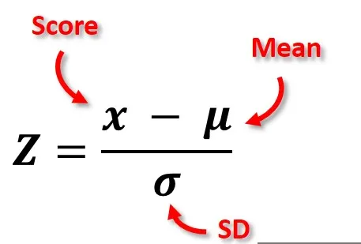
df
18 Purrr
The purrr::map() family of functions are the tidyverse equivalent of apply
The base equivalent to map() is lapply(). The only difference is that lapply() does not support the helpers that you’ll learn about below, so if you’re only using map() from purrr, you can skip the additional dependency and use lapply() directly.
The basic syntax is map(.x = SEQUENCE, .f = FUNCTION, OTHER ARGUMENTS). In a bit more detail:
.x= are the inputs upon which the .f function will be iteratively applied - e.g. a vector of jurisdiction names, columns in a data frame, or a list of data frames.f= is the function to apply to each element of the .x input - it could be a function like print() that already exists, or a custom function that you define. The function is often written after a tilde ~ (details below). A few more notes on syntax:If the function needs no further arguments specified, it can be written with no parentheses and no tilde (e.g.
.f = mean).You can use
.x(or simply.) within the.f = functionas a placeholder for the.xvalue of that iteration

The output of usingmap() is a list - a list is an object class like a vector but whose elements can be of different classes. So, a list produced by map() could contain many data frames, or many vectors, many single values, or even many lists! There are alternative versions of map() explained below that produce other types of outputs (e.g. map_dfr() to produce a data frame, map_chr() to produce character vectors, and map_dbl() to produce numeric vectors).
Basic map() will always return a list, other variants return different data types.Unlike apply, map will ONLY return one type of data, removing the potential for changing data types that occasionally happens when using apply.
18.2 more maps
map() always returns a list, which makes it the most general of the map family because you can put anything in a list. But it is inconvenient to return a list when a simpler data structure would do, so there are four more specific variants: map_lgl(), map_int(), map_dbl(), and map_chr(). Each returns an atomic vector of the specified type:
| Function | Data type returned |
|---|---|
map_lgl() |
returns a logical |
map_int() |
returns an integer vector |
map_dbl() |
returns a double vector |
map_chr() |
returns a character vector |
map_df() |
returns a data frame/tibble |

These specialized map functions are “type-safe” and will fail with incorrect return type.
This is safer than using functions like sapply() which tries to simplify results and could return a list, vector or matrix depending on input.
# map lgl always returns a logical vector
map_lgl(df_list, is.double)
# a b c d e f g h
# TRUE TRUE TRUE TRUE TRUE TRUE TRUE TRUE
# map_dbl always returns a double vector
map_dbl(df_list, mean)
# a b c d e f g h
# -0.38315741 -0.11817071 -0.38794682 -0.76619306 -0.60979706 -0.27886474 0.61659223 -0.04230209
# map_int always returns an integer vector
map_int(df_list, ~.x |> mean() |> round())
# a b c d e f g h
# 0 0 0 -1 -1 0 1 0
# map_int always returns an integer vector - note this comes with a deprecated coercion warning - use as.character()
map_chr(df_list, mean)
# a b c d e f g h
#"-0.383157" "-0.118171" "-0.387947" "-0.766193" "-0.609797" "-0.278865" "0.616592" "-0.042302"
# map_df always returns a dataframe
map_df(df_list, mean)
# a b c d e f g h
# <dbl> <dbl> <dbl> <dbl> <dbl> <dbl> <dbl> <dbl>
# 1 -0.383 -0.118 -0.388 -0.766 -0.610 -0.279 0.617 -0.0423purrr uses the convention that suffixes, like _dbl(), refer to the output. All map_*() functions can take any type of vector as input.
18.3 Anonymous functions
There are multiple ways of structuring a map() call
18.3.1 What's up with ~?
Instead of using map() with an exisiting function, we can use inline anonymous functions as demonstrated with apply()
## a b c d e f
## -0.38315741 -0.11817071 -0.38794682 -0.76619306 -0.60979706 -0.27886474
## g h
## 0.61659223 -0.04230209But this is quite verbose we can use ~ to support a shortcut
## a b c d e f
## -0.38315741 -0.11817071 -0.38794682 -0.76619306 -0.60979706 -0.27886474
## g h
## 0.61659223 -0.04230209It look a little quirky but you to refer to . for argument functions.
Reserve this syntax for short and simple functions. A good rule of thumb is that if your function spans lines or uses {}, it’s time to give it a name.
18.4 map with nested dataframes
Nested data frames in tibbles, a data structure in R, allow you to store complex and structured data within a single column of a tibble. This feature is particularly useful when dealing with hierarchical or nested data, such as lists, data frames, or even other tibbles.
To use the penguins data you need to load it. Either run your cleaning script or run readRDS on the file you made
Nested data frames in tibbles can be particularly useful when working with map functions, like purrr::map()to apply a function to elements within each nested structure.
First we use the nest() function and select how we want to nest our data
| species | data |
|---|---|
| Adelie | 3.0, 3.0, 3.0, 3.0, 3.0, 3.0, 3.0, 3.0, 3.0, 3.0, 3.0, 3.0, 3.0, 3.0, 3.0, 3.0, 3.0, 3.0, 3.0, 3.0, 1.0, 1.0, 1.0, 1.0, 1.0, 1.0, 1.0, 1.0, 1.0, 1.0, 2.0, 2.0, 2.0, 2.0, 2.0, 2.0, 2.0, 2.0, 2.0, 2.0, 2.0, 2.0, 2.0, 2.0, 2.0, 2.0, 2.0, 2.0, 2.0, 2.0, 1.0, 1.0, 1.0, 1.0, 1.0, 1.0, 1.0, 1.0, 1.0, 1.0, 1.0, 1.0, 1.0, 1.0, 1.0, 1.0, 1.0, 1.0, 3.0, 3.0, 3.0, 3.0, 3.0, 3.0, 3.0, 3.0, 3.0, 3.0, 3.0, 3.0, 3.0, 3.0, 3.0, 3.0, 2.0, 2.0, 2.0, 2.0, 2.0, 2.0, 2.0, 2.0, 2.0, 2.0, 2.0, 2.0, 2.0, 2.0, 2.0, 2.0, 1.0, 1.0, 1.0, 1.0, 1.0, 1.0, 1.0, 1.0, 1.0, 1.0, 1.0, 1.0, 1.0, 1.0, 1.0, 1.0, 3.0, 3.0, 3.0, 3.0, 3.0, 3.0, 3.0, 3.0, 3.0, 3.0, 3.0, 3.0, 3.0, 3.0, 3.0, 3.0, 2.0, 2.0, 2.0, 2.0, 2.0, 2.0, 2.0, 2.0, 2.0, 2.0, 2.0, 2.0, 2.0, 2.0, 2.0, 2.0, 2.0, 2.0, 2.0, 2.0, 39.1, 39.5, 40.3, NA, 36.7, 39.3, 38.9, 39.2, 34.1, 42.0, 37.8, 37.8, 41.1, 38.6, 34.6, 36.6, 38.7, 42.5, 34.4, 46.0, 37.8, 37.7, 35.9, 38.2, 38.8, 35.3, 40.6, 40.5, 37.9, 40.5, 39.5, 37.2, 39.5, 40.9, 36.4, 39.2, 38.8, 42.2, 37.6, 39.8, 36.5, 40.8, 36.0, 44.1, 37.0, 39.6, 41.1, 37.5, 36.0, 42.3, 39.6, 40.1, 35.0, 42.0, 34.5, 41.4, 39.0, 40.6, 36.5, 37.6, 35.7, 41.3, 37.6, 41.1, 36.4, 41.6, 35.5, 41.1, 35.9, 41.8, 33.5, 39.7, 39.6, 45.8, 35.5, 42.8, 40.9, 37.2, 36.2, 42.1, 34.6, 42.9, 36.7, 35.1, 37.3, 41.3, 36.3, 36.9, 38.3, 38.9, 35.7, 41.1, 34.0, 39.6, 36.2, 40.8, 38.1, 40.3, 33.1, 43.2, 35.0, 41.0, 37.7, 37.8, 37.9, 39.7, 38.6, 38.2, 38.1, 43.2, 38.1, 45.6, 39.7, 42.2, 39.6, 42.7, 38.6, 37.3, 35.7, 41.1, 36.2, 37.7, 40.2, 41.4, 35.2, 40.6, 38.8, 41.5, 39.0, 44.1, 38.5, 43.1, 36.8, 37.5, 38.1, 41.1, 35.6, 40.2, 37.0, 39.7, 40.2, 40.6, 32.1, 40.7, 37.3, 39.0, 39.2, 36.6, 36.0, 37.8, 36.0, 41.5, 18.7, 17.4, 18.0, NA, 19.3, 20.6, 17.8, 19.6, 18.1, 20.2, 17.1, 17.3, 17.6, 21.2, 21.1, 17.8, 19.0, 20.7, 18.4, 21.5, 18.3, 18.7, 19.2, 18.1, 17.2, 18.9, 18.6, 17.9, 18.6, 18.9, 16.7, 18.1, 17.8, 18.9, 17.0, 21.1, 20.0, 18.5, 19.3, 19.1, 18.0, 18.4, 18.5, 19.7, 16.9, 18.8, 19.0, 18.9, 17.9, 21.2, 17.7, 18.9, 17.9, 19.5, 18.1, 18.6, 17.5, 18.8, 16.6, 19.1, 16.9, 21.1, 17.0, 18.2, 17.1, 18.0, 16.2, 19.1, 16.6, 19.4, 19.0, 18.4, 17.2, 18.9, 17.5, 18.5, 16.8, 19.4, 16.1, 19.1, 17.2, 17.6, 18.8, 19.4, 17.8, 20.3, 19.5, 18.6, 19.2, 18.8, 18.0, 18.1, 17.1, 18.1, 17.3, 18.9, 18.6, 18.5, 16.1, 18.5, 17.9, 20.0, 16.0, 20.0, 18.6, 18.9, 17.2, 20.0, 17.0, 19.0, 16.5, 20.3, 17.7, 19.5, 20.7, 18.3, 17.0, 20.5, 17.0, 18.6, 17.2, 19.8, 17.0, 18.5, 15.9, 19.0, 17.6, 18.3, 17.1, 18.0, 17.9, 19.2, 18.5, 18.5, 17.6, 17.5, 17.5, 20.1, 16.5, 17.9, 17.1, 17.2, 15.5, 17.0, 16.8, 18.7, 18.6, 18.4, 17.8, 18.1, 17.1, 18.5, 181.0, 186.0, 195.0, NA, 193.0, 190.0, 181.0, 195.0, 193.0, 190.0, 186.0, 180.0, 182.0, 191.0, 198.0, 185.0, 195.0, 197.0, 184.0, 194.0, 174.0, 180.0, 189.0, 185.0, 180.0, 187.0, 183.0, 187.0, 172.0, 180.0, 178.0, 178.0, 188.0, 184.0, 195.0, 196.0, 190.0, 180.0, 181.0, 184.0, 182.0, 195.0, 186.0, 196.0, 185.0, 190.0, 182.0, 179.0, 190.0, 191.0, 186.0, 188.0, 190.0, 200.0, 187.0, 191.0, 186.0, 193.0, 181.0, 194.0, 185.0, 195.0, 185.0, 192.0, 184.0, 192.0, 195.0, 188.0, 190.0, 198.0, 190.0, 190.0, 196.0, 197.0, 190.0, 195.0, 191.0, 184.0, 187.0, 195.0, 189.0, 196.0, 187.0, 193.0, 191.0, 194.0, 190.0, 189.0, 189.0, 190.0, 202.0, 205.0, 185.0, 186.0, 187.0, 208.0, 190.0, 196.0, 178.0, 192.0, 192.0, 203.0, 183.0, 190.0, 193.0, 184.0, 199.0, 190.0, 181.0, 197.0, 198.0, 191.0, 193.0, 197.0, 191.0, 196.0, 188.0, 199.0, 189.0, 189.0, 187.0, 198.0, 176.0, 202.0, 186.0, 199.0, 191.0, 195.0, 191.0, 210.0, 190.0, 197.0, 193.0, 199.0, 187.0, 190.0, 191.0, 200.0, 185.0, 193.0, 193.0, 187.0, 188.0, 190.0, 192.0, 185.0, 190.0, 184.0, 195.0, 193.0, 187.0, 201.0, 3750.0, 3800.0, 3250.0, NA, 3450.0, 3650.0, 3625.0, 4675.0, 3475.0, 4250.0, 3300.0, 3700.0, 3200.0, 3800.0, 4400.0, 3700.0, 3450.0, 4500.0, 3325.0, 4200.0, 3400.0, 3600.0, 3800.0, 3950.0, 3800.0, 3800.0, 3550.0, 3200.0, 3150.0, 3950.0, 3250.0, 3900.0, 3300.0, 3900.0, 3325.0, 4150.0, 3950.0, 3550.0, 3300.0, 4650.0, 3150.0, 3900.0, 3100.0, 4400.0, 3000.0, 4600.0, 3425.0, 2975.0, 3450.0, 4150.0, 3500.0, 4300.0, 3450.0, 4050.0, 2900.0, 3700.0, 3550.0, 3800.0, 2850.0, 3750.0, 3150.0, 4400.0, 3600.0, 4050.0, 2850.0, 3950.0, 3350.0, 4100.0, 3050.0, 4450.0, 3600.0, 3900.0, 3550.0, 4150.0, 3700.0, 4250.0, 3700.0, 3900.0, 3550.0, 4000.0, 3200.0, 4700.0, 3800.0, 4200.0, 3350.0, 3550.0, 3800.0, 3500.0, 3950.0, 3600.0, 3550.0, 4300.0, 3400.0, 4450.0, 3300.0, 4300.0, 3700.0, 4350.0, 2900.0, 4100.0, 3725.0, 4725.0, 3075.0, 4250.0, 2925.0, 3550.0, 3750.0, 3900.0, 3175.0, 4775.0, 3825.0, 4600.0, 3200.0, 4275.0, 3900.0, 4075.0, 2900.0, 3775.0, 3350.0, 3325.0, 3150.0, 3500.0, 3450.0, 3875.0, 3050.0, 4000.0, 3275.0, 4300.0, 3050.0, 4000.0, 3325.0, 3500.0, 3500.0, 4475.0, 3425.0, 3900.0, 3175.0, 3975.0, 3400.0, 4250.0, 3400.0, 3475.0, 3050.0, 3725.0, 3000.0, 3650.0, 4250.0, 3475.0, 3450.0, 3750.0, 3700.0, 4000.0, 2.0, 1.0, 1.0, NA, 1.0, 2.0, 1.0, 2.0, NA, NA, NA, NA, 1.0, 2.0, 2.0, 1.0, 1.0, 2.0, 1.0, 2.0, 1.0, 2.0, 1.0, 2.0, 2.0, 1.0, 2.0, 1.0, 1.0, 2.0, 1.0, 2.0, 1.0, 2.0, 1.0, 2.0, 2.0, 1.0, 1.0, 2.0, 1.0, 2.0, 1.0, 2.0, 1.0, 2.0, 2.0, NA, 1.0, 2.0, 1.0, 2.0, 1.0, 2.0, 1.0, 2.0, 1.0, 2.0, 1.0, 2.0, 1.0, 2.0, 1.0, 2.0, 1.0, 2.0, 1.0, 2.0, 1.0, 2.0, 1.0, 2.0, 1.0, 2.0, 1.0, 2.0, 1.0, 2.0, 1.0, 2.0, 1.0, 2.0, 1.0, 2.0, 1.0, 2.0, 2.0, 1.0, 2.0, 1.0, 1.0, 2.0, 1.0, 2.0, 1.0, 2.0, 1.0, 2.0, 1.0, 2.0, 1.0, 2.0, 1.0, 2.0, 1.0, 2.0, 1.0, 2.0, 1.0, 2.0, 1.0, 2.0, 1.0, 2.0, 1.0, 2.0, 1.0, 2.0, 1.0, 2.0, 1.0, 2.0, 1.0, 2.0, 1.0, 2.0, 1.0, 2.0, 1.0, 2.0, 1.0, 2.0, 1.0, 2.0, 1.0, 2.0, 1.0, 2.0, 1.0, 2.0, 1.0, 2.0, 1.0, 2.0, 1.0, 2.0, 2.0, 1.0, 1.0, 2.0, 1.0, 2.0, 2007.0, 2007.0, 2007.0, 2007.0, 2007.0, 2007.0, 2007.0, 2007.0, 2007.0, 2007.0, 2007.0, 2007.0, 2007.0, 2007.0, 2007.0, 2007.0, 2007.0, 2007.0, 2007.0, 2007.0, 2007.0, 2007.0, 2007.0, 2007.0, 2007.0, 2007.0, 2007.0, 2007.0, 2007.0, 2007.0, 2007.0, 2007.0, 2007.0, 2007.0, 2007.0, 2007.0, 2007.0, 2007.0, 2007.0, 2007.0, 2007.0, 2007.0, 2007.0, 2007.0, 2007.0, 2007.0, 2007.0, 2007.0, 2007.0, 2007.0, 2008.0, 2008.0, 2008.0, 2008.0, 2008.0, 2008.0, 2008.0, 2008.0, 2008.0, 2008.0, 2008.0, 2008.0, 2008.0, 2008.0, 2008.0, 2008.0, 2008.0, 2008.0, 2008.0, 2008.0, 2008.0, 2008.0, 2008.0, 2008.0, 2008.0, 2008.0, 2008.0, 2008.0, 2008.0, 2008.0, 2008.0, 2008.0, 2008.0, 2008.0, 2008.0, 2008.0, 2008.0, 2008.0, 2008.0, 2008.0, 2008.0, 2008.0, 2008.0, 2008.0, 2008.0, 2008.0, 2008.0, 2008.0, 2008.0, 2008.0, 2009.0, 2009.0, 2009.0, 2009.0, 2009.0, 2009.0, 2009.0, 2009.0, 2009.0, 2009.0, 2009.0, 2009.0, 2009.0, 2009.0, 2009.0, 2009.0, 2009.0, 2009.0, 2009.0, 2009.0, 2009.0, 2009.0, 2009.0, 2009.0, 2009.0, 2009.0, 2009.0, 2009.0, 2009.0, 2009.0, 2009.0, 2009.0, 2009.0, 2009.0, 2009.0, 2009.0, 2009.0, 2009.0, 2009.0, 2009.0, 2009.0, 2009.0, 2009.0, 2009.0, 2009.0, 2009.0, 2009.0, 2009.0, 2009.0, 2009.0, 2009.0, 2009.0 |
| Gentoo | 1.0, 1.0, 1.0, 1.0, 1.0, 1.0, 1.0, 1.0, 1.0, 1.0, 1.0, 1.0, 1.0, 1.0, 1.0, 1.0, 1.0, 1.0, 1.0, 1.0, 1.0, 1.0, 1.0, 1.0, 1.0, 1.0, 1.0, 1.0, 1.0, 1.0, 1.0, 1.0, 1.0, 1.0, 1.0, 1.0, 1.0, 1.0, 1.0, 1.0, 1.0, 1.0, 1.0, 1.0, 1.0, 1.0, 1.0, 1.0, 1.0, 1.0, 1.0, 1.0, 1.0, 1.0, 1.0, 1.0, 1.0, 1.0, 1.0, 1.0, 1.0, 1.0, 1.0, 1.0, 1.0, 1.0, 1.0, 1.0, 1.0, 1.0, 1.0, 1.0, 1.0, 1.0, 1.0, 1.0, 1.0, 1.0, 1.0, 1.0, 1.0, 1.0, 1.0, 1.0, 1.0, 1.0, 1.0, 1.0, 1.0, 1.0, 1.0, 1.0, 1.0, 1.0, 1.0, 1.0, 1.0, 1.0, 1.0, 1.0, 1.0, 1.0, 1.0, 1.0, 1.0, 1.0, 1.0, 1.0, 1.0, 1.0, 1.0, 1.0, 1.0, 1.0, 1.0, 1.0, 1.0, 1.0, 1.0, 1.0, 1.0, 1.0, 1.0, 1.0, 46.1, 50.0, 48.7, 50.0, 47.6, 46.5, 45.4, 46.7, 43.3, 46.8, 40.9, 49.0, 45.5, 48.4, 45.8, 49.3, 42.0, 49.2, 46.2, 48.7, 50.2, 45.1, 46.5, 46.3, 42.9, 46.1, 44.5, 47.8, 48.2, 50.0, 47.3, 42.8, 45.1, 59.6, 49.1, 48.4, 42.6, 44.4, 44.0, 48.7, 42.7, 49.6, 45.3, 49.6, 50.5, 43.6, 45.5, 50.5, 44.9, 45.2, 46.6, 48.5, 45.1, 50.1, 46.5, 45.0, 43.8, 45.5, 43.2, 50.4, 45.3, 46.2, 45.7, 54.3, 45.8, 49.8, 46.2, 49.5, 43.5, 50.7, 47.7, 46.4, 48.2, 46.5, 46.4, 48.6, 47.5, 51.1, 45.2, 45.2, 49.1, 52.5, 47.4, 50.0, 44.9, 50.8, 43.4, 51.3, 47.5, 52.1, 47.5, 52.2, 45.5, 49.5, 44.5, 50.8, 49.4, 46.9, 48.4, 51.1, 48.5, 55.9, 47.2, 49.1, 47.3, 46.8, 41.7, 53.4, 43.3, 48.1, 50.5, 49.8, 43.5, 51.5, 46.2, 55.1, 44.5, 48.8, 47.2, NA, 46.8, 50.4, 45.2, 49.9, 13.2, 16.3, 14.1, 15.2, 14.5, 13.5, 14.6, 15.3, 13.4, 15.4, 13.7, 16.1, 13.7, 14.6, 14.6, 15.7, 13.5, 15.2, 14.5, 15.1, 14.3, 14.5, 14.5, 15.8, 13.1, 15.1, 14.3, 15.0, 14.3, 15.3, 15.3, 14.2, 14.5, 17.0, 14.8, 16.3, 13.7, 17.3, 13.6, 15.7, 13.7, 16.0, 13.7, 15.0, 15.9, 13.9, 13.9, 15.9, 13.3, 15.8, 14.2, 14.1, 14.4, 15.0, 14.4, 15.4, 13.9, 15.0, 14.5, 15.3, 13.8, 14.9, 13.9, 15.7, 14.2, 16.8, 14.4, 16.2, 14.2, 15.0, 15.0, 15.6, 15.6, 14.8, 15.0, 16.0, 14.2, 16.3, 13.8, 16.4, 14.5, 15.6, 14.6, 15.9, 13.8, 17.3, 14.4, 14.2, 14.0, 17.0, 15.0, 17.1, 14.5, 16.1, 14.7, 15.7, 15.8, 14.6, 14.4, 16.5, 15.0, 17.0, 15.5, 15.0, 13.8, 16.1, 14.7, 15.8, 14.0, 15.1, 15.2, 15.9, 15.2, 16.3, 14.1, 16.0, 15.7, 16.2, 13.7, NA, 14.3, 15.7, 14.8, 16.1, 211.0, 230.0, 210.0, 218.0, 215.0, 210.0, 211.0, 219.0, 209.0, 215.0, 214.0, 216.0, 214.0, 213.0, 210.0, 217.0, 210.0, 221.0, 209.0, 222.0, 218.0, 215.0, 213.0, 215.0, 215.0, 215.0, 216.0, 215.0, 210.0, 220.0, 222.0, 209.0, 207.0, 230.0, 220.0, 220.0, 213.0, 219.0, 208.0, 208.0, 208.0, 225.0, 210.0, 216.0, 222.0, 217.0, 210.0, 225.0, 213.0, 215.0, 210.0, 220.0, 210.0, 225.0, 217.0, 220.0, 208.0, 220.0, 208.0, 224.0, 208.0, 221.0, 214.0, 231.0, 219.0, 230.0, 214.0, 229.0, 220.0, 223.0, 216.0, 221.0, 221.0, 217.0, 216.0, 230.0, 209.0, 220.0, 215.0, 223.0, 212.0, 221.0, 212.0, 224.0, 212.0, 228.0, 218.0, 218.0, 212.0, 230.0, 218.0, 228.0, 212.0, 224.0, 214.0, 226.0, 216.0, 222.0, 203.0, 225.0, 219.0, 228.0, 215.0, 228.0, 216.0, 215.0, 210.0, 219.0, 208.0, 209.0, 216.0, 229.0, 213.0, 230.0, 217.0, 230.0, 217.0, 222.0, 214.0, NA, 215.0, 222.0, 212.0, 213.0, 4500.0, 5700.0, 4450.0, 5700.0, 5400.0, 4550.0, 4800.0, 5200.0, 4400.0, 5150.0, 4650.0, 5550.0, 4650.0, 5850.0, 4200.0, 5850.0, 4150.0, 6300.0, 4800.0, 5350.0, 5700.0, 5000.0, 4400.0, 5050.0, 5000.0, 5100.0, 4100.0, 5650.0, 4600.0, 5550.0, 5250.0, 4700.0, 5050.0, 6050.0, 5150.0, 5400.0, 4950.0, 5250.0, 4350.0, 5350.0, 3950.0, 5700.0, 4300.0, 4750.0, 5550.0, 4900.0, 4200.0, 5400.0, 5100.0, 5300.0, 4850.0, 5300.0, 4400.0, 5000.0, 4900.0, 5050.0, 4300.0, 5000.0, 4450.0, 5550.0, 4200.0, 5300.0, 4400.0, 5650.0, 4700.0, 5700.0, 4650.0, 5800.0, 4700.0, 5550.0, 4750.0, 5000.0, 5100.0, 5200.0, 4700.0, 5800.0, 4600.0, 6000.0, 4750.0, 5950.0, 4625.0, 5450.0, 4725.0, 5350.0, 4750.0, 5600.0, 4600.0, 5300.0, 4875.0, 5550.0, 4950.0, 5400.0, 4750.0, 5650.0, 4850.0, 5200.0, 4925.0, 4875.0, 4625.0, 5250.0, 4850.0, 5600.0, 4975.0, 5500.0, 4725.0, 5500.0, 4700.0, 5500.0, 4575.0, 5500.0, 5000.0, 5950.0, 4650.0, 5500.0, 4375.0, 5850.0, 4875.0, 6000.0, 4925.0, NA, 4850.0, 5750.0, 5200.0, 5400.0, 1.0, 2.0, 1.0, 2.0, 2.0, 1.0, 1.0, 2.0, 1.0, 2.0, 1.0, 2.0, 1.0, 2.0, 1.0, 2.0, 1.0, 2.0, 1.0, 2.0, 2.0, 1.0, 1.0, 2.0, 1.0, 2.0, NA, 2.0, 1.0, 2.0, 2.0, 1.0, 1.0, 2.0, 1.0, 2.0, 1.0, 2.0, 1.0, 2.0, 1.0, 2.0, 1.0, 2.0, 2.0, 1.0, 1.0, 2.0, 1.0, 2.0, 1.0, 2.0, 1.0, 2.0, 1.0, 2.0, 1.0, 2.0, 1.0, 2.0, 1.0, 2.0, 1.0, 2.0, 1.0, 2.0, NA, 2.0, 1.0, 2.0, 1.0, 2.0, 2.0, 1.0, 1.0, 2.0, 1.0, 2.0, 1.0, 2.0, 1.0, 2.0, 1.0, 2.0, 1.0, 2.0, 1.0, 2.0, 1.0, 2.0, 1.0, 2.0, 1.0, 2.0, 1.0, 2.0, 2.0, 1.0, 1.0, 2.0, 1.0, 2.0, 1.0, 2.0, NA, 2.0, 1.0, 2.0, 1.0, 2.0, 1.0, 2.0, 1.0, 2.0, 1.0, 2.0, NA, 2.0, 1.0, NA, 1.0, 2.0, 1.0, 2.0, 2007.0, 2007.0, 2007.0, 2007.0, 2007.0, 2007.0, 2007.0, 2007.0, 2007.0, 2007.0, 2007.0, 2007.0, 2007.0, 2007.0, 2007.0, 2007.0, 2007.0, 2007.0, 2007.0, 2007.0, 2007.0, 2007.0, 2007.0, 2007.0, 2007.0, 2007.0, 2007.0, 2007.0, 2007.0, 2007.0, 2007.0, 2007.0, 2007.0, 2007.0, 2008.0, 2008.0, 2008.0, 2008.0, 2008.0, 2008.0, 2008.0, 2008.0, 2008.0, 2008.0, 2008.0, 2008.0, 2008.0, 2008.0, 2008.0, 2008.0, 2008.0, 2008.0, 2008.0, 2008.0, 2008.0, 2008.0, 2008.0, 2008.0, 2008.0, 2008.0, 2008.0, 2008.0, 2008.0, 2008.0, 2008.0, 2008.0, 2008.0, 2008.0, 2008.0, 2008.0, 2008.0, 2008.0, 2008.0, 2008.0, 2008.0, 2008.0, 2008.0, 2008.0, 2008.0, 2008.0, 2009.0, 2009.0, 2009.0, 2009.0, 2009.0, 2009.0, 2009.0, 2009.0, 2009.0, 2009.0, 2009.0, 2009.0, 2009.0, 2009.0, 2009.0, 2009.0, 2009.0, 2009.0, 2009.0, 2009.0, 2009.0, 2009.0, 2009.0, 2009.0, 2009.0, 2009.0, 2009.0, 2009.0, 2009.0, 2009.0, 2009.0, 2009.0, 2009.0, 2009.0, 2009.0, 2009.0, 2009.0, 2009.0, 2009.0, 2009.0, 2009.0, 2009.0, 2009.0, 2009.0 |
| Chinstrap | 2.0, 2.0, 2.0, 2.0, 2.0, 2.0, 2.0, 2.0, 2.0, 2.0, 2.0, 2.0, 2.0, 2.0, 2.0, 2.0, 2.0, 2.0, 2.0, 2.0, 2.0, 2.0, 2.0, 2.0, 2.0, 2.0, 2.0, 2.0, 2.0, 2.0, 2.0, 2.0, 2.0, 2.0, 2.0, 2.0, 2.0, 2.0, 2.0, 2.0, 2.0, 2.0, 2.0, 2.0, 2.0, 2.0, 2.0, 2.0, 2.0, 2.0, 2.0, 2.0, 2.0, 2.0, 2.0, 2.0, 2.0, 2.0, 2.0, 2.0, 2.0, 2.0, 2.0, 2.0, 2.0, 2.0, 2.0, 2.0, 46.5, 50.0, 51.3, 45.4, 52.7, 45.2, 46.1, 51.3, 46.0, 51.3, 46.6, 51.7, 47.0, 52.0, 45.9, 50.5, 50.3, 58.0, 46.4, 49.2, 42.4, 48.5, 43.2, 50.6, 46.7, 52.0, 50.5, 49.5, 46.4, 52.8, 40.9, 54.2, 42.5, 51.0, 49.7, 47.5, 47.6, 52.0, 46.9, 53.5, 49.0, 46.2, 50.9, 45.5, 50.9, 50.8, 50.1, 49.0, 51.5, 49.8, 48.1, 51.4, 45.7, 50.7, 42.5, 52.2, 45.2, 49.3, 50.2, 45.6, 51.9, 46.8, 45.7, 55.8, 43.5, 49.6, 50.8, 50.2, 17.9, 19.5, 19.2, 18.7, 19.8, 17.8, 18.2, 18.2, 18.9, 19.9, 17.8, 20.3, 17.3, 18.1, 17.1, 19.6, 20.0, 17.8, 18.6, 18.2, 17.3, 17.5, 16.6, 19.4, 17.9, 19.0, 18.4, 19.0, 17.8, 20.0, 16.6, 20.8, 16.7, 18.8, 18.6, 16.8, 18.3, 20.7, 16.6, 19.9, 19.5, 17.5, 19.1, 17.0, 17.9, 18.5, 17.9, 19.6, 18.7, 17.3, 16.4, 19.0, 17.3, 19.7, 17.3, 18.8, 16.6, 19.9, 18.8, 19.4, 19.5, 16.5, 17.0, 19.8, 18.1, 18.2, 19.0, 18.7, 192.0, 196.0, 193.0, 188.0, 197.0, 198.0, 178.0, 197.0, 195.0, 198.0, 193.0, 194.0, 185.0, 201.0, 190.0, 201.0, 197.0, 181.0, 190.0, 195.0, 181.0, 191.0, 187.0, 193.0, 195.0, 197.0, 200.0, 200.0, 191.0, 205.0, 187.0, 201.0, 187.0, 203.0, 195.0, 199.0, 195.0, 210.0, 192.0, 205.0, 210.0, 187.0, 196.0, 196.0, 196.0, 201.0, 190.0, 212.0, 187.0, 198.0, 199.0, 201.0, 193.0, 203.0, 187.0, 197.0, 191.0, 203.0, 202.0, 194.0, 206.0, 189.0, 195.0, 207.0, 202.0, 193.0, 210.0, 198.0, 3500.0, 3900.0, 3650.0, 3525.0, 3725.0, 3950.0, 3250.0, 3750.0, 4150.0, 3700.0, 3800.0, 3775.0, 3700.0, 4050.0, 3575.0, 4050.0, 3300.0, 3700.0, 3450.0, 4400.0, 3600.0, 3400.0, 2900.0, 3800.0, 3300.0, 4150.0, 3400.0, 3800.0, 3700.0, 4550.0, 3200.0, 4300.0, 3350.0, 4100.0, 3600.0, 3900.0, 3850.0, 4800.0, 2700.0, 4500.0, 3950.0, 3650.0, 3550.0, 3500.0, 3675.0, 4450.0, 3400.0, 4300.0, 3250.0, 3675.0, 3325.0, 3950.0, 3600.0, 4050.0, 3350.0, 3450.0, 3250.0, 4050.0, 3800.0, 3525.0, 3950.0, 3650.0, 3650.0, 4000.0, 3400.0, 3775.0, 4100.0, 3775.0, 1.0, 2.0, 2.0, 1.0, 2.0, 1.0, 1.0, 2.0, 1.0, 2.0, 1.0, 2.0, 1.0, 2.0, 1.0, 2.0, 2.0, 1.0, 1.0, 2.0, 1.0, 2.0, 1.0, 2.0, 1.0, 2.0, 1.0, 2.0, 1.0, 2.0, 1.0, 2.0, 1.0, 2.0, 2.0, 1.0, 1.0, 2.0, 1.0, 2.0, 2.0, 1.0, 2.0, 1.0, 1.0, 2.0, 1.0, 2.0, 2.0, 1.0, 1.0, 2.0, 1.0, 2.0, 1.0, 2.0, 1.0, 2.0, 2.0, 1.0, 2.0, 1.0, 1.0, 2.0, 1.0, 2.0, 2.0, 1.0, 2007.0, 2007.0, 2007.0, 2007.0, 2007.0, 2007.0, 2007.0, 2007.0, 2007.0, 2007.0, 2007.0, 2007.0, 2007.0, 2007.0, 2007.0, 2007.0, 2007.0, 2007.0, 2007.0, 2007.0, 2007.0, 2007.0, 2007.0, 2007.0, 2007.0, 2007.0, 2008.0, 2008.0, 2008.0, 2008.0, 2008.0, 2008.0, 2008.0, 2008.0, 2008.0, 2008.0, 2008.0, 2008.0, 2008.0, 2008.0, 2008.0, 2008.0, 2008.0, 2008.0, 2009.0, 2009.0, 2009.0, 2009.0, 2009.0, 2009.0, 2009.0, 2009.0, 2009.0, 2009.0, 2009.0, 2009.0, 2009.0, 2009.0, 2009.0, 2009.0, 2009.0, 2009.0, 2009.0, 2009.0, 2009.0, 2009.0, 2009.0, 2009.0 |
We can run iterative functions on these lists - such as generating new dataframes and adding them to new columns. Here we wish to keep only those penguins who are larger than the average for their species body weight.
Note at this stage we are replicating iteration that can be achieved by using
group_by()actions.
nested_heavy_penguins <- penguins |>
nest(data = -species) |>
mutate(new_data = map(data, ~ .x
|> filter(body_mass_g > mean(body_mass_g, na.rm = T)))
)
nested_heavy_penguins| species | data | new_data |
|---|---|---|
| Adelie | 3.0, 3.0, 3.0, 3.0, 3.0, 3.0, 3.0, 3.0, 3.0, 3.0, 3.0, 3.0, 3.0, 3.0, 3.0, 3.0, 3.0, 3.0, 3.0, 3.0, 1.0, 1.0, 1.0, 1.0, 1.0, 1.0, 1.0, 1.0, 1.0, 1.0, 2.0, 2.0, 2.0, 2.0, 2.0, 2.0, 2.0, 2.0, 2.0, 2.0, 2.0, 2.0, 2.0, 2.0, 2.0, 2.0, 2.0, 2.0, 2.0, 2.0, 1.0, 1.0, 1.0, 1.0, 1.0, 1.0, 1.0, 1.0, 1.0, 1.0, 1.0, 1.0, 1.0, 1.0, 1.0, 1.0, 1.0, 1.0, 3.0, 3.0, 3.0, 3.0, 3.0, 3.0, 3.0, 3.0, 3.0, 3.0, 3.0, 3.0, 3.0, 3.0, 3.0, 3.0, 2.0, 2.0, 2.0, 2.0, 2.0, 2.0, 2.0, 2.0, 2.0, 2.0, 2.0, 2.0, 2.0, 2.0, 2.0, 2.0, 1.0, 1.0, 1.0, 1.0, 1.0, 1.0, 1.0, 1.0, 1.0, 1.0, 1.0, 1.0, 1.0, 1.0, 1.0, 1.0, 3.0, 3.0, 3.0, 3.0, 3.0, 3.0, 3.0, 3.0, 3.0, 3.0, 3.0, 3.0, 3.0, 3.0, 3.0, 3.0, 2.0, 2.0, 2.0, 2.0, 2.0, 2.0, 2.0, 2.0, 2.0, 2.0, 2.0, 2.0, 2.0, 2.0, 2.0, 2.0, 2.0, 2.0, 2.0, 2.0, 39.1, 39.5, 40.3, NA, 36.7, 39.3, 38.9, 39.2, 34.1, 42.0, 37.8, 37.8, 41.1, 38.6, 34.6, 36.6, 38.7, 42.5, 34.4, 46.0, 37.8, 37.7, 35.9, 38.2, 38.8, 35.3, 40.6, 40.5, 37.9, 40.5, 39.5, 37.2, 39.5, 40.9, 36.4, 39.2, 38.8, 42.2, 37.6, 39.8, 36.5, 40.8, 36.0, 44.1, 37.0, 39.6, 41.1, 37.5, 36.0, 42.3, 39.6, 40.1, 35.0, 42.0, 34.5, 41.4, 39.0, 40.6, 36.5, 37.6, 35.7, 41.3, 37.6, 41.1, 36.4, 41.6, 35.5, 41.1, 35.9, 41.8, 33.5, 39.7, 39.6, 45.8, 35.5, 42.8, 40.9, 37.2, 36.2, 42.1, 34.6, 42.9, 36.7, 35.1, 37.3, 41.3, 36.3, 36.9, 38.3, 38.9, 35.7, 41.1, 34.0, 39.6, 36.2, 40.8, 38.1, 40.3, 33.1, 43.2, 35.0, 41.0, 37.7, 37.8, 37.9, 39.7, 38.6, 38.2, 38.1, 43.2, 38.1, 45.6, 39.7, 42.2, 39.6, 42.7, 38.6, 37.3, 35.7, 41.1, 36.2, 37.7, 40.2, 41.4, 35.2, 40.6, 38.8, 41.5, 39.0, 44.1, 38.5, 43.1, 36.8, 37.5, 38.1, 41.1, 35.6, 40.2, 37.0, 39.7, 40.2, 40.6, 32.1, 40.7, 37.3, 39.0, 39.2, 36.6, 36.0, 37.8, 36.0, 41.5, 18.7, 17.4, 18.0, NA, 19.3, 20.6, 17.8, 19.6, 18.1, 20.2, 17.1, 17.3, 17.6, 21.2, 21.1, 17.8, 19.0, 20.7, 18.4, 21.5, 18.3, 18.7, 19.2, 18.1, 17.2, 18.9, 18.6, 17.9, 18.6, 18.9, 16.7, 18.1, 17.8, 18.9, 17.0, 21.1, 20.0, 18.5, 19.3, 19.1, 18.0, 18.4, 18.5, 19.7, 16.9, 18.8, 19.0, 18.9, 17.9, 21.2, 17.7, 18.9, 17.9, 19.5, 18.1, 18.6, 17.5, 18.8, 16.6, 19.1, 16.9, 21.1, 17.0, 18.2, 17.1, 18.0, 16.2, 19.1, 16.6, 19.4, 19.0, 18.4, 17.2, 18.9, 17.5, 18.5, 16.8, 19.4, 16.1, 19.1, 17.2, 17.6, 18.8, 19.4, 17.8, 20.3, 19.5, 18.6, 19.2, 18.8, 18.0, 18.1, 17.1, 18.1, 17.3, 18.9, 18.6, 18.5, 16.1, 18.5, 17.9, 20.0, 16.0, 20.0, 18.6, 18.9, 17.2, 20.0, 17.0, 19.0, 16.5, 20.3, 17.7, 19.5, 20.7, 18.3, 17.0, 20.5, 17.0, 18.6, 17.2, 19.8, 17.0, 18.5, 15.9, 19.0, 17.6, 18.3, 17.1, 18.0, 17.9, 19.2, 18.5, 18.5, 17.6, 17.5, 17.5, 20.1, 16.5, 17.9, 17.1, 17.2, 15.5, 17.0, 16.8, 18.7, 18.6, 18.4, 17.8, 18.1, 17.1, 18.5, 181.0, 186.0, 195.0, NA, 193.0, 190.0, 181.0, 195.0, 193.0, 190.0, 186.0, 180.0, 182.0, 191.0, 198.0, 185.0, 195.0, 197.0, 184.0, 194.0, 174.0, 180.0, 189.0, 185.0, 180.0, 187.0, 183.0, 187.0, 172.0, 180.0, 178.0, 178.0, 188.0, 184.0, 195.0, 196.0, 190.0, 180.0, 181.0, 184.0, 182.0, 195.0, 186.0, 196.0, 185.0, 190.0, 182.0, 179.0, 190.0, 191.0, 186.0, 188.0, 190.0, 200.0, 187.0, 191.0, 186.0, 193.0, 181.0, 194.0, 185.0, 195.0, 185.0, 192.0, 184.0, 192.0, 195.0, 188.0, 190.0, 198.0, 190.0, 190.0, 196.0, 197.0, 190.0, 195.0, 191.0, 184.0, 187.0, 195.0, 189.0, 196.0, 187.0, 193.0, 191.0, 194.0, 190.0, 189.0, 189.0, 190.0, 202.0, 205.0, 185.0, 186.0, 187.0, 208.0, 190.0, 196.0, 178.0, 192.0, 192.0, 203.0, 183.0, 190.0, 193.0, 184.0, 199.0, 190.0, 181.0, 197.0, 198.0, 191.0, 193.0, 197.0, 191.0, 196.0, 188.0, 199.0, 189.0, 189.0, 187.0, 198.0, 176.0, 202.0, 186.0, 199.0, 191.0, 195.0, 191.0, 210.0, 190.0, 197.0, 193.0, 199.0, 187.0, 190.0, 191.0, 200.0, 185.0, 193.0, 193.0, 187.0, 188.0, 190.0, 192.0, 185.0, 190.0, 184.0, 195.0, 193.0, 187.0, 201.0, 3750.0, 3800.0, 3250.0, NA, 3450.0, 3650.0, 3625.0, 4675.0, 3475.0, 4250.0, 3300.0, 3700.0, 3200.0, 3800.0, 4400.0, 3700.0, 3450.0, 4500.0, 3325.0, 4200.0, 3400.0, 3600.0, 3800.0, 3950.0, 3800.0, 3800.0, 3550.0, 3200.0, 3150.0, 3950.0, 3250.0, 3900.0, 3300.0, 3900.0, 3325.0, 4150.0, 3950.0, 3550.0, 3300.0, 4650.0, 3150.0, 3900.0, 3100.0, 4400.0, 3000.0, 4600.0, 3425.0, 2975.0, 3450.0, 4150.0, 3500.0, 4300.0, 3450.0, 4050.0, 2900.0, 3700.0, 3550.0, 3800.0, 2850.0, 3750.0, 3150.0, 4400.0, 3600.0, 4050.0, 2850.0, 3950.0, 3350.0, 4100.0, 3050.0, 4450.0, 3600.0, 3900.0, 3550.0, 4150.0, 3700.0, 4250.0, 3700.0, 3900.0, 3550.0, 4000.0, 3200.0, 4700.0, 3800.0, 4200.0, 3350.0, 3550.0, 3800.0, 3500.0, 3950.0, 3600.0, 3550.0, 4300.0, 3400.0, 4450.0, 3300.0, 4300.0, 3700.0, 4350.0, 2900.0, 4100.0, 3725.0, 4725.0, 3075.0, 4250.0, 2925.0, 3550.0, 3750.0, 3900.0, 3175.0, 4775.0, 3825.0, 4600.0, 3200.0, 4275.0, 3900.0, 4075.0, 2900.0, 3775.0, 3350.0, 3325.0, 3150.0, 3500.0, 3450.0, 3875.0, 3050.0, 4000.0, 3275.0, 4300.0, 3050.0, 4000.0, 3325.0, 3500.0, 3500.0, 4475.0, 3425.0, 3900.0, 3175.0, 3975.0, 3400.0, 4250.0, 3400.0, 3475.0, 3050.0, 3725.0, 3000.0, 3650.0, 4250.0, 3475.0, 3450.0, 3750.0, 3700.0, 4000.0, 2.0, 1.0, 1.0, NA, 1.0, 2.0, 1.0, 2.0, NA, NA, NA, NA, 1.0, 2.0, 2.0, 1.0, 1.0, 2.0, 1.0, 2.0, 1.0, 2.0, 1.0, 2.0, 2.0, 1.0, 2.0, 1.0, 1.0, 2.0, 1.0, 2.0, 1.0, 2.0, 1.0, 2.0, 2.0, 1.0, 1.0, 2.0, 1.0, 2.0, 1.0, 2.0, 1.0, 2.0, 2.0, NA, 1.0, 2.0, 1.0, 2.0, 1.0, 2.0, 1.0, 2.0, 1.0, 2.0, 1.0, 2.0, 1.0, 2.0, 1.0, 2.0, 1.0, 2.0, 1.0, 2.0, 1.0, 2.0, 1.0, 2.0, 1.0, 2.0, 1.0, 2.0, 1.0, 2.0, 1.0, 2.0, 1.0, 2.0, 1.0, 2.0, 1.0, 2.0, 2.0, 1.0, 2.0, 1.0, 1.0, 2.0, 1.0, 2.0, 1.0, 2.0, 1.0, 2.0, 1.0, 2.0, 1.0, 2.0, 1.0, 2.0, 1.0, 2.0, 1.0, 2.0, 1.0, 2.0, 1.0, 2.0, 1.0, 2.0, 1.0, 2.0, 1.0, 2.0, 1.0, 2.0, 1.0, 2.0, 1.0, 2.0, 1.0, 2.0, 1.0, 2.0, 1.0, 2.0, 1.0, 2.0, 1.0, 2.0, 1.0, 2.0, 1.0, 2.0, 1.0, 2.0, 1.0, 2.0, 1.0, 2.0, 1.0, 2.0, 2.0, 1.0, 1.0, 2.0, 1.0, 2.0, 2007.0, 2007.0, 2007.0, 2007.0, 2007.0, 2007.0, 2007.0, 2007.0, 2007.0, 2007.0, 2007.0, 2007.0, 2007.0, 2007.0, 2007.0, 2007.0, 2007.0, 2007.0, 2007.0, 2007.0, 2007.0, 2007.0, 2007.0, 2007.0, 2007.0, 2007.0, 2007.0, 2007.0, 2007.0, 2007.0, 2007.0, 2007.0, 2007.0, 2007.0, 2007.0, 2007.0, 2007.0, 2007.0, 2007.0, 2007.0, 2007.0, 2007.0, 2007.0, 2007.0, 2007.0, 2007.0, 2007.0, 2007.0, 2007.0, 2007.0, 2008.0, 2008.0, 2008.0, 2008.0, 2008.0, 2008.0, 2008.0, 2008.0, 2008.0, 2008.0, 2008.0, 2008.0, 2008.0, 2008.0, 2008.0, 2008.0, 2008.0, 2008.0, 2008.0, 2008.0, 2008.0, 2008.0, 2008.0, 2008.0, 2008.0, 2008.0, 2008.0, 2008.0, 2008.0, 2008.0, 2008.0, 2008.0, 2008.0, 2008.0, 2008.0, 2008.0, 2008.0, 2008.0, 2008.0, 2008.0, 2008.0, 2008.0, 2008.0, 2008.0, 2008.0, 2008.0, 2008.0, 2008.0, 2008.0, 2008.0, 2009.0, 2009.0, 2009.0, 2009.0, 2009.0, 2009.0, 2009.0, 2009.0, 2009.0, 2009.0, 2009.0, 2009.0, 2009.0, 2009.0, 2009.0, 2009.0, 2009.0, 2009.0, 2009.0, 2009.0, 2009.0, 2009.0, 2009.0, 2009.0, 2009.0, 2009.0, 2009.0, 2009.0, 2009.0, 2009.0, 2009.0, 2009.0, 2009.0, 2009.0, 2009.0, 2009.0, 2009.0, 2009.0, 2009.0, 2009.0, 2009.0, 2009.0, 2009.0, 2009.0, 2009.0, 2009.0, 2009.0, 2009.0, 2009.0, 2009.0, 2009.0, 2009.0 | 3.0, 3.0, 3.0, 3.0, 3.0, 3.0, 3.0, 3.0, 1.0, 1.0, 1.0, 1.0, 1.0, 2.0, 2.0, 2.0, 2.0, 2.0, 2.0, 2.0, 2.0, 2.0, 1.0, 1.0, 1.0, 1.0, 1.0, 1.0, 1.0, 1.0, 3.0, 3.0, 3.0, 3.0, 3.0, 3.0, 3.0, 3.0, 3.0, 2.0, 2.0, 2.0, 2.0, 2.0, 2.0, 2.0, 1.0, 1.0, 1.0, 1.0, 1.0, 1.0, 1.0, 1.0, 1.0, 1.0, 1.0, 3.0, 3.0, 3.0, 3.0, 3.0, 2.0, 2.0, 2.0, 2.0, 2.0, 2.0, 2.0, 2.0, 39.1, 39.5, 39.2, 42.0, 38.6, 34.6, 42.5, 46.0, 35.9, 38.2, 38.8, 35.3, 40.5, 37.2, 40.9, 39.2, 38.8, 39.8, 40.8, 44.1, 39.6, 42.3, 40.1, 42.0, 40.6, 37.6, 41.3, 41.1, 41.6, 41.1, 41.8, 39.7, 45.8, 42.8, 37.2, 42.1, 42.9, 36.7, 35.1, 36.3, 38.3, 41.1, 39.6, 40.8, 40.3, 43.2, 35.0, 41.0, 37.8, 38.6, 38.2, 43.2, 38.1, 45.6, 42.2, 39.6, 42.7, 37.3, 41.4, 40.6, 41.5, 44.1, 37.5, 41.1, 40.2, 39.7, 40.7, 39.2, 37.8, 41.5, 18.7, 17.4, 19.6, 20.2, 21.2, 21.1, 20.7, 21.5, 19.2, 18.1, 17.2, 18.9, 18.9, 18.1, 18.9, 21.1, 20.0, 19.1, 18.4, 19.7, 18.8, 21.2, 18.9, 19.5, 18.8, 19.1, 21.1, 18.2, 18.0, 19.1, 19.4, 18.4, 18.9, 18.5, 19.4, 19.1, 17.6, 18.8, 19.4, 19.5, 19.2, 18.1, 18.1, 18.9, 18.5, 18.5, 17.9, 20.0, 20.0, 17.2, 20.0, 19.0, 16.5, 20.3, 19.5, 20.7, 18.3, 20.5, 18.5, 19.0, 18.3, 18.0, 18.5, 17.5, 20.1, 17.9, 17.0, 18.6, 18.1, 18.5, 181.0, 186.0, 195.0, 190.0, 191.0, 198.0, 197.0, 194.0, 189.0, 185.0, 180.0, 187.0, 180.0, 178.0, 184.0, 196.0, 190.0, 184.0, 195.0, 196.0, 190.0, 191.0, 188.0, 200.0, 193.0, 194.0, 195.0, 192.0, 192.0, 188.0, 198.0, 190.0, 197.0, 195.0, 184.0, 195.0, 196.0, 187.0, 193.0, 190.0, 189.0, 205.0, 186.0, 208.0, 196.0, 192.0, 192.0, 203.0, 190.0, 199.0, 190.0, 197.0, 198.0, 191.0, 197.0, 191.0, 196.0, 199.0, 202.0, 199.0, 195.0, 210.0, 199.0, 190.0, 200.0, 193.0, 190.0, 190.0, 193.0, 201.0, 3750.0, 3800.0, 4675.0, 4250.0, 3800.0, 4400.0, 4500.0, 4200.0, 3800.0, 3950.0, 3800.0, 3800.0, 3950.0, 3900.0, 3900.0, 4150.0, 3950.0, 4650.0, 3900.0, 4400.0, 4600.0, 4150.0, 4300.0, 4050.0, 3800.0, 3750.0, 4400.0, 4050.0, 3950.0, 4100.0, 4450.0, 3900.0, 4150.0, 4250.0, 3900.0, 4000.0, 4700.0, 3800.0, 4200.0, 3800.0, 3950.0, 4300.0, 4450.0, 4300.0, 4350.0, 4100.0, 3725.0, 4725.0, 4250.0, 3750.0, 3900.0, 4775.0, 3825.0, 4600.0, 4275.0, 3900.0, 4075.0, 3775.0, 3875.0, 4000.0, 4300.0, 4000.0, 4475.0, 3900.0, 3975.0, 4250.0, 3725.0, 4250.0, 3750.0, 4000.0, 2.0, 1.0, 2.0, NA, 2.0, 2.0, 2.0, 2.0, 1.0, 2.0, 2.0, 1.0, 2.0, 2.0, 2.0, 2.0, 2.0, 2.0, 2.0, 2.0, 2.0, 2.0, 2.0, 2.0, 2.0, 2.0, 2.0, 2.0, 2.0, 2.0, 2.0, 2.0, 2.0, 2.0, 2.0, 2.0, 2.0, 1.0, 2.0, 2.0, 2.0, 2.0, 2.0, 2.0, 2.0, 2.0, 1.0, 2.0, 2.0, 1.0, 2.0, 2.0, 1.0, 2.0, 2.0, 1.0, 2.0, 2.0, 2.0, 2.0, 2.0, 2.0, 2.0, 2.0, 2.0, 2.0, 2.0, 2.0, 2.0, 2.0, 2007.0, 2007.0, 2007.0, 2007.0, 2007.0, 2007.0, 2007.0, 2007.0, 2007.0, 2007.0, 2007.0, 2007.0, 2007.0, 2007.0, 2007.0, 2007.0, 2007.0, 2007.0, 2007.0, 2007.0, 2007.0, 2007.0, 2008.0, 2008.0, 2008.0, 2008.0, 2008.0, 2008.0, 2008.0, 2008.0, 2008.0, 2008.0, 2008.0, 2008.0, 2008.0, 2008.0, 2008.0, 2008.0, 2008.0, 2008.0, 2008.0, 2008.0, 2008.0, 2008.0, 2008.0, 2008.0, 2009.0, 2009.0, 2009.0, 2009.0, 2009.0, 2009.0, 2009.0, 2009.0, 2009.0, 2009.0, 2009.0, 2009.0, 2009.0, 2009.0, 2009.0, 2009.0, 2009.0, 2009.0, 2009.0, 2009.0, 2009.0, 2009.0, 2009.0, 2009.0 |
| Gentoo | 1.0, 1.0, 1.0, 1.0, 1.0, 1.0, 1.0, 1.0, 1.0, 1.0, 1.0, 1.0, 1.0, 1.0, 1.0, 1.0, 1.0, 1.0, 1.0, 1.0, 1.0, 1.0, 1.0, 1.0, 1.0, 1.0, 1.0, 1.0, 1.0, 1.0, 1.0, 1.0, 1.0, 1.0, 1.0, 1.0, 1.0, 1.0, 1.0, 1.0, 1.0, 1.0, 1.0, 1.0, 1.0, 1.0, 1.0, 1.0, 1.0, 1.0, 1.0, 1.0, 1.0, 1.0, 1.0, 1.0, 1.0, 1.0, 1.0, 1.0, 1.0, 1.0, 1.0, 1.0, 1.0, 1.0, 1.0, 1.0, 1.0, 1.0, 1.0, 1.0, 1.0, 1.0, 1.0, 1.0, 1.0, 1.0, 1.0, 1.0, 1.0, 1.0, 1.0, 1.0, 1.0, 1.0, 1.0, 1.0, 1.0, 1.0, 1.0, 1.0, 1.0, 1.0, 1.0, 1.0, 1.0, 1.0, 1.0, 1.0, 1.0, 1.0, 1.0, 1.0, 1.0, 1.0, 1.0, 1.0, 1.0, 1.0, 1.0, 1.0, 1.0, 1.0, 1.0, 1.0, 1.0, 1.0, 1.0, 1.0, 1.0, 1.0, 1.0, 1.0, 46.1, 50.0, 48.7, 50.0, 47.6, 46.5, 45.4, 46.7, 43.3, 46.8, 40.9, 49.0, 45.5, 48.4, 45.8, 49.3, 42.0, 49.2, 46.2, 48.7, 50.2, 45.1, 46.5, 46.3, 42.9, 46.1, 44.5, 47.8, 48.2, 50.0, 47.3, 42.8, 45.1, 59.6, 49.1, 48.4, 42.6, 44.4, 44.0, 48.7, 42.7, 49.6, 45.3, 49.6, 50.5, 43.6, 45.5, 50.5, 44.9, 45.2, 46.6, 48.5, 45.1, 50.1, 46.5, 45.0, 43.8, 45.5, 43.2, 50.4, 45.3, 46.2, 45.7, 54.3, 45.8, 49.8, 46.2, 49.5, 43.5, 50.7, 47.7, 46.4, 48.2, 46.5, 46.4, 48.6, 47.5, 51.1, 45.2, 45.2, 49.1, 52.5, 47.4, 50.0, 44.9, 50.8, 43.4, 51.3, 47.5, 52.1, 47.5, 52.2, 45.5, 49.5, 44.5, 50.8, 49.4, 46.9, 48.4, 51.1, 48.5, 55.9, 47.2, 49.1, 47.3, 46.8, 41.7, 53.4, 43.3, 48.1, 50.5, 49.8, 43.5, 51.5, 46.2, 55.1, 44.5, 48.8, 47.2, NA, 46.8, 50.4, 45.2, 49.9, 13.2, 16.3, 14.1, 15.2, 14.5, 13.5, 14.6, 15.3, 13.4, 15.4, 13.7, 16.1, 13.7, 14.6, 14.6, 15.7, 13.5, 15.2, 14.5, 15.1, 14.3, 14.5, 14.5, 15.8, 13.1, 15.1, 14.3, 15.0, 14.3, 15.3, 15.3, 14.2, 14.5, 17.0, 14.8, 16.3, 13.7, 17.3, 13.6, 15.7, 13.7, 16.0, 13.7, 15.0, 15.9, 13.9, 13.9, 15.9, 13.3, 15.8, 14.2, 14.1, 14.4, 15.0, 14.4, 15.4, 13.9, 15.0, 14.5, 15.3, 13.8, 14.9, 13.9, 15.7, 14.2, 16.8, 14.4, 16.2, 14.2, 15.0, 15.0, 15.6, 15.6, 14.8, 15.0, 16.0, 14.2, 16.3, 13.8, 16.4, 14.5, 15.6, 14.6, 15.9, 13.8, 17.3, 14.4, 14.2, 14.0, 17.0, 15.0, 17.1, 14.5, 16.1, 14.7, 15.7, 15.8, 14.6, 14.4, 16.5, 15.0, 17.0, 15.5, 15.0, 13.8, 16.1, 14.7, 15.8, 14.0, 15.1, 15.2, 15.9, 15.2, 16.3, 14.1, 16.0, 15.7, 16.2, 13.7, NA, 14.3, 15.7, 14.8, 16.1, 211.0, 230.0, 210.0, 218.0, 215.0, 210.0, 211.0, 219.0, 209.0, 215.0, 214.0, 216.0, 214.0, 213.0, 210.0, 217.0, 210.0, 221.0, 209.0, 222.0, 218.0, 215.0, 213.0, 215.0, 215.0, 215.0, 216.0, 215.0, 210.0, 220.0, 222.0, 209.0, 207.0, 230.0, 220.0, 220.0, 213.0, 219.0, 208.0, 208.0, 208.0, 225.0, 210.0, 216.0, 222.0, 217.0, 210.0, 225.0, 213.0, 215.0, 210.0, 220.0, 210.0, 225.0, 217.0, 220.0, 208.0, 220.0, 208.0, 224.0, 208.0, 221.0, 214.0, 231.0, 219.0, 230.0, 214.0, 229.0, 220.0, 223.0, 216.0, 221.0, 221.0, 217.0, 216.0, 230.0, 209.0, 220.0, 215.0, 223.0, 212.0, 221.0, 212.0, 224.0, 212.0, 228.0, 218.0, 218.0, 212.0, 230.0, 218.0, 228.0, 212.0, 224.0, 214.0, 226.0, 216.0, 222.0, 203.0, 225.0, 219.0, 228.0, 215.0, 228.0, 216.0, 215.0, 210.0, 219.0, 208.0, 209.0, 216.0, 229.0, 213.0, 230.0, 217.0, 230.0, 217.0, 222.0, 214.0, NA, 215.0, 222.0, 212.0, 213.0, 4500.0, 5700.0, 4450.0, 5700.0, 5400.0, 4550.0, 4800.0, 5200.0, 4400.0, 5150.0, 4650.0, 5550.0, 4650.0, 5850.0, 4200.0, 5850.0, 4150.0, 6300.0, 4800.0, 5350.0, 5700.0, 5000.0, 4400.0, 5050.0, 5000.0, 5100.0, 4100.0, 5650.0, 4600.0, 5550.0, 5250.0, 4700.0, 5050.0, 6050.0, 5150.0, 5400.0, 4950.0, 5250.0, 4350.0, 5350.0, 3950.0, 5700.0, 4300.0, 4750.0, 5550.0, 4900.0, 4200.0, 5400.0, 5100.0, 5300.0, 4850.0, 5300.0, 4400.0, 5000.0, 4900.0, 5050.0, 4300.0, 5000.0, 4450.0, 5550.0, 4200.0, 5300.0, 4400.0, 5650.0, 4700.0, 5700.0, 4650.0, 5800.0, 4700.0, 5550.0, 4750.0, 5000.0, 5100.0, 5200.0, 4700.0, 5800.0, 4600.0, 6000.0, 4750.0, 5950.0, 4625.0, 5450.0, 4725.0, 5350.0, 4750.0, 5600.0, 4600.0, 5300.0, 4875.0, 5550.0, 4950.0, 5400.0, 4750.0, 5650.0, 4850.0, 5200.0, 4925.0, 4875.0, 4625.0, 5250.0, 4850.0, 5600.0, 4975.0, 5500.0, 4725.0, 5500.0, 4700.0, 5500.0, 4575.0, 5500.0, 5000.0, 5950.0, 4650.0, 5500.0, 4375.0, 5850.0, 4875.0, 6000.0, 4925.0, NA, 4850.0, 5750.0, 5200.0, 5400.0, 1.0, 2.0, 1.0, 2.0, 2.0, 1.0, 1.0, 2.0, 1.0, 2.0, 1.0, 2.0, 1.0, 2.0, 1.0, 2.0, 1.0, 2.0, 1.0, 2.0, 2.0, 1.0, 1.0, 2.0, 1.0, 2.0, NA, 2.0, 1.0, 2.0, 2.0, 1.0, 1.0, 2.0, 1.0, 2.0, 1.0, 2.0, 1.0, 2.0, 1.0, 2.0, 1.0, 2.0, 2.0, 1.0, 1.0, 2.0, 1.0, 2.0, 1.0, 2.0, 1.0, 2.0, 1.0, 2.0, 1.0, 2.0, 1.0, 2.0, 1.0, 2.0, 1.0, 2.0, 1.0, 2.0, NA, 2.0, 1.0, 2.0, 1.0, 2.0, 2.0, 1.0, 1.0, 2.0, 1.0, 2.0, 1.0, 2.0, 1.0, 2.0, 1.0, 2.0, 1.0, 2.0, 1.0, 2.0, 1.0, 2.0, 1.0, 2.0, 1.0, 2.0, 1.0, 2.0, 2.0, 1.0, 1.0, 2.0, 1.0, 2.0, 1.0, 2.0, NA, 2.0, 1.0, 2.0, 1.0, 2.0, 1.0, 2.0, 1.0, 2.0, 1.0, 2.0, NA, 2.0, 1.0, NA, 1.0, 2.0, 1.0, 2.0, 2007.0, 2007.0, 2007.0, 2007.0, 2007.0, 2007.0, 2007.0, 2007.0, 2007.0, 2007.0, 2007.0, 2007.0, 2007.0, 2007.0, 2007.0, 2007.0, 2007.0, 2007.0, 2007.0, 2007.0, 2007.0, 2007.0, 2007.0, 2007.0, 2007.0, 2007.0, 2007.0, 2007.0, 2007.0, 2007.0, 2007.0, 2007.0, 2007.0, 2007.0, 2008.0, 2008.0, 2008.0, 2008.0, 2008.0, 2008.0, 2008.0, 2008.0, 2008.0, 2008.0, 2008.0, 2008.0, 2008.0, 2008.0, 2008.0, 2008.0, 2008.0, 2008.0, 2008.0, 2008.0, 2008.0, 2008.0, 2008.0, 2008.0, 2008.0, 2008.0, 2008.0, 2008.0, 2008.0, 2008.0, 2008.0, 2008.0, 2008.0, 2008.0, 2008.0, 2008.0, 2008.0, 2008.0, 2008.0, 2008.0, 2008.0, 2008.0, 2008.0, 2008.0, 2008.0, 2008.0, 2009.0, 2009.0, 2009.0, 2009.0, 2009.0, 2009.0, 2009.0, 2009.0, 2009.0, 2009.0, 2009.0, 2009.0, 2009.0, 2009.0, 2009.0, 2009.0, 2009.0, 2009.0, 2009.0, 2009.0, 2009.0, 2009.0, 2009.0, 2009.0, 2009.0, 2009.0, 2009.0, 2009.0, 2009.0, 2009.0, 2009.0, 2009.0, 2009.0, 2009.0, 2009.0, 2009.0, 2009.0, 2009.0, 2009.0, 2009.0, 2009.0, 2009.0, 2009.0, 2009.0 | 1.0, 1.0, 1.0, 1.0, 1.0, 1.0, 1.0, 1.0, 1.0, 1.0, 1.0, 1.0, 1.0, 1.0, 1.0, 1.0, 1.0, 1.0, 1.0, 1.0, 1.0, 1.0, 1.0, 1.0, 1.0, 1.0, 1.0, 1.0, 1.0, 1.0, 1.0, 1.0, 1.0, 1.0, 1.0, 1.0, 1.0, 1.0, 1.0, 1.0, 1.0, 1.0, 1.0, 1.0, 1.0, 1.0, 1.0, 1.0, 1.0, 1.0, 1.0, 1.0, 1.0, 1.0, 1.0, 1.0, 1.0, 1.0, 50.0, 50.0, 47.6, 46.7, 46.8, 49.0, 48.4, 49.3, 49.2, 48.7, 50.2, 46.1, 47.8, 50.0, 47.3, 59.6, 49.1, 48.4, 44.4, 48.7, 49.6, 50.5, 50.5, 44.9, 45.2, 48.5, 50.4, 46.2, 54.3, 49.8, 49.5, 50.7, 48.2, 46.5, 48.6, 51.1, 45.2, 52.5, 50.0, 50.8, 51.3, 52.1, 52.2, 49.5, 50.8, 51.1, 55.9, 49.1, 46.8, 53.4, 48.1, 49.8, 51.5, 55.1, 48.8, 50.4, 45.2, 49.9, 16.3, 15.2, 14.5, 15.3, 15.4, 16.1, 14.6, 15.7, 15.2, 15.1, 14.3, 15.1, 15.0, 15.3, 15.3, 17.0, 14.8, 16.3, 17.3, 15.7, 16.0, 15.9, 15.9, 13.3, 15.8, 14.1, 15.3, 14.9, 15.7, 16.8, 16.2, 15.0, 15.6, 14.8, 16.0, 16.3, 16.4, 15.6, 15.9, 17.3, 14.2, 17.0, 17.1, 16.1, 15.7, 16.5, 17.0, 15.0, 16.1, 15.8, 15.1, 15.9, 16.3, 16.0, 16.2, 15.7, 14.8, 16.1, 230.0, 218.0, 215.0, 219.0, 215.0, 216.0, 213.0, 217.0, 221.0, 222.0, 218.0, 215.0, 215.0, 220.0, 222.0, 230.0, 220.0, 220.0, 219.0, 208.0, 225.0, 222.0, 225.0, 213.0, 215.0, 220.0, 224.0, 221.0, 231.0, 230.0, 229.0, 223.0, 221.0, 217.0, 230.0, 220.0, 223.0, 221.0, 224.0, 228.0, 218.0, 230.0, 228.0, 224.0, 226.0, 225.0, 228.0, 228.0, 215.0, 219.0, 209.0, 229.0, 230.0, 230.0, 222.0, 222.0, 212.0, 213.0, 5700.0, 5700.0, 5400.0, 5200.0, 5150.0, 5550.0, 5850.0, 5850.0, 6300.0, 5350.0, 5700.0, 5100.0, 5650.0, 5550.0, 5250.0, 6050.0, 5150.0, 5400.0, 5250.0, 5350.0, 5700.0, 5550.0, 5400.0, 5100.0, 5300.0, 5300.0, 5550.0, 5300.0, 5650.0, 5700.0, 5800.0, 5550.0, 5100.0, 5200.0, 5800.0, 6000.0, 5950.0, 5450.0, 5350.0, 5600.0, 5300.0, 5550.0, 5400.0, 5650.0, 5200.0, 5250.0, 5600.0, 5500.0, 5500.0, 5500.0, 5500.0, 5950.0, 5500.0, 5850.0, 6000.0, 5750.0, 5200.0, 5400.0, 2.0, 2.0, 2.0, 2.0, 2.0, 2.0, 2.0, 2.0, 2.0, 2.0, 2.0, 2.0, 2.0, 2.0, 2.0, 2.0, 1.0, 2.0, 2.0, 2.0, 2.0, 2.0, 2.0, 1.0, 2.0, 2.0, 2.0, 2.0, 2.0, 2.0, 2.0, 2.0, 2.0, 1.0, 2.0, 2.0, 2.0, 2.0, 2.0, 2.0, 2.0, 2.0, 2.0, 2.0, 2.0, 2.0, 2.0, 2.0, 2.0, 2.0, 2.0, 2.0, 2.0, 2.0, 2.0, 2.0, 1.0, 2.0, 2007.0, 2007.0, 2007.0, 2007.0, 2007.0, 2007.0, 2007.0, 2007.0, 2007.0, 2007.0, 2007.0, 2007.0, 2007.0, 2007.0, 2007.0, 2007.0, 2008.0, 2008.0, 2008.0, 2008.0, 2008.0, 2008.0, 2008.0, 2008.0, 2008.0, 2008.0, 2008.0, 2008.0, 2008.0, 2008.0, 2008.0, 2008.0, 2008.0, 2008.0, 2008.0, 2008.0, 2008.0, 2009.0, 2009.0, 2009.0, 2009.0, 2009.0, 2009.0, 2009.0, 2009.0, 2009.0, 2009.0, 2009.0, 2009.0, 2009.0, 2009.0, 2009.0, 2009.0, 2009.0, 2009.0, 2009.0, 2009.0, 2009.0 |
| Chinstrap | 2.0, 2.0, 2.0, 2.0, 2.0, 2.0, 2.0, 2.0, 2.0, 2.0, 2.0, 2.0, 2.0, 2.0, 2.0, 2.0, 2.0, 2.0, 2.0, 2.0, 2.0, 2.0, 2.0, 2.0, 2.0, 2.0, 2.0, 2.0, 2.0, 2.0, 2.0, 2.0, 2.0, 2.0, 2.0, 2.0, 2.0, 2.0, 2.0, 2.0, 2.0, 2.0, 2.0, 2.0, 2.0, 2.0, 2.0, 2.0, 2.0, 2.0, 2.0, 2.0, 2.0, 2.0, 2.0, 2.0, 2.0, 2.0, 2.0, 2.0, 2.0, 2.0, 2.0, 2.0, 2.0, 2.0, 2.0, 2.0, 46.5, 50.0, 51.3, 45.4, 52.7, 45.2, 46.1, 51.3, 46.0, 51.3, 46.6, 51.7, 47.0, 52.0, 45.9, 50.5, 50.3, 58.0, 46.4, 49.2, 42.4, 48.5, 43.2, 50.6, 46.7, 52.0, 50.5, 49.5, 46.4, 52.8, 40.9, 54.2, 42.5, 51.0, 49.7, 47.5, 47.6, 52.0, 46.9, 53.5, 49.0, 46.2, 50.9, 45.5, 50.9, 50.8, 50.1, 49.0, 51.5, 49.8, 48.1, 51.4, 45.7, 50.7, 42.5, 52.2, 45.2, 49.3, 50.2, 45.6, 51.9, 46.8, 45.7, 55.8, 43.5, 49.6, 50.8, 50.2, 17.9, 19.5, 19.2, 18.7, 19.8, 17.8, 18.2, 18.2, 18.9, 19.9, 17.8, 20.3, 17.3, 18.1, 17.1, 19.6, 20.0, 17.8, 18.6, 18.2, 17.3, 17.5, 16.6, 19.4, 17.9, 19.0, 18.4, 19.0, 17.8, 20.0, 16.6, 20.8, 16.7, 18.8, 18.6, 16.8, 18.3, 20.7, 16.6, 19.9, 19.5, 17.5, 19.1, 17.0, 17.9, 18.5, 17.9, 19.6, 18.7, 17.3, 16.4, 19.0, 17.3, 19.7, 17.3, 18.8, 16.6, 19.9, 18.8, 19.4, 19.5, 16.5, 17.0, 19.8, 18.1, 18.2, 19.0, 18.7, 192.0, 196.0, 193.0, 188.0, 197.0, 198.0, 178.0, 197.0, 195.0, 198.0, 193.0, 194.0, 185.0, 201.0, 190.0, 201.0, 197.0, 181.0, 190.0, 195.0, 181.0, 191.0, 187.0, 193.0, 195.0, 197.0, 200.0, 200.0, 191.0, 205.0, 187.0, 201.0, 187.0, 203.0, 195.0, 199.0, 195.0, 210.0, 192.0, 205.0, 210.0, 187.0, 196.0, 196.0, 196.0, 201.0, 190.0, 212.0, 187.0, 198.0, 199.0, 201.0, 193.0, 203.0, 187.0, 197.0, 191.0, 203.0, 202.0, 194.0, 206.0, 189.0, 195.0, 207.0, 202.0, 193.0, 210.0, 198.0, 3500.0, 3900.0, 3650.0, 3525.0, 3725.0, 3950.0, 3250.0, 3750.0, 4150.0, 3700.0, 3800.0, 3775.0, 3700.0, 4050.0, 3575.0, 4050.0, 3300.0, 3700.0, 3450.0, 4400.0, 3600.0, 3400.0, 2900.0, 3800.0, 3300.0, 4150.0, 3400.0, 3800.0, 3700.0, 4550.0, 3200.0, 4300.0, 3350.0, 4100.0, 3600.0, 3900.0, 3850.0, 4800.0, 2700.0, 4500.0, 3950.0, 3650.0, 3550.0, 3500.0, 3675.0, 4450.0, 3400.0, 4300.0, 3250.0, 3675.0, 3325.0, 3950.0, 3600.0, 4050.0, 3350.0, 3450.0, 3250.0, 4050.0, 3800.0, 3525.0, 3950.0, 3650.0, 3650.0, 4000.0, 3400.0, 3775.0, 4100.0, 3775.0, 1.0, 2.0, 2.0, 1.0, 2.0, 1.0, 1.0, 2.0, 1.0, 2.0, 1.0, 2.0, 1.0, 2.0, 1.0, 2.0, 2.0, 1.0, 1.0, 2.0, 1.0, 2.0, 1.0, 2.0, 1.0, 2.0, 1.0, 2.0, 1.0, 2.0, 1.0, 2.0, 1.0, 2.0, 2.0, 1.0, 1.0, 2.0, 1.0, 2.0, 2.0, 1.0, 2.0, 1.0, 1.0, 2.0, 1.0, 2.0, 2.0, 1.0, 1.0, 2.0, 1.0, 2.0, 1.0, 2.0, 1.0, 2.0, 2.0, 1.0, 2.0, 1.0, 1.0, 2.0, 1.0, 2.0, 2.0, 1.0, 2007.0, 2007.0, 2007.0, 2007.0, 2007.0, 2007.0, 2007.0, 2007.0, 2007.0, 2007.0, 2007.0, 2007.0, 2007.0, 2007.0, 2007.0, 2007.0, 2007.0, 2007.0, 2007.0, 2007.0, 2007.0, 2007.0, 2007.0, 2007.0, 2007.0, 2007.0, 2008.0, 2008.0, 2008.0, 2008.0, 2008.0, 2008.0, 2008.0, 2008.0, 2008.0, 2008.0, 2008.0, 2008.0, 2008.0, 2008.0, 2008.0, 2008.0, 2008.0, 2008.0, 2009.0, 2009.0, 2009.0, 2009.0, 2009.0, 2009.0, 2009.0, 2009.0, 2009.0, 2009.0, 2009.0, 2009.0, 2009.0, 2009.0, 2009.0, 2009.0, 2009.0, 2009.0, 2009.0, 2009.0, 2009.0, 2009.0, 2009.0, 2009.0 | 2.0, 2.0, 2.0, 2.0, 2.0, 2.0, 2.0, 2.0, 2.0, 2.0, 2.0, 2.0, 2.0, 2.0, 2.0, 2.0, 2.0, 2.0, 2.0, 2.0, 2.0, 2.0, 2.0, 2.0, 2.0, 2.0, 2.0, 2.0, 2.0, 2.0, 2.0, 50.0, 45.2, 51.3, 46.0, 46.6, 51.7, 52.0, 50.5, 49.2, 50.6, 52.0, 49.5, 52.8, 54.2, 51.0, 47.5, 47.6, 52.0, 53.5, 49.0, 50.8, 49.0, 51.4, 50.7, 49.3, 50.2, 51.9, 55.8, 49.6, 50.8, 50.2, 19.5, 17.8, 18.2, 18.9, 17.8, 20.3, 18.1, 19.6, 18.2, 19.4, 19.0, 19.0, 20.0, 20.8, 18.8, 16.8, 18.3, 20.7, 19.9, 19.5, 18.5, 19.6, 19.0, 19.7, 19.9, 18.8, 19.5, 19.8, 18.2, 19.0, 18.7, 196.0, 198.0, 197.0, 195.0, 193.0, 194.0, 201.0, 201.0, 195.0, 193.0, 197.0, 200.0, 205.0, 201.0, 203.0, 199.0, 195.0, 210.0, 205.0, 210.0, 201.0, 212.0, 201.0, 203.0, 203.0, 202.0, 206.0, 207.0, 193.0, 210.0, 198.0, 3900.0, 3950.0, 3750.0, 4150.0, 3800.0, 3775.0, 4050.0, 4050.0, 4400.0, 3800.0, 4150.0, 3800.0, 4550.0, 4300.0, 4100.0, 3900.0, 3850.0, 4800.0, 4500.0, 3950.0, 4450.0, 4300.0, 3950.0, 4050.0, 4050.0, 3800.0, 3950.0, 4000.0, 3775.0, 4100.0, 3775.0, 2.0, 1.0, 2.0, 1.0, 1.0, 2.0, 2.0, 2.0, 2.0, 2.0, 2.0, 2.0, 2.0, 2.0, 2.0, 1.0, 1.0, 2.0, 2.0, 2.0, 2.0, 2.0, 2.0, 2.0, 2.0, 2.0, 2.0, 2.0, 2.0, 2.0, 1.0, 2007.0, 2007.0, 2007.0, 2007.0, 2007.0, 2007.0, 2007.0, 2007.0, 2007.0, 2007.0, 2007.0, 2008.0, 2008.0, 2008.0, 2008.0, 2008.0, 2008.0, 2008.0, 2008.0, 2008.0, 2009.0, 2009.0, 2009.0, 2009.0, 2009.0, 2009.0, 2009.0, 2009.0, 2009.0, 2009.0, 2009.0 |
We can now produce individual plots for each nested dataframe:
plots_df <- nested_heavy_penguins |>
mutate(scatterplots = map(new_data, ~
ggplot(data = .x, aes(x = body_mass_g, y = flipper_length_mm)) +
geom_point()
))Plots can now be called in a number of ways:

If we wish to see all of the plots at once we can use purrr::walk - this is another iteration function, where the primary output is "silent" - we do not wish to see outputs printed in the console. This is useful for functions like plot making or writing outputs to file.
gg objects are not the only type of objects that can be created using map() and mutate(). Another application of these two functions is fitting models to our data and storing the results in a new column. For example, we could use map() and mutate() to fit a linear regression model to the x and y columns and store the model output in a new column
To view all the plots together, we can use the patchwork::wrap_plots() function

18.5 map2
map2 is a versatile function in the purrr package for R that allows you to iterate over two input vectors or lists in parallel, applying a specified function to pairs of corresponding elements. It's particularly useful when you need to perform operations that depend on elements from two separate input sources simultaneously, offering a powerful way to combine and process data in a pairwise manner.

Here is a quick example building on our plot making function - where we are able to alter the colour of the plots according to a
pal <- c(
"Adelie" = "#FF8C00",
"Chinstrap" = "#A034F0",
"Gentoo" = "#159090")
plots_df <- nested_heavy_penguins |>
mutate(scatterplots = map2(.x = new_data, .y = pal, ~
ggplot(data = .x, aes(x = body_mass_g, y = flipper_length_mm, colour = .y)) +
geom_point() +
scale_colour_identity()
))
plots_df$scatterplots |>
wrap_plots(... = _, guides = "collect")
18.5.1 Running different summary functions on each nested dataframe
When working with nested data frames, map2 provides the capability to apply distinct functions to each nested data frame, making it a versatile tool for performing customized and specialized operations on grouped data. This flexibility is distinct from simple operations with group_by(), as it allows you to tailor your computations to the unique characteristics of each subgroup within your nested data structure.
summary_functions <- list(
Adelie <- function(data) {
summarise(data,
mean_bill_length = mean(bill_length_mm, na.rm = T),
mean_flipper_length = mean(flipper_length_mm, na.rm = T))
},
Chinstrap <- function(data) {
summarise(data,
max_bill_length = max(bill_length_mm, na.rm = T),
max_flipper_length = max(flipper_length_mm, na.rm = T))
},
Gentoo <- function(data) {
summarise(data,
min_bill_length = min(bill_length_mm, na.rm = T),
min_flipper_length = min(flipper_length_mm, na.rm = T))
}
)
# Apply the summary functions to each species using map2
result <- nested_penguins %>%
mutate(summaries = map2(data, summary_functions, ~ .y(.x)))
result$summaries## [[1]]
## # A tibble: 1 × 2
## mean_bill_length mean_flipper_length
## <dbl> <dbl>
## 1 38.8 190.
##
## [[2]]
## # A tibble: 1 × 2
## max_bill_length max_flipper_length
## <dbl> <int>
## 1 59.6 231
##
## [[3]]
## # A tibble: 1 × 2
## min_bill_length min_flipper_length
## <dbl> <int>
## 1 40.9 17818.6 Exercises
z_score() function, can you apply this using map to our df tibble?
18.7 Reading
If you would like to practice more map() then check out this blogpost
Below are some links you may find useful
19 Bonus: Simulation
A computer simulation (or “sim”) is an attempt to model a real-life or hypothetical situation on a computer so that it can be studied to see how the system works. By changing variables in the simulation, predictions may be made about the behavior of the system. It is a tool to virtually investigate the behavior of the system under study - Wikipedia
You can use computer simulations to:
- Test your statistical intuition or demonstrate mathematical properties you cannot easily anticipate
- e.g. test whether when supposedly random data are generated, there is no more than 5% of significant effects for a variable in a model
- Understand sampling theory, probability distributions or test whether you understand the underlying processes of your system
- e.g. see whether simulated data drawn from specific distribution are comparable to real data
- Perform power analyses
- e.g. assess whether the sample size (within a replicate) is high enough to detect an effect simulated, in more than 80% of the cases
- Perform bootstrapping to get a confidence interval around a parameter estimate
- i.e. bootstrapping means to sample with replacement (i.e. all the original options to draw from are available at each draw) in an observed dataset. Doing this generates new 'simulated' datasets. With each of them, one can run the statistical analysis made on the observed dataset, saving each time the parameter estimate of interest. After doing this multiple time, you will obtain a confidence interval for the parameter of interest
19.1 Random number generators
R contains several functions to generate random numbers.
Type ?function in your console to get information on the function's arguments (i.e. the values that must be provided to obtain the function's result).
The function
sample(x, n, replace=FALSE) draws n values from a given vector x without replacement (by default).
Sampling without replacement means that when you repeatedly draw e.g. 1 item from a pool of items, any item selected during the first draw is not available for selection during the second draw, and the first and second selected items are not in the pool to select from during the third draw, etc. Sampling with replacement means that all the original options are available at each draw.
YOUR TURN:
Sample 100 values between 3 and 103 with replacement.
The following functions draw n values from distributions with the specified parameters:
runif(n, min, max)drawsnvalues from a uniform distribution with the specifiedminandmax
rpois(n, lambda)drawsnvalues from a poisson distribution with the specifiedlambda
rnorm(n, mean, sd)drawsnvalues from a normal distribution with the specifiedmeanandstandard deviation
rbinom(n, prob)drawsnvalues from a binomial distribution with the specifiedprobability
YOUR TURN:
Draw 100 values from a normal distribution with a mean of 0 and a sd of 1.
Draw 50 values from a normal distribution with a mean of 10 and sd of 5.
Draw 1000 values from a poisson distribution with a lambda of 50.
Draw 30 values from a uniform distribution between 0 and 10.
19.2 Replication
replicate(10, mean(rnorm(100)))
reads: 'draw 100 values from a normal distribution with a mean 0 and sd 1 (the default values), caclulate the mean of these 100 values, and do all that 10 times.
YOUR TURN:
Replicate 1000 times the mean of 10 values drawn from a unifrom distribution between 0 and 10.
Make a histogram of your results.


19.3 Set seed
set.seed()
Computers in general, and R specifically, can, in fact, only provide pseudo random number generators. A pseudorandom number generator's number sequence is completely determined by its seed, i.e. a number used to initialize that sequence.
Thus, if a pseudorandom number generator is reinitialized with the same seed, it will produce the same sequence of numbers. You can set the seed (with any arbitrary number) at the beginning of a script, and, if commands drawing random numbers are ran in the exact same order, they will provide the same output in subsequent runs.
This is useful for sharing code and reproduce simulations, as well as for debugging code.
19.4 Sample size
In this example we are going to simulate some data for two groups - group 1 has a mean of 0 and an sd of 1, group 2 has a mean of whatever value we supply to effect_size and a sd of 1.
By default this simulation is set to repeat an experiment where 30 samples are taken from each population and compared for a true difference. The experiment is repeated 100 times.
The purpose of this simulation is to understand how the estimated difference in means varies across different random samples of data when the true effect size is known. It helps to assess the sampling variability and provides insights into the precision of the estimated difference. Additionally, it can be used to create a confidence interval to assess the uncertainty around the estimated effect. And determine the power of our experiments.
With this example we know the true difference, see what happens to our confidence intervals as we change the sample size, effect size and iterations:
library(ggplot2)
# Define a function to run the simulation for a given sample size and effect size
simulate_difference <- function(sample_size, effect_size) {
set.seed(123)
# Initialize a data frame to store the estimated differences
results <- data.frame(Simulated_Difference = numeric(100))
for (i in 1:100) { # Perform 100 simulations for the fixed sample size
# Generate data for two groups with a specified effect size
group1 <- rnorm(sample_size, mean = 0, sd = 1)
group2 <- rnorm(sample_size, mean = effect_size, sd = 1)
# Create a data frame for the two groups
data_df <- data.frame(Group = rep(c("Group1", "Group2"), each = sample_size),
Value = c(group1, group2))
# Fit a linear model to estimate the difference in means
lm_model <- lm(Value ~ Group, data = data_df)
# Extract the estimated difference from the model
estimated_difference <- coef(lm_model)[2]
results$Simulated_Difference[i] <- estimated_difference
}
# Return the data frame of estimated differences
return(results)
}
# Fixed sample size of 20
sample_size <- 30
# Set the effect size
effect_size <- .8 # Adjust as needed
# Run the simulation for the fixed sample size
simulation_results <- simulate_difference(sample_size, effect_size)
# Calculate the mean and 2.5th and 97.5th percentiles for the confidence interval
mean_difference <- mean(simulation_results$Simulated_Difference)
lower_percentile <- quantile(simulation_results$Simulated_Difference, 0.025)
upper_percentile <- quantile(simulation_results$Simulated_Difference, 0.975)
# Create a density histogram of the estimated differences with lines for percentiles
ggplot(simulation_results, aes(x = Simulated_Difference)) +
geom_histogram(binwidth = 0.05, fill = "lightblue", color = "black") +
geom_vline(aes(xintercept = mean_difference), color = "red", linetype = "dashed") +
geom_vline(aes(xintercept = lower_percentile), color = "blue") +
geom_vline(aes(xintercept = upper_percentile), color = "blue") +
labs(x = "Estimated Difference", y = "Density") +
ggtitle(paste("Density Histogram of Estimated Differences (Sample Size = 20)")) +
scale_x_continuous(limits = c(0, 2), breaks = c(0,0.5,1,1.5,2))+
theme_minimal()
19.5 Exercise
Testing your R might, can you simplify or speed up the simulation above?
set.seed(123)
two_group_fun <- function(sample_size = 30, effect_size = .8){
group1 <- rnorm(sample_size, mean = 0, sd = 1)
group2 <- rnorm(sample_size, mean = effect_size, sd = 1)
# Create a data frame for the two groups
data_df <- data.frame(Group = rep(c("Group1", "Group2"), each = sample_size),
Value = c(group1, group2))
# Fit a linear model to estimate the difference in means
lm_model <- lm(Value ~ Group, data = data_df)
estimated_difference <- coef(lm_model)[2]
}
sim <- replicate(100, two_group_fun()) |>
as_tibble()
ggplot(sim, aes(x = value)) +
geom_histogram(binwidth = 0.05, fill = "lightblue", color = "black") +
geom_vline(aes(xintercept = mean_difference), color = "red", linetype = "dashed") +
geom_vline(aes(xintercept = lower_percentile), color = "blue") +
geom_vline(aes(xintercept = upper_percentile), color = "blue") +
labs(x = "Estimated Difference", y = "Density") +
ggtitle(paste("Density Histogram of Estimated Differences (Sample Size = 20)")) +
scale_x_continuous(limits = c(0, 2), breaks = c(0,0.5,1,1.5,2))+
theme_minimal() set.seed(123)
two_group_fun_opt <- function(sample_size = 30, effect_size = .8){
group1 <- rnorm(sample_size, mean = 0, sd = 1)
group2 <- rnorm(sample_size, mean = effect_size, sd = 1)
# Fit a linear model to estimate the difference in means avoid making a dataframe
lm_model <- lm(c(group1, group2) ~ rep(c("Group1", "Group2"), each = sample_size))
estimated_difference <- coef(lm_model)[2]
}
sim <- replicate(100, two_group_fun_opt()) |>
as_tibble()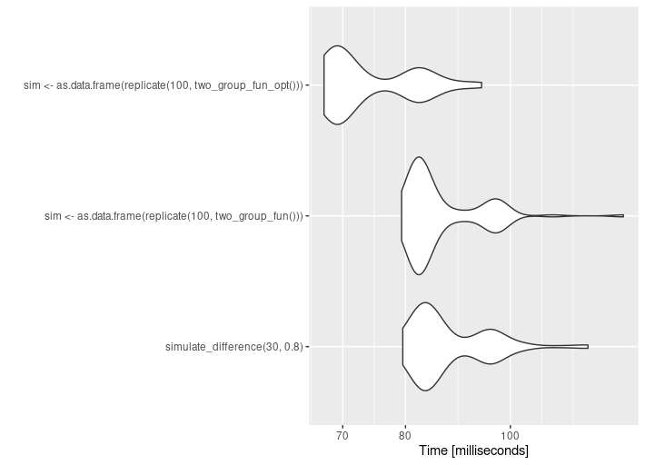
19.6 Power
A useful application of simulations is to work out the power of a statistical test. Here we can flip the simulation to more specifically focus on calculating our statistical power of detection on a simulated dataset with a known effect-size:
# Define a function to run the simulation for a given sample size and effect size
simulate_power <- function(sample_size, effect_size) {
set.seed(123)
# Initialize a counter for the number of significant t-tests
num_significant <- 0
for (i in 1:100) { # Perform 100 simulations for each sample size
# Generate data for two groups with a specified effect size
group1 <- rnorm(sample_size, mean = 0, sd = 1)
group2 <- rnorm(sample_size, mean = effect_size, sd = 1)
# Create a data frame for the two groups
data_df <- data.frame(Group = rep(c("Group1", "Group2"), each = sample_size),
Value = c(group1, group2))
# Fit a linear model to estimate the difference in means
lm_model <- lm(Value ~ Group, data = data_df)
# Extract the p value from the model
# Check if the null hypothesis is rejected (p-value < 0.05)
if ( broom::tidy(lm_model)[[2,5]] < 0.05) {
num_significant <- num_significant + 1
}
}
# Return the proportion of significant t-tests (power)
return(num_significant / 100)
}
# Specify a range of sample sizes to test
sample_sizes <- c(10, 20, 30, 40, 50, 60, 70, 80, 90, 100)
# Set the effect size
effect_size <- 1 # Adjust as needed
# Run the simulation for each sample size
simulation_results <- map_dbl(sample_sizes, simulate_power, effect_size)
# Plot the power as a function of sample size
plot(sample_sizes, simulation_results, type = "b", xlab = "Sample Size", ylab = "Power", main = "Power vs. Sample Size")
19.7 Exercise
Can you optimise the iterations to get stable predictions of power?
Alter the parameters of effect, size sample size and iterations.
19.8 Further Reading:
https://bookdown.org/ndphillips/YaRrr/generating-random-data.html
Simulations: https://rstudio-education.github.io/hopr/
https://aosmith.rbind.io/2018/01/09/simulate-simulate-part1/#simulate-simulate-dance-to-the-music
https://aosmith.rbind.io/2019/07/22/automate-model-fitting-with-loops/
https://aosmith.rbind.io/2017/12/31/many-datasets/#list-all-files-to-read-in
## R version 4.3.1 (2023-06-16)
## Platform: x86_64-pc-linux-gnu (64-bit)
## Running under: Ubuntu 20.04.6 LTS
##
## Matrix products: default
## BLAS: /usr/lib/x86_64-linux-gnu/atlas/libblas.so.3.10.3
## LAPACK: /usr/lib/x86_64-linux-gnu/atlas/liblapack.so.3.10.3; LAPACK version 3.9.0
##
## locale:
## [1] LC_CTYPE=C.UTF-8 LC_NUMERIC=C LC_TIME=C.UTF-8
## [4] LC_COLLATE=C.UTF-8 LC_MONETARY=C.UTF-8 LC_MESSAGES=C.UTF-8
## [7] LC_PAPER=C.UTF-8 LC_NAME=C LC_ADDRESS=C
## [10] LC_TELEPHONE=C LC_MEASUREMENT=C.UTF-8 LC_IDENTIFICATION=C
##
## time zone: UTC
## tzcode source: system (glibc)
##
## attached base packages:
## [1] stats graphics grDevices utils datasets methods base
##
## other attached packages:
## [1] patchwork_1.1.2 testthat_3.1.10 palmerpenguins_0.1.1
## [4] microbenchmark_1.4.10 knitr_1.43 webexercises_1.1.0
## [7] glossary_1.0.0 lubridate_1.9.2 forcats_1.0.0
## [10] stringr_1.5.0 dplyr_1.1.2 purrr_1.0.1
## [13] readr_2.1.4 tidyr_1.3.0 tibble_3.2.1
## [16] ggplot2_3.4.2 tidyverse_2.0.0
##
## loaded via a namespace (and not attached):
## [1] sass_0.4.6 utf8_1.2.3 generics_0.1.3 xml2_1.3.5
## [5] stringi_1.7.12 hms_1.1.3 digest_0.6.33 magrittr_2.0.3
## [9] evaluate_0.21 grid_4.3.1 timechange_0.2.0 bookdown_0.34
## [13] fastmap_1.1.1 jsonlite_1.8.7 backports_1.4.1 brio_1.1.3
## [17] fansi_1.0.4 scales_1.2.1 codetools_0.2-19 jquerylib_0.1.4
## [21] cli_3.6.1 rlang_1.1.1 munsell_0.5.0 withr_2.5.0
## [25] cachem_1.0.8 yaml_2.3.7 tools_4.3.1 tzdb_0.4.0
## [29] memoise_2.0.1 colorspace_2.1-0 broom_1.0.5 vctrs_0.6.3
## [33] R6_2.5.1 lifecycle_1.0.3 fs_1.6.2 pkgconfig_2.0.3
## [37] pillar_1.9.0 bslib_0.5.0 gtable_0.3.3 glue_1.6.2
## [41] highr_0.10 xfun_0.39 tidyselect_1.2.0 rstudioapi_0.15.0
## [45] farver_2.1.1 htmltools_0.5.5 labeling_0.4.2 rmarkdown_2.23
## [49] compiler_4.3.1 downlit_0.4.3(PART*) Getting the most out of tidyverse
20 Reading files with readr
Make sure for these exercises you are starting with a clean session
20.1 Cleaning column names
Reading a CSV file often requires some data cleaning. For example, let's say I want to import data and convert all column names to snake_case.
Most of us would probably read the .CSV file first, then start data cleaning - for example with the janitor::clean_names() function.
library(tidyverse)
library(janitor)
#load data
penguins_raw <- read_csv ("data/penguins_raw.csv")
penguins_raw |>
janitor::clean_names() In my previous example, I used the clean_names() function from the "janitor" package to convert the column names to lowercase. You can achieve the same result by using the make_clean_names() function within the read_csv function, specifying it in the name_repair argument.
By default the janitor::make_clean_names function has a default argument of snake_case but within the function there is also a case argument where other common naming conventions can be used.
20.2 Selecting columns
In addition to cleaning your column names, you can also directly select columns while using the "read_csv" function by utilizing the "col_select" argument. This can be extremely useful when working with large files, selecting only the columns you need can be memory-efficient.
20.3 Reading multiple files
Here we actually start with a complete dataframe - and first iterate to split into 25 equally sized dataframes.
walk2 operates in the same way as map2 - but is the preferred option here as it is "silent"
dir.create(c("data/many_files"))
peng_samples <- map(1:25, ~ slice_sample(penguins_clean, n = 20))
walk2(peng_samples, 1:25, ~ write_csv(.x, paste0("data/many_files/", .y, ".csv")))20.3.1 Create a vector of file paths
Now, to create a vector of file paths, we'll use the list.files function in R. This function allows us to identify and list all the files with a specific extension in a directory. In this example, we're looking for CSV files in the "data/many_files" directory.
[1] "data/many_files/1.csv" "data/many_files/10.csv" "data/many_files/11.csv" "data/many_files/12.csv"
[5] "data/many_files/13.csv" "data/many_files/14.csv" "data/many_files/15.csv" "data/many_files/16.csv"
[9] "data/many_files/17.csv" "data/many_files/18.csv" "data/many_files/19.csv" "data/many_files/2.csv"
[13] "data/many_files/20.csv" "data/many_files/21.csv" "data/many_files/22.csv" "data/many_files/23.csv"
[17] "data/many_files/24.csv" "data/many_files/25.csv" "data/many_files/3.csv" "data/many_files/4.csv"
[21] "data/many_files/5.csv" "data/many_files/6.csv" "data/many_files/7.csv" "data/many_files/8.csv"
[25] "data/many_files/9.csv"The function "list.files" has several arguments. Here's an explanation of some key arguments:
"path": This argument allows you to specify the directory where your files are located. It's essential to ensure the path is set correctly. You should be working within an R-Studio project or have defined your working directory to avoid issues.
"pattern": You provide a regular expression in this argument to filter the files you want to list. In your example, you mentioned that you are looking for files containing the string "csv." This helps narrow down the selection to specific file types or patterns.
"full.names": Setting this argument to
TRUEindicates that you want to store the full paths of the files, not just their names. This is important for ensuring you can correctly access and read these files later. If "full.names" is not set toTRUE, you may encounter difficulties when attempting to read the files because the file paths would be incomplete.
This vector, csv_files_list_files, will now hold the file paths to all the CSV files in our specified directory, making it easy to access and manipulate these files in our R environment
20.3.2 Read multiple files
Now that we have obtained the file paths, we can proceed to load the files into R. The preferred method in the tidyverse is to use the map_dfr function from the purrr package. This function iterates through all the file paths and combines the data frames into a single, unified data frame. In the following code, .x represents the file name or path. To read and output the actual content of the CSV files (not just the filenames), you should include .x (the path) within a readr function. While this example deals with CSV files, this approach works similarly for other rectangular file formats.
20.3.3 Selecting files
Now, to filter and choose specific files for reading, we'll use the str_detect() function from the stringr package in R. This function allows us to search for specific patterns within our vector of file paths and select files that match our criteria. he pattern argument specifies the pattern we want to detect, which, in this case, is "[2-4]". The negate = FALSE argument ensures that we only select files that match the pattern. This work is made easier when we have good naming conventions.
[1] "data/many_files/12.csv" "data/many_files/13.csv" "data/many_files/14.csv"
[4] "data/many_files/2.csv" "data/many_files/20.csv" "data/many_files/21.csv"
[7] "data/many_files/22.csv" "data/many_files/23.csv" "data/many_files/24.csv"
[10] "data/many_files/25.csv" "data/many_files/3.csv" "data/many_files/4.csv"If we want to narrow our criteria further to include only the files that meet the specific pattern of file names ending with "2.csv" or "4.csv." We can work with a subset of files that specifically fit our analysis needs.
str_detect(csv_files_list_files, pattern = "[24]\\.csv$ is the core of this code. Here, we are applying the str_detect() function to search for a particular pattern within the csv_files_list_files. The pattern we are looking for is "[24].csv$," which essentially means we're seeking files with a file name that ends with "2.csv" or "4.csv."
[1] "data/many_files/12.csv" "data/many_files/14.csv" "data/many_files/2.csv"
[4] "data/many_files/22.csv" "data/many_files/24.csv" "data/many_files/4.csv"
20.4 Exercise
This final section for the workshop provides a real world example using iterations to create graphs of population trends from the Living Planet Index for a number of vertebrate species from 1970 to 2014.
The data can be collected here:
1. Can you make four plots using data nesting and map functions?
For this exercise we would like to filter the dataframe to House sparrow, Great tit, Corn bunting and Meadow pipit then nest this data and apply a map function to produce a scatter plot of year against abundance. Customise the plot as you see fit.
2. Can you write this object to multiple dataframes based on "Common.Name".
For this exercise we would like to read the entire dataframe, then produce four new .csv files one for each of House sparrow, Great tit, Corn bunting and Meadow pipit.
21 Working across columns
In this section we will go through the following functions:
last_col()starts_with()ends_with()contains()matches()num_range()where()
This set of handy functions helps streamline column selection and manipulation in data frames. These functions serve various purposes, from selecting specific columns based on their names to targeting numeric ranges or custom patterns, ultimately making data wrangling more efficient and precise.
21.1 Select the last column
## Rows: 344
## Columns: 1
## $ comments <chr> "Not enough blood for isotopes.", NA, NA, "Adult not sampled.…You can also select n-to-the-last with last_col()
## Rows: 344
## Columns: 1
## $ sex <chr> "MALE", "FEMALE", "FEMALE", NA, "FEMALE", "MALE", "FEMALE", "MALE"…Indexing starts at 0, so 1 indicates n-1.
21.2 Selecting columns based on string
This code selects all columns that "start with s"
Rows: 344
Columns: 5
$ study_name <chr> "PAL0708", "PAL0708", "PAL0708", "PAL0708", "PAL0708", "PAL0708", "PAL0708", "PAL0708"…
$ sample_number <dbl> 1, 2, 3, 4, 5, 6, 7, 8, 9, 10, 11, 12, 13, 14, 15, 16, 17, 18, 19, 20, 21, 22, 23, 24,…
$ species <chr> "Adelie Penguin (Pygoscelis adeliae)", "Adelie Penguin (Pygoscelis adeliae)", "Adelie …
$ stage <chr> "Adult, 1 Egg Stage", "Adult, 1 Egg Stage", "Adult, 1 Egg Stage", "Adult, 1 Egg Stage"…
$ sex <chr> "MALE", "FEMALE", "FEMALE", NA, "FEMALE", "MALE", "FEMALE", "MALE", NA, NA, NA, NA, "F…
starts_with and ends_with works with any character, but also with a vector of characters, here it allows us to select all columns that begin with either "s or c".
Rows: 344
Columns: 9
$ study_name <chr> "PAL0708", "PAL0708", "PAL0708", "PAL0708", "PAL0708", "PAL0708", "PAL0708", "PAL0…
$ sample_number <dbl> 1, 2, 3, 4, 5, 6, 7, 8, 9, 10, 11, 12, 13, 14, 15, 16, 17, 18, 19, 20, 21, 22, 23,…
$ species <chr> "Adelie Penguin (Pygoscelis adeliae)", "Adelie Penguin (Pygoscelis adeliae)", "Ade…
$ stage <chr> "Adult, 1 Egg Stage", "Adult, 1 Egg Stage", "Adult, 1 Egg Stage", "Adult, 1 Egg St…
$ sex <chr> "MALE", "FEMALE", "FEMALE", NA, "FEMALE", "MALE", "FEMALE", "MALE", NA, NA, NA, NA…
$ clutch_completion <chr> "Yes", "Yes", "Yes", "Yes", "Yes", "Yes", "No", "No", "Yes", "Yes", "Yes", "Yes", …
$ culmen_length_mm <dbl> 39.1, 39.5, 40.3, NA, 36.7, 39.3, 38.9, 39.2, 34.1, 42.0, 37.8, 37.8, 41.1, 38.6, …
$ culmen_depth_mm <dbl> 18.7, 17.4, 18.0, NA, 19.3, 20.6, 17.8, 19.6, 18.1, 20.2, 17.1, 17.3, 17.6, 21.2, …
$ comments <chr> "Not enough blood for isotopes.", NA, NA, "Adult not sampled.", NA, NA, "Nest neve…21.2.1 Contains
We can also use the contains() function to search for columns that contain a specific string, it searches for an exact match to your string (no regular expressions) but is case-insensitive
Rows: 344
Columns: 2
$ culmen_length_mm <dbl> 39.1, 39.5, 40.3, NA, 36.7, 39.3, 38.9, 39.2, 34.1, 42.0, 37.8, 37.8, 41.1, 38.6, …
$ flipper_length_mm <dbl> 181, 186, 195, NA, 193, 190, 181, 195, 193, 190, 186, 180, 182, 191, 198, 185, 195…21.2.2 Regular expressions
Regular expressions, often abbreviated as regex, are powerful tools for pattern matching and text manipulation. They provide a concise and flexible way to search, extract, and manipulate text based on specific patterns, allowing data analysts and programmers to efficiently handle complex text-processing tasks.
We have been working with regex each time we use stringr but we have been looking for literal characters
But we can use regex types to look for specific patterns
| Regex Type | Description |
|---|---|
| Literal Characters | Matches the exact sequence of characters you specify. |
Character Classes (square brackets []) |
Matches any character within the specified set. |
Wildcards (dot .) |
Matches any single character (except for a newline). |
Quantifiers (e.g., *, +, ?) |
Specify the number of times a character or group can occur. |
Anchors (e.g., ^, $) |
Specify the start (^) or end ($) of a line or string. |
Character Escapes (e.g., \d, \s, \w) |
Shorthand for common character classes. |
Groups (parentheses ()) |
Create subpatterns for more complex matches. |
Alternation (pipe |) |
Allows multiple alternative matches. |
Ranges (dash -) |
Matches any character within a specified range. |
Quantifiers (e.g., {m}, {m,}, {m,n}) |
Specify exact, minimum, or minimum to maximum occurrences of a character or group. |
Word Boundaries (\b) |
Matches the position between a word character and a non-word character. |
Capture Groups (parentheses ()) |
Create groups for capturing matched content for later use. |
| Lookahead and Lookbehind | Perform assertions without including them in the match. |
Modifiers (e.g., i, g, m) |
Modify the behavior of the regex, such as making it case-insensitive (i) or matching across multiple lines (m). |
This example will look for any columns that match contains numbers.
Rows: 344
Columns: 2
$ delta_15_n_o_oo <dbl> NA, 8.94956, 8.36821, NA, 8.76651, 8.66496, 9.18718, 9.46060, NA, 9.13362, 8.63243, …
$ delta_13_c_o_oo <dbl> NA, -24.69454, -25.33302, NA, -25.32426, -25.29805, -25.21799, -24.89958, NA, -25.09…
This modifier means columns are only returned if they have at least two numbers in the column header
This pattern looks for an exact string match to "length_" but it must also be followed by any two letters...
21.3 Selecting by column type
The where() function is used when you want to select variables of a specific data type in a dataset. For example, you can use it to select character variables.
Rows: 344
Columns: 10
$ study_name <chr> "PAL0708", "PAL0708", "PAL0708", "PAL0708", "PAL0708", "PAL0708", "PAL0708", "PAL0…
$ species <chr> "Adelie Penguin (Pygoscelis adeliae)", "Adelie Penguin (Pygoscelis adeliae)", "Ade…
$ region <chr> "Anvers", "Anvers", "Anvers", "Anvers", "Anvers", "Anvers", "Anvers", "Anvers", "A…
$ island <chr> "Torgersen", "Torgersen", "Torgersen", "Torgersen", "Torgersen", "Torgersen", "Tor…
$ stage <chr> "Adult, 1 Egg Stage", "Adult, 1 Egg Stage", "Adult, 1 Egg Stage", "Adult, 1 Egg St…
$ individual_id <chr> "N1A1", "N1A2", "N2A1", "N2A2", "N3A1", "N3A2", "N4A1", "N4A2", "N5A1", "N5A2", "N…
$ clutch_completion <chr> "Yes", "Yes", "Yes", "Yes", "Yes", "Yes", "No", "No", "Yes", "Yes", "Yes", "Yes", …
$ date_egg <chr> "11/11/2007", "11/11/2007", "16/11/2007", "16/11/2007", "16/11/2007", "16/11/2007"…
$ sex <chr> "MALE", "FEMALE", "FEMALE", NA, "FEMALE", "MALE", "FEMALE", "MALE", NA, NA, NA, NA…
$ comments <chr> "Not enough blood for isotopes.", NA, NA, "Adult not sampled.", NA, NA, "Nest neve…Other "predicate functions" include
is.double
is.numeric
is.logical
is.factor
is.integer
21.4 Combos
Using standard logical operators such as | and & we can string together different combinations of selection criteria:
Here the column must be of type numeric or the title contains "species"
Rows: 344
Columns: 8
$ sample_number <dbl> 1, 2, 3, 4, 5, 6, 7, 8, 9, 10, 11, 12, 13, 14, 15, 16, 17, 18, 19, 20, 21, 22, 23,…
$ culmen_length_mm <dbl> 39.1, 39.5, 40.3, NA, 36.7, 39.3, 38.9, 39.2, 34.1, 42.0, 37.8, 37.8, 41.1, 38.6, …
$ culmen_depth_mm <dbl> 18.7, 17.4, 18.0, NA, 19.3, 20.6, 17.8, 19.6, 18.1, 20.2, 17.1, 17.3, 17.6, 21.2, …
$ flipper_length_mm <dbl> 181, 186, 195, NA, 193, 190, 181, 195, 193, 190, 186, 180, 182, 191, 198, 185, 195…
$ body_mass_g <dbl> 3750, 3800, 3250, NA, 3450, 3650, 3625, 4675, 3475, 4250, 3300, 3700, 3200, 3800, …
$ delta_15_n_o_oo <dbl> NA, 8.94956, 8.36821, NA, 8.76651, 8.66496, 9.18718, 9.46060, NA, 9.13362, 8.63243…
$ delta_13_c_o_oo <dbl> NA, -24.69454, -25.33302, NA, -25.32426, -25.29805, -25.21799, -24.89958, NA, -25.…
$ species <chr> "Adelie Penguin (Pygoscelis adeliae)", "Adelie Penguin (Pygoscelis adeliae)", "Ade…
22 Modifying variables
22.1 count
Counting is one of the most common tasks you do when working with data. Counting may sound simple, but it can get complicated quickly. Consider these examples:
Sometimes we want to count with continuous variables. Suppose you have a year variable in your data frame that is of data type integer (e.g. 1982, 1945, 1990). You want to know the number of people for each decade. To do this, you must first convert your year variable to decades before you start counting.
Often you want to count things per group (for example, the number of players on a particular sports team) and add the counts per group as a new variable to your data frame. You could use joins to do this, but could you do it with less code and more efficiently?
In this example, we have created a new variable body_mass_intervals that is calculated from the variable body_mass_g. We also used the name argument to give the count column a more descriptive name.
| body_mass_intervals | n |
|---|---|
| [2.65e+03,2.75e+03] | 1 |
| (2.75e+03,2.85e+03] | 2 |
| (2.85e+03,2.95e+03] | 5 |
| (2.95e+03,3.05e+03] | 7 |
| (3.05e+03,3.15e+03] | 6 |
| (3.15e+03,3.25e+03] | 12 |
| (3.25e+03,3.35e+03] | 17 |
| (3.35e+03,3.45e+03] | 18 |
| (3.45e+03,3.55e+03] | 21 |
| (3.55e+03,3.65e+03] | 15 |
| (3.65e+03,3.75e+03] | 21 |
| (3.75e+03,3.85e+03] | 18 |
| (3.85e+03,3.95e+03] | 21 |
| (3.95e+03,4.05e+03] | 12 |
| (4.05e+03,4.15e+03] | 12 |
| (4.15e+03,4.25e+03] | 10 |
| (4.25e+03,4.35e+03] | 11 |
| (4.35e+03,4.45e+03] | 14 |
| (4.45e+03,4.55e+03] | 6 |
| (4.55e+03,4.65e+03] | 13 |
| (4.65e+03,4.75e+03] | 15 |
| (4.75e+03,4.85e+03] | 8 |
| (4.85e+03,4.95e+03] | 9 |
| (4.95e+03,5.05e+03] | 10 |
| (5.05e+03,5.15e+03] | 5 |
| (5.15e+03,5.25e+03] | 7 |
| (5.25e+03,5.35e+03] | 7 |
| (5.35e+03,5.45e+03] | 6 |
| (5.45e+03,5.55e+03] | 11 |
| (5.55e+03,5.65e+03] | 5 |
| (5.65e+03,5.75e+03] | 6 |
| (5.75e+03,5.85e+03] | 5 |
| (5.85e+03,5.95e+03] | 2 |
| (5.95e+03,6.05e+03] | 3 |
| (6.25e+03,6.35e+03] | 1 |
| NA | 2 |
You can see that the bins each have a range of 10. Also, the bins are surrounded by square brackets and parentheses. A parenthesis means that the number is included in the bin, a square bracket means that a number is not included in the bin, In our second example, this would mean that 2.75e+03 is included, but not 2.85e+03.
22.2 extract
This code is using the separate function from the tidyr package to split the "species" column in the penguins_clean data frame into two separate columns: "species" and "full_latin_name." The separation is based on a specific delimiter, which is an opening parenthesis (.
This approach reaches its limits quite quickly - note here it has left an ugly ) on the end of the second column. There are also issues when we lack a clear separator to distinguish the columns we want to create. For these use cases we have extract.
Now suppose you want to separate the common names and latin names of the species variable by regex:
penguins_clean_split <- penguins_clean |>
extract(species,
into = c("species", "full_latin_name"),
regex = "(\\w+) .* \\(([^)]+)\\)"
)
penguins_clean_split |> colnames()## [1] "study_name" "sample_number" "species"
## [4] "full_latin_name" "region" "island"
## [7] "stage" "individual_id" "clutch_completion"
## [10] "date_egg" "culmen_length_mm" "culmen_depth_mm"
## [13] "flipper_length_mm" "body_mass_g" "sex"
## [16] "delta_15_n_o_oo" "delta_13_c_o_oo" "comments"The first group captures one or more word characters (\w+).
.*this captures any characters in the string but doesn't capture themThe last group contains anything found inside brackets
()\\(finds an open bracket but does not capture it
([^)]+)captures anything except a closing parenthesis
23 Factors
23.1 Anonymising factors
Sometimes you want to make your data completely anonymous so that other people can’t see sensitive information. Or because you wish to blind you own analyses we can do this with forcats::fct_anon
23.2 Lump factors
fct_lump_min() is a function from the forcats package in R, which is used to lump or group together levels of a categorical variable in a way that keeps the most common levels intact while grouping the less common levels into an "Other" or "Miscellaneous" category.
In this example, any species not represented by at least 150 observations, will be lumped into an "Other" category:
23.3 Ordering factors
With the fct_relevel function we can set factors and apply a specified level at the same time:
penguins_clean_split |>
mutate(species = fct_relevel(species, "Adelie", "Chinstrap", "Gentoo")) |>
ggplot(aes(x = species))+
geom_bar()+
coord_flip()
With the function fct_infreq we can change the order according to how frequently each level occurs
penguins_clean_split |>
mutate(species = fct_infreq(species)) |>
ggplot(aes(x = species))+
geom_bar()+
coord_flip()
The fct_rev() function in R is used to reverse the order of levels in a factor variable. It is particularly useful for changing the order of factor levels when you want to display data in a reversed or descending order.
penguins_clean_split |>
mutate(species = fct_rev(as_factor(species))) |>
ggplot(aes(x = species))+
geom_bar()+
coord_flip()
The fct_reorder function allows us to order the levels based on another continuous variable
penguins_clean_split |>
mutate(species = as_factor(species) |>
fct_reorder(body_mass_g,
.fun = median)) |>
# by default the levels are ordered by the median values of the continuous variable
# mean, min and max can all be included here
ggplot(aes(x = species,
y = body_mass_g,
colour = species))+
geom_boxplot(width = .2,
outlier.shape = NA)+
geom_jitter(width = .2,
alpha = .4)
24 Applying functions across columns
One of the credos of programming is “Don’t repeat yourself”. We have seen in previous tutorials that many of us fall victim to this principle quite often. Fortunately, the tidyverse team has developed a set of functions that make it easier not to repeat ourselves:
24.1 calculate summary statistics across columns
In this example I am generating summary statistics for two columns, but I can make this process more efficient:
penguins_clean_split |>
group_by(species) |>
summarise(
mean_body_mass = mean(body_mass_g, na.rm = T),
mean_flipper_length = mean(flipper_length_mm, na.rm = T)
)A couple of things are important here:
• The function across only works inside dplyr verbs (e.g. mutate)
• The function has three important arguments: .cols stands for the column to apply a function to. You can use the tidyselect functions here; .fns stands for the function(s) that will be applied to these columns; .names is used whenever you want to change the names of the selected columns.
Each use case will work with this general structure:
<DFRAME> |>
<DPLYR VERB>(
across(
.cols = <SELECTION OF COLUMNS>,
.fns = <FUNCTION TO BE APPLIED TO EACH COLUMN>,
.names = <NAME OF THE GENERATED COLUMNS>
)
)Instead you can use the across function to get the same result, here I could supply column names .cols = c("body_mass_g", "flipper_length_mm") or can I use where to get whole column types :
penguins_clean_split |>
group_by(species) |>
summarise(
across(
.cols = where(is.numeric),
.fns = ~mean(.x, na.rm = T),
.names = "mean_{.col}")
)| species | mean_sample_number | mean_culmen_length_mm | mean_culmen_depth_mm | mean_flipper_length_mm | mean_body_mass_g | mean_delta_15_n_o_oo | mean_delta_13_c_o_oo |
|---|---|---|---|---|---|---|---|
| Adelie | 76.5 | 38.79139 | 18.34636 | 189.9536 | 3700.662 | 8.859733 | -25.80419 |
| Chinstrap | 34.5 | 48.83382 | 18.42059 | 195.8235 | 3733.088 | 9.356155 | -24.54654 |
| Gentoo | 62.5 | 47.50488 | 14.98211 | 217.1870 | 5076.016 | 8.245338 | -26.18530 |
24.2 Change variable types across columns
penguins_clean_split |>
mutate(
across(.cols = c("species", "island", "region"),
.fns = as_factor)
) |>
select(where(is.factor)) |>
glimpse()## Rows: 344
## Columns: 3
## $ species <fct> Adelie, Adelie, Adelie, Adelie, Adelie, Adelie, Adelie, Adelie…
## $ region <fct> Anvers, Anvers, Anvers, Anvers, Anvers, Anvers, Anvers, Anvers…
## $ island <fct> Torgersen, Torgersen, Torgersen, Torgersen, Torgersen, Torgers…Rows: 344
Columns: 3
$ species <fct> Adelie, Adelie, Adelie, Adelie, Adelie, Adelie, Adelie, Adelie, Adelie, Adel…
$ region <fct> Anvers, Anvers, Anvers, Anvers, Anvers, Anvers, Anvers, Anvers, Anvers, Anve…
$ island <fct> Torgersen, Torgersen, Torgersen, Torgersen, Torgersen, Torgersen, Torgersen,…24.3 Correct typos
We can use the across functions to quickly change typos across multiple columns at once, here is an example:
x <- c("Adelie", "adelie", "pinstrap", "Chinstrap")
y <- c("adelie", "Adelie", "Chinstrap","Chinstrap")
typo_df <- tibble(x,y)typo_df |>
mutate(across(
.cols = everything(),
.fns = ~ case_when(
str_detect(., "adelie") ~ str_replace(., "adelie", "Adelie"),
str_detect(., "pinstrap") ~ str_replace(., "pinstrap", "Chinstrap"),
TRUE ~ .
)
))| x | y |
|---|---|
| Adelie | Adelie |
| Adelie | Adelie |
| Chinstrap | Chinstrap |
| Chinstrap | Chinstrap |
25 Working with rows
25.1 Filtering rows based on conditions across multiple columns
Suppose you want to filter multiple rows from your data frame that fail to meet a criteria.
25.2 filter rows based on missing values
Another very useful use case is filtering rows based on missing values across multiple columns.
At first the outcome above can seem counter-intuitive, but can be
explained by the ! operator. The if_all is evaluating
whether all columns meet the condition of NOT containing NA.
You can try different combinations of if_all, if_any and the NOT operator
25.3 slicing
Suppose we want to remove the 10 highest values of body mass from our dataframe - we could do this with slice
| study_name | sample_number | species | full_latin_name | region | island | stage | individual_id | clutch_completion | date_egg | culmen_length_mm | culmen_depth_mm | flipper_length_mm | body_mass_g | sex | delta_15_n_o_oo | delta_13_c_o_oo | comments |
|---|---|---|---|---|---|---|---|---|---|---|---|---|---|---|---|---|---|
| PAL0708 | 18 | Gentoo | Pygoscelis papua | Anvers | Biscoe | Adult, 1 Egg Stage | N39A2 | Yes | 2007-11-27 | 49.2 | 15.2 | 221 | 6300 | MALE | 8.27376 | -25.00169 | NA |
| PAL0708 | 34 | Gentoo | Pygoscelis papua | Anvers | Biscoe | Adult, 1 Egg Stage | N56A2 | Yes | 2007-12-03 | 59.6 | 17.0 | 230 | 6050 | MALE | 7.76843 | -25.68210 | NA |
| PAL0809 | 78 | Gentoo | Pygoscelis papua | Anvers | Biscoe | Adult, 1 Egg Stage | N58A2 | Yes | 2008-11-06 | 51.1 | 16.3 | 220 | 6000 | MALE | 8.40327 | -26.76821 | NA |
| PAL0910 | 118 | Gentoo | Pygoscelis papua | Anvers | Biscoe | Adult, 1 Egg Stage | N36A2 | Yes | 2009-12-01 | 48.8 | 16.2 | 222 | 6000 | MALE | 8.33825 | -25.88547 | NA |
| PAL0809 | 80 | Gentoo | Pygoscelis papua | Anvers | Biscoe | Adult, 1 Egg Stage | N60A2 | Yes | 2008-11-09 | 45.2 | 16.4 | 223 | 5950 | MALE | 8.19749 | -26.65931 | NA |
| PAL0910 | 112 | Gentoo | Pygoscelis papua | Anvers | Biscoe | Adult, 1 Egg Stage | N32A2 | Yes | 2009-11-20 | 49.8 | 15.9 | 229 | 5950 | MALE | 8.29226 | -26.21019 | NA |
| PAL0708 | 14 | Gentoo | Pygoscelis papua | Anvers | Biscoe | Adult, 1 Egg Stage | N37A2 | Yes | 2007-11-29 | 48.4 | 14.6 | 213 | 5850 | MALE | 7.82080 | -25.48025 | NA |
| PAL0708 | 16 | Gentoo | Pygoscelis papua | Anvers | Biscoe | Adult, 1 Egg Stage | N38A2 | Yes | 2007-12-03 | 49.3 | 15.7 | 217 | 5850 | MALE | 8.07137 | -25.52473 | NA |
| PAL0910 | 116 | Gentoo | Pygoscelis papua | Anvers | Biscoe | Adult, 1 Egg Stage | N35A2 | Yes | 2009-11-25 | 55.1 | 16.0 | 230 | 5850 | MALE | 8.08354 | -26.18161 | NA |
| PAL0809 | 68 | Gentoo | Pygoscelis papua | Anvers | Biscoe | Adult, 1 Egg Stage | N51A2 | Yes | 2008-11-09 | 49.5 | 16.2 | 229 | 5800 | MALE | 8.49854 | -26.74809 | NA |
slice keeps all rows for which you specify positive indices. Note that in R indexing starts with 1 and not with 0 as in most other programming languages. To make it more clear what rows slice keeps, let’s add row numbers to our data frame and slice some arbitrary rows:
penguins_clean_split |>
arrange(desc(body_mass_g)) |>
rownames_to_column(var = "row_number") |>
slice(c(1,123,307))| row_number | study_name | sample_number | species | full_latin_name | region | island | stage | individual_id | clutch_completion | date_egg | culmen_length_mm | culmen_depth_mm | flipper_length_mm | body_mass_g | sex | delta_15_n_o_oo | delta_13_c_o_oo | comments |
|---|---|---|---|---|---|---|---|---|---|---|---|---|---|---|---|---|---|---|
| 1 | PAL0708 | 18 | Gentoo | Pygoscelis papua | Anvers | Biscoe | Adult, 1 Egg Stage | N39A2 | Yes | 2007-11-27 | 49.2 | 15.2 | 221 | 6300 | MALE | 8.27376 | -25.00169 | NA |
| 123 | PAL0809 | 59 | Gentoo | Pygoscelis papua | Anvers | Biscoe | Adult, 1 Egg Stage | N17A1 | Yes | 2008-11-06 | 43.2 | 14.5 | 208 | 4450 | FEMALE | 8.48367 | -26.86485 | NA |
| 307 | PAL0708 | 17 | Chinstrap | Pygoscelis antarctica | Anvers | Dream | Adult, 1 Egg Stage | N71A1 | No | 2007-11-30 | 50.3 | 20.0 | 197 | 3300 | MALE | 10.02019 | -24.54704 | Nest never observed with full clutch. |
To remove specific rows, we can use negative indices. Suppose, we want to remove the first 340 rows from our data frame.
penguins_clean_split |>
arrange(desc(body_mass_g)) |>
rownames_to_column(var = "row_number") |>
slice(c(-1:-340))| row_number | study_name | sample_number | species | full_latin_name | region | island | stage | individual_id | clutch_completion | date_egg | culmen_length_mm | culmen_depth_mm | flipper_length_mm | body_mass_g | sex | delta_15_n_o_oo | delta_13_c_o_oo | comments |
|---|---|---|---|---|---|---|---|---|---|---|---|---|---|---|---|---|---|---|
| 341 | PAL0809 | 65 | Adelie | Pygoscelis adeliae | Anvers | Biscoe | Adult, 1 Egg Stage | N29A1 | Yes | 2008-11-13 | 36.4 | 17.1 | 184 | 2850 | FEMALE | 8.62623 | -26.11650 | NA |
| 342 | PAL0809 | 39 | Chinstrap | Pygoscelis antarctica | Anvers | Dream | Adult, 1 Egg Stage | N72A1 | No | 2008-11-24 | 46.9 | 16.6 | 192 | 2700 | FEMALE | 9.80589 | -24.73735 | Nest never observed with full clutch. |
| 343 | PAL0708 | 4 | Adelie | Pygoscelis adeliae | Anvers | Torgersen | Adult, 1 Egg Stage | N2A2 | Yes | 2007-11-16 | NA | NA | NA | NA | NA | NA | NA | Adult not sampled. |
| 344 | PAL0910 | 120 | Gentoo | Pygoscelis papua | Anvers | Biscoe | Adult, 1 Egg Stage | N38A2 | No | 2009-12-01 | NA | NA | NA | NA | NA | NA | NA | Adult not sampled. Nest never observed with full clutch. |
Helper functions include slice_head(), slice_tail(), slice_max(), slice_min() and slice_sample()
We can use these functions to more quickly and easily filter our data under some situations
penguins_clean_split |>
slice_max(order_by = body_mass_g,
n = 20) |> # we can also use prop e.g. prop =.1 to slice the top 10%
select(species, body_mass_g)| species | body_mass_g |
|---|---|
| Gentoo | 6300 |
| Gentoo | 6050 |
| Gentoo | 6000 |
| Gentoo | 6000 |
| Gentoo | 5950 |
| Gentoo | 5950 |
| Gentoo | 5850 |
| Gentoo | 5850 |
| Gentoo | 5850 |
| Gentoo | 5800 |
| Gentoo | 5800 |
| Gentoo | 5750 |
| Gentoo | 5700 |
| Gentoo | 5700 |
| Gentoo | 5700 |
| Gentoo | 5700 |
| Gentoo | 5700 |
| Gentoo | 5650 |
| Gentoo | 5650 |
| Gentoo | 5650 |
25.4 groupwise slicing
To apply these functions within different sub-categories, we have to use group_by()
penguins_clean_split |>
group_by(species) |>
slice_max(order_by = body_mass_g,
n = 3) |>
select(species, body_mass_g) |>
ungroup()| species | body_mass_g |
|---|---|
| Adelie | 4775 |
| Adelie | 4725 |
| Adelie | 4700 |
| Chinstrap | 4800 |
| Chinstrap | 4550 |
| Chinstrap | 4500 |
| Gentoo | 6300 |
| Gentoo | 6050 |
| Gentoo | 6000 |
| Gentoo | 6000 |
25.5 bootstrapping with slice
If we set the replace argument to TRUE in slice(), we will perform sampling with replacement. This means the same row of data can appear twice in our dataframe.
## [1] 35Why would we do this? This functionality allows us to create bootstraps from our data frame. Bootstrapping is a technique where a set of samples of the same size are drawn from a single original sample.
Some values appear more than once because bootstrapping allows each value to be pulled multiple times from the original data set. Once you have your bootstraps, you can calculate metrics from them. For example, the mean value of each bootstrap. The underlying logic of this technique is that since the sample itself is from a population, the bootstraps act as proxies for other samples from that population. Now that we have created one bootstrap from our sample, we can create many. In the following code I have used map to create 100 bootstraps from my original sample:
set.seed(342)
bootstraps <- map(1:100,
~slice_sample(penguins_clean_split,
prop = .1, # 10% of dataframe
replace = TRUE))
bootstraps %>%
map_dbl(~ mean(.$body_mass_g, na.rm = TRUE)) |>
tibble(x = _ ) |>
ggplot(aes(x = x)) +
geom_histogram(fill = "grey80", color = "black")+
geom_vline(data = penguins_clean_split,
aes(xintercept = mean(body_mass_g, na.rm = T)),
linewidth = 2, colour = "red", linetype ="dashed")
26 Group work
The R4DS book demonstrates how functions can be used to run multiple models simultaneously. This technique is valuable for extracting meaningful insights from your data.
To find out how well culmen length can predict culmen depth we build a linear regression model.
Once we have created the model, we can retrieve the results parameters and test statistics
with the summary function:
summary(model)
##
## Call:
## lm(formula = culmen_depth_mm ~ culmen_length_mm, data = penguins_clean_split)
##
## Residuals:
## Min 1Q Median 3Q Max
## -4.1381 -1.4263 0.0164 1.3841 4.5255
##
## Coefficients:
## Estimate Std. Error t value Pr(>|t|)
## (Intercept) 20.88547 0.84388 24.749 < 2e-16 ***
## culmen_length_mm -0.08502 0.01907 -4.459 1.12e-05 ***
## ---
## Signif. codes: 0 '***' 0.001 '**' 0.01 '*' 0.05 '.' 0.1 ' ' 1
##
## Residual standard error: 1.922 on 340 degrees of freedom
## (2 observations deleted due to missingness)
## Multiple R-squared: 0.05525, Adjusted R-squared: 0.05247
## F-statistic: 19.88 on 1 and 340 DF, p-value: 1.12e-05Now we know that there are important covariates to consider - and the most appropriate method from an analysis perspective would be to include these as covariates within a single model
model <- lm(culmen_depth_mm ~ culmen_length_mm * species, data = penguins_clean_split)
summary(model)Call:
lm(formula = culmen_depth_mm ~ culmen_length_mm * species, data = penguins_clean_split)
Residuals:
Min 1Q Median 3Q Max
-2.6574 -0.6675 -0.0524 0.5383 3.5032
Coefficients:
Estimate Std. Error t value Pr(>|t|)
(Intercept) 11.40912 1.13812 10.025 < 2e-16 ***
culmen_length_mm 0.17883 0.02927 6.110 2.76e-09 ***
speciesChinstrap -3.83998 2.05398 -1.870 0.062419 .
speciesGentoo -6.15812 1.75451 -3.510 0.000509 ***
culmen_length_mm:speciesChinstrap 0.04338 0.04558 0.952 0.341895
culmen_length_mm:speciesGentoo 0.02601 0.04054 0.642 0.521590
---
Signif. codes: 0 ‘***’ 0.001 ‘**’ 0.01 ‘*’ 0.05 ‘.’ 0.1 ‘ ’ 1
Residual standard error: 0.9548 on 336 degrees of freedom
(2 observations deleted due to missingness)
Multiple R-squared: 0.7697, Adjusted R-squared: 0.7662
F-statistic: 224.5 on 5 and 336 DF, p-value: < 2.2e-16
However, there may be occasions where we wish to apply simple models to each subpopulation in turn:
First we need to nest() our data - tibbles with nested dataframes can be manipulated using various functions and operations to perform tasks like filtering, summarizing, and visualization. Nested dataframes also facilitate operations on a per-group basis, which can be useful for group-wise analysis.
- First we create a new nested dataframe 2. Then we run a model function (passing this through
broom::tidy()to get a tibble friendly output) inside mutate. This will create a new column with nested tibbles in it. We then unnest the model to extract the terms for each Intercept and slope.
penguins |>
group_by(species) |>
nest() |>
mutate(model = map(data, ~ lm(culmen_depth_mm ~ culmen_length_mm, data = .) |> broom::tidy())) |>
unnest(model)# A tibble: 6 × 7
# Groups: species [3]
species data term estimate std.error statistic p.value
<chr> <list> <chr> <dbl> <dbl> <dbl> <dbl>
1 Adelie <tibble [152 × 16]> (Intercept) 11.4 1.34 8.52 1.61e-14
2 Adelie <tibble [152 × 16]> culmen_length_mm 0.179 0.0344 5.19 6.67e- 7
3 Gentoo <tibble [124 × 16]> (Intercept) 5.25 1.05 4.98 2.15e- 6
4 Gentoo <tibble [124 × 16]> culmen_length_mm 0.205 0.0222 9.24 1.02e-15
5 Chinstrap <tibble [68 × 16]> (Intercept) 7.57 1.55 4.88 6.99e- 6
6 Chinstrap <tibble [68 × 16]> culmen_length_mm 0.222 0.0317 7.01 1.53e- 9
27 Pivot
27.1 pivot wider
Un-tidy data violates one of these three principles in one way or another:
• Each variable forms a column • Each observation forms a row • Each type of observation unit is a table
wk1 <- c(1,2,4,5)
wk2 <- c(3,4,1,0)
wk3 <- c(0,0,2,0)
penguin_id <- c("N15A1" , "N15A2" , "N18A1", "N71A2")
peng_obs <- tibble(penguin_id, wk1,wk2,wk3)This data is untidy because a value that measures the same underlying attribute (number of observations) is split across three columns. Here wk1,wk2 and wk3 represent the underlying variable of observations split across three weeks.
We can use pivot to create a tidy representation of the data
| penguin_id | week | observations |
|---|---|---|
| N15A1 | wk1 | 1 |
| N15A1 | wk2 | 3 |
| N15A1 | wk3 | 0 |
| N15A2 | wk1 | 2 |
| N15A2 | wk2 | 4 |
| N15A2 | wk3 | 0 |
| N18A1 | wk1 | 4 |
| N18A1 | wk2 | 1 |
| N18A1 | wk3 | 2 |
| N71A2 | wk1 | 5 |
| N71A2 | wk2 | 0 |
| N71A2 | wk3 | 0 |
We can tidy this dataframe further by removing the "wk" prefix:
peng_obs |>
pivot_longer(
cols = "wk1":"wk3",
names_to = "week",
names_prefix = "wk",
values_to = "observations"
)| penguin_id | week | observations |
|---|---|---|
| N15A1 | 1 | 1 |
| N15A1 | 2 | 3 |
| N15A1 | 3 | 0 |
| N15A2 | 1 | 2 |
| N15A2 | 2 | 4 |
| N15A2 | 3 | 0 |
| N18A1 | 1 | 4 |
| N18A1 | 2 | 1 |
| N18A1 | 3 | 2 |
| N71A2 | 1 | 5 |
| N71A2 | 2 | 0 |
| N71A2 | 3 | 0 |
Note that the week column is still being treated as a character
string. using names_transform we can fix this
peng_obs |>
pivot_longer(
cols = "wk1":"wk3",
names_to = "week",
names_prefix = "wk",
names_transform = as.integer,
values_to = "observations"
)| penguin_id | week | observations |
|---|---|---|
| N15A1 | 1 | 1 |
| N15A1 | 2 | 3 |
| N15A1 | 3 | 0 |
| N15A2 | 1 | 2 |
| N15A2 | 2 | 4 |
| N15A2 | 3 | 0 |
| N18A1 | 1 | 4 |
| N18A1 | 2 | 1 |
| N18A1 | 3 | 2 |
| N71A2 | 1 | 5 |
| N71A2 | 2 | 0 |
| N71A2 | 3 | 0 |
27.2 pivot longer
Suppose you would like to make a data frame wider because you would like to present the results in a human-readable table. To do this, you can use pivot_wider and provide arguments for its main parameters:
id_cols: These columns are the identifiers for the observations. These column names remain unchanged in the data frame. Their values form the rows of the transformed data frame. By default, all columns except those specified in names_from and values_from become id_cols.
names_from: These columns will be transformed into a wider format. Their values will be converted to columns. If you specify more than one column for names_from, the newly created column names will be a combination of the column values.
values_from: The values of these columns will be used for the columns created with names_from.
27.3 pivot wider for summary tables
| species | island | mean |
|---|---|---|
| Adelie | Biscoe | 3709.659 |
| Adelie | Dream | 3688.393 |
| Adelie | Torgersen | 3706.373 |
| Chinstrap | Dream | 3733.088 |
| Gentoo | Biscoe | 5076.016 |
penguins_clean_split |>
group_by(species, island) |>
summarise(mean = mean(body_mass_g, na.rm = T)) |>
pivot_wider(names_from = c(species, island),
values_from = mean,
names_prefix = "mean_")| mean_Adelie_Biscoe | mean_Adelie_Dream | mean_Adelie_Torgersen | mean_Chinstrap_Dream | mean_Gentoo_Biscoe |
|---|---|---|---|---|
| 3709.659 | 3688.393 | 3706.373 | 3733.088 | 5076.016 |
28 Writing Functions in Tidyverse
The goal here is to understand how to use tidy evaluation to write functions that incorporate {tidyverse} functions e.g. (mutate, select, filter) etc.
Below is an example of some code to select a variable:
Put that exact working code into a function
test_function <- function(select_var){
penguins_clean_split |>
select(select_var)
}
test_function(select_var = species)Error: object 'species' not found
This error occurs becaus of tidy evaluation
Tidy evaluation: A framework for controlling how expressions and variables in your code are evaluated by tidyverse functions.
-
Allows programmers to select variables based on their position, name, or type
-
Useful for passing variable names as inputs to functions that use tidyverse packages like dplyr and ggplot2
-
{dplyr} verbs rely on tidy evaluation to resolve programming commands
28.1 Data masking
Data masking is a handy feature of tidyverse that makes it easier to program with dataframes. It allows you to reference columns wihout using $, whereas almost all base R functions use unmasked programming.
However, this makes it harder to create functions
Data masking is used by arrange(), count(), filter(), group_by(), mutate(), and summarise(). To check which type of tidy evaluation a function uses, check the help file.
test_filter_species <- function(filter_var) {
penguins_clean_split %>%
filter(species == filter_var)
}
test_filter_species("Adelie") %>%
glimpse()## Rows: 152
## Columns: 18
## $ study_name <chr> "PAL0708", "PAL0708", "PAL0708", "PAL0708", "PAL0708…
## $ sample_number <dbl> 1, 2, 3, 4, 5, 6, 7, 8, 9, 10, 11, 12, 13, 14, 15, 1…
## $ species <chr> "Adelie", "Adelie", "Adelie", "Adelie", "Adelie", "A…
## $ full_latin_name <chr> "Pygoscelis adeliae", "Pygoscelis adeliae", "Pygosce…
## $ region <chr> "Anvers", "Anvers", "Anvers", "Anvers", "Anvers", "A…
## $ island <chr> "Torgersen", "Torgersen", "Torgersen", "Torgersen", …
## $ stage <chr> "Adult, 1 Egg Stage", "Adult, 1 Egg Stage", "Adult, …
## $ individual_id <chr> "N1A1", "N1A2", "N2A1", "N2A2", "N3A1", "N3A2", "N4A…
## $ clutch_completion <chr> "Yes", "Yes", "Yes", "Yes", "Yes", "Yes", "No", "No"…
## $ date_egg <date> 2007-11-11, 2007-11-11, 2007-11-16, 2007-11-16, 200…
## $ culmen_length_mm <dbl> 39.1, 39.5, 40.3, NA, 36.7, 39.3, 38.9, 39.2, 34.1, …
## $ culmen_depth_mm <dbl> 18.7, 17.4, 18.0, NA, 19.3, 20.6, 17.8, 19.6, 18.1, …
## $ flipper_length_mm <dbl> 181, 186, 195, NA, 193, 190, 181, 195, 193, 190, 186…
## $ body_mass_g <dbl> 3750, 3800, 3250, NA, 3450, 3650, 3625, 4675, 3475, …
## $ sex <chr> "MALE", "FEMALE", "FEMALE", NA, "FEMALE", "MALE", "F…
## $ delta_15_n_o_oo <dbl> NA, 8.94956, 8.36821, NA, 8.76651, 8.66496, 9.18718,…
## $ delta_13_c_o_oo <dbl> NA, -24.69454, -25.33302, NA, -25.32426, -25.29805, …
## $ comments <chr> "Not enough blood for isotopes.", NA, NA, "Adult not…By passing quoted arguments to the function, you can use it directly in the expression, and the function will evaluate it as if it were part of the data frame.
test_filter_general <- function(filter_condition) {
penguins_clean_split %>%
filter(filter_condition)
}
test_filter_general("flipper_length_mm > 180") %>%
glimpse()Error in `filter()`:
ℹ In argument: `filter_condition`.
Caused by error:
! `..1` must be a logical vector, not the string "fliper_length_mm > 180".
Backtrace:
1. test_filter_general("flipper_length_mm > 180") %>% glimpse()
12. dplyr:::dplyr_internal_error(...)
However, we can avoid this by embracing the curly operators {{.}} this allows the data-masked argument to have its evaluation delayed until after the data frame columns are defined. With the {{ operator you can tunnel data-variables (i.e. columns from the data frames) through arg-variables (function arguments).
test_filter_general <- function(filter_condition) {
penguins_clean_split %>%
filter({{filter_condition}})
}
test_filter_general(flipper_length_mm > 180) %>%
glimpse()## Rows: 329
## Columns: 18
## $ study_name <chr> "PAL0708", "PAL0708", "PAL0708", "PAL0708", "PAL0708…
## $ sample_number <dbl> 1, 2, 3, 5, 6, 7, 8, 9, 10, 11, 13, 14, 15, 16, 17, …
## $ species <chr> "Adelie", "Adelie", "Adelie", "Adelie", "Adelie", "A…
## $ full_latin_name <chr> "Pygoscelis adeliae", "Pygoscelis adeliae", "Pygosce…
## $ region <chr> "Anvers", "Anvers", "Anvers", "Anvers", "Anvers", "A…
## $ island <chr> "Torgersen", "Torgersen", "Torgersen", "Torgersen", …
## $ stage <chr> "Adult, 1 Egg Stage", "Adult, 1 Egg Stage", "Adult, …
## $ individual_id <chr> "N1A1", "N1A2", "N2A1", "N3A1", "N3A2", "N4A1", "N4A…
## $ clutch_completion <chr> "Yes", "Yes", "Yes", "Yes", "Yes", "No", "No", "Yes"…
## $ date_egg <date> 2007-11-11, 2007-11-11, 2007-11-16, 2007-11-16, 200…
## $ culmen_length_mm <dbl> 39.1, 39.5, 40.3, 36.7, 39.3, 38.9, 39.2, 34.1, 42.0…
## $ culmen_depth_mm <dbl> 18.7, 17.4, 18.0, 19.3, 20.6, 17.8, 19.6, 18.1, 20.2…
## $ flipper_length_mm <dbl> 181, 186, 195, 193, 190, 181, 195, 193, 190, 186, 18…
## $ body_mass_g <dbl> 3750, 3800, 3250, 3450, 3650, 3625, 4675, 3475, 4250…
## $ sex <chr> "MALE", "FEMALE", "FEMALE", "FEMALE", "MALE", "FEMAL…
## $ delta_15_n_o_oo <dbl> NA, 8.94956, 8.36821, 8.76651, 8.66496, 9.18718, 9.4…
## $ delta_13_c_o_oo <dbl> NA, -24.69454, -25.33302, -25.32426, -25.29805, -25.…
## $ comments <chr> "Not enough blood for isotopes.", NA, NA, NA, NA, "N…Let's try another data-masked function
summary_table <- function(df, var){
df |>
summarise(mean = mean({{var}}, na.rm = T),
sd = sd({{var}}, na.rm = T))
}
summary_table(penguins_clean_split, body_mass_g)| mean | sd |
|---|---|
| 4201.754 | 801.9545 |
28.1.1 Alternative to {{}}
The {{.}} is a shortcut for !!enquo(.) Where rlang::enquo() captures and quote an argument or an expression. The result of enquo() is a quosure, which is a combination of the quoted expression and its associated environment.
!! This is the unquote operator. It's used to unquote or unsplice the contents of a quosure. In other words, it takes the quoted expression out of the quosure and evaluates it. We can see how this would work for one of our previous examples:
test_filter_general <- function(filter_condition) {
filter_quo <- enquo(filter_condition)
penguins_clean_split %>%
filter(!!filter_quo)
}
test_filter_general(flipper_length_mm > 180) %>%
glimpse()## Rows: 329
## Columns: 18
## $ study_name <chr> "PAL0708", "PAL0708", "PAL0708", "PAL0708", "PAL0708…
## $ sample_number <dbl> 1, 2, 3, 5, 6, 7, 8, 9, 10, 11, 13, 14, 15, 16, 17, …
## $ species <chr> "Adelie", "Adelie", "Adelie", "Adelie", "Adelie", "A…
## $ full_latin_name <chr> "Pygoscelis adeliae", "Pygoscelis adeliae", "Pygosce…
## $ region <chr> "Anvers", "Anvers", "Anvers", "Anvers", "Anvers", "A…
## $ island <chr> "Torgersen", "Torgersen", "Torgersen", "Torgersen", …
## $ stage <chr> "Adult, 1 Egg Stage", "Adult, 1 Egg Stage", "Adult, …
## $ individual_id <chr> "N1A1", "N1A2", "N2A1", "N3A1", "N3A2", "N4A1", "N4A…
## $ clutch_completion <chr> "Yes", "Yes", "Yes", "Yes", "Yes", "No", "No", "Yes"…
## $ date_egg <date> 2007-11-11, 2007-11-11, 2007-11-16, 2007-11-16, 200…
## $ culmen_length_mm <dbl> 39.1, 39.5, 40.3, 36.7, 39.3, 38.9, 39.2, 34.1, 42.0…
## $ culmen_depth_mm <dbl> 18.7, 17.4, 18.0, 19.3, 20.6, 17.8, 19.6, 18.1, 20.2…
## $ flipper_length_mm <dbl> 181, 186, 195, 193, 190, 181, 195, 193, 190, 186, 18…
## $ body_mass_g <dbl> 3750, 3800, 3250, 3450, 3650, 3625, 4675, 3475, 4250…
## $ sex <chr> "MALE", "FEMALE", "FEMALE", "FEMALE", "MALE", "FEMAL…
## $ delta_15_n_o_oo <dbl> NA, 8.94956, 8.36821, 8.76651, 8.66496, 9.18718, 9.4…
## $ delta_13_c_o_oo <dbl> NA, -24.69454, -25.33302, -25.32426, -25.29805, -25.…
## $ comments <chr> "Not enough blood for isotopes.", NA, NA, NA, NA, "N…28.2 tidy-select
When using functions that use tidy-select, we put variable names in quotes and use th all_of and any_of functions.
my_select_function <- function(select_variable){
penguins_clean_split |>
dplyr::select(select_variable)
}
my_select_function(species) |>
glimpse()Error: object 'species' not found
my_select_function <- function(select_variable){
penguins_clean_split |>
dplyr::select(select_variable)
}
my_select_function("species") |>
glimpse()Warning: Using an external vector in selections was deprecated in tidyselect 1.1.0.
Please use `all_of()` or `any_of()` instead.
# Was:
data %>% select(select_variable)
# Now:
data %>% select(all_of(select_variable))
any_of(): selecting any of the listed variablesall_of(): for strict selection. If any of the variables in the character vector is missing, an error is thrownCan also use
!all_of()to select all variables not found in the character vector supplied to all_of()
my_select_function <- function(select_variable){
penguins_clean_split |>
dplyr::select(dplyr::all_of(select_variable))
}
my_select_function(select_variable = c("species", "sex")) |>
glimpse()## Rows: 344
## Columns: 2
## $ species <chr> "Adelie", "Adelie", "Adelie", "Adelie", "Adelie", "Adelie", "A…
## $ sex <chr> "MALE", "FEMALE", "FEMALE", NA, "FEMALE", "MALE", "FEMALE", "M…28.3 Practice
Write a function that uses filter to take any two of the penguin species then selects one numeric variable e.g. body_mass_g and compares them with a violin plot geom_violin()

Try substituting in quo_name(enquo(filter_condition)). To return a character string that represents your filter condition. In the example below I have used quo_name(enquo()) to enable conversion to character strings, this means all of the function arguments can be provided without "quotes".
28.4 Exercise
1.Practice tidy evaluation I want to produce a function that allows unquoted arguments and produces a barplot of the number of penguins recorded by species. In this instance I am going to start with a function where I can filter the penguins according to one variable and fill the columns according to another variable e.g. filter by year and colour by island to get a year-by-year abundance chart
Try and write a specific example first:
Then abstract this and use bare (unquoted) values in your arguments

2. Write your own custom function Can you write your own custom function in tidyverse? If you have something from your own data or work - see if you can functionalise your flow?
(PART*) Data Presentation
29 Customisation with ggplot2
Up until now, we've created basic plots with the default visual style. Before we dive into working with experimental data, let's explore some straightforward ways to personalize our visuals. There are numerous ways to tweak and tailor the look of your plots in R, but once you grasp the concept behind one customization, you'll find it easier to apply similar principles in other examples.
You can customize the appearance of elements within a specific plot element, through aesthetic mapping, or by adding extra layers using the plus sign (+). In this section, we'll focus on the most common and easy-to-implement customizations, like changing colors, including axis labels, and applying different themes to your plots.
You will need your cleaned penguins dataframe from Day One.
29.1 Colours
There are two main differences when it comes to colors in ggplot2. Both arguments, color and fill, can be specified as single color or
assigned to variables.
As you have already seen in this tutorial, variables that are inside the aesthetics are encoded by variables and those that are outside are properties that are unrelated to the variables.
penguins |>
ggplot(aes(x=culmen_length_mm))+
geom_histogram(bins=50,
aes(y=..density..,
fill=species),
position = "identity",
colour="black")
29.1.1 Choosing and using colour palettes
You can specify what colours you want to assign to variables in a number of different ways.
In ggplot2, colors that are assigned to variables are modified via the scale_color_* and the scale_fill_* functions. In order to use color with your data, most importantly you need to know if you are dealing with a categorical or continuous variable. The color palette should be chosen depending on type of the variable:
sequential or diverging color palettes being used for continuous variables
qualitative color palettes for (unordered) categorical variables:

You can pick your own sets of colours and assign them to a categorical variable. The number of specified colours has to match the number of categories. You can use a wide number of preset colour names or you can use hexadecimals.
## Custom colours ----
pal <- c(
"Adelie" = "#FF8C00",
"Chinstrap" = "#A034F0",
"Gentoo" = "#159090")
penguins |>
ggplot(aes(x=flipper_length_mm,
y = body_mass_g))+
geom_point(aes(colour=species))+
scale_color_manual(values=pal)+
theme_minimal()
You can also use a range of inbuilt colour palettes:
penguins |>
ggplot(aes(x=flipper_length_mm,
y = body_mass_g))+
geom_point(aes(colour=species))+
scale_color_brewer(palette="Set1")+
theme_minimal()
You can explore all schemes available with the command
RColorBrewer::display.brewer.all()
There are also many, many extensions that provide additional colour palettes. Some of my favourite packages include ggsci and wesanderson

29.1.2 Redundant aesthetics
Specifications made using aes() are inherited from the top layer of a ggplot by default. This means that if you set an aesthetic mapping at the beginning of your ggplot, it will apply to all subsequent layers unless you explicitly override it in a specific layer. This inheritance simplifies the process of maintaining consistent aesthetics throughout your plot.
penguins |>
ggplot(aes(x=flipper_length_mm,
y = body_mass_g))+
geom_point(aes(colour=species))+
geom_smooth(aes(colour = species), # both geoms use aes(colour = species)
method = "lm", se = FALSE) +
scale_color_brewer(palette="Set1")+
theme_minimal()
penguins |>
ggplot(aes(x=flipper_length_mm,
y = body_mass_g,
colour = species))+ # this can be set at the ggplot layer
geom_point()+
geom_smooth(method = "lm", se = FALSE) +
scale_color_brewer(palette="Set1")+
theme_minimal()
29.1.3 Accessible colours
It's very easy to get carried away with colour palettes, but you should remember at all times that your figures must be accessible. One way to check how accessible your figures are is to use a colour blindness checker colorBlindness
## Check accessibility ----
library(colorBlindness)
colorBlindness::cvdPlot() # will automatically run on the last plot you made
29.1.3.1 Guides to visual accessibility
Using colours to tell categories apart can be useful, but as we can see in the example above, you should choose carefully. Other aesthetics which you can access in your geoms include shape, and size - you can combine these in complimentary ways to enhance the accessibility of your plots. Here is a hierarchy of "interpretability" for different types of data


29.2 Axes
ggplot will automatically pick the scale for each axis, and the type of coordinate space. Most plots are in Cartesian (linear X vs linear Y) coordinate space.
You might have observed that depending on how your data is distributed and the portion of the plot visible, the axis values can vary. Sometimes, we prefer to keep these values consistent. To achieve this, we've already used functions to control axis scaling in previous sections of this paper – specifically, the "scale_*" functions.
Now, we'll utilize "scale_x_continuous()" and "scale_y_continuous()" for setting our desired values on the axes. The key parameters in both functions are "limits" (defined as "limits = c(value, value)") and "breaks" (which represent the tick marks, specified as "breaks = value:value"). It's important to note that "limits" comprise only two values (the minimum and maximum), while "breaks" consists of a range of values (for instance, from 0 to 100).
For this plot, let’s say we want the x and y origin to be set at 0. To do this we can add in xlim() and ylim() functions, which define the limits of the axes:
## Set axis limits ----
penguins |>
ggplot(aes(x=flipper_length_mm,
y = body_mass_g,
colour=species))+
geom_point()+
geom_smooth(method="lm",
se=FALSE)+
scale_color_brewer(palette="Set1")+
scale_x_continuous(limits = c(0,240), breaks = c(30,60,90,120,150,180,210,240))+
scale_y_continuous(limits = c(0,7000), breaks = (0:7000))
## Set axis limits ----
penguins |>
ggplot(aes(x=flipper_length_mm,
y = body_mass_g,
colour=species))+
geom_point()+
geom_smooth(method="lm",
se=FALSE)+
scale_color_brewer(palette="Set1")+
scale_x_continuous(limits = c(0,240), breaks = seq(0,240,30))+
scale_y_continuous(limits = c(0,7000), breaks = seq(0,7000, 1000))
Further, we can control the coordinate space using coord() functions. Say we want to flip the x and y axes, we add coord_flip():
penguins |>
ggplot(aes(x=flipper_length_mm,
y = body_mass_g,
colour=species))+
geom_point()+
geom_smooth(method="lm",
se=FALSE)+
scale_color_brewer(palette="Set1")+
scale_x_continuous(limits = c(0,240), breaks = seq(0,240,30))+
scale_y_continuous(limits = c(0,7000), breaks = seq(0,7000, 1000))+
coord_flip()
29.2.1 Discrete scales
The same idea of limits within a scale_* function can also be used to change the order of categories on a discrete scale. For example if we look at our boxplots again
penguins |>
drop_na(sex) |>
ggplot(aes(x = species, y = culmen_length_mm)) +
geom_violin(aes(fill = sex),
width = 0.5)+
scale_fill_brewer(palette = "Dark2")
The figures always default to the alphabetical order. Sometimes that is what we want; sometimes that is not what we want. If we wanted to switch the order we would use the scale_x_discrete() function and set the limits within it (limits = c("category","category")) as follows:
penguins |>
drop_na(sex) |>
ggplot(aes(x = species, y = culmen_length_mm)) +
geom_violin(aes(fill = sex),
width = 0.5)+
scale_fill_brewer(palette = "Dark2") +
scale_x_discrete(limits = c("Gentoo","Chinstrap")) 
What you can see from this example is that the scale_*_ arguments actually control what data is plotted - if we wish to zoom in and out on a subsection of a plot, without actually eliminating data we use a different function
29.2.2 Zooming in and out
We have seen how we can set the parameters for the axes for both continuous and discrete scales.
It can be very beneficial to be able to zoom in and out of figures, mainly to focus the frame on a given section. One function we can use to do this is the coord_cartesian(), in ggplot2. The main arguments are the limits on the x-axis (xlim = c(value, value)), the limits on the y-axis (ylim = c(value, value)), and whether to add a small expansion to those limits or not (expand = TRUE/FALSE).
penguins |>
ggplot(aes(x=flipper_length_mm,
y = body_mass_g,
colour=species))+
geom_point()+
geom_smooth(method="lm",
se=FALSE)+
scale_color_brewer(palette="Set1")+
coord_cartesian(xlim = c(180,210), ylim = c(3000,4000), expand = FALSE)
29.3 Labels
By default, the axis labels will be the column names we gave as aesthetics aes(). We can change the axis labels using the xlab() and ylab() functions. Given that column names are often short and can be cryptic, this functionality is particularly important for effectively communicating results.
## Custom labels ----
penguins |>
ggplot(aes(x=flipper_length_mm,
y = body_mass_g,
colour=species))+
geom_point()+
geom_smooth(method="lm",
se=FALSE)+
scale_color_brewer(palette="Set1")+
labs(x = "Flipper length (mm)",
y = "Body mass (g)")
29.3.1 Titles and subtitles
## Add titles ----
penguins |>
ggplot(aes(x=flipper_length_mm,
y = body_mass_g,
colour=species))+
geom_point()+
geom_smooth(method="lm",
se=FALSE)+
scale_color_brewer(palette="Set1")+
labs(x = "Flipper length (mm)",
y = "Body mass (g)",
title= "Penguin Size, Palmer Station LTER",
subtitle= "Flipper length and body mass for three penguin species")
29.3.2 Controlling the legend
We have the ability to control legend placement, this can be done by setting theme(legend.position = ...) to either "top", "bottom", "left" or "right" as shown:
penguins |>
ggplot(aes(x=flipper_length_mm,
y = body_mass_g,
colour=species))+
geom_point()+
geom_smooth(method="lm",
se=FALSE)+
scale_color_brewer(palette="Set1")+
labs(x = "Flipper length (mm)",
y = "Body mass (g)",
title= "Penguin Size, Palmer Station LTER",
subtitle= "Flipper length and body mass for three penguin species")+
theme(legend.position ="top")
Or even as a coordinate within your figure expressed as a propotion of your figure - i.e. c(x = .8, y = .2) would be the bottom right of your figure
penguins |>
ggplot(aes(x=flipper_length_mm,
y = body_mass_g,
colour=species))+
geom_point()+
geom_smooth(method="lm",
se=FALSE)+
scale_color_brewer(palette="Set1")+
labs(x = "Flipper length (mm)",
y = "Body mass (g)",
title= "Penguin Size, Palmer Station LTER",
subtitle= "Flipper length and body mass for three penguin species")+
theme(legend.position = c(.8,.2))
29.3.3 Controlling redundant legends
This plot shows quite an ugly legend as it plots a layer for the boxplot and the violin at the same time
penguins |>
drop_na(sex) |>
ggplot(aes(x = species, y = culmen_length_mm, fill = species)) +
geom_violin(width = .5,
alpha = .4)+
geom_boxplot(width = .2)+
scale_fill_brewer(palette = "Dark2") 
You can use the show.legend argument within the geom_boxplot() function and set it to FALSE. This will prevent the geom_boxplot from being included in the legend. Here's an example:
penguins |>
drop_na(sex) |>
ggplot(aes(x = species, y = culmen_length_mm, fill = species)) +
geom_violin(width = .5,
alpha = .4)+
geom_boxplot(width = .2,
show.legend = FALSE)+
scale_fill_brewer(palette = "Dark2") 
And of course - we can agree that the legend is actually redundant here, as the x-axis plots the species names. So we can remove it entirely with the theme() function.
penguins |>
drop_na(sex) |>
ggplot(aes(x = species, y = culmen_length_mm, fill = species)) +
geom_violin(width = .5,
alpha = .4)+
geom_boxplot(width = .2)+
scale_fill_brewer(palette = "Dark2") +
theme(legend.position = "none")
We can also choose to remove specific aesthetics from the legends using guides()
penguins |>
drop_na(sex) |>
ggplot(aes(x = species, y = culmen_length_mm, fill = species)) +
geom_violin(width = .5,
alpha = .4)+
geom_boxplot(width = .2)+
scale_fill_brewer(palette = "Dark2") +
guides(fill = "none")
29.4 Themes
Finally, the overall appearance of the plot can be modified using theme() functions. The default theme has a grey background.
You may prefer theme_classic(), a theme_minimal() or even theme_void(). Try them out.
## Custom themes ----
penguins |>
ggplot(aes(x=flipper_length_mm,
y = body_mass_g,
colour=species))+
geom_point()+
geom_smooth(method="lm",
se=FALSE)+
scale_color_brewer(palette="Set1")+
labs(x = "Flipper length (mm)",
y = "Body mass (g)",
title= "Penguin Size, Palmer Station LTER",
subtitle= "Flipper length and body mass for three penguin species")+
theme_void()
## Custom themes ----
penguins |>
ggplot(aes(x=flipper_length_mm,
y = body_mass_g,
colour=species))+
geom_point()+
geom_smooth(method="lm",
se=FALSE)+
scale_color_brewer(palette="Set1")+
labs(x = "Flipper length (mm)",
y = "Body mass (g)",
title= "Penguin Size, Palmer Station LTER",
subtitle= "Flipper length and body mass for three penguin species")+
theme_void()+
theme(legend.position = c(.8, .2)) # note theme customisations must come AFTER theme sets or they will be overridden
There is a lot more customisation available through the theme() function. We will look at making our own custom themes in later lessons
You can also try installing and running an even wider range of pre-built themes if you install the R package ggthemes.
First you will need to run the
install.packages("ggthemes") command. Remember this is one
of the few times a command should NOT be written in your script but
typed directly into the console. That’s because it’s rude to send
someone a script that will install packages on their computer - think of
library() as a polite request instead!
To access the range of themes available type
help(ggthemes) then follow the documentation to find out
what you can do.
29.5 Multiple plots
29.5.1 Facets
Adding combinations of different aesthetics allows you to layer more information onto a 2D plot, sometimes though things will just become too busy. At the point where it becomes difficult to see the trends or differences in your plot then we want to break up a single plot into sub-plots; this is called ‘faceting’. Facets are commonly used when there is too much data to display clearly in a single plot. We will revisit faceting below, however for now, let’s try to facet the plot according to sex.
To do this we use the tilde symbol ‘~’ to indicate the column name that will form each facet.
## Facetting ----
penguins |>
drop_na(sex) |>
ggplot(aes(x=flipper_length_mm,
y = body_mass_g,
colour=species))+
geom_point()+
geom_smooth(method="lm",
se=FALSE)+
scale_color_brewer(palette="Set1")+
facet_wrap(~sex)
29.5.2 Patchwork
There are many times you might want to combine separate figures into multi-panel plots. Probably the easiest way to do this is with the patchwork package (Pedersen (2022)).
## Patchwork ----
library(patchwork)
p1 <- penguins |>
ggplot(aes(x=flipper_length_mm,
y = culmen_length_mm))+
geom_point(aes(colour=species))+
scale_color_manual(values=pal)+
theme_minimal()
p2 <- penguins |>
ggplot(aes(x=culmen_depth_mm,
y = culmen_length_mm))+
geom_point(aes(colour=species))+
scale_color_manual(values=pal)+
theme_minimal()
p3 <- penguins |>
group_by(sex,species) |>
summarise(n=n()) |>
drop_na(sex) |>
ggplot(aes(x=species, y=n)) +
geom_col(aes(fill=sex),
width=0.8,
position=position_dodge(width=0.9),
alpha=0.6)+
scale_fill_manual(values=c("darkorange1", "azure4"))+
theme_classic()
(p1+p2)/p3+
plot_layout(guides = "collect") 
29.6 Fonts
You can customise the fonts used in themes. All computers should be able to recognise the families "sans", "serif", and "mono", and some computers will be able to access other installed fonts by name.
The easiest way to add lots of custom fonts is with showtext.
The second argument, family, is optional. It gives the family name of the font that will be used in R. In other words, it means that the name used to refer to the font in R does not need to be the same than the original name of the font. In this case, the font Special Elite is going to be the special family.
showtext_auto() must be called to indicate that showtext is going to be automatically invoked to draw text whenever a plot is created.
29.7 Activity: Replicate this figure
How close can you get to replicating the figure below?
Make a NEW script for this assignment - replicate_figure.R
Make sure to use the tips and links at the end of this chapter, when you are done save the file

pal <- c(
"Adelie" = "#FF8C00",
"Chinstrap" = "#A034F0",
"Gentoo" = "#159090")
penguins |>
ggplot(aes(x = species, y = body_mass_g, color = species, fill = species)) +
geom_boxplot(aes(fill = species),
colour = "black",
width = .5,
outlier.shape = NA,
alpha = .7)+
geom_jitter(width =.2,
shape = 21,
colour = "white")+
scale_fill_manual(values = pal)+
scale_colour_manual(values = pal)+
theme_classic()+
theme(legend.position = "none")+
labs(
x = "",
y = "Body mass (g)",
title = "Body mass of brush-tailed penguins",
subtitle = "Box and jitter plot of body mass by species")29.8 Saving
One of the easiest ways to save a figure you have made is with the ggsave() function. By default it will save the last plot you made on the screen.
You should specify the output path to your figures folder, then provide a file name. Here I have decided to call my plot plot (imaginative!) and I want to save it as a .PNG image file. I can also specify the resolution (dpi 300 is good enough for most computer screens).
If you got this far and still have time why not try one of the following:
-
Making another type of figure using the penguins dataset, use the further reading below to use for inspiration.
-
Use any of your own data
29.8.1 What we learned
You have learned
The anatomy of ggplots
How to add geoms on different layers
How to use colour, colour palettes, facets, labels and themes
Putting together multiple figures
How to save and export images
29.9 Further Reading, Guides and tips on data visualisation
Fundamentals of Data Visualization: this book tells you everything you need to know about presenting your figures for accessbility and clarity
Beautiful Plotting in R: an incredibly handy ggplot guide for how to build and improve your figures
The ggplot2 book: the original Hadley Wickham book on ggplot2
30 Extensions for ggplot2
This tutorial has but scratched the surface of the visualisation options available using R. Here I have provided some further advanced plots and customisation options for those who are feeling confident with the content covered in this tutorial. However, the below plots give an idea of what is possible.
Check out https://exts.ggplot2.tidyverse.org/ for the full list of approved extensions for ggplot
30.1 ggdist
30.1.1 Rainclouds
Raincloud plots combine a density plot, boxplot, raw data points, and any desired summary statistics for a complete visualisation of the data. They are so called because the density plot plus raw data is reminiscent of a rain cloud.
library(ggdist)
penguins |>
ggplot(aes(x = species,
y = culmen_length_mm,
fill = species)) +
ggdist::stat_halfeye(
point_colour = NA,
.width = 0,
# shift raincloud up
justification = -.2)+
geom_boxplot(# remove outlier dots
outlier.shape = NA,
# shrink width of box
alpha = .4,
# fade box
width = .1)+
ggdist::stat_dots(aes(colour = species),
# put dots underneath
side = "left",
# move position down
justification = 1.1,
# size of dots
dotsize = .2,
# adjust bins (grouping) of dots
binwidth = .4)+
scale_fill_manual(values = pal) +
scale_colour_manual(values = pal)+
guides(fill = "none")+
coord_flip() # rotate figure
30.1.2 Interval plots
An interval plot is a type of data visualization that is used to display intervals or ranges associated with data points. It is particularly useful for visualizing uncertainty or variability in the data. Interval plots can be used to represent various types of intervals, such as confidence intervals, prediction intervals, or any other kind of range or interval associated with the data.
penguins |>
drop_na(sex) |>
ggplot(aes(x = species,
y = culmen_length_mm))+
ggdist::stat_interval(.width = c(.5, .66, .95))+
ggdist::stat_halfeye(aes(fill = sex),
.width = 0,
shape = 21,
colour = "white",
slab_alpha = .4,
size = .5,
position = position_nudge(x = .05))+
scale_color_viridis_d(option = "mako", direction = -1, end = .9)
30.2 Density
A density plot is a data visualization technique used to represent the distribution of a continuous numeric variable. It provides a smoothed estimate of the probability density function (PDF) of the data, showing where values are concentrated and where they are sparse. Density plots are particularly useful for visualizing the shape, central tendency, and spread of data.
library(ggdensity)
penguins |>
ggplot(aes(x = culmen_length_mm,
y = culmen_depth_mm,
colour = species)) +
geom_point(alpha = .2) +
ggdensity::geom_hdr_lines()+
scale_colour_manual(values = pal)
30.3 ggridges
A ridge plot is a data visualization technique that is similar to a density plot but is designed for displaying multiple probability density distributions side by side, allowing for easier comparison between different groups or categories. Ridge plots are particularly useful when you want to visualize and compare the distribution of multiple continuous variables or data sets simultaneously.
library(ggridges)
penguins |>
ggplot(aes(x = culmen_length_mm,
y = species,
fill = species)) +
geom_density_ridges() + # use hjust and vjust to position text
scale_fill_manual(values = pal) +
scale_colour_manual(values = pal)+
theme(legend.position = "none")
30.4 Bump charts
A bump chart, also known as a line chart or path chart, is a data visualization technique used to show the ranking and changes in ranking of entities (such as teams, players, or products) over time or across different categories. Bump charts are especially useful for visualizing the rise and fall of ranked items, making it easy to identify trends and compare changes in relative position.
library(ggbump)
penguin_summary <- penguins |>
mutate(date_egg = dmy(date_egg)) |>
filter(clutch_completion == "Yes") |>
mutate(year = year(date_egg)) |>
group_by(species, year) |>
summarise(n = n())
penguin_summary |>
ggplot(aes(x = year,
y = n,
colour = species))+
geom_point(size = 7)+
geom_bump()+
geom_text(data = penguin_summary |> filter(year == max(year)),
aes(x = year + 0.1,
label = species,
hjust = 0),
size = 5)+
scale_x_continuous(limits = c(2007, 2009.5),
breaks = (2007:2009))+
labs(y = "Total number of complete clutches")+
scale_fill_manual(values = pal) +
scale_colour_manual(values = pal)+
theme(legend.position = "none")
30.5 Dumbell charts
A dumbbell chart is a data visualization technique that is used to compare two data points for multiple categories or entities. It is called a "dumbbell" chart because it often resembles a pair of dumbbells, with circles or dots representing the data points at the ends of a line connecting them. Dumbbell charts are useful for comparing before-and-after values, two different groups, or any two related data points for different categories or entities.
library(ggalt)
summary_counts <- penguins |>
group_by(sex, species) |>
summarise(mean = mean(body_mass_g, na.rm = T)) |>
pivot_wider(names_from = sex, values_from = mean)
ggplot(summary_counts,
aes(y=species, x=FEMALE, xend=MALE)) +
geom_dumbbell(size=3, color="#e3e2e1",
colour_x = "#5b8124", colour_xend = "#bad744") +
geom_text( x=summary_counts[[3,2]], y=3, aes(label="Female"),
color="#9fb059", size=3, vjust=-2, fontface="bold")+
geom_text(x=summary_counts[[3,3]], y=3, aes(label="Male"),
color="#bad744", size=3, vjust=-2, fontface="bold")+
labs(x = "Body mass (g)",
y = "")
30.6 Facets
The facet_nested() function in the ggh4x package is used for creating nested or hierarchical faceting in ggplot2 plots. Faceting is the process of breaking down a data visualization into multiple subplots or panels based on one or more categorical variables, allowing you to see how the data behaves within different categories. Nested faceting allows you to further subdivide these panels into smaller panels, creating a hierarchy of facets.
library(ggh4x)
penguins |>
mutate(Nester = ifelse(species=="Gentoo", "Crustaceans", "Fish & Krill")) |>
ggplot(aes(x = culmen_length_mm,
y = culmen_depth_mm,
colour = species))+
geom_point()+
facet_nested(~ Nester + species)+
scale_colour_manual(values = pal)+
theme(legend.position = "none")
30.7 Highlighting
Using plot highlighting, such as the gghighlight package in R, can be beneficial in data visualization for several reasons:
Emphasizing Key Information: Plot highlighting allows you to draw attention to specific data points or groups of interest. This can be helpful when you want to highlight outliers, key observations, or certain categories that are important in your data.
Enhanced Interpretation: Highlighting specific elements in a plot can make it easier for viewers to interpret and understand the data. By reducing visual clutter and emphasizing relevant information, you can improve the effectiveness of your data visualization.
Storytelling: Plot highlighting is a useful tool for storytelling in data visualization. You can use it to guide the viewer's attention and convey the main message or story behind the data.
Comparative Analysis: Highlighting allows you to compare specific data points or groups more easily. For example, you can highlight one group against others to demonstrate differences or trends.
library(gghighlight)
penguins |>
ggplot(aes(body_mass_g,
fill = species),
position = "identity")+
geom_histogram()+
gghighlight()+
scale_fill_manual(values = pal)+
facet_wrap(~ species)
library(ggbeeswarm)
library(gghighlight)
penguins |>
ggplot(aes(x = species,
y = body_mass_g,
fill = species))+
geom_beeswarm(shape = 21,
colour = "white")+
scale_fill_manual(values = pal)+
gghighlight(body_mass_g > 4000)
30.8 Text
Annotating a chart with text is a common and valuable practice in data visualization for several important reasons:
Provide Context: Text annotations help to provide context and background information for the data. They explain what the chart represents, the variables involved, and the meaning of various data points or patterns. This context is crucial for viewers who may not be familiar with the data or the chart.
Highlight Key Points: Text annotations can be used to emphasize and draw attention to important findings or insights in the data. You can use annotations to highlight specific data points, trends, outliers, or other notable features in the chart.
Label Data: Annotating a chart with labels helps to identify individual data points, data series, or categories. This is especially useful in scatterplots, bar charts, and other types of visualizations where labeling individual elements is important.
Clarify Relationships: Annotations can be used to clarify relationships between data points or groups. For example, you can add arrows and labels to indicate which data points are related or what causes certain patterns.
Provide Sources and Citations: In cases where the data comes from external sources or studies, annotations can be used to provide proper attribution and citations to give credit to the data sources.
Explain Methodology: Annotations can also explain the methodology or statistical techniques used to generate the chart, which is important for transparency and trust in data analysis.
Below I provide some packages that help with text annotation:
30.8.1 ggforce
penguins |>
ggplot(
aes(x = culmen_length_mm,
y= body_mass_g,
colour = species)) +
geom_point(aes(fill = species), shape = 21, colour = "white") +
geom_smooth(method = "lm", se = FALSE,linetype = "dashed", alpha = .4)+
ggforce::geom_mark_ellipse(aes(
label = species,
filter = species == 'Adelie'),
con.colour = "#526A83",
con.cap = 0,
con.arrow = arrow(ends = "last",
length = unit(0.5, "cm")),
show.legend = FALSE) +
gghighlight(species == "Adelie")+
scale_colour_manual(values = pal)+
scale_fill_manual(values = pal)
30.8.2 textpaths
library(geomtextpath)
penguins |>
ggplot(aes(x = culmen_length_mm,
colour = species,
label = species))+
geom_textdensity( hjust = 0.35, vjust = .1)+ # use hjust and vjust to position text
theme(legend.position = "none")
30.8.3 ggtext
library(ggtext)
penguins |>
mutate(species = fct_relevel(species, "Chinstrap", "Gentoo", "Adelie")) |>
group_by(species) |>
summarise(n=n()) |>
ggplot(aes(x = species,
y = n,
fill = species))+
geom_col()+
geom_label(aes(label = n),
fill = "white",
nudge_y = 1,
colour = "black",
fontface = "bold")+
labs(x = "",
y = "Count",
title = paste(
'There are almost half the observations on <br> <span style = "color:#A034F0">Chinstrap</span> penguins, as there are <br> on <span style = "color:#FF8C00">Adelie</span> and <span style ="color:#159090">Gentoo</span>penguins'
))+
scale_fill_manual(
# when reordering levels - be careful about keeping colours consistent!!! May need manually sorting
values = pal)+
coord_flip()+
scale_y_continuous(limits = c(0, 200))+
theme(legend.position = "none",
axis.text.y = element_text(
color = c( "#A034F0", "#159090", "#FF8C00")),
plot.title = element_markdown())
30.8.4 scales
The scalespackage provides much of the infrastructure that underlies ggplot2’s scales, and using it allow you to customize the transformations, breaks, and labels used by ggplot2. It is particularly good at providing sensible labels apply transformations such as a log scale.
library(scales)
penguins |>
ggplot(aes(x = culmen_length_mm,
y = species,
fill = species)) +
geom_density_ridges() + # use hjust and vjust to position text
scale_fill_manual(values = pal) +
scale_colour_manual(values = pal)+
theme(legend.position = "none") +
scale_x_continuous(labels = label_number(
scale_cut = cut_si("mm")))+
labs( x = "Bill length",
y = "Species")
Here is a good example of the scales package in action.
The distribution of GDP per capita in the gapminder dataset is heavily skewed, with most countries reporting less than $10,000. As a result, the scatterplot makes an upside-down L shape. Try sticking a regression line on that and you’ll get in trouble.
library(gapminder)
gapminder |>
filter(year == 2007) |>
ggplot(aes(x = gdpPercap, y = lifeExp, color = continent)) +
geom_point() +
guides(color = "none") +
labs(title = "GDP per capita",
subtitle = "GDP per capita raw values")
Fit this onto a log scale (R's standard log function is the natural log). And we get a straighter line but some ugly axis labels.
gapminder |>
filter(year == 2007) |>
ggplot(aes(x = log(gdpPercap), y = lifeExp, color = continent)) +
geom_point() +
guides(color = "none") +
labs(title = "GDP per capita, natural log (base e)",
subtitle = "GDP per capita logged manually")
GGplot has a scale_x/y_log10 scale but this applues the wrong transformation to our data - in this particular example there is little difference in the range of values when using a log10 vs log transformation (as we will see in a moment).
gapminder |>
filter(year == 2007) |>
ggplot(aes(x = gdpPercap, y = lifeExp, color = continent)) +
geom_point() +
guides(color = "none") +
labs(title = "GDP per capita, log (base 10)",
subtitle = "GDP per capita logged with scale") +
scale_x_log10()
But we can set whatever custom transformation we wish
log_natural <- trans_new(
name = "logn",
transform = function(x) log(x),
inverse = function(x) exp(x),
breaks = log_breaks()
)
gapminder |>
filter(year == 2007) |>
ggplot(aes(x = gdpPercap, y = lifeExp, color = continent)) +
geom_point() +
guides(color = "none") +
labs(title = "GDP per capita, natural log (base e)",
subtitle = "GDP per capita logged manually") +
scale_x_continuous(trans = log_natural,
labels = label_dollar(accuracy = 1))
30.9 Maps
Working with maps can be tricky. The sf package provides functions that work with ggplot2, such as geom_sf(). The rnaturalearth package provides high-quality mapping coordinates.
library(sf) # for mapping geoms
library(rnaturalearth) # for map data
# get and bind country data
uk_sf <- ne_states(country = "united kingdom", returnclass = "sf")
ireland_sf <- ne_states(country = "ireland", returnclass = "sf")
islands <- bind_rows(uk_sf, ireland_sf) %>%
filter(!is.na(geonunit))
# set colours
country_colours <- c("Scotland" = "#0962BA",
"Wales" = "#00AC48",
"England" = "#FF0000",
"Northern Ireland" = "#FFCD2C",
"Ireland" = "#F77613")
ggplot() +
geom_sf(data = islands,
mapping = aes(fill = geonunit),
colour = NA,
alpha = 0.75) +
coord_sf(crs = sf::st_crs(4326),
xlim = c(-10.7, 2.1),
ylim = c(49.7, 61)) +
scale_fill_manual(name = "Country",
values = country_colours)
30.10 Layouts and compositions
Having control over layouts allow you to tailor the appearance of your plot to match your specific needs and preferences. You can control every aspect of the plot's design, including the arrangement of facets, legends, titles, and labels. When you need to create complex composite plots that combine multiple geoms and facets, custom layouts enable you to precisely position and arrange them.
library(patchwork)
library(png)
library(ggpubr)
penguin_pic <- png::readPNG("images/lter_penguins.png")
penguin_fig <- ggplot() +
background_image(penguin_pic)text <- tibble(
x = 0, y = 0, label = 'Simpsons Paradox is a statistical phenomenon where an association between two variables in a population emerges, disappears or reverses when the population is divided into subpopulations such as <span style = "color:#FF8C00">Adelie</span>, <span style ="color:#159090">Gentoo</span>, and <span style = "color:#A034F0">Chinstrap</span> penguin species'
)
pt <- ggplot(text, aes(x = x, y = y)) +
ggtext::geom_textbox(
aes(label = label), # Map the 'label' column from the 'text' data to the text labels
box.color = NA, # Make the text box border color transparent
width = unit(10, "lines"), # Set the width of the text boxes to 15 lines
color = "grey40", # Set the text color to a light gray
size = 3, # Set the text size to 4 (adjust as needed)
lineheight = 1.4 # Set the line height for text within the boxes
) +
# Customize the plot coordinate system
coord_cartesian(expand = FALSE, clip = "off") +
# Apply a theme with a blank (void) background
theme_void()
pt
layout <- "
AACCC
AACCC
BBDDD
BBDDD
"
p1 <- ggplot(penguins, aes(x= culmen_length_mm,
y= culmen_depth_mm)) +
geom_point()+
geom_smooth(method="lm",
se=FALSE)+
theme(legend.position="none")+
labs(x="Bill length (mm)",
y="Bill depth (mm)")
p2 <- ggplot(penguins, aes(x= culmen_length_mm,
y= culmen_depth_mm,
colour=species)) +
geom_point()+
geom_smooth(method="lm",
se=FALSE)+
scale_colour_manual(values=pal)+
theme(legend.position="none")+
labs(x="Bill length (mm)",
y="Bill depth (mm)")
p1 + p2 +
pt + penguin_fig +
plot_layout(design = layout)
30.11 Activity: Create a Publication-Style Multi-Panel Figure
Objective: Design and create a multi-panel data visualization figure in the style of a research publication. This exercise will challenge your skills in data visualization, data manipulation, and creating complex figures.
Steps:
Choose a Dataset: Select a dataset that is suitable for creating a multi-panel figure. It could be related to a scientific research topic, public data (e.g., from government sources or data repositories), or any other dataset that interests you.
Data Preprocessing: Use dplyr and tidyr to preprocess the data. You may need to aggregate, filter, or reshape the data to fit the structure you want for your figure.
Design the Figure: Decide on the structure of your multi-panel figure. You could create subplots or facets to represent different aspects of the data. For example, you might have multiple box plots, scatter plots, or other visualizations arranged in a grid.
Create the Plot: Use ggplot2 to create the individual panels or subplots. Customize the appearance of each panel, including labels, colors, and titles.
Combine the Panels: Use the patchwork package or another method to arrange the individual panels into a single figure. This may involve adjusting the layout, labeling, and legends to make the figure coherent.
Add Annotations: Add relevant annotations to the figure, such as titles, subtitles, captions, and any necessary notes to explain the data or results.
Customize the Theme: Apply a custom theme to the entire figure. You can modify fonts, colors, grid lines, and other elements to match the style of a publication.
Tips:
Plan your figure carefully, considering what story or message you want to convey. Experiment with different geoms, scales, and themes to achieve the desired visual effect. Use effective data visualization principles, such as avoiding misleading scales, providing clear labels and legends, and ensuring that the figure is accessible to a wide audience.
31 Custom ggplot themes
It is often the case that we start to default to a particular 'style' for our figures, or you may be making several similar figures within a research paper. Creating custom functions can extend to making our own custom ggplot themes. You have probably already used theme variants such as theme_bw(), theme_void(), theme_minimal() - these are incredibly useful, but you might find you still wish to make consistent changes.
plot <- penguins |>
drop_na(sex) |>
ggplot(aes(x = species, y = culmen_length_mm, fill = species)) +
geom_violin(width = .5,
alpha = .4)+
geom_boxplot(width = .2)+
scale_fill_brewer(palette = "Dark2")
plot
With the addition of a title and theme_classic() we can improve the style quickly
plot+
ggtitle("Comparison of bill lengths by species in Palmer Penguins")+
labs(x = "",
y = "Bill length (mm)")+
theme_classic()But I still want to make some more changes, rather than do this work for one figure, and potentially have to repeat this several times for subsequent figures, I can decide to make a new function instead. See here for a full breakdown of the arguments for the theme() function.
Note when using a pre-set theme, and then modifying it further, it is important to get the order of syntax correct e.g
theme_classic + theme() # is correct
theme() + theme_classic() # will not work as intended
# custom theme sets defaults for font and size, but these can be changed without changing the function
theme_custom <- function(base_size=12, base_family="serif"){
theme_classic(base_size = base_size,
base_family = base_family,
) %+replace%
# update theme minimal
theme(
# specify default settings for plot titles - use rel to set titles relative to base size
plot.title=element_text(size=rel(1.5),
face="bold",
family=base_family),
#specify defaults for axis titles
axis.title=element_text(
size=rel(1),
family=base_family),
# specify position for y axis title
axis.title.y=element_text(angle = 90,
margin = margin(r = 10, l= 10)),
# specify position for x axis title
axis.title.x = element_text(margin = margin(t = 10, b = 10)),
# set major y grid lines
panel.grid.major.y = element_line(colour="gray", size=0.5),
# add axis lines
axis.line=element_line(),
# Adding a 0.5cm margin around the plot
plot.margin = unit(c(0.2, 0.5, 0.5, 0.5), units = , "cm"),
# Setting the position for the legend
legend.position = "none"
)
}With this function set, I can now use it for as many figures as I wish. To use it in the future I should probably save it in a unique script, with a clear title and comments for future use.
I could then easily use source("custom_theme_function.R") to make this available to any scripts I was using.
plot+
ggtitle("Comparison of bill lengths\n by species in Palmer Penguins")+
labs(x = "",
y = "Bill length (mm)")+
theme_custom()
32 Making tables with gt
In this chapter, we will accomplish two main objectives:
Acquire fundamental principles for creating improved tables.
Apply these principles using the
gtpackage. Naturally, to put these ideas into practice, we'll utilize the fantastic penguins dataset frompalmerpenguinssince I have a preference for penguins.
PROS: Why gt? Has a grammar of tables, like ggplot2, supports HTML, Latex and RTF, followstidyverse conventions.
CONS: Still quite new, syntax is changing and developing.
For these tutorials we will use the gt package and helpers provided by gtExtras.
To follow along when you run a section of code, look for the output in the Viewer Pane
Let's use this dataset to tally the penguins. These counts will provide us with a straightforward dataset to use for practicing table construction. You will need your cleaned penguins dataframe from Day One.
penguin_counts <- penguins |>
drop_na(sex) |>
mutate(year = as.character(year)) |>
mutate(sex = str_to_lower(sex)) |>
group_by(species, island, sex, year) |>
summarise(n = n(), .groups = "drop")
penguin_counts| species | island | sex | year | n |
|---|---|---|---|---|
| Adelie | Biscoe | female | 2007 | 5 |
| Adelie | Biscoe | female | 2008 | 9 |
| Adelie | Biscoe | female | 2009 | 8 |
| Adelie | Biscoe | male | 2007 | 5 |
| Adelie | Biscoe | male | 2008 | 9 |
| Adelie | Biscoe | male | 2009 | 8 |
| Adelie | Dream | female | 2007 | 9 |
| Adelie | Dream | female | 2008 | 8 |
| Adelie | Dream | female | 2009 | 10 |
| Adelie | Dream | male | 2007 | 10 |
| Adelie | Dream | male | 2008 | 8 |
| Adelie | Dream | male | 2009 | 10 |
| Adelie | Torgersen | female | 2007 | 8 |
| Adelie | Torgersen | female | 2008 | 8 |
| Adelie | Torgersen | female | 2009 | 8 |
| Adelie | Torgersen | male | 2007 | 7 |
| Adelie | Torgersen | male | 2008 | 8 |
| Adelie | Torgersen | male | 2009 | 8 |
| Chinstrap | Dream | female | 2007 | 13 |
| Chinstrap | Dream | female | 2008 | 9 |
| Chinstrap | Dream | female | 2009 | 12 |
| Chinstrap | Dream | male | 2007 | 13 |
| Chinstrap | Dream | male | 2008 | 9 |
| Chinstrap | Dream | male | 2009 | 12 |
| Gentoo | Biscoe | female | 2007 | 16 |
| Gentoo | Biscoe | female | 2008 | 22 |
| Gentoo | Biscoe | female | 2009 | 20 |
| Gentoo | Biscoe | male | 2007 | 17 |
| Gentoo | Biscoe | male | 2008 | 23 |
| Gentoo | Biscoe | male | 2009 | 21 |
In a real table, the data might be restructured for better readability. While there's nothing inherently wrong with the long (i.e., containing many rows) data format, this format is excellent for data analysis. However, in a table intended for human readers, rather than machines, you'd likely opt for a wider format.
penguin_counts_wider <- penguin_counts |>
pivot_wider(
names_from = c(species, sex),
values_from = n
) |>
# Make missing numbers (NAs) into zero
mutate(across(.cols = -(1:2), ~replace_na(., replace = 0))) |>
arrange(island, year)
penguin_counts_wider| island | year | Adelie_female | Adelie_male | Chinstrap_female | Chinstrap_male | Gentoo_female | Gentoo_male |
|---|---|---|---|---|---|---|---|
| Biscoe | 2007 | 5 | 5 | 0 | 0 | 16 | 17 |
| Biscoe | 2008 | 9 | 9 | 0 | 0 | 22 | 23 |
| Biscoe | 2009 | 8 | 8 | 0 | 0 | 20 | 21 |
| Dream | 2007 | 9 | 10 | 13 | 13 | 0 | 0 |
| Dream | 2008 | 8 | 8 | 9 | 9 | 0 | 0 |
| Dream | 2009 | 10 | 10 | 12 | 12 | 0 | 0 |
| Torgersen | 2007 | 8 | 7 | 0 | 0 | 0 | 0 |
| Torgersen | 2008 | 8 | 8 | 0 | 0 | 0 | 0 |
| Torgersen | 2009 | 8 | 8 | 0 | 0 | 0 | 0 |
Here are six guidelines that will guide us as we make tables:
Avoid gridlines
Use better column names
Align columns
Use groups instead of repetitive columns
Remove missing numbers
Add summaries
32.0.1 Avoid vertical lines
Vertical lines can make our data look cramped. Fortunately, it appears that gt adheres to this principle by default. Hence, all we need to do is supply our dataset, penguin_counts_wider, to the gt() function.
| island | year | Adelie_female | Adelie_male | Chinstrap_female | Chinstrap_male | Gentoo_female | Gentoo_male |
|---|---|---|---|---|---|---|---|
| Biscoe | 2007 | 5 | 5 | 0 | 0 | 16 | 17 |
| Biscoe | 2008 | 9 | 9 | 0 | 0 | 22 | 23 |
| Biscoe | 2009 | 8 | 8 | 0 | 0 | 20 | 21 |
| Dream | 2007 | 9 | 10 | 13 | 13 | 0 | 0 |
| Dream | 2008 | 8 | 8 | 9 | 9 | 0 | 0 |
| Dream | 2009 | 10 | 10 | 12 | 12 | 0 | 0 |
| Torgersen | 2007 | 8 | 7 | 0 | 0 | 0 | 0 |
| Torgersen | 2008 | 8 | 8 | 0 | 0 | 0 | 0 |
| Torgersen | 2009 | 8 | 8 | 0 | 0 | 0 | 0 |
32.0.2 Use better column names and make them stand out
The cols_*() functions allow for modifications of entire columns.
We can control the column labels, cell alignment, column width and placement plus can combine multiple columns with cols_*() functions.
To modify the column names, you can employ the "layer" named cols_layer(). Similar to how {ggplot2} operates with layers, {gt} follows a similar approach. To make any adjustments to the table, you simply transfer it from one layer to the next, which can be done conveniently through piping. With this understanding, we can label the columns just as we did previously.
penguin_counts_wider |>
gt() |>
cols_label(
island = 'Island',
year = 'Year',
Adelie_female = 'Adelie (female)',
Adelie_male = 'Adelie (male)',
Chinstrap_female = 'Chinstrap (female)',
Chinstrap_male = 'Chinstrap (male)',
Gentoo_female = 'Gentoo (female)',
Gentoo_male = 'Gentoo (male)',
)| Island | Year | Adelie (female) | Adelie (male) | Chinstrap (female) | Chinstrap (male) | Gentoo (female) | Gentoo (male) |
|---|---|---|---|---|---|---|---|
| Biscoe | 2007 | 5 | 5 | 0 | 0 | 16 | 17 |
| Biscoe | 2008 | 9 | 9 | 0 | 0 | 22 | 23 |
| Biscoe | 2009 | 8 | 8 | 0 | 0 | 20 | 21 |
| Dream | 2007 | 9 | 10 | 13 | 13 | 0 | 0 |
| Dream | 2008 | 8 | 8 | 9 | 9 | 0 | 0 |
| Dream | 2009 | 10 | 10 | 12 | 12 | 0 | 0 |
| Torgersen | 2007 | 8 | 7 | 0 | 0 | 0 | 0 |
| Torgersen | 2008 | 8 | 8 | 0 | 0 | 0 | 0 |
| Torgersen | 2009 | 8 | 8 | 0 | 0 | 0 | 0 |
However, labeling the columns in this manner may not be the most effective approach. Let's explore an alternative method. First, we can create what are known as "spanners," which are merged columns.
We can modify the look of table parts more generally with [tab_*()] functions
Here we can generate column spanners with tab_spanner() layers, with one layer dedicated to each spanner. You can also control text formatting of labels with Markdown or HTML syntax. This can be used on any text in a gt table. Here I have applied some md to put my spanners in bold.
penguin_counts_wider |>
gt() |>
cols_label(
island = 'Island',
year = 'Year',
Adelie_female = 'Adelie (female)',
Adelie_male = 'Adelie (male)',
Chinstrap_female = 'Chinstrap (female)',
Chinstrap_male = 'Chinstrap (male)',
Gentoo_female = 'Gentoo (female)',
Gentoo_male = 'Gentoo (male)',
) |>
# md() function applies markdown styling - we can make text bold
tab_spanner(
label = md('**Adelie**'),
columns = 3:4
) |>
tab_spanner(
label = md('**Chinstrap**'),
columns = c('Chinstrap_female', 'Chinstrap_male')
) |>
tab_spanner(
label = md('**Gentoo**'),
columns = contains('Gentoo')
)| Island | Year | Adelie | Chinstrap | Gentoo | |||
|---|---|---|---|---|---|---|---|
| Adelie (female) | Adelie (male) | Chinstrap (female) | Chinstrap (male) | Gentoo (female) | Gentoo (male) | ||
| Biscoe | 2007 | 5 | 5 | 0 | 0 | 16 | 17 |
| Biscoe | 2008 | 9 | 9 | 0 | 0 | 22 | 23 |
| Biscoe | 2009 | 8 | 8 | 0 | 0 | 20 | 21 |
| Dream | 2007 | 9 | 10 | 13 | 13 | 0 | 0 |
| Dream | 2008 | 8 | 8 | 9 | 9 | 0 | 0 |
| Dream | 2009 | 10 | 10 | 12 | 12 | 0 | 0 |
| Torgersen | 2007 | 8 | 7 | 0 | 0 | 0 | 0 |
| Torgersen | 2008 | 8 | 8 | 0 | 0 | 0 | 0 |
| Torgersen | 2009 | 8 | 8 | 0 | 0 | 0 | 0 |
As you can see, tab_spanner() always requires two arguments label and columns. For the columns argument I have shown you three ways to get the job done:
Vector of column numbers
Vector of column names
tidyselect helpers
First, we no longer need the species labels in the actual column names, as the spanners already provide that information. To update the column names, we can employ a handy trick that will save us from tedious typing.
Begin by creating a named vector that establishes a connection between the original column names, which include species labels, and the desired column names that exclude those labels. For example:
desired_colnames <- colnames(penguin_counts_wider) |>
str_remove("(Adelie|Gentoo|Chinstrap)_") |>
str_to_title()
names(desired_colnames) <- names(penguin_counts_wider)With this named vector in place, proceed to rename the columns using it in the .list argument in cols_label()
penguin_counts_wider |>
gt() |>
cols_label(.list = desired_colnames) |>
# md() function applies markdown styling - we can make text bold
tab_spanner(
label = md('**Adelie**'),
columns = 3:4
) |>
tab_spanner(
label = md('**Chinstrap**'),
columns = c('Chinstrap_female', 'Chinstrap_male')
) |>
tab_spanner(
label = md('**Gentoo**'),
columns = contains('Gentoo')
)| Island | Year | Adelie | Chinstrap | Gentoo | |||
|---|---|---|---|---|---|---|---|
| Female | Male | Female | Male | Female | Male | ||
| Biscoe | 2007 | 5 | 5 | 0 | 0 | 16 | 17 |
| Biscoe | 2008 | 9 | 9 | 0 | 0 | 22 | 23 |
| Biscoe | 2009 | 8 | 8 | 0 | 0 | 20 | 21 |
| Dream | 2007 | 9 | 10 | 13 | 13 | 0 | 0 |
| Dream | 2008 | 8 | 8 | 9 | 9 | 0 | 0 |
| Dream | 2009 | 10 | 10 | 12 | 12 | 0 | 0 |
| Torgersen | 2007 | 8 | 7 | 0 | 0 | 0 | 0 |
| Torgersen | 2008 | 8 | 8 | 0 | 0 | 0 | 0 |
| Torgersen | 2009 | 8 | 8 | 0 | 0 | 0 | 0 |
Finally we should add a title to our table. We can do this with tab_header()
penguin_counts_wider |>
gt() |>
cols_label(.list = desired_colnames) |>
# md() function applies markdown styling - we can make text bold
tab_spanner(
label = md('**Adelie**'),
columns = 3:4
) |>
tab_spanner(
label = md('**Chinstrap**'),
columns = c('Chinstrap_female', 'Chinstrap_male')
) |>
tab_spanner(
label = md('**Gentoo**'),
columns = contains('Gentoo')
) |>
tab_header(
title = 'Penguins of the Palmer Archipelago',
subtitle = 'Data is courtesy of the palmerpenguins R package by Allison Horst'
) | Penguins of the Palmer Archipelago | |||||||
| Data is courtesy of the palmerpenguins R package by Allison Horst | |||||||
| Island | Year | Adelie | Chinstrap | Gentoo | |||
|---|---|---|---|---|---|---|---|
| Female | Male | Female | Male | Female | Male | ||
| Biscoe | 2007 | 5 | 5 | 0 | 0 | 16 | 17 |
| Biscoe | 2008 | 9 | 9 | 0 | 0 | 22 | 23 |
| Biscoe | 2009 | 8 | 8 | 0 | 0 | 20 | 21 |
| Dream | 2007 | 9 | 10 | 13 | 13 | 0 | 0 |
| Dream | 2008 | 8 | 8 | 9 | 9 | 0 | 0 |
| Dream | 2009 | 10 | 10 | 12 | 12 | 0 | 0 |
| Torgersen | 2007 | 8 | 7 | 0 | 0 | 0 | 0 |
| Torgersen | 2008 | 8 | 8 | 0 | 0 | 0 | 0 |
| Torgersen | 2009 | 8 | 8 | 0 | 0 | 0 | 0 |
We could if we wanted wrap this into a simple function - as the headers and titles will not change across this tutorial:
labels_and_title <- function(gt_tbl){
gt_tbl |>
tab_spanner(
label = md('**Adelie**'),
columns = 3:4
) |>
tab_spanner(
label = md('**Chinstrap**'),
columns = c('Chinstrap_female', 'Chinstrap_male')
) |>
tab_spanner(
label = md('**Gentoo**'),
columns = contains('Gentoo')
) |>
tab_header(
title = 'Penguins of the Palmer Archipelago',
subtitle = 'Data is courtesy of the palmerpenguins R package by Allison Horst'
)
}
# This produces the same output
penguin_counts_wider |>
gt() |>
cols_label(.list = desired_colnames) |>
labels_and_title() | Penguins of the Palmer Archipelago | |||||||
| Data is courtesy of the palmerpenguins R package by Allison Horst | |||||||
| Island | Year | Adelie | Chinstrap | Gentoo | |||
|---|---|---|---|---|---|---|---|
| Female | Male | Female | Male | Female | Male | ||
| Biscoe | 2007 | 5 | 5 | 0 | 0 | 16 | 17 |
| Biscoe | 2008 | 9 | 9 | 0 | 0 | 22 | 23 |
| Biscoe | 2009 | 8 | 8 | 0 | 0 | 20 | 21 |
| Dream | 2007 | 9 | 10 | 13 | 13 | 0 | 0 |
| Dream | 2008 | 8 | 8 | 9 | 9 | 0 | 0 |
| Dream | 2009 | 10 | 10 | 12 | 12 | 0 | 0 |
| Torgersen | 2007 | 8 | 7 | 0 | 0 | 0 | 0 |
| Torgersen | 2008 | 8 | 8 | 0 | 0 | 0 | 0 |
| Torgersen | 2009 | 8 | 8 | 0 | 0 | 0 | 0 |
32.0.3 Alignment
Align all text within a column using cols_align(). Most commonly we left-align text with varying length and right-align numbers.
Here's why these default alignments make sense:
Numbers to the Right: Numeric values, such as counts, are usually aligned to the right because this aligns the decimal points and makes it easier to compare and perform calculations with numbers. It also allows for neat alignment of digits, which is particularly important when working with large datasets.
Text to the Left: Text data, like character vectors, is aligned to the left by default. This is because text doesn't have decimal points or numeric values to compare, and left-aligning text provides a clean and uniform appearance. It makes the start of the text easily scannable and helps maintain readability, even for lengthy text entries.
Center Alignment for Factors: Factors (categorical data) are aligned to the center by default. This is a compromise between left and right alignment. While the factor's entries are characters, they represent categories and are often used for grouping or sorting. Center alignment ensures that the category labels are visually centered in the available space, making it easier to identify the category while maintaining a visually appealing table.
These default alignments are well-established conventions in table formatting and help readers quickly interpret and work with tabular data. They follow a balance between readability, aesthetics, and the nature of the data being presented.
Island is currently coded as a factor, we could recode this in our data, or we can use the cols_align() layer:
penguin_counts_wider |>
gt() |>
cols_label(.list = desired_colnames) |>
labels_and_title() |>
cols_align(align = 'right', columns = 'year') |>
cols_align(
align = 'left',
columns = where(is.factor)
) | Penguins of the Palmer Archipelago | |||||||
| Data is courtesy of the palmerpenguins R package by Allison Horst | |||||||
| Island | Year | Adelie | Chinstrap | Gentoo | |||
|---|---|---|---|---|---|---|---|
| Female | Male | Female | Male | Female | Male | ||
| Biscoe | 2007 | 5 | 5 | 0 | 0 | 16 | 17 |
| Biscoe | 2008 | 9 | 9 | 0 | 0 | 22 | 23 |
| Biscoe | 2009 | 8 | 8 | 0 | 0 | 20 | 21 |
| Dream | 2007 | 9 | 10 | 13 | 13 | 0 | 0 |
| Dream | 2008 | 8 | 8 | 9 | 9 | 0 | 0 |
| Dream | 2009 | 10 | 10 | 12 | 12 | 0 | 0 |
| Torgersen | 2007 | 8 | 7 | 0 | 0 | 0 | 0 |
| Torgersen | 2008 | 8 | 8 | 0 | 0 | 0 | 0 |
| Torgersen | 2009 | 8 | 8 | 0 | 0 | 0 | 0 |
32.0.4 Move columns around
Move columns to the start or end or wherever you like with cols_move_*() functions
penguin_counts_wider |>
gt() |>
cols_label(.list = desired_colnames) |>
labels_and_title() |>
cols_align(align = 'right', columns = 'year') |>
cols_align(
align = 'left',
columns = where(is.factor)
) |>
cols_move_to_start(columns = vars(year))| Penguins of the Palmer Archipelago | |||||||
| Data is courtesy of the palmerpenguins R package by Allison Horst | |||||||
| Year | Island | Adelie | Chinstrap | Gentoo | |||
|---|---|---|---|---|---|---|---|
| Female | Male | Female | Male | Female | Male | ||
| 2007 | Biscoe | 5 | 5 | 0 | 0 | 16 | 17 |
| 2008 | Biscoe | 9 | 9 | 0 | 0 | 22 | 23 |
| 2009 | Biscoe | 8 | 8 | 0 | 0 | 20 | 21 |
| 2007 | Dream | 9 | 10 | 13 | 13 | 0 | 0 |
| 2008 | Dream | 8 | 8 | 9 | 9 | 0 | 0 |
| 2009 | Dream | 10 | 10 | 12 | 12 | 0 | 0 |
| 2007 | Torgersen | 8 | 7 | 0 | 0 | 0 | 0 |
| 2008 | Torgersen | 8 | 8 | 0 | 0 | 0 | 0 |
| 2009 | Torgersen | 8 | 8 | 0 | 0 | 0 | 0 |
32.0.5 Avoid repetitive information
Removing repetitive columns and using additional rows to group data can indeed enhance the readability of a table. In the context of the gt package, achieving this is straightforward. Here's how you can do it with group_name_col() Specifying which group to use and which columns to apply this grouping to:
penguin_counts_wider |>
mutate(
island = as.character(island),
year = as.numeric(year)
) |>
gt(groupname_col = 'island', rowname_col = 'year') |>
cols_label(.list = desired_colnames) |>
labels_and_title() | Penguins of the Palmer Archipelago | ||||||
| Data is courtesy of the palmerpenguins R package by Allison Horst | ||||||
| Adelie | Chinstrap | Gentoo | ||||
|---|---|---|---|---|---|---|
| Female | Male | Female | Male | Female | Male | |
| Biscoe | ||||||
| 2007 | 5 | 5 | 0 | 0 | 16 | 17 |
| 2008 | 9 | 9 | 0 | 0 | 22 | 23 |
| 2009 | 8 | 8 | 0 | 0 | 20 | 21 |
| Dream | ||||||
| 2007 | 9 | 10 | 13 | 13 | 0 | 0 |
| 2008 | 8 | 8 | 9 | 9 | 0 | 0 |
| 2009 | 10 | 10 | 12 | 12 | 0 | 0 |
| Torgersen | ||||||
| 2007 | 8 | 7 | 0 | 0 | 0 | 0 |
| 2008 | 8 | 8 | 0 | 0 | 0 | 0 |
| 2009 | 8 | 8 | 0 | 0 | 0 | 0 |
But an island label could be nice. The easiest way to add that to the group names is via string manipulation before gt() is called.
penguin_counts_wider |>
mutate(
island = as.character(island),
year = as.numeric(year),
island = paste0('Island: ', island)
) |>
gt(groupname_col = 'island', rowname_col = 'year') |>
cols_label(.list = desired_colnames) |>
labels_and_title() | Penguins of the Palmer Archipelago | ||||||
| Data is courtesy of the palmerpenguins R package by Allison Horst | ||||||
| Adelie | Chinstrap | Gentoo | ||||
|---|---|---|---|---|---|---|
| Female | Male | Female | Male | Female | Male | |
| Island: Biscoe | ||||||
| 2007 | 5 | 5 | 0 | 0 | 16 | 17 |
| 2008 | 9 | 9 | 0 | 0 | 22 | 23 |
| 2009 | 8 | 8 | 0 | 0 | 20 | 21 |
| Island: Dream | ||||||
| 2007 | 9 | 10 | 13 | 13 | 0 | 0 |
| 2008 | 8 | 8 | 9 | 9 | 0 | 0 |
| 2009 | 10 | 10 | 12 | 12 | 0 | 0 |
| Island: Torgersen | ||||||
| 2007 | 8 | 7 | 0 | 0 | 0 | 0 |
| 2008 | 8 | 8 | 0 | 0 | 0 | 0 |
| 2009 | 8 | 8 | 0 | 0 | 0 | 0 |
32.0.6 Remove missing numbers
If we want to remove zeroes from our table, we could use dplyr functions
penguin_counts_wider |>
mutate(
island = as.character(island),
year = as.numeric(year),
island = paste0('Island: ', island)
) |>
mutate(across(.cols = where(is.integer), .fns = ~ifelse(.x <= 0, "-", as.character(.) ))) |>
gt(groupname_col = 'island', rowname_col = 'year') |>
cols_label(.list = desired_colnames) |>
labels_and_title() | Penguins of the Palmer Archipelago | ||||||
| Data is courtesy of the palmerpenguins R package by Allison Horst | ||||||
| Adelie | Chinstrap | Gentoo | ||||
|---|---|---|---|---|---|---|
| Female | Male | Female | Male | Female | Male | |
| Island: Biscoe | ||||||
| 2007 | 5 | 5 | - | - | 16 | 17 |
| 2008 | 9 | 9 | - | - | 22 | 23 |
| 2009 | 8 | 8 | - | - | 20 | 21 |
| Island: Dream | ||||||
| 2007 | 9 | 10 | 13 | 13 | - | - |
| 2008 | 8 | 8 | 9 | 9 | - | - |
| 2009 | 10 | 10 | 12 | 12 | - | - |
| Island: Torgersen | ||||||
| 2007 | 8 | 7 | - | - | - | - |
| 2008 | 8 | 8 | - | - | - | - |
| 2009 | 8 | 8 | - | - | - | - |
Or we can accomplish the same thing by adding a sub_zero() layer
penguin_counts_wider |>
mutate(
island = as.character(island),
year = as.numeric(year),
island = paste0('Island: ', island)
) |>
gt(groupname_col = 'island', rowname_col = 'year') |>
cols_label(.list = desired_colnames) |>
labels_and_title() |>
sub_zero(zero_text = '-')| Penguins of the Palmer Archipelago | ||||||
| Data is courtesy of the palmerpenguins R package by Allison Horst | ||||||
| Adelie | Chinstrap | Gentoo | ||||
|---|---|---|---|---|---|---|
| Female | Male | Female | Male | Female | Male | |
| Island: Biscoe | ||||||
| 2007 | 5 | 5 | - | - | 16 | 17 |
| 2008 | 9 | 9 | - | - | 22 | 23 |
| 2009 | 8 | 8 | - | - | 20 | 21 |
| Island: Dream | ||||||
| 2007 | 9 | 10 | 13 | 13 | - | - |
| 2008 | 8 | 8 | 9 | 9 | - | - |
| 2009 | 10 | 10 | 12 | 12 | - | - |
| Island: Torgersen | ||||||
| 2007 | 8 | 7 | - | - | - | - |
| 2008 | 8 | 8 | - | - | - | - |
| 2009 | 8 | 8 | - | - | - | - |
32.0.7 Add summaries
If we think it is necessary we could even add some summaries to the tables with summary_rows().
Sub-zero doesn't seem to work in the summaries, so we have to include a workaround:
penguin_counts_wider |>
mutate(
island = as.character(island),
year = as.numeric(year),
island = paste0('Island: ', island)
) |>
gt(groupname_col = 'island', rowname_col = 'year') |>
cols_label(.list = desired_colnames) |>
labels_and_title() |>
sub_zero(zero_text = '-')|>
summary_rows(
groups = everything(),
fns = list(
"Mean" = ~na_if(mean(., na.rm = TRUE), 0),
"Total" = ~na_if(sum(., na.rm = TRUE), 0)
),
fmt = list(~fmt_number(., decimals = 0)),
missing_text = "-")| Penguins of the Palmer Archipelago | ||||||
| Data is courtesy of the palmerpenguins R package by Allison Horst | ||||||
| Adelie | Chinstrap | Gentoo | ||||
|---|---|---|---|---|---|---|
| Female | Male | Female | Male | Female | Male | |
| Island: Biscoe | ||||||
| 2007 | 5 | 5 | - | - | 16 | 17 |
| 2008 | 9 | 9 | - | - | 22 | 23 |
| 2009 | 8 | 8 | - | - | 20 | 21 |
| Mean | 7 | 7 | - | - | 19 | 20 |
| Total | 22 | 22 | - | - | 58 | 61 |
| Island: Dream | ||||||
| 2007 | 9 | 10 | 13 | 13 | - | - |
| 2008 | 8 | 8 | 9 | 9 | - | - |
| 2009 | 10 | 10 | 12 | 12 | - | - |
| Mean | 9 | 9 | 11 | 11 | - | - |
| Total | 27 | 28 | 34 | 34 | - | - |
| Island: Torgersen | ||||||
| 2007 | 8 | 7 | - | - | - | - |
| 2008 | 8 | 8 | - | - | - | - |
| 2009 | 8 | 8 | - | - | - | - |
| Mean | 8 | 8 | - | - | - | - |
| Total | 24 | 23 | - | - | - | - |
32.0.8 Stylise
With the additional information incorporated into the table, it has grown in length, which may not be ideal. To address this, we can make the table more concise by decreasing the row heights.
To achieve this, we can adjust the so-called data_row.padding to 2 pixels. You can accomplish this using the tab_options() function, which is a central layer for styling the table. Similarly, there are padding options available for summary_row and row_group. While we're at it, it's a good idea to enhance the table's appearance by applying a predefined theme using opt_stylize().
penguin_counts_wider |>
mutate(
island = as.character(island),
year = as.numeric(year),
island = paste0('Island: ', island)
) |>
gt(groupname_col = 'island', rowname_col = 'year') |>
cols_label(.list = desired_colnames) |>
labels_and_title() |>
sub_zero(zero_text = '-')|>
summary_rows(
groups = everything(),
fns = list(
"Mean" = ~na_if(mean(., na.rm = TRUE), 0),
"Total" = ~na_if(sum(., na.rm = TRUE), 0)
),
fmt = list(~fmt_number(., decimals = 0)),
missing_text = "-") |>
tab_options(
data_row.padding = px(2),
summary_row.padding = px(3), # A bit more padding for summaries
row_group.padding = px(4) # And even more for our groups
) |>
opt_stylize(style = 6, color = 'gray')| Penguins of the Palmer Archipelago | ||||||
| Data is courtesy of the palmerpenguins R package by Allison Horst | ||||||
| Adelie | Chinstrap | Gentoo | ||||
|---|---|---|---|---|---|---|
| Female | Male | Female | Male | Female | Male | |
| Island: Biscoe | ||||||
| 2007 | 5 | 5 | - | - | 16 | 17 |
| 2008 | 9 | 9 | - | - | 22 | 23 |
| 2009 | 8 | 8 | - | - | 20 | 21 |
| Mean | 7 | 7 | - | - | 19 | 20 |
| Total | 22 | 22 | - | - | 58 | 61 |
| Island: Dream | ||||||
| 2007 | 9 | 10 | 13 | 13 | - | - |
| 2008 | 8 | 8 | 9 | 9 | - | - |
| 2009 | 10 | 10 | 12 | 12 | - | - |
| Mean | 9 | 9 | 11 | 11 | - | - |
| Total | 27 | 28 | 34 | 34 | - | - |
| Island: Torgersen | ||||||
| 2007 | 8 | 7 | - | - | - | - |
| 2008 | 8 | 8 | - | - | - | - |
| 2009 | 8 | 8 | - | - | - | - |
| Mean | 8 | 8 | - | - | - | - |
| Total | 24 | 23 | - | - | - | - |
32.0.9 Use appropriate colour
So far, our table hasn’t used any color. We’ll add some now to highlight outlier values.
penguin_counts_wider |>
mutate(
island = as.character(island),
year = as.numeric(year),
island = paste0('Island: ', island)
) |>
gt(groupname_col = 'island', rowname_col = 'year') |>
cols_label(.list = desired_colnames) |>
labels_and_title() |>
sub_zero(zero_text = '-')|>
summary_rows(
groups = everything(),
fns = list(
"Mean" = ~na_if(mean(., na.rm = TRUE), 0),
"Total" = ~na_if(sum(., na.rm = TRUE), 0)
),
fmt = list(~fmt_number(., decimals = 0)),
missing_text = "-") |>
tab_options(
data_row.padding = px(2),
summary_row.padding = px(3), # A bit more padding for summaries
row_group.padding = px(4) # And even more for our groups
)|>
tab_style(style = cell_text(color = "orange",
weight = "bold"),
locations = cells_body(
columns = 3,
rows = which(penguin_counts_wider[,3] == max(penguin_counts_wider[,3])))
) | Penguins of the Palmer Archipelago | ||||||
| Data is courtesy of the palmerpenguins R package by Allison Horst | ||||||
| Adelie | Chinstrap | Gentoo | ||||
|---|---|---|---|---|---|---|
| Female | Male | Female | Male | Female | Male | |
| Island: Biscoe | ||||||
| 2007 | 5 | 5 | - | - | 16 | 17 |
| 2008 | 9 | 9 | - | - | 22 | 23 |
| 2009 | 8 | 8 | - | - | 20 | 21 |
| Mean | 7 | 7 | - | - | 19 | 20 |
| Total | 22 | 22 | - | - | 58 | 61 |
| Island: Dream | ||||||
| 2007 | 9 | 10 | 13 | 13 | - | - |
| 2008 | 8 | 8 | 9 | 9 | - | - |
| 2009 | 10 | 10 | 12 | 12 | - | - |
| Mean | 9 | 9 | 11 | 11 | - | - |
| Total | 27 | 28 | 34 | 34 | - | - |
| Island: Torgersen | ||||||
| 2007 | 8 | 7 | - | - | - | - |
| 2008 | 8 | 8 | - | - | - | - |
| 2009 | 8 | 8 | - | - | - | - |
| Mean | 8 | 8 | - | - | - | - |
| Total | 24 | 23 | - | - | - | - |
If we repeat this code for each column, we generate the result shown below
| Penguins of the Palmer Archipelago | ||||||
| Data is courtesy of the palmerpenguins R package by Allison Horst | ||||||
| Adelie | Chinstrap | Gentoo | ||||
|---|---|---|---|---|---|---|
| Female | Male | Female | Male | Female | Male | |
| Island: Biscoe | ||||||
| 2007 | 5 | 5 | - | - | 16 | 17 |
| 2008 | 9 | 9 | - | - | 22 | 23 |
| 2009 | 8 | 8 | - | - | 20 | 21 |
| Mean | 7 | 7 | - | - | 19 | 20 |
| Total | 22 | 22 | - | - | 58 | 61 |
| Island: Dream | ||||||
| 2007 | 9 | 10 | 13 | 13 | - | - |
| 2008 | 8 | 8 | 9 | 9 | - | - |
| 2009 | 10 | 10 | 12 | 12 | - | - |
| Mean | 9 | 9 | 11 | 11 | - | - |
| Total | 27 | 28 | 34 | 34 | - | - |
| Island: Torgersen | ||||||
| 2007 | 8 | 7 | - | - | - | - |
| 2008 | 8 | 8 | - | - | - | - |
| 2009 | 8 | 8 | - | - | - | - |
| Mean | 8 | 8 | - | - | - | - |
| Total | 24 | 23 | - | - | - | - |
32.0.10 Heatmap
We can add a heatmap to our cells to more clearly show the differences. This will require us to set a colour palette and apply a conditional colouring using data_color()
penguin_counts_wider |>
mutate(
island = as.character(island),
year = as.numeric(year),
island = paste0('Island: ', island)
) |>
gt(groupname_col = 'island', rowname_col = 'year') |>
cols_label(.list = desired_colnames) |>
labels_and_title() |>
sub_zero(zero_text = '-')|>
summary_rows(
groups = everything(),
fns = list(
"Mean" = ~na_if(mean(., na.rm = TRUE), 0),
"Total" = ~na_if(sum(., na.rm = TRUE), 0)
),
fmt = list(~fmt_number(., decimals = 0)),
missing_text = "-") |>
tab_options(
data_row.padding = px(2),
summary_row.padding = px(3), # A bit more padding for summaries
row_group.padding = px(4) # And even more for our groups
)|>
data_color(palette = c("#FEF0D9", "#990000"), domain = c(0,30))| Penguins of the Palmer Archipelago | ||||||
| Data is courtesy of the palmerpenguins R package by Allison Horst | ||||||
| Adelie | Chinstrap | Gentoo | ||||
|---|---|---|---|---|---|---|
| Female | Male | Female | Male | Female | Male | |
| Island: Biscoe | ||||||
| 2007 | 5 | 5 | - | - | 16 | 17 |
| 2008 | 9 | 9 | - | - | 22 | 23 |
| 2009 | 8 | 8 | - | - | 20 | 21 |
| Mean | 7 | 7 | - | - | 19 | 20 |
| Total | 22 | 22 | - | - | 58 | 61 |
| Island: Dream | ||||||
| 2007 | 9 | 10 | 13 | 13 | - | - |
| 2008 | 8 | 8 | 9 | 9 | - | - |
| 2009 | 10 | 10 | 12 | 12 | - | - |
| Mean | 9 | 9 | 11 | 11 | - | - |
| Total | 27 | 28 | 34 | 34 | - | - |
| Island: Torgersen | ||||||
| 2007 | 8 | 7 | - | - | - | - |
| 2008 | 8 | 8 | - | - | - | - |
| 2009 | 8 | 8 | - | - | - | - |
| Mean | 8 | 8 | - | - | - | - |
| Total | 24 | 23 | - | - | - | - |
32.0.11 Data visualisations
In this chapter, we’re going to learn how to add fancy elements like plots, icon and images to gt tables.
You can actually add any ggplot you want to your table. For example, we could look at our penguins from the last chapter again. Here’s a table about their weight and its distribution (visualized with a violin plot.)
filtered_penguins <- palmerpenguins::penguins |>
filter(!is.na(sex))
penguin_weights <- filtered_penguins |>
group_by(species) |>
summarise(
Min = min(body_mass_g),
Mean = mean(body_mass_g) |> round(digits = 2),
Max = max(body_mass_g)
) |>
mutate(species = as.character(species)) |>
rename(Species = species)
penguin_weights |>
gt() |>
tab_spanner(
label = 'Penguin\'s Weight',
columns = -Species
) | Species | Penguin's Weight | ||
|---|---|---|---|
| Min | Mean | Max | |
| Adelie | 2850 | 3706.16 | 4775 |
| Chinstrap | 2700 | 3733.09 | 4800 |
| Gentoo | 3950 | 5092.44 | 6300 |
To create this table, let us begin with the basics. Let’s compute the numeric values first.
| Species | Penguin's Weight | |||
|---|---|---|---|---|
| Min | Mean | Max | Distribution | |
| Adelie | 2850 | 3706.16 | 4775 | ![]() |
| Chinstrap | 2700 | 3733.09 | 4800 | ![]() |
| Gentoo | 3950 | 5092.44 | 6300 | ![]() |
Next write a function plot_violin_species(my_species) that depends on a penguin species and creates one violin plot.

Notice that I have set the coordinate system of the plot to the full range of the data (regardless of the species). This part is important. Without this trick, the three plots would not share a common x-axis.
Ok, so now we have a function that creates the desired plots. Time to apply it to our table. For this to work, we need an additional column that we can target. So we use mutate() to add a new column, then text_transform() to turn this column into images, and finally .fn argument can be supplied with our function iterated over each species with map().
penguin_weights |>
mutate(Distribution = Species) |>
gt() |>
tab_spanner(
label = 'Penguin\'s Weight',
columns = -Species
) |>
text_transform(
locations = cells_body(columns = 'Distribution'),
fn = function(column) {
map(column, plot_density_species) |>
ggplot_image(height = px(50), aspect_ratio = 3)
}
) | Species | Penguin's Weight | |||
|---|---|---|---|---|
| Min | Mean | Max | Distribution | |
| Adelie | 2850 | 3706.16 | 4775 | |
| Chinstrap | 2700 | 3733.09 | 4800 | |
| Gentoo | 3950 | 5092.44 | 6300 | |
32.1 Conclusion
Many of the tweaks we made to our table are quite subtle. Changes like removing excess gridlines, bolding header text, right-aligning numeric values, and adjusting the level of precision can often go unnoticed, but if you skip them, your table will be far less effective. Our final product isn’t flashy, but it does communicate clearly.
We used the gt package to make our high-quality table, and as we’ve repeatedly seen, this package has good defaults built in. Often, you don’t need to change much in your code to make effective tables. But no matter which package you use, it’s essential to treat tables as worthy of just as much thought as other kinds of data visualization.
Later you’ll learn how to create reports using R Markdown, which can integrate your tables directly into the final document.
32.2 Reading
Consult the following resources to learn about table design principles and how to make high-quality tables with the gt package:
“Ten Guidelines for Better Tables” by Jon Schwabish (Journal of Benefit-Cost Analysis, 2020), https://doi.org/10.1017/bca.2020.11
“10+ Guidelines for Better Tables in R” by Tom Mock (2020), https://themockup.blog/posts/2020-09-04-10-table-rules-in-r/
(PART*) Introduction to Shiny
33 Getting to work with Shiny
At its core, Shiny is essentially an R package, similar to dplyr or ggplot2. However, Shiny is unique in that it allows you to build web applications using the R language, instead of relying on traditional web development technologies like JavaScript or HTML5. This R-based approach makes Shiny an efficient choice for creating web applications tailored for data presentation and analysis.
To illustrate, let's take a look at an example of a basic Shiny app that we will recreate in today's tutorial
33.1 IMAGE
Shiny apps are useful for several purposes:
Interactive Data Visualization for Presentations and Websites: Shiny apps allow you to create interactive data visualizations, which can enhance your presentations, reports, or websites. Users can explore data, change parameters, and see real-time updates, making the information more engaging and informative.
Sharing Results with Collaborators: Shiny apps are valuable for sharing data and analysis results with collaborators, team members, or clients. By creating interactive dashboards or tools, you can make it easier for others to interact with and understand the data, even if they don't have expertise in R or data analysis.
Communicating Science in an Accessible Way: Shiny apps can be a powerful tool for scientists, researchers, and educators to communicate complex scientific concepts or research findings to a broader audience. They provide an accessible and user-friendly interface to explore and understand data-driven insights.
Bridging the Gap Between R Users and Non-R Users: Shiny acts as a bridge between R users and individuals who may not be familiar with R programming. With Shiny, you can create applications that allow non-R users to interact with and benefit from R's data analysis capabilities without needing to write R code themselves.
33.2 Using the Demo App
New project… Under the File menu, choose New Project.... You will see a popup window like the one below. Choose New Directory.
Then choose Shiny Web App
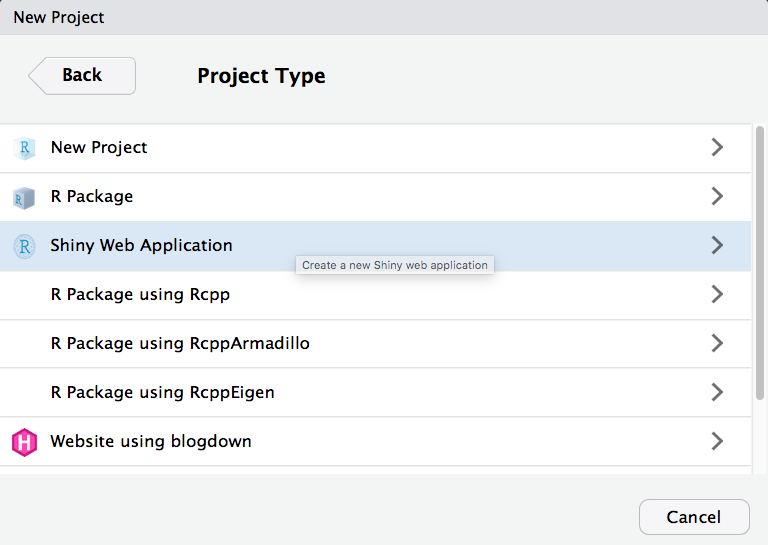
33.2.1 Run the app
Click on Run App in the top right corner of the source pane. The app will open up in a new window. Play with the slider and watch the histogram change.
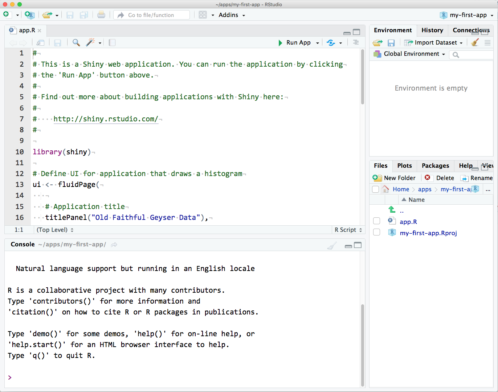
33.2.2 Modify the Demo App
Now we’re going to make a series of changes to the demo app until it’s all your own.
You can close the app by closing the window or browser tab it’s running in, or leave it running while you edit the code. If you have multiple screens, it’s useful to have the app open on one screen and the code on another.
1. Change the title
Change the title to "My First App". Make sure the title is inside quotes and the whole quoted string is inside the parentheses. Save the file.
Then click Run App
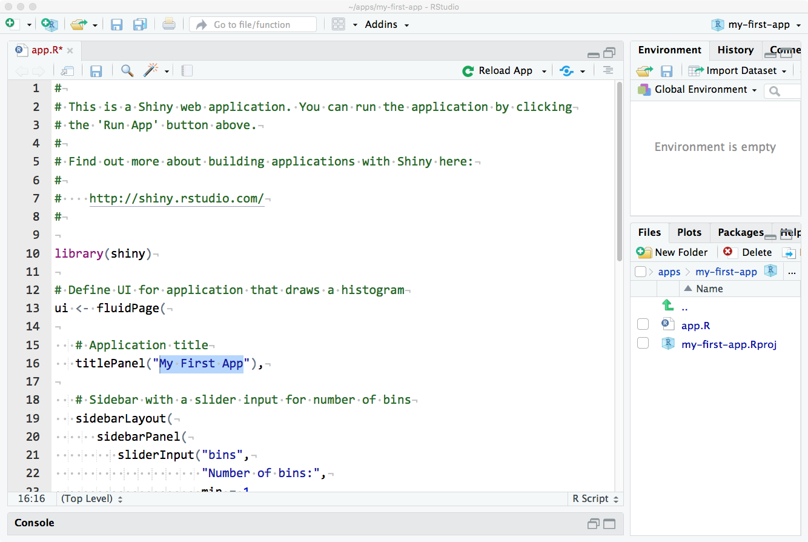
2. Change the input
Now let's change the input. Find the function sliderInput() (line 21). The first argument is the name you can use in the code to find the value of this input, so don't change it just yet. The second argument is the text that displays before the slider. Change this to something else and re-run the app.
See if you can figure out what the next three arguments to sliderInput() do. Change them to different integers, then re-run the app to see what’s changed.
The arguments to the function sidebarPanel() are just a list of things you want to display in the sidebar. To add some explanatory text in a paragraph before sliderInput(), just use the paragraph function p().
sidebarPanel(
p("I am explaining this perfectly"),
sliderInput("bins",
"Choose the best bin number:",
min = 10,
max = 40,
value = 25)
)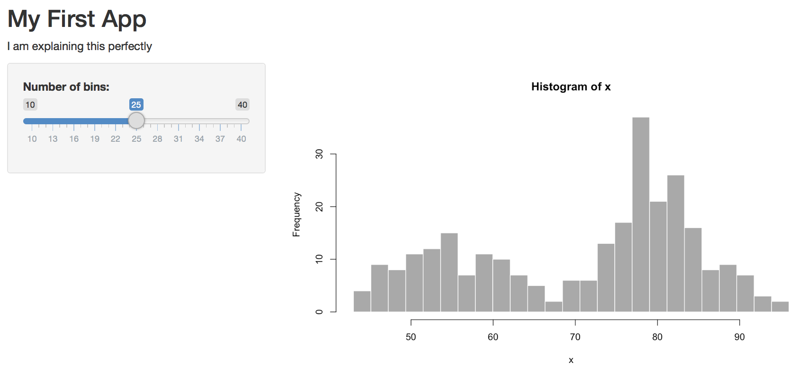
3. Change the layout
I don't like the position of this explanatory text, so we can move this text out of the sidebar and to the top of the page, just under the title. Try this and re-run the app.
# Application title
titlePanel("My First App"),
p("I am explaining this perfectly"),
# Sidebar with a slider input for number of bins
sidebarLayout(...)4. Change some colours
I'm also not keen on the grey plot. We can change the plot colour inside hist()
# draw the histogram with the specified number of bins
hist(x, breaks = bins, col = 'skyblue', border = 'grey30')5. Change the plot
I prefer ggplots, so let's make the plot with geom_histogram() instead of hist() (which is a great function for really quick plots, but not very visually appealing). Since we need several functions from the ggplot2 package, we'll need to load that package at the top of the script, just under where the shiny package is loaded:
You can replace all of the code in renderPlot() with the code below.
output$distPlot <- renderPlot({
# create plot
ggplot(faithful, aes(waiting)) +
geom_histogram(bins = input$bins,
fill = "steelblue3",
colour = "grey30") +
xlab("What are we even plotting here?") +
theme_minimal()
})6.Plot new things
The faithful dataset includes two columns: eruptions and waiting. We've been plotting the waiting variable, but what if you wanted to plot the eruptions variable instead?
Try plotting the eruption time (eruptions) instead of the waiting time. You just have to change one word in ggplot() and update the x-axis label.
We can add another input widget to let the user switch between plotting eruption time and wait time. We'll learn more about the different input options in Section 3. We need to toggle between two options, so we can use either radio buttons or a select box. Radio buttons are probably best if you have only a few options and the user will want to see them all at the same time to decide.
Add the following code as the first argument to sidebarPanel(), which just takes a list of different widgets. radioButtons() is the widget we're using. We'll set four arguments:
inputId: a unique identifier that we will use later in the code to find the value of this widget
label: the text to display to the user
choices: a list of choices in the format c("label1" = "value1", "label2" = "value2", ...)
selected: the value of the default choice
For choices, the label is what gets shown to the user and the value is what gets used by the code (these can be the same, but you often want the user label to be more descriptive).
radioButtons(inputId = "display_var",
label = "Which variable to display",
choices = c("Waiting time to next eruption" = "waiting",
"Eruption time" = "eruptions"),
selected = "waiting"
),Save this and re-run the app.

You should have a radio button interface now. You can click on the options to switch the button, but it won't do anything to your plot yet. We need to edit the plot-generating code to make that happen.
First, we need to change the x-axis label depending on what we're graphing. We use an if/else statement to set the variable xlabel to one thing if input$display_var is equivalent to "eruptions", and to something else if it's equivalent to "waiting". Put this code at the very beginning of the code block for renderPlot() (after the line output$distPlot <- renderPlot({).
# set x-axis label depending on the value of display_var
if (input$display_var == "eruptions") {
xlabel <- "Eruption Time (in minutes)"
} else if (input$display_var == "waiting") {
xlabel <- "Waiting Time to Next Eruption (in minutes)"
}Then we have to edit ggplot() to use the new label and to plot the correct column. The variable input$display_var gives you the user-input value of the widget called "display_var".
# create plot
ggplot(faithful, aes(.data[[input$display_var]])) +
geom_histogram(bins = input$bins,
fill = "steelblue3",
colour = "grey30") +
xlab(xlabel) +
theme_minimal()Re-run your app and see if you can change the data and x-axis label with your new widget.
34 Make our own App
Now that you've seen a basic Shiny app in actin, let's return to the beginning and create our own app.R file. A basic app.R consists of five key parts:
Package Loading: At the top of the script, load any necessary R packages for your app to function. shiny is a requirement, but you can add others like dplyr or ggplot2 as needed. If any packages are missing, you'll encounter an error, so ensure that you have them installed.
# Load the required packages
library(shiny) # Essential for running any Shiny app
library(tidyverse) # Contains readr, dplyr and ggplot2
library(palmerpenguins) # The source of your dataData Loading: Next, load any data necessary for your app. This typically involves reading datasets into R objects. Ensure that you have the data file or source available in the specified format.
UI Object: Create an object called ui that defines the app's user interface. This specifies how the app will appear in the web browser. The fluidPage() function creates a responsive layout that adjusts to the browser window's size. All of your UI code will go inside the curly braces.
Server Object: Create another object called server, which contains the app's logic. Here, you specify how your app computes and creates plots, tables, maps, or any other content based on the user's input. All of the app's logic code will be placed inside the server function.
# Define the server logic
server <- function(input, output) {
# Your server logic will be defined here
}App Execution: Finally, include a command at the end of app.R to run your app. This informs Shiny that the user interface is defined by the ui object, and the server logic (data, plots, tables, etc.) is defined by the server object.
To create your own Shiny app, you should remove any example code generated automatically when you created app.R and replace it with the structure provided above. Check that your final app.R script resembles the following:
By following these steps, you'll have the basic structure of a Shiny app in place, ready for you to add your UI elements and server logic to create an interactive web application.
35 Inputs
Now that you have the basic structure of your Shiny app, you can start adding input and output elements to make it interactive. This example app includes four input widgets: a selectInput for genotype, another selectInput for histogram color, a sliderInput for the number of bins, and a textInput for arbitrary text. These widgets provide information on how to display a histogram and its accompanying table. In the example app, all these widgets are placed in the sidebarPanel. Here's how you can incorporate these widgets into your app:
# Packages ----
library(shiny) # Essential for running any Shiny app
library(tidyverse)
library(palmerpenguins) # The source of your data
# Load the data
penguins <- as_tibble(penguins)
# ui.R ----
ui <- fluidPage(
sidebarLayout(
sidebarPanel(
demo_sp <- selectInput(inputId = "species", # Give the input a name "genotype"
label = "1. Select species", # Give the input a label to be displayed in the app
choices = c("Adelie" = "Adelie", "Chinstrap" = "Chinstrap", "Gentoo" = "Gentoo"), selected = "Adelie"), # Create the choices that can be selected. e.g. Display "Adelie" and link to value "Adelie"
demo_select <- selectInput(inputId = "colour",
label = "2. Select histogram colour",
choices = c("blue","green","red","purple","grey"), selected = "grey"),
demo_slide <- sliderInput(inputId = "bin",
label = "3. Select number of histogram bins",
min=1, max=25, value= c(10)),
demo_text <- textAreaInput(inputId = "text",
label = "4. Enter some text to be displayed",
rows = 5,
placeholder = "Enter some information here")
),
mainPanel(
# Output elements go here
)
)
)
# server.R ----
server <- function(input, output) {
# Your server logic will be defined here
}
# Run the app ----
shinyApp(ui = ui, server = server)In the code above, we've added the input widgets in the sidebarPanel section of your ui object. These widgets allow users to select a genotype, choose a histogram color, set the number of bins for the histogram, and add arbitrary text.
Let's take a moment to understand the selectInput() function and how it's configured:
inputId = "species": This is the unique identifier for this input element. It's crucial for later referencing this input within your app script.
label = "1. Select species": This is the label you want to display above the input in your app. It provides clarity to users by describing the purpose of the input.
choices = c("Adelie" = "Adelie", "Chinstrap" = "Chinstrap", ...): Here, you define a list of choices that will be presented in the dropdown menu. Each choice has two parts: the display label (on the left) and the corresponding value that the app will collect and use in its output (on the right).
selected = "grey": This specifies the default value selected in the dropdown menu when the app is first loaded. In this example, 'grey' will be preselected.
Now that you've grasped how selectInput() works, let's use it to customize your Shiny app further."
The above explanation clarifies the purpose and settings of the selectInput() function, and you can use this understanding to configure other input elements in your Shiny app. Below is a summary of the different Input functions available for Shiny
35.0.1 textInput
textInput creates a one-line box for short text input. The first argument, inputId (the argument name is usually omitted), needs to be a unique string that you cannot use for another input or output in this app.
demo_text <-
textInput("demo_text",
label = "Name",
value = "",
width = "100%",
placeholder = "Your Name")
Experiment with the values of arg("label"),
arg("value"), arg("width"), and
arg("placeholder") to see what they do.
35.0.2 textAreaInput
func("textAreaInput") creates a multi-line box for longer text input.
demo_textarea <-
textAreaInput("demo_textarea",
label = "Biography",
value = "",
width = "100%",
rows = 5,
placeholder = "Tell us something interesting about you.")What is the arg("inputId") of the widget above?
35.0.3 selectInput
func("selectInput") creates a drop-down menu. Set the first arg("choice") to "" to default to NA. If your choices are a named "list" or "vector", the names are what is shown and the values are what is recorded. If the choices aren't named, the displayed and recorded values are the same.
demo_select <-
selectInput("demo_select",
label = "Do you like Shiny?",
choices = list("",
"Yes, I do" = "y",
"No, I don't" = "n"),
selected = NULL,
width = "100%")If you set arg("multiple") to dt(TRUE), you can also make a select where users can choose multiple options.
35.0.4 checkboxGroupInput
However, this interface almost always looks better with func("checkboxGroupInput").
How can you get the checkboxes to display horizontally instead of vertically?
35.0.5 checkboxInput
You can also make a single checkbox with func("checkboxInput"). The arg("value") is dt(TRUE) when checked and dt(FALSE) when not.
func("sliderInput") allows you to choose numbers between a arg("min") and arg("max") value.
demo_slider <- sliderInput("demo_slider",
label = "Age",
min = 0,
max = 100,
value = 0,
step = 1,
width = "100%")
What happens if you change arg("value") or
arg("step")? Try changing arg("value") to
c(10, 20).
35.0.7 dateInput
I find the date interface a little clunky, but...
demo_date <- dateInput("demo_date",
label = "What is your birth date?",
min = "1900-01-01",
max = Sys.Date(),
format = "yyyy-mm-dd",
startview = "year")
IMHO, the default of dt("yyyy-mm-dd") is the best
because it sorts into chronological order.
What would you set arg("format") to in order to display dates like "Sunday July 4, 2021"?
35.0.8 fileInput
Users can upload one or more files with func("fileInput"). The argument arg("accept") lets you limit this to certain file types, but some browsers can bypass this requirement, so it's not fool-proof.
demo_file <- fileInput("demo_file",
label = "Upload a data table",
multiple = FALSE,
accept = c(".csv", ".tsv"),
buttonLabel = "Upload")What would you set arg("accept") to to accept any image file?
Next, you'll need to implement the server logic and output elements in the server.R section. The server logic will define how these inputs affect the display of your histogram and table, but that would require additional code specific to your application's requirements.
Remember that Shiny allows you to create reactive expressions and functions that respond to changes in input values. You can use these reactive expressions to generate the histogram and associated table based on user input.
As you proceed, you can add more details to your server.R to handle these inputs and create the corresponding outputs.
35.1 Exercise
1. Save a separate file with the progress on our penguins app
36 Outputs
# Packages ----
library(shiny) # Essential for running any Shiny app
library(tidyverse)
library(palmerpenguins) # The source of your data
# Load the data
penguins <- as_tibble(penguins)
# ui.R ----
ui <- fluidPage(
sidebarLayout(
sidebarPanel(
demo_sp <- selectInput(inputId = "species", # Give the input a name "genotype"
label = "1. Select species", # Give the input a label to be displayed in the app
choices = c("Adelie" = "Adelie", "Chinstrap" = "Chinstrap", "Gentoo" = "Gentoo"), selected = "Adelie"), # Create the choices that can be selected. e.g. Display "Adelie" and link to value "Adelie"
demo_select <- selectInput(inputId = "colour",
label = "2. Select histogram colour",
choices = c("blue","green","red","purple","grey"), selected = "grey"),
demo_slide <- sliderInput(inputId = "bin",
label = "3. Select number of histogram bins",
min=1, max=25, value= c(10)),
demo_text <- textAreaInput(inputId = "text",
label = "4. Enter some text to be displayed",
rows = 5,
placeholder = "Enter some information here")
),
mainPanel(
# Output elements go here
textOutput("demo_text"),
plotOutput("demo_plot", width = "500px", height="300px"),
DT::dataTableOutput("demo_table",
width = "50%",
height = "auto"),
verbatimTextOutput("demo_verbatim")
)
)
)
# server.R ----
server <- function(input, output) {
# Your server logic will be defined here
output$demo_text <- renderText({
paste("Figure 1.", input$species, input$text)
})
output$demo_plot <- renderPlot({
penguins_filtered <- penguins |>
filter(species == input$species)
ggplot(penguins_filtered, aes(x = flipper_length_mm)) +
geom_histogram(fill = input$colour, show.legend = FALSE, bins = input$bin) +
labs(fill = "Color") +
theme_minimal()
})
output$demo_table <- DT::renderDataTable({
penguins |>
filter(species == input$species) |>
summarise(flipper_length_mm = quantile(flipper_length_mm, c(0.25, 0.5, 0.75), na.rm = T), quantile = c(0.25, 0.5, 0.75))
})
output$demo_verbatim <- renderText({
code <-
paste0("penguins_filtered <- penguins %>%
filter(species == '", input$species,"')
ggplot(penguins_filtered, aes(x = flipper_length_mm)) +
geom_histogram(fill = '", input$colour, "', show.legend = FALSE, bins = ", input$bin, ") +
theme_minimal()")
code
})
}
# Run the app ----
shinyApp(ui = ui, server = server)36.1 Text
func("textOutput") defaults to text inside a generic <span> or <div>.
func("renderText") replaces the text of the linked element with its returned string.
# in the server function
output$demo_text <- renderText({
paste("Figure 1.", input$species, input$text)
})If you use func("verbatimTextOutput") in the UI (no change to the render function), it will show the output in a fixed-width font. This can be good for code or text you want the user to copy.
# in the UI function
verbatimTextOutput("demo_verbatim")
# in the server function
output$demo_verbatim <- renderText({
code <-
paste0("penguins_filtered <- penguins %>%
filter(species == '", input$species,"')
ggplot(penguins_filtered, aes(x = flipper_length_mm)) +
geom_histogram(fill = '", input$colour, "', show.legend = FALSE, bins = ", input$bin, ") +
theme_minimal()")
code
})36.2 Plots
func("plotOutput") displays plots made with the base R plotting functions (e.g., "plot", hist) or ggplot2 functions.
What is the default value for width?
What is the default value for height?
# in the server function
output$demo_plot <- renderPlot({
penguins_filtered <- penguins |>
filter(species == input$species)
ggplot(penguins_filtered, aes(x = flipper_length_mm)) +
geom_histogram(fill = input$colour, show.legend = FALSE, bins = input$bin) +
labs(fill = "Color") +
theme_minimal()
})
If you want to create dynamic plots that change with input, note how
you need to use y = .data[[input\(y]]</code> inside <code>aes</code>, instead of just <code>y = input\)y.
36.3 Images
imageOutput takes the same arguments as plotOutput. You can leave width and height as their defaults if you are going to set those values in the render function.
renderImage needs to return a named list with at least an src with the image path. You can also set the width and height (numeric values are in pixels), class and alt (the alt-text for screen readers).
# in the server function
output$demo_image <- renderImage({
list(src = "images/penguin.jpg",
width = 100,
height = 100,
alt = "A flower")
}, deleteFile = FALSE)
The deleteFile argument is currently optional, but
triggers periodic warnings that it won’t be optional in the future. You
should set it to TRUE if you’re making a temporary file
(this stops unneeded plots using memory) and FALSE if
you’re referencing a file you previously saved.
36.4 Data Tables
Display a table using tableOutput.
This is paired with DT::renderDataTable, which makes a table out of any data frame it returns.
# in the server function
output$demo_table <- DT::renderDataTable({
penguins |>
filter(species == input$species) |>
summarise(flipper_length_mm = quantile(flipper_length_mm, c(0.25, 0.5, 0.75), na.rm = T), quantile = c(0.25, 0.5, 0.75))
})
Note how you need to use .data[[input\(y]]</code> inside <code>dplyr::summarise</code>, instead of just <code>input\)y to
dynamically choose which variable to summarise.
I much prefer DT::dataTableOutput over the basic shiny package dataTableOutput and renderDataTable functions, but they can be buggy. The versions in the DT package are better and have many additional functions, so I use those.
You can use the DT synonyms to make sure you’re not
accidentally using the shiny versions, which don’t have the
same options.
36.5 Emphasis
We can use basic HTML to start customising appearance and emphasis - later we will use the bslib package to give us lots of easy customisation:
p("p creates a paragraph of text."),
p("A new p() command starts a new paragraph. Supply a style attribute to change the format of the entire paragraph.", style = "font-family: 'times'; font-si16pt"),
strong("strong() makes bold text."),
em("em() creates italicized (i.e, emphasized) text."),
br(),
code("code displays your text similar to computer code"),
div("div creates segments of text with a similar style. This division of text is all blue because I passed the argument 'style = color:blue' to div", style = "color:blue"),
br(),
p("span does the same thing as div, but it works with",
span("groups of words", style = "color:blue"),
"that appear inside a paragraph."),
# Packages ----
library(shiny) # Essential for running any Shiny app
library(tidyverse)
library(palmerpenguins) # The source of your data
# Load the data
penguins <- as_tibble(penguins)
# ui.R ----
ui <- fluidPage(
sidebarLayout(
sidebarPanel(
demo_sp <- selectInput(inputId = "species", # Give the input a name "genotype"
label = "1. Select species", # Give the input a label to be displayed in the app
choices = c("Adelie" = "Adelie", "Chinstrap" = "Chinstrap", "Gentoo" = "Gentoo"), selected = "Adelie"), # Create the choices that can be selected. e.g. Display "Adelie" and link to value "Adelie"
demo_select <- selectInput(inputId = "colour",
label = "2. Select histogram colour",
choices = c("blue","green","red","purple","grey"), selected = "grey"),
demo_slide <- sliderInput(inputId = "bin",
label = "3. Select number of histogram bins",
min=1, max=25, value= c(10)),
demo_text <- textAreaInput(inputId = "text",
label = "4. Enter some text to be displayed",
rows = 5,
placeholder = "Enter some information here")
),
mainPanel(
# Output elements go here
tags$ul(
tags$strong(textOutput("demo_sp")), # emphasise text
textOutput("demo_text")),
plotOutput("demo_plot", width = "500px", height="300px"),
DT::dataTableOutput("demo_table",
width = "50%",
height = "auto")
)
)
)
# server.R ----
server <- function(input, output) {
output$demo_sp <- renderText({
paste("Figure 1.", input$species)
})
output$demo_text <- renderText({
(input$text)
})
output$demo_plot <- renderPlot({
penguins_filtered <- penguins |>
filter(species == input$species)
ggplot(penguins_filtered, aes(x = flipper_length_mm)) +
geom_histogram(fill = input$colour, show.legend = FALSE, bins = input$bin) +
labs(fill = "Color") +
theme_minimal()
})
output$demo_table <- DT::renderDataTable({
penguins |>
filter(species == input$species) |>
summarise(flipper_length_mm = quantile(flipper_length_mm, c(0.25, 0.5, 0.75), na.rm = T), quantile = c(0.25, 0.5, 0.75))
})
}
# Run the app ----
shinyApp(ui = ui, server = server)37 Reactive
Reactivity is how Shiny determines which code in server() gets to run when. Some types of objects, such as the input object or objects made by reactiveValues(), can trigger some types of functions to run whenever they change.
In the example below if you move the data filtering outside of renderPlot(), you'll get an error message like "Can't access reactive value outside of reactive consumer." This means that the input values can only be read inside certain functions, like reactive(), observeEvent(), or a render function like renderPlot().
# Packages ----
library(shiny) # Essential for running any Shiny app
library(tidyverse)
library(palmerpenguins) # The source of your data
# Load the data
penguins <- as_tibble(penguins)
# ui.R ----
ui <- fluidPage(
sidebarLayout(
sidebarPanel(
demo_sp <- selectInput(inputId = "species", # Give the input a name "genotype"
label = "1. Select species", # Give the input a label to be displayed in the app
choices = c("Adelie" = "Adelie", "Chinstrap" = "Chinstrap", "Gentoo" = "Gentoo"), selected = "Adelie"), # Create the choices that can be selected. e.g. Display "Adelie" and link to value "Adelie"
demo_select <- selectInput(inputId = "colour",
label = "2. Select histogram colour",
choices = c("blue","green","red","purple","grey"), selected = "grey"),
demo_slide <- sliderInput(inputId = "bin",
label = "3. Select number of histogram bins",
min=1, max=25, value= c(10)),
demo_text <- textAreaInput(inputId = "text",
label = "4. Enter some text to be displayed",
rows = 5,
placeholder = "Enter some information here")
),
mainPanel(
# Output elements go here
tags$ul(
tags$strong(textOutput("demo_sp")),
textOutput("demo_text")),
plotOutput("demo_plot", width = "500px", height="300px"),
DT::dataTableOutput("demo_table",
width = "50%",
height = "auto")
)
)
)
# server.R ----
server <- function(input, output) {
penguins_filtered <- penguins |>
filter(species == input$species)
output$demo_sp <- renderText({
paste("Figure 1.", input$species)
})
output$demo_text <- renderText({
(input$text) # here to trigger the function
})
output$demo_plot <- renderPlot({
ggplot(penguins_filtered, aes(x = flipper_length_mm)) +
geom_histogram(fill = input$colour, show.legend = FALSE, bins = input$bin) +
labs(fill = "Color") +
theme_minimal()
})
output$demo_table <- DT::renderDataTable({
penguins_filtered |>
summarise(flipper_length_mm = quantile(flipper_length_mm, c(0.25, 0.5, 0.75), na.rm = T), quantile = c(0.25, 0.5, 0.75))
})
}
# Run the app ----
shinyApp(ui = ui, server = server)Error in filter(., species == input$species) :
ℹ In argument: `species == input$species`.
Caused by error in `input$species`:
! Can't access reactive value 'species' outside of reactive consumer.
ℹ Do you need to wrap inside reactive() or observe()?
However, we can put the data filtering inside reactive(). This means that whenever an input inside that function changes, the code will run and update the value of data(). This can be useful if you need to recalculate the data table each time the inputs change, and then use it in more than one function.
# Packages ----
library(shiny) # Essential for running any Shiny app
library(tidyverse)
library(palmerpenguins) # The source of your data
# Load the data
penguins <- as_tibble(penguins)
# ui.R ----
ui <- fluidPage(
sidebarLayout(
sidebarPanel(
demo_sp <- selectInput(inputId = "species", # Give the input a name "genotype"
label = "1. Select species", # Give the input a label to be displayed in the app
choices = c("Adelie" = "Adelie", "Chinstrap" = "Chinstrap", "Gentoo" = "Gentoo"), selected = "Adelie"), # Create the choices that can be selected. e.g. Display "Adelie" and link to value "Adelie"
demo_select <- selectInput(inputId = "colour",
label = "2. Select histogram colour",
choices = c("blue","green","red","purple","grey"), selected = "grey"),
demo_slide <- sliderInput(inputId = "bin",
label = "3. Select number of histogram bins",
min=1, max=25, value= c(10)),
demo_text <- textAreaInput(inputId = "text",
label = "4. Enter some text to be displayed",
rows = 5,
placeholder = "Enter some information here")
),
mainPanel(
# Output elements go here
tags$ul(
tags$strong(textOutput("demo_sp")),
textOutput("demo_text")),
plotOutput("demo_plot", width = "500px", height="300px"),
DT::dataTableOutput("demo_table",
width = "50%",
height = "auto")
)
)
)
# server.R ----
server <- function(input, output) {
penguins_filtered <- reactive({
penguins |>
filter(species == input$species)
})
output$demo_sp <- renderText({
paste("Figure 1.", input$species)
})
output$demo_text <- renderText({
(input$text)
})
output$demo_plot <- renderPlot({
ggplot(penguins_filtered(), aes(x = flipper_length_mm)) +
geom_histogram(fill = input$colour, show.legend = FALSE, bins = input$bin) +
labs(fill = "Color") +
theme_minimal()
})
output$demo_table <- DT::renderDataTable({
penguins_filtered() |>
summarise(flipper_length_mm = quantile(flipper_length_mm, c(0.25, 0.5, 0.75), na.rm = T), quantile = c(0.25, 0.5, 0.75))
})
}
# Run the app ----
shinyApp(ui = ui, server = server)My most common error is trying to use data or title as an object instead of as a function. Notice how the first argument to ggplot is no longer data, but data() and you set the value of data with data(newdata), not data <- newdata. For now, just remember this as a quirk of shiny.
37.1 Observable
What if you only want to update things when an update button is clicked, and not whenever the user changes an option?
observeEvent(). This function runs the code whenever the value of the first argument changes. If there are reactive values inside the function, they won't trigger the code to run when they change.
# Packages ----
library(shiny) # Essential for running any Shiny app
library(tidyverse)
library(palmerpenguins) # The source of your data
# Load the data
penguins <- as_tibble(penguins)
# ui.R ----
ui <- fluidPage(
sidebarLayout(
sidebarPanel(
demo_sp <- selectInput(inputId = "species", # Give the input a name "genotype"
label = "1. Select species", # Give the input a label to be displayed in the app
choices = c("Adelie" = "Adelie", "Chinstrap" = "Chinstrap", "Gentoo" = "Gentoo"), selected = "Adelie"), # Create the choices that can be selected. e.g. Display "Adelie" and link to value "Adelie"
demo_select <- selectInput(inputId = "colour",
label = "2. Select histogram colour",
choices = c("blue","green","red","purple","grey"), selected = "grey"),
demo_slide <- sliderInput(inputId = "bin",
label = "3. Select number of histogram bins",
min=1, max=25, value= c(10)),
demo_text <- textAreaInput(inputId = "text",
label = "4. Enter some text to be displayed",
rows = 5,
placeholder = "Enter some information here"),
demo_button <- actionButton("update", "Plot")
),
mainPanel(
# Output elements go here
tags$ul(
tags$strong(textOutput("demo_sp")),
textOutput("demo_text")),
plotOutput("demo_plot", width = "500px", height="300px"),
DT::dataTableOutput("demo_table",
width = "50%",
height = "auto")
)
)
)
# server.R ----
server <- function(input, output) {
observeEvent(input$update, {
penguins_filtered <- penguins |>
filter(species == input$species)
bins <- input$bin
colour <- input$colour
output$demo_sp <- renderText({
paste("Figure 1.", input$species)
})
output$demo_text <- renderText({
(input$text)
})
output$demo_plot <- renderPlot({
ggplot(penguins_filtered, aes(x = flipper_length_mm)) +
geom_histogram(fill = colour, show.legend = FALSE, bins = bins) +
labs(fill = "Color") +
theme_minimal()
})
output$demo_table <- DT::renderDataTable({
penguins_filtered |>
summarise(flipper_length_mm = quantile(flipper_length_mm, c(0.25, 0.5, 0.75), na.rm = T), quantile = c(0.25, 0.5, 0.75))
})
})
}
# Run the app ----
shinyApp(ui = ui, server = server)Q. Which things are now updated by the plot button?
38 Shiny Dashboards
bslib is an R package that extends Bootstrap 4 and allows you to customize the appearance and style of your Shiny applications or R Markdown documents. With bslib, you can easily modify the look and feel of your Shiny apps by defining custom themes, colors, fonts, and other visual aspects.
It provides a flexible way to create a consistent and visually appealing design for your Shiny applications without having to write extensive CSS code.
You can use bslib functions like bs_theme(), to define and apply custom styles to your Shiny app.
# Packages ----
library(shiny) # Essential for running any Shiny app
library(tidyverse)
library(palmerpenguins) # The source of your data
library(bslib)
# Load the data
penguins <- as_tibble(penguins)
# Calculate column means for the value boxes
means <- penguins |>
group_by(species) |>
summarise(mean = round(mean(flipper_length_mm, na.rm = T), 2))
# Turn on thematic for theme-matched plots
thematic::thematic_shiny(font = "auto")
theme_set(theme_bw(base_size = 16))
# ui.R ----
ui <- page_sidebar(
title = "Penguins flipper dashboard",
sidebar = sidebar(
demo_sp <- selectInput(inputId = "species", # Give the input a name "genotype"
label = "1. Select species", # Give the input a label to be displayed in the app
choices = c("Adelie" = "Adelie", "Chinstrap" = "Chinstrap", "Gentoo" = "Gentoo"), selected = "Adelie"), # Create the choices that can be selected. e.g. Display "Adelie" and link to value "Adelie"
demo_select <- selectInput(inputId = "colour",
label = "2. Select histogram colour",
choices = c("blue","green","red","purple","grey"), selected = "grey"),
demo_slide <- sliderInput(inputId = "bin",
label = "3. Select number of histogram bins",
min=1, max=25, value= c(10)),
demo_text <- textAreaInput(inputId = "text",
label = "4. Enter some text to be displayed",
rows = 5,
placeholder = "Enter some information here"),
demo_button <- actionButton("update", "Plot")
)
,
layout_columns(
fill = FALSE,
value_box(
title = "Adelie Flipper Length",
value = scales::unit_format(unit = "mm")(means[[1,2]]),
showcase = bsicons::bs_icon("align-bottom"),
theme_color = "grey"
),
value_box(
title = "Chinstrap Flipper",
value = scales::unit_format(unit = "mm")(means[[2,2]]),
showcase = bsicons::bs_icon("align-center"),
theme_color = "grey"
),
value_box(
title = "Gentoo Flipper Length",
value = scales::unit_format(unit = "mm")(means[[3,2]]),
showcase = bsicons::bs_icon("align-top"),
theme_color = "grey"
)
),
tags$ul(
tags$strong(textOutput("demo_sp")),
textOutput("demo_text")),
# Output elements go here
layout_columns(
card(
full_screen = TRUE,
card_header("Plot"),
plotOutput("demo_plot")
),
card(
full_screen = TRUE,
card_header("Table"),
DT::dataTableOutput("demo_table",
width = "100%",
height = "auto")
)
)
)
# server.R ----
server <- function(input, output) {
observeEvent(input$update, {
penguins_filtered <- penguins |>
filter(species == input$species)
bins <- input$bin
colour <- input$colour
output$demo_sp <- renderText({
paste("Figure 1.", input$species)
})
output$demo_text <- renderText({
(input$text)
})
output$demo_plot <- renderPlot({
ggplot(penguins_filtered, aes(x = flipper_length_mm)) +
geom_histogram(fill = colour, show.legend = FALSE, bins = bins) +
labs(fill = "Color") +
theme_minimal(base_size = 16)
})
output$demo_table <- DT::renderDataTable({
penguins_filtered |>
summarise(flipper_length_mm = quantile(flipper_length_mm, c(0.25, 0.5, 0.75), na.rm = T), quantile = c(0.25, 0.5, 0.75))
})
})
}
# Run the app ----
shinyApp(ui = ui, server = server)38.0.1 Themable Dashboards
Adding the bstheme() function to the server adds real time theme changes to dashboards.
# Packages ----
library(shiny) # Essential for running any Shiny app
library(tidyverse)
library(palmerpenguins) # The source of your data
library(bslib)
# Load the data
penguins <- as_tibble(penguins)
# Turn on thematic for theme-matched plots
thematic::thematic_shiny(font = "auto")
theme_set(theme_bw(base_size = 16))
# Calculate column means for the value boxes
means <- penguins |>
group_by(species) |>
summarise(mean = round(mean(flipper_length_mm, na.rm = T), 2))
# Turn on thematic for theme-matched plots
thematic::thematic_shiny(font = "auto")
theme_set(theme_bw(base_size = 16))
# ui.R ----
ui <- page_sidebar(
title = "Penguins flipper dashboard",
sidebar = sidebar(
demo_sp <- selectInput(inputId = "species", # Give the input a name "genotype"
label = "1. Select species", # Give the input a label to be displayed in the app
choices = c("Adelie" = "Adelie", "Chinstrap" = "Chinstrap", "Gentoo" = "Gentoo"), selected = "Adelie"), # Create the choices that can be selected. e.g. Display "Adelie" and link to value "Adelie"
demo_select <- selectInput(inputId = "colour",
label = "2. Select histogram colour",
choices = c("blue","green","red","purple","grey"), selected = "grey"),
demo_slide <- sliderInput(inputId = "bin",
label = "3. Select number of histogram bins",
min=1, max=25, value= c(10)),
demo_text <- textAreaInput(inputId = "text",
label = "4. Enter some text to be displayed",
rows = 5,
placeholder = "Enter some information here"),
demo_button <- actionButton("update", "Plot")
)
,
layout_columns(
fill = FALSE,
value_box(
title = "Adelie Flipper Length",
value = scales::unit_format(unit = "mm")(means[[1,2]]),
showcase = bsicons::bs_icon("align-bottom"),
theme_color = "grey"
),
value_box(
title = "Chinstrap Flipper",
value = scales::unit_format(unit = "mm")(means[[2,2]]),
showcase = bsicons::bs_icon("align-center"),
theme_color = "grey"
),
value_box(
title = "Gentoo Flipper Length",
value = scales::unit_format(unit = "mm")(means[[3,2]]),
showcase = bsicons::bs_icon("align-top"),
theme_color = "grey"
)
),
tags$ul(
tags$strong(textOutput("demo_sp")),
textOutput("demo_text")),
# Output elements go here
layout_columns(
card(
full_screen = TRUE,
card_header("Plot"),
plotOutput("demo_plot")
),
card(
full_screen = TRUE,
card_header("Table"),
DT::dataTableOutput("demo_table",
width = "100%",
height = "auto")
)
)
)
# server.R ----
server <- function(input, output) {
bs_themer()
observeEvent(input$update, {
penguins_filtered <- penguins |>
filter(species == input$species)
bins <- input$bin
colour <- input$colour
output$demo_sp <- renderText({
paste("Figure 1.", input$species)
})
output$demo_text <- renderText({
(input$text)
})
output$demo_plot <- renderPlot({
ggplot(penguins_filtered, aes(x = flipper_length_mm)) +
geom_histogram(fill = colour, colour = "black", show.legend = FALSE, bins = bins) +
labs(fill = "Color") +
theme_minimal(base_size = 16)
})
output$demo_table <- DT::renderDataTable({
penguins_filtered |>
summarise(flipper_length_mm = quantile(flipper_length_mm, c(0.25, 0.5, 0.75), na.rm = T), quantile = c(0.25, 0.5, 0.75))
})
})
}
# Run the app ----
shinyApp(ui = ui, server = server)38.0.2 Reading
Check out the bslib information (https://rstudio.github.io/bslib/index.html)
As well as this short article on updates and changes with follow-along examples https://shiny.posit.co/blog/posts/bslib-dashboards/
39 Sharing
39.1 Shiny Apps
The easiest way to share your apps is with (https://shinyapps.io)
- Open
Tools > Global Options ... - Go to the
Publishingtab - Click the
Connectbutton and choose ShinyApps.io - Click on the link to go to your account
- Click the
Sign Upbutton andSign up with GitHub - You should now be in your shinyapps.io dashboard; click on your name in the upper right and choose
Tokens - Add a token
- Click
Shownext to the token and copy the text to the clipboard
- Go back to RStudio and paste the text in the box and click
Connect Account - Make sure the box next to "Enable publishing..." is ticked, click
Apply, and close the options window
## R version 4.3.1 (2023-06-16)
## Platform: x86_64-pc-linux-gnu (64-bit)
## Running under: Ubuntu 20.04.6 LTS
##
## Matrix products: default
## BLAS: /usr/lib/x86_64-linux-gnu/atlas/libblas.so.3.10.3
## LAPACK: /usr/lib/x86_64-linux-gnu/atlas/liblapack.so.3.10.3; LAPACK version 3.9.0
##
## locale:
## [1] LC_CTYPE=C.UTF-8 LC_NUMERIC=C LC_TIME=C.UTF-8
## [4] LC_COLLATE=C.UTF-8 LC_MONETARY=C.UTF-8 LC_MESSAGES=C.UTF-8
## [7] LC_PAPER=C.UTF-8 LC_NAME=C LC_ADDRESS=C
## [10] LC_TELEPHONE=C LC_MEASUREMENT=C.UTF-8 LC_IDENTIFICATION=C
##
## time zone: UTC
## tzcode source: system (glibc)
##
## attached base packages:
## [1] stats graphics grDevices utils datasets methods base
##
## other attached packages:
## [1] knitr_1.43 webexercises_1.1.0 glossary_1.0.0 lubridate_1.9.2
## [5] forcats_1.0.0 stringr_1.5.0 dplyr_1.1.2 purrr_1.0.1
## [9] readr_2.1.4 tidyr_1.3.0 tibble_3.2.1 ggplot2_3.4.2
## [13] tidyverse_2.0.0
##
## loaded via a namespace (and not attached):
## [1] sass_0.4.6 utf8_1.2.3 generics_0.1.3 xml2_1.3.5
## [5] stringi_1.7.12 hms_1.1.3 digest_0.6.33 magrittr_2.0.3
## [9] evaluate_0.21 grid_4.3.1 timechange_0.2.0 bookdown_0.34
## [13] fastmap_1.1.1 jsonlite_1.8.7 fansi_1.0.4 scales_1.2.1
## [17] jquerylib_0.1.4 cli_3.6.1 rlang_1.1.1 munsell_0.5.0
## [21] withr_2.5.0 cachem_1.0.8 yaml_2.3.7 tools_4.3.1
## [25] tzdb_0.4.0 memoise_2.0.1 colorspace_2.1-0 vctrs_0.6.3
## [29] R6_2.5.1 lifecycle_1.0.3 fs_1.6.2 pkgconfig_2.0.3
## [33] pillar_1.9.0 bslib_0.5.0 gtable_0.3.3 glue_1.6.2
## [37] xfun_0.39 tidyselect_1.2.0 rstudioapi_0.15.0 htmltools_0.5.5
## [41] rmarkdown_2.23 compiler_4.3.1 downlit_0.4.339.2 Github
GitHub is a great place to organise and share your code using version control. You can also use it to host Shiny app code for others to download and run on their own computer. You can share your ShinyApp in the same way you would share any R project.
39.3 In an R package
You can put your app in a custom R package to make it even easier for people to run the app. The usethis package is incredibly helpful for setting up packages. But this is beyond the scope of this class.
39.4 Further Reading
https://www.jumpingrivers.com/blog/r-shiny-customising-shinydashboard/#:~:text=The%20main%20way%20of%20including,css%20by%20convention.
(PART*) Literate Programming and Reproducibility
40 RMarkdown

R Markdown is a widely-used tool for creating automated, reproducible, and share-worthy outputs, such as reports. It can generate static or interactive outputs, in Word, pdf, html, Powerpoint slides, and many other formats.
An R Markdown script combines R code and text such that the script actually becomes your output document. You can create an entire formatted document, including narrative text (can be dynamic to change based on your data), tables, figures, bullets/numbers, bibliographies, etc.
Documents produced with Rmarkdown, allow analyses to be included easily - and make the link between raw data, analysis & and a published report completely reproducible.
With Rmarkdown we can make reproducible html, word, pdf, powerpoints or websites and dashboards3
How it works
To create an R Markdown document in RStudio, go to File > New File > R Markdown. Choose a title, author, and date, as well as your default output format (HTML, PDF, or Word). These values can be changed later. Click OK, and RStudio will create an R Markdown document with some placeholder content.

Delete this content and replace it with your own. As an example, let’s create a report about penguins using data from the palmerpenguins package. I’ve separated the data by year, and we’ll use just the 2007 data. Add the following content to add to your R Markdown document:
---
title: "Penguins Report"
author: "Phil"
date: "2024-01-12"
output: word_document
---
``{r setup, include = FALSE}
knitr::opts_chunk$set(include = TRUE,
echo = FALSE,
message = FALSE,
warning = FALSE)
``
``{r}
library(tidyverse)
``
``{r}
penguins_raw <- read_csv("https://raw.githubusercontent.com/UEABIO/data-sci-v1/main/book/files/penguins_raw.csv")
``
# Introduction
We are writing a report about the **Palmer Penguins**. These penguins are *really* amazing. There are three species:
- Adelie
- Gentoo
- Chinstrap
## Bill Length
We can make a histogram to see the distribution of bill lengths.
``{r}
penguins_raw |>
ggplot(aes(x = bill_length_mm)) +
geom_histogram() +
theme_minimal()
``
``{r}
average_bill_length <- penguins_raw |>
summarize(avg_bill_length = mean(bill_length_mm,
na.rm = TRUE)) |>
pull(avg_bill_length)
``
The chart shows the distribution of bill lengths. The average bill length is `r average_bill_length` millimeters.This document contains several sections, each of which we will discuss below. First, though, let’s skip to the finish line by doing what’s called knitting our document. The Knit button at the top of RStudio converts the R Markdown document into whatever format we selected.
To make your Rmd publish - hit the knit button at the top of the doc

We’ve set the output format to be HTML (see the output_format: html). Some features are not immediately visible in R Markdown that do appear in the rendered document, including the histogram. This is because the R Markdown document doesn’t directly include this plot. Rather, it includes the code needed to produce the plot when knitted.
It may seem convoluted to constantly knit R Markdown documents to Word, but this workflow allows us to update our reports at any point with new code or data. This ability is known as reproducibility, and it is central to the value of R Markdown.
Background to Rmarkdown
Markdown is a “language” that allows you to write a document using plain text, that can be converted to html and other formats. It is not specific to R. Files written in Markdown have a ‘.md’ extension.
R Markdown: is a variation on markdown that is specific to R - it allows you to write a document using markdown to produce text and to embed R code and display their outputs. R Markdown files have ‘.Rmd’ extension.
rmarkdown - the package: This is used by R to render the .Rmd file into the desired output. It’s focus is converting the markdown (text) syntax, so we also need…
knitr: This R package Xie (2023) will read the code chunks, execute it, and ‘knit’ it back into the document. This is how tables and graphs are included alongside the text.
Pandoc: Finally, pandoc actually convert the output into word/pdf/powerpoint etc. It is a software separate from R but is installed automatically with RStudio.
Most of this process happens in the background (you do not need to know all these steps!) and it involves feeding the .Rmd file to knitr, which executes the R code chunks and creates a new .md (Markdown) file which includes the R code and its rendered output.
The .md file is then processed by pandoc to create the finished product: a Microsoft Word document, HTML file, Powerpoint document, pdf, etc.

Rmarkdown parts
As you can see, there are three basic components to any Rmd file:
YAML
Markdown text
R code chunks.

YAML Metadata
The YAML section is the very beginning of an R Markdown document. The name YAML comes from the recursive acronym YAML ain’t markup language, whose meaning isn’t important for our purposes. Three dashes indicate its beginning and end, and the text inside of it contains metadata about the R Markdown document. Here is my YAML:
As you can see, it provides the title, author, date, and output format. All elements of the YAML are given in key: value syntax, where each key is a label for a piece of metadata (for example, the title) followed by a value in quotes.
In the example above, because we clicked that our default output would be an html file, we can see that the YAML says output: html_document. However we can also change this to say powerpoint_presentation or word_document or even pdf_document.
Can you edit the YAML in the Rmarkdown file in the markdown folder to have your name as author, today’s date and the title of the file should be called “Penguins of the Palmer Archipelago, Antarctica”.
Code chunks
R Markdown documents have a different structure from the R script files you might be familiar with (those with the .R extension). R script files treat all content as code unless you comment out a line by putting a pound sign (#) in front of it. In the following code, the first line is a comment while the second line is code.
In R Markdown, the situation is reversed. Everything after the YAML is treated as text unless we specify otherwise by creating what are known as code chunks. Each chunk is opened with a line that starts with three back-ticks, and curly brackets that contain parameters for the chunk { }. The chunk ends with three more back-ticks.
R Markdown treats anything in the code chunk as R code when we knit. For example, this code chunk will produce a histogram in the final Word document.
Some notes about the contents of the curly brackets { }:
They start with ‘r’ to indicate that the language name within this chunk is R. It is possible to include other programming language chunks here such as SQL, Python or Bash.
After the r you can optionally write a chunk “name” – these are not necessary but can help you organise your work. Note that if you name your chunks, you should ALWAYS use unique names or else R will complain when you try to render.
After the language name and optional chunk name put a comma, then you
can include other options too, written as tag=value, such
as:
-
eval = FALSE to not run the R code
-
echo = FALSE to not print the chunk’s R source code in the output document
-
warning = FALSE to not print warnings produced by the R code
-
message = FALSE to not print any messages produced by the R code
-
include = either TRUE/FALSE whether to include chunk outputs (e.g. plots) in the document
-
out.width = and out.height = - size of ouput e.g. out.width = “75%”
-
fig.align = “center” adjust how a figure is aligned across the page
-
fig.show=‘hold’ if your chunk prints multiple figures and you want them printed next to each other (pair with out.width = c(“33%”, “67%”).
A special code chunk at the top of each R Markdown document, known as the setup code chunk, gives instructions for what should happen when knitting a document.
In cases where you’re using R Markdown to generate a report for a non-R user, you likely want to hide the code, messages, and warnings but show the output (which would include any visualizations you generate). To do this, create a setup code chunk that looks like this:
The include = FALSE option on the first line applies to the setup code chunk itself. It tells R Markdown to not include the output of the setup code chunk when knitting. The options within knitr::opts_chunk$set() apply to all future code chunks. However, you can also override these global code chunk options on individual chunks. If I wanted my document to show both the plot itself and the code used to make it, I could set echo = TRUE for that code chunk only:
Text
This is the narrative of your document, including the titles and headings. It is written in the “markdown” language, which is used across many different software.
Below are the core ways to write this text. See more extensive documentation available on R Markdown “cheatsheets” at the RStudio website4.
New lines
Uniquely in R Markdown, to initiate a new line, enter *two spaces** at the end of the previous line and then Enter/Return.
Text emphasis
Surround your normal text with these characters to change how it appears in the output.
Underscores (_text_) or single asterisk (*text*) to italicise
Double asterisks (**text**) for bold text
Back-ticks (` text `) to display text as code
The actual appearance of the font can be set by using specific templates (specified in the YAML metadata).
Titles and headings
A hash symbol in a text portion of a R Markdown script creates a heading. This is different than in a chunk of R code in the script, in which a hash symbol is a mechanism to comment/annotate/de-activate, as in a normal R script.
Different heading levels are established with different numbers of hash symbols at the start of a new line. One hash symbol is a title or primary heading. Two hash symbols are a second-level heading. Third- and fourth-level headings can be made with successively more hash symbols.
# First-level heading / Title
## Second level heading
### Third-level heading
Bullets and numbering
Use asterisks (*) to created a bullets list. Finish the previous sentence, enter two spaces, Enter/Return twice, and then start your bullets. Include a space between the asterisk and your bullet text. After each bullet enter two spaces and then Enter/Return. Sub-bullets work the same way but are indented. Numbers work the same way but instead of an asterisk, write 1), 2), etc. Below is how your R Markdown script text might look.
Here are my bullets (there are two spaces after this colon):
* Bullet 1 (followed by two spaces and Enter/Return)
* Bullet 2 (followed by two spaces and Enter/Return)
* Sub-bullet 1 (followed by two spaces and Enter/Return)
* Sub-bullet 2 (followed by two spaces and Enter/Return) In-text code
You can also include minimal R code within back-ticks. Within the back-ticks, begin the code with “r” and a space, so RStudio knows to evaluate the code as R code. See the example below.
This book was printed on `r Sys.Date()`
When typed in-line within a section of what would otherwise be Markdown text, it knows to produce an r output instead:
This book was printed on 2023-11-09
Running code
You can run the code in an R Markdown document in two ways. The first way is by knitting the entire document. The second way is to run code chunks manually (also known as interactively) by hitting the little green play button at the top-right of a code chunk. The down arrow next to the green play button will run all code until that point.

The one downside to running code interactively is that you can sometimes make mistakes that cause your R Markdown document to fail to knit. That is because, in order to knit, an R Markdown document must contain all the code it uses. If you are working interactively and, say, load data from a separate file, you will be unable to knit your document. When working in R Markdown, always keep all code within a single document.
The code must also always appear in the right order.
Useful tips
The working directory for .rmd files is a little different to working with scripts.
With a .Rmd file, the working directory is wherever the Rmd file itself is saved.
For example if you have your .Rmd file in a subfolder
~/markdownfiles/markdown.Rmd the code for read_csv(“data/data.csv”)
within the markdown will look for a .csv file in a
subfolder called data inside the ‘markdown’ folder and not the
root project folder where the .RProj file lives.
So we have two options when using .Rmd files
-
Don’t put the .Rmd file in a subfolder and make sure it lives in the same directory as your .RProj file - that way relative filepaths are the same between R scripts and Rmarkdown files
-
Use the
herepackage to describe file locations - more later
Exercises: Setting code chunks
Question 1. The global option for this document is set to show the R code used to render chunks
knitr::opts_chunk$set(echo = TRUE)
Question 2. Options set in individual code chunks override the global options
In the second chunk we see echo = FALSE and this has prevented the code from being printed, we only see the rendered output
Question 3. If we wanted to see the R code, but not its output we need to select what combo of code chunk options?
For a relatively simple report, you may elect to organize your R Markdown script such that it is “self-contained” and does not involve any external scripts.
Set up your Rmd file to 'read' the penguins data file.
Everything you need to run the R markdown is imported or created within the Rmd file, including all the code chunks and package loading. This “self-contained” approach is appropriate when you do not need to do much data processing (e.g. it brings in a clean or semi-clean data file) and the rendering of the R Markdown will not take too long.
In this scenario, one logical organization of the R Markdown script might be:
Set global knitr options
Load packages
Import data
Process data
Produce outputs (tables, plots, etc.)
Save outputs, if applicable (.csv, .png, etc.)
Heuristic file paths with here()
The package here Müller (2020) and its function here() (here::here()), make it easy to tell R where to find and to save your files - in essence, it builds file paths. It becomes especially useful for dealing with the alternate filepaths generated by .Rmd files, but can be used for exporting/importing any scripts, functions or data.
This is how here() works within an R project:
When the
herepackage is first loaded within the R project, it places a small file called “.here” in the root folder of your R project as a “benchmark” or “anchor”In your scripts, to reference a file in the R project’s sub-folders, you use the function
here()to build the file path in relation to that anchorTo build the file path, write the names of folders beyond the root, within quotes, separated by commas, finally ending with the file name and file extension as shown below
here()file paths can be used for both importing and exporting
So when you use here() wrapped inside other functions for importing/exporting (like read_csv() or ggsave()) if you include here() you can still use the RProject location as the root directory when 'knitting' Rmarkdown files, even if your markdown is tidied away into a separate sub-folder.
This means your previous relative filepaths should be replaced with:
```{r, include=FALSE}
# GLOBAL KNITR OPTIONS ----
knitr::opts_chunk$set(echo = TRUE)
# ____________________----
# PACKAGES ----
library(tidyverse)
library(here)
``````{r, include=FALSE}
# READ DATA ----
penguins <- read_csv(here("data", "penguins_raw.csv"))
head(penguins)
```Try replacing your previous code with the examples above then re-knitting your .Rmd file.
You might want start using the here() from now on to
read in and export data from scripts. Make sure you are consistent in
whether you use here() heuristic file paths or relative
file paths across all .R and .Rmd files in a project -
otherwise you might encounter errors.
Activity: Can you change the global options of your Rmd file so that it doesn't display any code, warnings or messages?
Once you have made your edits to the chunk options try hitting 'knit' again.
ggplot
Size options for figures
fig.widthandfig.heightenable to set width and height of R produced figures. The default value is set to 7 (inches). When I play with these options, I prefer using only one of them (fig.width).fig.aspsets the height-to-width ratio of the figure. It’s easier in my mind to play with this ratio than to give a width and a height separately. The default value of fig.asp is NULL but I often set it to(0.8), which often corresponds to the expected result.
Size options of figures produced by R have consequences on relative sizes of elements in this figures. For a ggplot2 figure, these elements will remain to the size defined in the used theme, whatever the chosen size of the figure. Therefore a huge size can lead to a very small text and vice versa.
The base font size is 11 pts by default. You can change it with the
base_size argument in the theme you’re using.
penguin_colours <- c("darkolivegreen4", "darkorchid3", "goldenrod1")
plot <- penguins %>%
ggplot(aes(x=flipper_length_mm,
y = body_mass_g))+
geom_point(aes(colour=species))+
scale_color_manual(values=penguin_colours)+
theme_minimal(base_size = 11)

To find the result you like, you’ll need to combine sizes set in your theme and set in the chunk options. With my customised theme, the default size (7) looks good to me.

When texts axis are longer or when figures is overloaded, you can choose bigger size (8 or 9) to relatively reduce the figure elements. it’s worth noting that for the text sizes, you can also modify the base size in your theme to obtain similar figures.
```{r fig.asp = 0.8, fig.width = 7}
plot + theme(base_size = 14)
# figure width stays the same, but modify the text size in ggplot
```
Size of final figure in document
With the previous examples, you could see the relative size of the elements within th figures was changed - but the area occupied by the figures remained the same. In order to change this I need out.width or out.height
Figures made with R in a R Markdown document are exported (by default in png format) and then inserted into the final rendered document. Options out.width and out.height enable us to choose the size of the figure in the final document.
It is rare I need to re-scale height-to-width ratio after the figures were produced with R and this ratio is kept if you modify only one option therefore I only use out.width. i like to use percentage to define the size of output figures. For example hre with a size set to 50%
```{r fig.asp = 0.8, fig.width = 7, out.width = "50%"}
plot
# The final rendered size of the image changes according to out.width
```
Changing default values of chunk options
You can also change default values of chunk options by writing this at the beginning of your R Markdown document.
```{r setup, include=FALSE}
knitr::opts_chunk$set(
fig.width = 6,
fig.asp = 0.8,
out.width = "80%"
)
```These values will be applied for all chunks unless you specify other value in a chunk locally. You can set values often used (which differ from the default one) and avoid repeating them for each chunk.
Static images
You can include images in your R Markdown:
Tables
Markdown tables
| Syntax | Description |
| ----------- | ----------- |
| Header | Title |
| Paragraph | Text |
Which will render as this
| Syntax | Description |
|---|---|
| Header | Title |
| Paragraph | Text |
gt()
The gt Iannone et al. (2023) package is all about making it simple to produce nice-looking display tables. It has a lot of customisation options.
penguins |>
group_by(species) |>
summarise(`Body Mass (g)`= mean(body_mass_g, na.rm = T),
`Flipper Length (mm)`= mean(flipper_length_mm, na.rm = T)) |>
gt::gt()| species | Body Mass (g) | Flipper Length (mm) |
|---|---|---|
| Adelie | 3700.662 | 189.9536 |
| Chinstrap | 3733.088 | 195.8235 |
| Gentoo | 5076.016 | 217.1870 |
You won’t be able to see these tables unless you try re-knitting your .Rmd file.
Source files
One variation of the “self-contained” approach is to have R Markdown code chunks “source” (run) other R scripts.
This can make your R Markdown script less cluttered, more simple, and easier to organize. It can also help if you want to display final figures at the beginning of the report.
In this approach, the final R Markdown script simply combines pre-processed outputs into a document. We already used the source() function to feed R objects from one script to another, now we can do the same thing to our report.
The advantage is all the data cleaning and organising happens "elsewhere" and we don't need to repeat our code. If you make any changes in your analysis scripts, these will be reflected by changes in your report the next time you compile (knit) it.
source("scripts/your-script.R")
Don’t try using here() unless ALL of your script
dependencies ALSO use this. When knitting an Rmd file it treats the
absolute file path as relative to the .Rmd file (even when running
scripts written outside of the document).
This is why it’s usually simpler to save your .Rmd file in the same place as your .RProj file
Activity: Connecting scripts and reports
Create a new Rmarkdown file.
Create a new .R file
Save this (without changes) to the same folder as your
.Rprojfile and call itlinked_report_penguins.Rmd.
We will now source pre-written scripts for data loading and wrangling in your R project, just use the source command to read in this script - then you can call objects made externally - in this case a penguin plot - put the code block in and hit knit.
Activity: Test yourself
Make any summary figure you want from the penguins data with
ggplotMake a summary table with
summariseand make it beautiful withkableExtraorgt()Write a few sentences explaining what you are presenting
Knit the report to html
Use chunk options to optimise your figure layout and text and make it so that raw code and rendered outputs are visible. An example of literate programming
Hygiene tips
I recommend having three chunks at the top of any document
Global chunk options
All packages
Reading data
Common knit issues
Any of these issues will cause the Rmd document to fail to knit in its entirety. A failed knit is usually an easy fix, but needs you to READ the error message, and do a little detective work.
Not the right order
plot(my_table)
my_table <- table(mtcars$cyl)Forgotten trails
: Missing “,”, or “(”, “}”, or “’”
Path not taken
The Rmd document is in a different location the .Rproj file causing issues with relative filepaths
Spolling
Incorrectly labelled chunk options
Incorrectly evaluated R code
Visual editor
RStudio comes with a pretty nifty Visual Markdown Editor which includes:
Spellcheck
Easy table & equation insertion
Easy citations and reference list building
You can switch between modes with a button push, try it out!
Quarto
The visual editor was a precursor to a new type of publishing tool - Quarto. this tool takes what R Markdown has done for R and extends it to other languages, including Python, Julia, and Observable JS. As I write this book, Quarto is gaining traction. Luckily, the concepts you’ve learned in this chapter apply to Quarto as well. Quarto documents have a YAML section, code chunks, and Markdown text. You can export Quarto documents to HTML, PDF, and Word. However, R Markdown and Quarto documents have some syntactic differences.
Further Reading, Guides and tips
Xie (2015) Dynamic documents with Rmarkdown
The fully comprehensive guide
41 Github
41.1 Let's Git it started
Git is a version control system. Originally built to help groups of developers work collaboratively on big software projects. It helps us manage our RStudio projects - with tracked changes.
Git and GitHub are a big part of the data science community. We can use GitHub in a number of ways
To source code and repurpose analyses built by others for our own uses
Manage our analysis projects so that all parts of it:
🔢 Data
✍ ️Scripts
📊 Figures
📝 Reports
Are version controlled and open access
Version control lets you recover from any mistakes & your analysis is backed up externally
When you come to publish any reports - your analysis is accessible to others
Build up your own library of projects to show what you can do in Data Science
If you work alone, git is great to track changes and recover previous version of your files. You can also use a remote repository to have a back up and share your work.
If you work as a team you can take advantage of all the above and also use version control as a tool to collaborate and organize the various versions of the same file present in the multiple computers you and they use.
41.2 What is version control?
Let’s imagine that we have a git repository. When you create a new file as part of the repository (or repo), that file is untracked. This means that git will ignore the file and any change you make to it until you add it to the repo. At that point the file is staged and ready to get into the repository. To do that you do a commit and save that version of the file to the repo. This workflow modify --> add --> commit will repeat every time you want to save a version of the file. It's a good idea to commit every time you end a task or objective in your project.

add and commit are also git commands.RStudio provides a basic GUI for git, which we are going to use in this workshop. But you can also use the Terminal to talk to git on the command line
to add a file to the staging area.
git add
git commit -m “A descriptive message to commit the files on the staging area.”
41.3 Remote repositories
What we explained before is the local workflow. This is when the repo lives in your computer and that’s it. But you can also connect the local repository with a remote repository. For this workshop we are going to use GitHub to host remote repositories, but there are other options you can explore, such as GitLab.
Let’s imagine we have a local repository, we made some commits and we want to send those changes to the remote repository (we’ll how to create the remote repository later). For that we push the commits to the remote repository and the two repos are “up to date”.
If a team-mate changes a file and pushes the changes it to the remote repository, your local repo will be “outdated”. To download those new commits from the remote repository you pull the commits.

And if you want to try the command line:
to upload commits to the remote repository.
git push
to download commits from the remote repository to the local repo.
git pull
41.4 Git introductions
Before you create your first repository you need to make sure that git and RStudio are friends and that git knows you. That means you have:
Installed Git on your machine (not needed if using Posit Cloud)
Created a Github Account - go to github.com
You can check that RStudio “sees” git by going to Tools –> Global Options –> Git/SVN. There you should find the path in your computer to the git installation.
You can now introduce yourself to Github with the usethis package
Substituting with your name and the email associated with your GitHub account, or you can also do this on the command line:
git config –global user.name ‘Jane Doe’
git config –global user.email ’jane@example.com
You will also need a Personal Access Token (PAT), Github has started using these in lieu of passwords.
Create a PAT with
This will likely open a new window allowing you to create a token. Do now close this window, as you will need to copy the token to your clipboard. Then run this other command:
This will ask you for your access token. Go to the previous window, copy the token, paste it on your console and press enter.
Finally, to check that everything’s ok with this command.
Irritatingly the PAT seems to be forgotten on linux systems very quickly, which is what Posit Cloud is hosted on:
A simple solution to this problem is to ask git to store information in the cache for just a teeny tiny little bit longer. Instead of having the cache expire after the default 900 seconds, maybe set it to expire after 10 million seconds. That way, you’ll only have to refresh the cache using gitcreds::gitcreds_set() once every four months instead of four times an hour. Implementing this solution requires only one line of code at the terminal:
git config --global credential.helper 'cache --timeout=10000000'
Thanks to https://blog.djnavarro.net/posts/2021-08-08_git-credential-helpers/ for this bit of information!
41.5 Create a new repository
There are many ways to start a new repository, the easiest is Github first
41.5.1 1. Create an online repository.
Go to github.com and log in.
On the top right corner, click on the “+” bottom and then “New repository”
Then:
Repository template: No template.
Repository name: myrepo or whatever you wish to name your new project.
Description: Any short description of the project. Write this for humans.
Public.
Initialize this repository with: nothing (we can set up everything from R).
Before going back to RStudio, copy the url for the repository.
41.5.2 2.
File > New Project > Version Control > Git. In the “repository URL” paste the URL of your new GitHub repository
Choose the folder where you want to create the project.
Choose “Open in new session”.
And Click on “Create Project”.
The new folder in your computer will be a git repository, linked to a remote GitHub repository and an RStudio Project at the same time. This workflow also makes sure that all the configuration between the local and remote repos are done correctly.
It also adds a .gitignore file that includes a list of files that we don’t need to track (i.e. .Rhistory).
The .gitignore file can be a good place to store your PAT file. Make a plain text file and write in your token code, save it as anything you like e.g. token.txt. Add the name of this to your .gitignore file and it will save locally but never be pushed to your repo. Watch the Git pane in Rstudio to check it is not being tracked.
41.5.3 Local changes
Create a new .Rmd file
Save the file
Add it to the staging area by selecting the file in the Git pane
Select commit and write a descriptive message in the commit message pane
At this point you should be able to see all the files in the staging area, and by selecting each one, the line by line differences in any changes you have made since your last commit

Now Push - push your commits to the remote repository. You won't see any changes on Github until you push those commits.
41.6 Remote changes
Let's head back to GitHub now. If you refresh the page, now you’ll see the files you committed just now. Let’s click on “Commits” to see the history of the repository. From this view, you can explore the repository at the “state” of each commit and look at the file differences.
Now, we can try to make changes here at github.com
41.6.1 Create a README
On the main page, click on the green bottom that says “Add a README”.
Add something to the file. READMEs usually are written in Markdown and contain information about the repo.
At the end of the page add a message on the first line and click on “Commit new file”.
Come back to the main page to see the README.
The new file and the changes you do on GitHub are only on the remote repository until you make a pull from the local repo. If you make changes on the local repo while it not up to date, you may encounter merge conflicts, which lead to headaches. This happens when the version of a file on the local repo is not compatible with its version on the remote repo. In those cases, git cannot decide which version is the right one and you have to do it yourself.
To avoid this problem (most of the time), you should do a pull everytime you load up a project before doing anything else. Most of the time the message will be "Already up to-date", but this is a good habit.
Now we should head to the GitPane in RStudio and select the blue "Pull" button. The README should appear in your files.
41.7 Collaborating on a repo
When collaborating on a project you can find yourself in one of two scenarios
You have write permission of the repo you are working on.
You don’t have write permission on the repo.
The first situation is the most common when working together with an team on a long term project. You can clone the repo following the these same instructions and use the same workflow as before. When you try to push your changes to the remote repository, GitHub will check if you have the rights to modify the repo. The only difference between this and working on your own is that you need to communicate well so that two people are not working on the same thing. Otherwise this will lead to merge conflicts.
The second situation is common when contributing to strangers' projects, such as fixing bugs in open source packages. In this case, you need to first fork the repository, which creates a remote repository linked to your GitHub account to which you will have complete access. Now you work in this fork using the normal workflow: modify, add, commit and push. But for your changes to integrate into the original repository, you need to create a pull request (or PR). This will let the owner of the original repo that you made some changes that you think should be merged. The owner can then accept, reject or ask for modifications. Once they accept your Pull Request, your modifications will be safe in the original repository.
41.7.1 Working with an external collaborator
1. Go to github.com and log in (you need your own account - for sign up with your uea.ac.uk e-mail)
2. In the Search bar, look for repo Philip-Leftwich/5023Y-Happy-Git
3. Click on the repo name, and look at the existing repo structure
4. FORK the repo
41.7.2 What the hell is a fork?

A fork is when you generate a personal copy of another user's repository.
5. Press Clone/download and copy the URL, then create a new project in RStudio Cloud selecting the New project from Git repository option - make sure you are in the 5023Y Workspace

6. Open the some_cool_animals.Rmd document, and the accompanying html
7. Add your name to the top of the document
8. BUT WAIT. We have forgotten to add YOUR favourite animal and facts! Make a new tab in the markdown file add an image and some information
9. Once you’ve added your updates, knit the Rmd document to update the html
10. Stage, Commit & Push all files (glossary)
Staged - pick those files which you intend to bind to a commit
Commit - write a short descriptive message, binds changes to a single commit
Push - "Pushes" your changes from the local repo to the remote repo on GitHub, (push)
11. On GitHub, refresh and see that files are updated. Cool! Now you’ve used something someone else has created, customized it, and saved your updated version.
41.7.3 Make a pull request
1. Go to your repo in GitHub, you will see that you made the last commit and a message about being ahead of my project:
2. Click on “Open pull request”.
3. And click on “Create pull request”.
4. We are almost there. Complete the pull request with a title and a message and then finish the pull request.
The owner/s of the repo will receive an email. They can review the pull request, comment on it and eventually accept the contribution. When that happen the changes you made will appear in their repo.
41.8 See changes
The first and most immediate benefit of using GitHub with your RStudio Project is seeing the changes you have made since your last commit.
The RStudio Git pane lists every file that’s been added, modified or deleted. The icon describes the change:
You've changed a file

You've added a new file Git hasn't seen before

You've deleted a file

You can get more details on the changes that have been made to each file by right-clicking and selecting diff

This opens a new window highlighting the differences between your current file and the previous commit.

The background colours tells you whether the text has been added (green) or removed (red). (If you’re colourblind you can use the line numbers in the two columns at the far left as a guide).
41.9 A couple of general tips:
-
Pull at the start of every session this retrieves the master repo from GitHub - which you update at the end of every session. This helps prevent conflicts
-
Commit/push in small, meaningful increments and do this often. You can make multiple commits in a session - and always push at the end of the session
-
In this way your GitHub Repo becomes the master copy of your project.
41.10 Beautify your profile
You can share information about yourself with the community on GitHub.com by creating a profile README. GitHub shows your profile README at the top of your profile page.
You decide what information to include in your profile README, so you have full control over how you present yourself on GitHub. Here are some examples of information that visitors may find interesting, fun, or useful in your profile README.
An "About me" section that describes your work and interests
Contributions you're proud of, and context about those contributions
Guidance for getting help in communities where you're involved
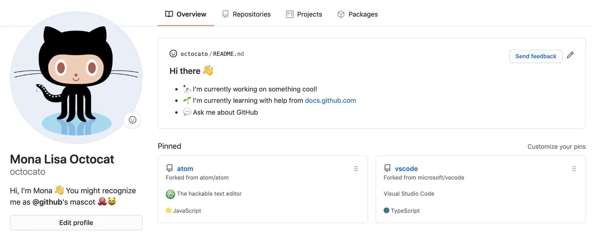
Handy links:
https://dev.to/ruppysuppy/beautify-your-github-profile-like-a-pro-5093
41.11 Glossary-GitHub
| Terms | Description |
|---|---|
| clone | A clone is a copy of a repository that lives on your computer instead of on a website's server somewhere, or the act of making that copy. When you make a clone, you can edit the files in your preferred editor and use Git to keep track of your changes without having to be online. The repository you cloned is still connected to the remote version so that you can push your local changes to the remote to keep them synced when you're online. |
| commit | A commit, or revision, is an individual change to a file (or set of files). When you make a commit to save your work, Git creates a unique ID that allows you to keep record of the specific changes committed along with who made them and when. Commits usually contain a commit message which is a brief description of what changes were made. |
| commit message | Short, descriptive text that accompanies a commit and communicates the change the commit is introducing. |
| fork | A fork is a personal copy of another user's repository that lives on your account. Forks allow you to freely make changes to a project without affecting the original upstream repository. You can also open a pull request in the upstream repository and keep your fork synced with the latest changes since both repositories are still connected. |
| Git | Git is an open source program for tracking changes in text files. It was written by the author of the Linux operating system, and is the core technology that GitHub, the social and user interface, is built on top of. |
| GitHub Classroom | GitHub Classroom automates repository creation and access control, making it easy to distribute starter code and collect assignments on GitHub |
| Markdown | Markdown is an incredibly simple semantic file format, not too dissimilar from .doc, .rtf and .txt. Markdown makes it easy for even those without a web-publishing background to write prose (including with links, lists, bullets, etc.) and have it displayed like a website. |
| pull | Pull refers to when you are fetching in changes and merging them. For instance, if someone has edited the remote file you're both working on, you'll want to pull in those changes to your local copy so that it's up to date |
| push | To push means to send your committed changes to a remote repository on GitHub.com. For instance, if you change something locally, you can push those changes so that others may access them. |
| README | A text file containing information about the files in a repository that is typically the first file a visitor to your repository will see. A README file, along with a repository license, contribution guidelines, and a code of conduct, helps you share expectations and manage contributions to your project. |
| repository | A repository (repo) is the most basic element of GitHub. They're easiest to imagine as a project's folder. A repository contains all of the project files (including documentation), and stores each file's revision history. Repositories can have multiple collaborators and can be either public or private. |
| RMarkdown | Rmarkdown is a package and filetype that are deeply embedded with RStudio to allow the integration of Markdown and output chunks of programming code (such as R) to publish a variety of different file types |
| personal access token | A token that is used in place of a password when performing Git operations over HTTPS. Also called a PAT. |
Reading
(PART*) Working with big data
42 Reading
We did not cover the different approaches to working with really big data in R. Instead I have provided a list of extra reading and exercises that cover this in more depth, as well as introductions to using SQL with dplyr functions:
https://www.r-bloggers.com/2020/09/the-fastest-way-to-read-and-writes-file-in-r/
https://www.r-bloggers.com/2019/05/how-to-save-and-load-datasets-in-r-an-overview/
http://www.sthda.com/english/wiki/saving-data-into-r-data-format-rds-and-rdata
https://waterdata.usgs.gov/blog/formats/
https://inbo.github.io/tutorials/tutorials/r_large_data_files_handling/
https://bookdown.org/csgillespie/efficientR/preface.html
https://github.com/sbreitbart/DataSci_for_Ecologists/blob/main/SQL_intro/SQL_intro.rmd
(PART*) BONUS: Automated Exploratory Analysis
43 Packages for Automated Exploratory Data Analysis
In the realm of data science, the use of automated exploratory analysis is gaining prominence as a powerful approach. This methodology offers a way for data analysts and scientists to rapidly gain insights into their datasets, particularly when they have been working with tidyverse tools, without the need for laborious manual inspections of individual variables or the creation of numerous plots. The aim is to streamline and speed up the workflow, making data exploration more efficient and effective. To achieve this, data professionals turn to specific R packages such as skimr, ggally, and dataxray.
skimr: The skimr package is tailored to provide a concise and informative summary of a dataset's variables. It supplies a variety of functions for generating descriptive statistics, data type details, and visual representations. This empowers you to efficiently grasp the structure and characteristics of your data, aligning with the tidyverse principles. Skimr is particularly valuable for gaining an initial understanding of your dataset and for spotting potential issues or patterns.
ggally: Known as the "ggplot2 extension for exploring correlations," ggally is an R package that extends the capabilities of the well-known ggplot2 package. If you're already familiar with tidyverse, you'll appreciate ggally's seamless integration with tidy data principles. It is primarily used to create visualizations and plots for exploring relationships and correlations among variables. With ggally, you can readily produce scatterplots, density plots, and other types of graphs that shed light on the connections within your data.
dataxray: For data professionals who have been using tidyverse tools, the dataxray package is a natural extension of the workflow. This new R package provides quick statistical summaries in an interactive table inside of the Rstudio Viewer Pane.
Together, these R packages serve to streamline and automate the exploratory analysis process within the tidyverse framework. They make data exploration more efficient and effective, enabling data scientists and analysts to swiftly gain insights into their datasets, pinpoint potential problems, and lay the foundation for more in-depth analyses and modeling. Automated exploratory analysis, when seamlessly integrated with tidyverse tools, plays a pivotal role in the data analysis workflow, providing a deeper understanding of the data and guiding informed decisions about subsequent steps in analysis and modeling tasks.
43.1 Skimr for automated data quality checking
Skimr is my preferred R package for quickly assessing data quality, serving as my initial step in exploratory data analysis. Before proceeding with any other tasks, I rely on skimr to conduct a thorough data quality check.
| Name | penguins |
| Number of rows | 344 |
| Number of columns | 20 |
| _______________________ | |
| Column type frequency: | |
| character | 10 |
| Date | 1 |
| factor | 1 |
| numeric | 8 |
| ________________________ | |
| Group variables | None |
Variable type: character
| skim_variable | n_missing | complete_rate | min | max | empty | n_unique | whitespace |
|---|---|---|---|---|---|---|---|
| study_name | 0 | 1.00 | 7 | 7 | 0 | 3 | 0 |
| species | 0 | 1.00 | 6 | 9 | 0 | 3 | 0 |
| region | 0 | 1.00 | 6 | 6 | 0 | 1 | 0 |
| island | 0 | 1.00 | 5 | 9 | 0 | 3 | 0 |
| stage | 0 | 1.00 | 18 | 18 | 0 | 1 | 0 |
| individual_id | 0 | 1.00 | 4 | 6 | 0 | 190 | 0 |
| clutch_completion | 0 | 1.00 | 2 | 3 | 0 | 2 | 0 |
| date_egg | 0 | 1.00 | 10 | 10 | 0 | 50 | 0 |
| sex | 11 | 0.97 | 4 | 6 | 0 | 2 | 0 |
| comments | 290 | 0.16 | 18 | 68 | 0 | 10 | 0 |
Variable type: Date
| skim_variable | n_missing | complete_rate | min | max | median | n_unique |
|---|---|---|---|---|---|---|
| date_egg_proper | 0 | 1 | 2007-11-09 | 2009-12-01 | 2008-11-09 | 50 |
Variable type: factor
| skim_variable | n_missing | complete_rate | ordered | n_unique | top_counts |
|---|---|---|---|---|---|
| flipper_range | 2 | 0.99 | FALSE | 3 | med: 152, sma: 99, lar: 91 |
Variable type: numeric
| skim_variable | n_missing | complete_rate | mean | sd | p0 | p25 | p50 | p75 | p100 | hist |
|---|---|---|---|---|---|---|---|---|---|---|
| sample_number | 0 | 1.00 | 63.15 | 40.43 | 1.00 | 29.00 | 58.00 | 95.25 | 152.00 | ▇▇▆▅▃ |
| culmen_length_mm | 2 | 0.99 | 43.92 | 5.46 | 32.10 | 39.23 | 44.45 | 48.50 | 59.60 | ▃▇▇▆▁ |
| culmen_depth_mm | 2 | 0.99 | 17.15 | 1.97 | 13.10 | 15.60 | 17.30 | 18.70 | 21.50 | ▅▅▇▇▂ |
| flipper_length_mm | 2 | 0.99 | 200.92 | 14.06 | 172.00 | 190.00 | 197.00 | 213.00 | 231.00 | ▂▇▃▅▂ |
| body_mass_g | 2 | 0.99 | 4201.75 | 801.95 | 2700.00 | 3550.00 | 4050.00 | 4750.00 | 6300.00 | ▃▇▆▃▂ |
| delta_15n | 14 | 0.96 | 8.73 | 0.55 | 7.63 | 8.30 | 8.65 | 9.17 | 10.03 | ▃▇▆▅▂ |
| delta_13c | 13 | 0.96 | -25.69 | 0.79 | -27.02 | -26.32 | -25.83 | -25.06 | -23.79 | ▆▇▅▅▂ |
| year | 0 | 1.00 | 2008.03 | 0.82 | 2007.00 | 2007.00 | 2008.00 | 2009.00 | 2009.00 | ▇▁▇▁▇ |
We can end up dedicating a significant amount of our time to tasks such as data comprehension, exploration, wrangling, and preparation for analysis.
However, we can significantly expedite this process. In every single data project I undertake, I rely on skimr, which is my go-to solution for achieving efficiency and speed.
43.1.1 How Skimr works
One of the best features of Skimr is its capability to generate a comprehensive Data Quality Report with just a single line of code. This automation encompasses:
Data Profiling
Compatibility with Numeric, Categorical, Text, Date, Nested List Columns, and even dplyr groups
In essence, this remarkable functionality translates to significant time savings for data scientists 🕒
Assessing data with skimr makes simple quality checks easy!
43.1.2 Reporting
The penguins dataset has a lot of information in it, 344 rows of data and 19 independent variables. It has multiple data types and frequent missing data. With skimr::skim() we get an overall data summary of th number of rows, columns, data types by column and any group variables.
43.1.2.1 Character summaries
Missing/completion rate, number of unique observations, and text features.
43.1.2.2 Factor summaries
If data is recognised as factorial we get missing/completion rate, whether the factor is ordered, numbr of unique levels and the number of observations for each factor
43.1.2.3 Date summaries
Missing/completion rates, min/max dates, and the number of unique dates.
43.1.2.4 Numeric summaries
Missing/completion rates and distributions.
43.2 GGally for exploratory analysis
GGally is another invaluable tool in a researcher's toolkit. It seamlessly extends the capabilities of the widely used ggplot2 package. With GGally, you can effortlessly create a variety of visualizations to explore and understand distributions and correlations among your variables. Its flexibility and ease of use make it a go-to choice for streamlining the process of creating insightful plots and charts for data analysis.
43.2.1 pairs

43.2.2 GGally
So far, we have only used the pairs function that comes together with the base installation of R. However, the ggplot2 and GGally packages provide an even more advanced pairs function, which is called ggpairs(). Let’s install and load the packages:
penguins |>
select(species, island, culmen_length_mm, culmen_depth_mm, flipper_length_mm, body_mass_g, sex) |>
ggpairs()


penguins |>
ggpairs(columns = 10:14, columnLabels = c("Bill length", "Bill depth", "Flipper length", "Body mass", "Sex"))
penguins |>
ggpairs(columns = 10:14, upper = list(continuous = "density", combo = "box_no_facet"),
lower = list(continuous = "points", combo = "dot_no_facet"))
penguins |>
ggpairs(columns = 10:14, upper = list(continuous = "density", combo = "box_no_facet"),
lower = list(continuous = "points", combo = "dot_no_facet"),
ggplot2::aes(colour = species))

43.3 dataxray
dataxray is a new R package that provides quick statistical summaries in an interactive table inside of the Rstudio Viewer Pane. To use this package we need to install from Github, which means we need the devtools package and devtools::install_github()
dataxray emphasises an interactive exploration of the exploratory summaries. This goes beyond what skimr can do by adding an interactive exploration element to feature summaries. So if you like interactivity, then try dataxray.
There are just two functions we require with this package
dataxray::make_xray()to convert the raw data to preformatted data for the reactable interactive tabledataxray::view_xray()to display the interactive exploratory table using the underlying reactable library.
Now you can explore each column to see:
Count and Percent Missing - How many NA values
Number of Distinct - How many unique observations
Categorical Data - Bar charts for frequency by category
Numeric Data - Distribution with histogram and quantiles
Expandable Groups - You can expand the groups to find out more information about the features
Search Features - Use regex to search the name. Great if you have a lot of features (columns)
## R version 4.3.1 (2023-06-16)
## Platform: x86_64-pc-linux-gnu (64-bit)
## Running under: Ubuntu 20.04.6 LTS
##
## Matrix products: default
## BLAS: /usr/lib/x86_64-linux-gnu/atlas/libblas.so.3.10.3
## LAPACK: /usr/lib/x86_64-linux-gnu/atlas/liblapack.so.3.10.3; LAPACK version 3.9.0
##
## locale:
## [1] LC_CTYPE=C.UTF-8 LC_NUMERIC=C LC_TIME=C.UTF-8
## [4] LC_COLLATE=C.UTF-8 LC_MONETARY=C.UTF-8 LC_MESSAGES=C.UTF-8
## [7] LC_PAPER=C.UTF-8 LC_NAME=C LC_ADDRESS=C
## [10] LC_TELEPHONE=C LC_MEASUREMENT=C.UTF-8 LC_IDENTIFICATION=C
##
## time zone: UTC
## tzcode source: system (glibc)
##
## attached base packages:
## [1] stats graphics grDevices utils datasets methods base
##
## other attached packages:
## [1] janitor_2.2.0 dataxray_0.1.0 skimr_2.1.5 GGally_2.1.2
## [5] knitr_1.43 webexercises_1.1.0 glossary_1.0.0 lubridate_1.9.2
## [9] forcats_1.0.0 stringr_1.5.0 dplyr_1.1.2 purrr_1.0.1
## [13] readr_2.1.4 tidyr_1.3.0 tibble_3.2.1 ggplot2_3.4.2
## [17] tidyverse_2.0.0
##
## loaded via a namespace (and not attached):
## [1] tidyselect_1.2.0 viridisLite_0.4.2 farver_2.1.1
## [4] fastmap_1.1.1 lazyeval_0.2.2 reshape_0.8.9
## [7] promises_1.2.0.1 digest_0.6.33 rpart_4.1.19
## [10] timechange_0.2.0 mime_0.12 lifecycle_1.0.3
## [13] cluster_2.1.4 ellipsis_0.3.2 magrittr_2.0.3
## [16] compiler_4.3.1 rlang_1.1.1 Hmisc_5.1-1
## [19] sass_0.4.6 tools_4.3.1 utf8_1.2.3
## [22] yaml_2.3.7 data.table_1.14.8 labeling_0.4.2
## [25] htmlwidgets_1.6.2 here_1.0.1 plyr_1.8.8
## [28] xml2_1.3.5 repr_1.1.6 RColorBrewer_1.1-3
## [31] withr_2.5.0 foreign_0.8-84 nnet_7.3-19
## [34] grid_4.3.1 fansi_1.0.4 xtable_1.8-4
## [37] colorspace_2.1-0 MASS_7.3-60 scales_1.2.1
## [40] isoband_0.2.7 cli_3.6.1 rmarkdown_2.23
## [43] generics_0.1.3 rstudioapi_0.15.0 httr_1.4.6
## [46] tzdb_0.4.0 cachem_1.0.8 base64enc_0.1-3
## [49] vctrs_0.6.3 jsonlite_1.8.7 bookdown_0.34
## [52] hms_1.1.3 Formula_1.2-5 htmlTable_2.4.1
## [55] plotly_4.10.2 jquerylib_0.1.4 glue_1.6.2
## [58] codetools_0.2-19 stringi_1.7.12 gtable_0.3.3
## [61] later_1.3.1 downlit_0.4.3 munsell_0.5.0
## [64] pillar_1.9.0 htmltools_0.5.5 reactable_0.4.4
## [67] R6_2.5.1 reactablefmtr_2.0.0 rprojroot_2.0.3
## [70] evaluate_0.21 shiny_1.7.4.1 highr_0.10
## [73] backports_1.4.1 snakecase_0.11.0 memoise_2.0.1
## [76] httpuv_1.6.11 bslib_0.5.0 Rcpp_1.0.11
## [79] gridExtra_2.3 checkmate_2.2.0 xfun_0.39
## [82] fs_1.6.2 pkgconfig_2.0.3More on projects can be found in the R4DS book (https://r4ds.had.co.nz/workflow-projects.html)↩︎